Jeffrey Otoibhi
Aletheia AI
Preprint draft of 2026-10-26 (revised after the contamination audit of 2026-10-26: Section 6.9a is new and the statements about the exposure of the evaluation sets, the cross-paper clean comparisons and the final run's independence were corrected; the statements about the extra reward hardening were revised on 2026-10-25, Section 7.9). "Sabi" is Nigerian Pidgin for "to know (how to)". The controlled ablation of Section 8.4 has finished and is reported (one run per arm, four languages). Open questions to the authors are marked TODO(owner: ...) and collected in paper/TODO.md.
Abstract. A 270M-parameter model can write 77 African languages, but fine-tuning alone leaves it with sentences it never finishes, source text it copies and languages it barely writes. We ask how far reinforcement learning (GRPO) with quality-estimation rewards can close that gap without any new parallel data. On FLORES+, RL lifts macro chrF++ from 28.7 to 34.1 (+5.4, 95% CI [5.2, 5.6]; all 45 languages improve), most where the fine-tuned model was weakest (Kabuverdianu +14.2, Kabiye +14.1, Kamba +12.1); part of that gain is repaired unfinished or looping output. The test sets were not unseen by our pipeline (Section 6.9a): the fine-tuning text held the English side of 95% of the FLORES+ devtest sentences and, for seven languages, the reference translation itself; the eight benchmarks rest on five English texts; and the reward's calibration was fitted on test splits (the Efik thresholds on IbomMT; the final run's anchors on six test sets), so our levels are inflated (on FLORES+ by 3.8 chrF++ for SFT and 2.6 for RL) and some results are not independent tests. The gain does not depend on this: on the rows whose English was never in our training text RL beats SFT on all eight benchmarks (FLORES+ +6.6 [5.8, 7.2], NTREX-128 +4.1, MAFAND-MT +3.7, SmolSent +7.1, SALT +2.3). A fresh evaluation is planned and has not been run. A pre-registered ablation (four languages, one run per arm) shows that the gain survives a much weaker fine-tuning start (+7.4 against +5.7 chrF++) and that RL beats continued fine-tuning of equal compute (+7.0); it does not show that RL replaces fine-tuning. On identical sentences (also on the never-seen rows: 3.16 over 44 languages) the model stays 3.32 chrF++ behind NLLB-200 3.3B on the 42 languages without the two Ge'ez-script languages (median 2.78; 3.85 and 3.17 on all 44, because a few languages carry the gap: Kabuverdianu, Amharic and Tigrinya alone 30%); Amharic and Tigrinya, left out of that headline because they are an outlier with an untested cause, are far behind (19.0 and 13.8 against 38.0 and 24.7), and Kabuverdianu, our largest gain over SFT, is also the largest remaining gap (21.0); we do not beat NLLB. Quantised to 8 bits it runs on four CPU cores with no measurable quality loss (about two sentences per second on a server CPU). We evaluate against human references, metrics that correlate with human judgement (AfriCOMET, SSA-COMET) and an independent LLM judge (Spearman about 0.5 with human ratings); there is no human evaluation, and we say where our reward and our metrics overlap.
Most African languages are served poorly by machine translation. Large systems cover a few dozen of them, and the community benchmarks that measure the rest are small. At the same time there is demand for models that run on a phone or a laptop without a network. We ask how far a very small model, Gemma 3 with 270 million parameters, can be pushed on English-to-African translation, and where the limits lie, when the training signal after supervised fine-tuning (SFT) comes from reinforcement learning (RL) with learned quality metrics instead of more parallel data.
The setting is demanding in three ways. First, the languages: 77 targets, from Swahili and Zulu (tens of millions of speakers, decent data) to Esan, Edo, Ghomala and Okpe, for which the only parallel text we could find is largely religious. For 23 of them no learned translation-quality metric exists at all. Second, the model: 270M parameters, of which 168M are the 262k-entry embedding table, so the transformer proper is tiny. Third, the length: we wanted the model to translate whole documents of up to 2,048 source tokens, which in a language with fragmented tokenisation means an output of 4,000 tokens or more.
RL with a quality-estimation (QE) reward is an obvious tool, but a reward that is a learned model is a target to be gamed, and the literature and our own corruption tests list the cheap exploits: copying the English source, appending text, repeating, answering in the wrong language, stopping early, or writing the same stock sentence for every prompt. Most of this paper is therefore about what surrounds the reward and about the measurements that motivated each safeguard. Whether the policy would have found these exploits without the safeguards our runs cannot say, because every run had the hard failure classes, and for the extra terms of the final run (anchors, ensemble, long-document reward) a stored-output check finds no demonstrated protective effect, only a design and some lower loop rates without a control run (Section 7.9). The paper tells the story in order, including the parts that did not work: a training phase that diverged, a detector with a length bug, a teacher model that could not teach, a science fine-tuning stage that erased what RL had gained until it was interpolated away, and a long-document goal that was met for RL-final only by changing the decoding strategy, and natively, with omissions, only after the science stage.
Contributions. To our knowledge, this is the first open 270M-parameter model fine-tuned with RL against an African-language quality estimator (a QE-ensemble reward) on prompts of up to 2,048 source tokens; the single-pass document result is narrower than that training range (Sections 6.4 and 6.10), and the statement concerns the training prompts, not the quality of document translation relative to other systems. Our literature search (about 28 queries on 2026-10-22 and 2026-10-23, Section 2) found no earlier work with this combination; Section 2 lists the closest prior work and what we do not claim. On breadth we claim only that, to our knowledge, it is the open translation model with the widest African target-language coverage below 1B parameters (77 languages, against 55 for NLLB-200-600M), and that it covers 33 African languages absent from FLORES-200 (17 of which we could not find in NLLB-200, MADLAD-400 or TranslateGemma); we do not claim to be the first or the only system with this breadth (Section 6.8).
clean rows in earlier drafts was not like for like (removed). The conclusions that survive are stated in the section; the stage-by-stage account and the tables of exposure are generated from the audit's files.Outline. Section 3 describes languages, data and the supervised model; Section 4 the RL method and reward; Section 5 the setup; Section 6 the results (including the final run, a comparison with other systems on identical sentences, a pairwise comparison of SFT and RL and the audit of the exposure of the evaluation sets, Section 6.9a); Section 7 the reward analysis; Section 8 the research question on RL and SFT data, with the controlled ablation; Section 9 three case studies; Section 10 the discussion of the plateau and practical deployment; Sections 11-13 limitations, ethics and reproducibility; Section 14 concludes.
Machine translation for African languages. The field's data and evaluation infrastructure comes from community efforts: the participatory Masakhane work (Nekoto et al., 2020), MAFAND-MT, a news-domain corpus for 16 languages showing that a few thousand high-quality pairs go a long way when fine-tuning large pretrained models (Adelani et al., 2022), AfroMT (Reid et al., 2021), FLORES-200 and the NLLB-200 system covering 200 languages (Goyal et al., 2022; NLLB Team et al., 2022; NLLB Team, 2024), its community-maintained successor FLORES+ (Open Language Data Initiative, 2025; Dale et al., 2025), MADLAD-400 (Kudugunta et al., 2023), SALT for Ugandan languages (Akera et al., 2022), SMOL and GATITOS for very low-resource languages (Caswell et al., 2025), and the Bible and Jehovah's Witnesses corpora (Agic and Vulic, 2019; Akerman et al., 2023) on which much low-resource training data still rests (an issue we measure in Section 3.4). Quality estimation for African languages is led by AfriCOMET (Wang et al., 2024) and SSA-COMET, with human annotations for 14 pairs (Li et al., 2025), the latter reported by the recent African-MT papers while AfriCOMET is published for almost none of the baseline systems (Section 6.8); AfroBench evaluates LLMs across 64 languages and finds a large gap to English (Ojo et al., 2025). Recent LLM-based work trains much larger models than ours: AfriqueLLM adapts 4-14B Llama, Gemma and Qwen models with 16K context (Yu et al., 2026), Sunflower post-trains Qwen3 14B/32B for 31 Ugandan languages (Akera et al., 2025), and TranslatePsy-AfriSLM is the nearest small-model competitor, 0.8B-4B models for 19 African languages trained by supervised fine-tuning with QE filtering and synthetic data (Gritta et al., 2026); smaller African-oriented models include InkubaLM (0.4B) (Tonja et al., 2024) and a pruned NLLB-600M (Moslem et al., 2026). NLLB-200's own model card states that it was trained on inputs of at most 512 tokens and that it is not intended for document translation (facebook (Hugging Face organisation), 2026).
Document-level and long-output translation. LLMs can translate documents (Wang et al., 2023); open and specialised models are prone to off-target output (Wu et al., 2024), translation quality of sequence models degrades on lengths unseen in training (Variš and Bojar, 2021), and long-context models use information in the middle of the input less reliably (Liu et al., 2023); under-generation and repetition of long outputs are what we observe ourselves (Section 6.4). For African languages the dedicated resource is AfriDoc-MT, five languages and about 650 English words per document, where sentence-level models generalise poorly to long inputs and sentence-by-sentence translation beats pseudo-document translation for most models (Alabi et al., 2025); AfriScience-MT reports a large sentence-to-document quality drop on six languages (Abdulmumin et al., 2026); AfriqueLLM reports document translation on AfriDoc-MT, with a smallest model of 4B (Yu et al., 2026). Sentence-level alignment of long outputs goes back to Gale and Church (Gale and Church, 1993) and Vecalign (Thompson and Koehn, 2019); repetition and degeneration in long generation are classic phenomena (Holtzman et al., 2020; Welleck et al., 2020) that reappear as the dominant failure of our whole-document decoding. FormatRL applies GRPO to document-level translation of structured XML documents (Song et al., 2025) and LongWriter-Zero uses RL for ultra-long writing (Wu et al., 2025); we found no RL study of end-to-end translation of long documents with a small model.
Reinforcement learning for translation. GRPO (Shao et al., 2024) and its analyses (DeepSeek-AI et al., 2025; Liu et al., 2025; Yu et al., 2025) (group-relative advantages, length and standard-deviation normalisation, KL estimators (Schulman, 2020)) underlie R1-style translation work: MT-R1-Zero (3B and 7B models) (Feng et al., 2025), R1-T1 (He et al., 2025), DeepTrans and ExTrans (7B backbones) (Wang et al., 2025; Wang et al., 2025), Seed-X (7B) (Cheng et al., 2025), Hunyuan-MT and HY-MT1.5 (Zheng et al., 2025; Zheng et al., 2025), and TranslateGemma, which applies RL with a reward-model ensemble (MetricX-QE, an AutoMQM-style QE model, chrF and others) to Gemma 3 at 4B, 12B and 27B (Finkelstein et al., 2026). Closest to our setting are RL fine-tuning of NLLB-600M/1.3B with a round-trip chrF++ reward, covering Wolof and Dyula among other languages (Attia and Aji, 2026), reference-free GRPO on NLLB with LaBSE and COMET-Kiwi over 13 languages (Garcia-Estrada et al., 2026), and RL with a chrF reward for unseen-language translation (Hu et al., 2026). Earlier work optimised metrics directly (Shen et al., 2016) or used them for preference optimisation (Xu et al., 2024) and decoding (Freitag et al., 2022; Fernandes et al., 2022; Eikema and Aziz, 2020). Label-free RL signals such as agreement among samples (Zuo et al., 2025; Wang et al., 2023) are the analogue of our consensus reward. Length curricula for RL exist for reasoning (Song et al., 2025; Hammoud et al., 2025); we found none for translation.
Metrics, reward hacking and quality estimation. COMET-family and MetricX metrics (Rei et al., 2020; Rei et al., 2022; Guerreiro et al., 2023; Juraska et al., 2024) are strong on high-resource languages and less reliable for low-resource ones; the size of a metric difference that matters is metric-specific and thresholds may not transfer across languages (Kocmi et al., 2024), chrF/chrF++ and spBLEU remain the surface reference (Popovic, 2017; Post, 2018), and bootstrap resampling is the usual significance test (Koehn, 2004). Optimising a learned reward overoptimises it (Gao et al., 2023; Karwowski et al., 2023; Krakovna et al., 2020), ensembles mitigate this (Coste et al., 2024), and length is a classic exploit (Singhal et al., 2024). For translation specifically, WALAR documents self-generated references, non-translations, over- and under-translation and wrong-language output as hacks of a QE reward and adds word- and language-alignment rewards (Liu et al., 2026); MiLMMT-style work gates a two-QE reward by language identification (Han et al., 2026); language identification for low-resource languages is the job of GlotLID (Kargaran et al., 2023). We extend this line to African languages, a 270M model and long documents, and add measurements of detector false-positive rates against human text.
Small models, multilinguality, forgetting. Gemma 3 and its 270M variant (Gemma Team et al., 2025; Google Developers, 2025) are positioned for task-specific fine-tuning; small multilingual models face the curse of multilinguality (Conneau et al., 2020; Chang et al., 2023), unfair tokenisation of low-resource scripts (Petrov et al., 2023) and language-sampling choices (Chung et al., 2023). Weight-space interpolation between a fine-tuned and a base model recovers robustness (Wortsman et al., 2022), and averaging or combining fine-tuned weights is a general tool (Wortsman et al., 2022; Ilharco et al., 2023); replay mitigates forgetting (Rolnick et al., 2019), LoRA learns and forgets less than full fine-tuning (Biderman et al., 2024), and RL forgets less than SFT and changes small subnetworks (Shenfeld et al., 2025; Mukherjee et al., 2025). Whether RL generalises where SFT memorises (Chu et al., 2025) or only sharpens what the base model already contains (Yue et al., 2025) is open for reasoning, and we know of no controlled comparison for translation; reference-free RL has been proposed as a route where parallel data are scarce (Liu et al., 2026), and Section 8 contributes one observational data point (RL against added parallel data, for two African languages) and a small controlled ablation (four languages, one seed per arm).
Positioning and the novelty claim. To our knowledge no earlier work applies RL with a quality-estimation reward ensemble to a decoder-only model of about 270M parameters for English-to-African translation over 77 targets, or trains such a model with an output-length curriculum up to 2,048-token inputs; in the wording we are prepared to defend, this is the first open 270M-parameter model fine-tuned with RL against an African-language quality estimator on prompts of up to 2,048 tokens. Neighbouring work limits what we can claim: RL for MT with small models exists (NLLB-600M/1.3B), RL for MT with a QE-ensemble reward exists (TranslateGemma, 4B and up), reward-hacking defences for MT-RL have been studied (WALAR), and small African MT models (TranslatePsy-AfriSLM) and African document-level benchmarks (AfriDoc-MT) exist. We therefore claim neither first RL for low-resource MT nor first small model nor first reward-hacking analysis. On language coverage we make no claim of priority. NLLB-200 supports 55 African languages (NLLB Team et al., 2022); MADLAD-400 lists about 85 African entries (Kudugunta et al., 2023) and TranslateGemma about 60 (Finkelstein et al., 2026) (both our manual tallies of the papers' tables, unverified); Omnilingual MT (Meta, 2026) reports a far wider language list that we did not verify. What we claim is narrower and conditional (Section 6.8): to our knowledge the open model with the widest African target-language coverage below 1B parameters (77 languages against 55 for NLLB-200-600M), which says nothing about quality, where our model is below NLLB-200-600M; and 33 languages absent from FLORES-200, 17 of which we could not find in NLLB-200, MADLAD-400 or the TranslateGemma language lists. In addition, our own long-document result (Section 6.4) is narrower than the goal that motivated it: the RL-trained model translates 2,048- and 4,096-token documents only with sentence-level chunked decoding and its single-pass translation works to about 512 tokens; the science-stage model finishes whole documents of up to about 2,048 tokens but omits 13-30% of the sentences, and NLLB-200 and TranslatePsy-AfriSLM with a sentence-by-sentence wrapper are 1-4 chrF++ ahead of it (Section 6.10). The literature search behind these statements (about 28 searches, 2026-10-22 and 2026-10-23, plus a coverage survey of 35 systems, Appendix G) is recorded in paper/lit/notes_*.md and reports/data/language_coverage_claim_check.md; it should be repeated on Google Scholar, the ACL Anthology (WMT and EMNLP 2026) and Hugging Face papers before submission.
The task is English-to-African-language translation with one fixed prompt, Translate the text to {language}: {english} (two spaces after the colon), and one fixed answer format, {iso} {translation}<end_of_turn>: the model first writes the three-letter tag of the target language and then the translation. The tag is part of the loss in SFT and is required by the RL reward (a missing or wrong tag is a hard failure), so that the model cannot silently answer in another language. Only English sources are used. The model is google/gemma-3-270m-it (18 layers, hidden size 640, 4 attention heads with one key-value head, sliding window 512, 262,144-token vocabulary; the embedding table alone holds about 168 M of the roughly 270 M parameters by our count, about 170 M according to the model announcement) (Gemma Team et al., 2025; Google Developers, 2025). We train the full model; no adapters.
The language table has 85 rows, of which 77 are the target languages of SFT and of the RL phases and 8 are table entries that were not RL-trained (nde, fat, knc, gaa, men, luy, tzm, ful); according to gemma_mt/languages.py and D-38 none of these 8 has SFT training data, so they are zero-shot (one report lists four of them as having some data; TODO(owner: confirm)), and only Kanuri and North Ndebele are scored on a benchmark. The 77 RL languages are split by the content signal that is available to the reward (Table 1): 42 languages whose AfriCOMET-QE score was validated against human references (AUC for human versus mismatched references of at least 0.70), 12 languages named on the AfriCOMET card or varieties of a validated language but without reference-based validation (QE is blended 50/50 with a consensus signal), and 23 languages that AfriCOMET does not cover, for which the reward has no learned metric at all (consensus signal plus constraint penalties). Of the 85 rows, 66 have at least one human-reference benchmark in our evaluation (45 on FLORES+); 19 have none, 13 of them RL languages (Table 81, Figure 1). For these 13 languages quality was judged only by the reward models.
reports/final_model_per_language_2026-10-21.md.| group | languages | definition | content reward |
|---|---|---|---|
| QE-validated | 42 | AfriCOMET-QE validated against human references (AUC human vs mismatched >= 0.70) | QE (ensemble) + consensus where weak |
| QE-blend | 12 | named on the AfriCOMET card or a variety of a validated language, no reference-based validation | 0.5 x QE + 0.5 x consensus |
| consensus-only | 23 | not covered by AfriCOMET | consensus chrF++ in the group + constraint penalties |
| SFT-only (no RL) | 8 | SFT targets that were not RL-trained (some without any SFT data) | none |
| total | 85 | 85 language-table rows, of which 77 are RL-trained (first three groups) |
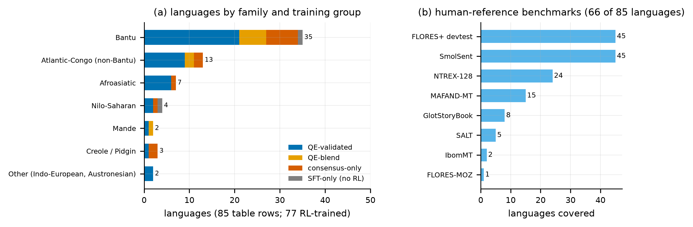
We keep the Gemma 3 tokenizer unchanged. The relevant measured facts are modest: the number of Gemma tokens of the human reference per Gemma token of the English source ranges from 1.12 to 3.19 (median 1.88) over the 54 targets with human documents (reports/longdoc_benchmark_plan_2026-10-20_parts/data/fertility.json, DECISIONS.md D-44), so a 2,048-token English document translates into an output of roughly 4,000 tokens or more in the more fragmented languages; the tokenizer has no normaliser, and decomposed (NFD) text of a diacritic-rich language costs up to 1.29 times as many tokens as NFC text, so all training text, rewards and metrics are Unicode-NFC (DECISIONS.md D-29; memory notes on the NFC audit). Gemma token counts are 0.88-0.90 times the AfroXLM-R token counts for the English sources and 0.97-1.43 times for the human references (54 languages; same file), and the AfroXLM-R counts define our length bins.
Tokenisation cost by language (a measured finding). The same sentence costs a very different number of tokens in different languages, and a decoder pays for every output token. On the 1,012 FLORES+ devtest sentences the Gemma tokenizer gives 3.11 characters per token for Swahili, 2.99 for Hausa, 2.74 for Kinyarwanda, 1.94 for Yoruba, 1.66 for Amharic and 1.35 for Tigrinya (English: 4.87; reports/data/weak_language_data_2026-10-22/tokenizer_flores_devtest.csv, Table 2, Figure 2). On the 170-200 sentences per language of the CPU speed set (Section 6.11) the order is the same (2.92, 2.88, 2.65, 1.87, 1.61 and 1.31 characters per reference token, derived from tokens_per_sentence.csv). The English source is equally long in all six runs (26.6-28.5 Gemma tokens), so the difference is entirely on the output side: the reference translation into Yoruba or Tigrinya has 1.50-1.51 times as many tokens as the Swahili one, and our model writes 76.3 and 74.3 tokens per sentence against 44.5 for Swahili (1.71 and 1.67 times). Characters per token is not the whole story: Amharic has the second-lowest characters per token but Amharic sentences are short (88 reference characters against 136 for Swahili), so it costs only 1.24 times the Swahili output tokens. On four CPU cores with the Q8_0 build the consequence is direct: Yoruba and Tigrinya run at 1.58 and 1.55 sentences/s against 2.46 for Swahili at batch 32, that is 1.56 and 1.59 times as long per sentence (about 176-179 hours per million sentences against 113 for Swahili and 111 for Hausa; best of two repetitions; one Kinyarwanda repetition ran at 0.42 sentences/s against 2.11 for the other, probably because of another job on the shared machine, which is why the best repetition is used). The "about 1.6 times" in a casual statement of this finding is therefore the time per sentence; the output-token ratio is 1.7 for the generated text and 1.5 for the references. Time and memory of a deployment thus depend on the target language, and a throughput figure without the language (such as the 139 hours per million sentences of Section 6.11, a mixture of six languages) hides a factor of about 1.6.
tokenizer_flores_devtest.csv). Reference and generated tokens per sentence and the Q8_0 speed: reports/data/cpu_speed_2026-10-23/tokens_per_sentence.csv and per_language_speed.csv (170-200 sentences per language, 4 threads, batch 32, best of two repetitions). chrF++ of the final-run checkpoint on exactly these sentences: quality.csv (GPU, greedy); RL-final on the full FLORES+ devtest (all rows): reports/data/final_model_per_language.csv. Source: paper/scripts/make_cpu.py.| language | characters per token (FLORES+, 1,012 sentences) | tokens vs English | reference tokens per sentence | tokens we generate per sentence | generated tokens vs Swahili | Q8_0 sentences/s (batch 32) | time per sentence vs Swahili | chrF++ final run (speed subset) | chrF++ RL-final (FLORES+) |
|---|---|---|---|---|---|---|---|---|---|
| Swahili | 3.11 | 1.64 | 46.5 | 44.5 | 1.00 | 2.46 | 1.00 | 58.0 | 58.4 |
| Hausa | 2.99 | 1.73 | 49.4 | 48.8 | 1.10 | 2.50 | 0.98 | 45.7 | 49.7 |
| Kinyarwanda | 2.74 | 1.97 | 57.5 | 54.9 | 1.23 | 2.11 | 1.17 | 43.5 | 42.2 |
| Yoruba | 1.94 | 2.41 | 69.7 | 76.3 | 1.71 | 1.58 | 1.56 | 29.4 | 29.6 |
| Amharic | 1.66 | 1.94 | 54.7 | 55.1 | 1.24 | 2.15 | 1.14 | 19.3 | 18.9 |
| Tigrinya | 1.35 | 2.48 | 70.2 | 74.3 | 1.67 | 1.55 | 1.59 | 13.8 | 13.8 |
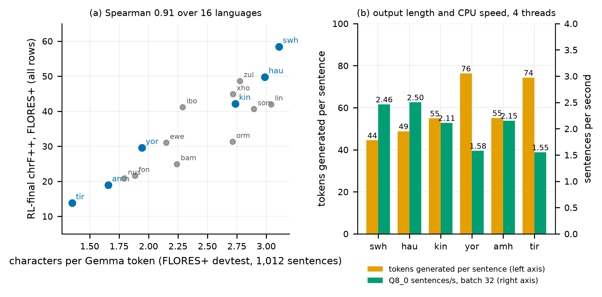
paper/scripts/make_cpu.py.The languages that cost most per sentence are also those the model translates worst: in the six languages the order by characters per token and by chrF++ of the final-run checkpoint is identical (58.0, 45.7, 43.5, 29.4, 19.3, 13.8 from Swahili to Tigrinya), and over the 16 languages with both numbers the Spearman correlation of characters per token with the chrF++ of RL-final is 0.91 (Figure 2a). We read this as an association, not a mechanism: fragmentation of a language by the vocabulary goes with little pretraining text, little SFT text (Section 3.4; in the weak-language report one million Amharic tokens are about 330 thousand words against about 540 thousand for Hausa), script and morphology, and Oromo (2.71 characters per token, 31.3 chrF++) and Bambara (2.24, 24.9) lie off the line. Two implications follow. First, the cost of a deployment is not uniform: a service that translates into Tigrinya or Yoruba needs about 1.6 times the compute per sentence of one that translates into Swahili. Second, the output budget must be set per language, because the same English text needs 1.5 to 2.6 times (Section 9.1) as many output tokens in the fragmenting languages, which also lengthens the context and the cache of long documents (not measured). We measured the cost on CPU only; on a GPU the number of decoding steps scales with output tokens in the same way, but we did not measure it.
A possible mitigation, untested. TODO(vocab: idea only, no experiment has been run and no number of this paper depends on it; a follow-up will add the result here). Since a decoder pays for a softmax over the whole vocabulary at every step, and 168M of the 270M parameters are that 262,145-entry table (which is also the output head), one could restrict decoding to a per-language subset of the vocabulary: the tokens that occur in the target-language training text (for example those covering 99.9% of the target-language token occurrences of the SFT corpus) plus the language tag, digits, punctuation, a Latin core for names and loanwords, and the special tokens. This would cut the cost of each output token (and, for a single-language deployment, the size of the table held in memory), but not the number of tokens per sentence, which is a property of the tokenizer: Yoruba and Tigrinya would stay about 1.5 to 1.7 times Swahili in tokens. Open questions: how much chrF++ is lost on names, numerals and code-switched text; whether a model trained with the full softmax tolerates the renormalisation without fine-tuning; how large the speed-up is when the rest of the step (attention, feed-forward, memory traffic) is unchanged; and whether the per-token cost is dominated by the output projection at all (Section 6.11 states this as a hypothesis).
All parallel data are existing public datasets (we did not create translations); they were regrouped, not newly translated. The sources include benchmark-derived data (found by the audit of Section 6.9a): the SSA-MTE train split (English source with the human reference), SMOL translations (Bambara, Wolof, Ewe), MAFAND-MT test pairs inside aggregated collections, and FLORES+ rows inside aggregated Igbo, Yoruba, Hausa, Luganda and Zulu collections (African-Languages-Lab/multi-open, repackaged in DECISIONS.md D-14 and the memory notes; reports/gemma_sft_training_plan_2026-10-14.md).
Two properties of this corpus matter for the interpretation of every later result. First, it is dominated by religious text for the low-resource languages: in the replay pool sampled from the SFT windows (87,498 windows, 77 languages) Jehovah's Witnesses / Bible-style text makes up on average about 58% of the tokens and 75-93% for most of the weakest languages (reports/weak_language_data_2026-10-22.md section 0, item 4). Second, a large part of it comes from repositories whose licence is unstated: of 292 scanned repositories 213 had no stated licence and were used with a flag, about 58% of the replay tokens are Jehovah's Witnesses text whose publisher copyright is not cleared, and the audit records two owner-approved non-commercial exceptions (reports/weak_language_data_2026-10-22.md section 5). The project lead reports a separate verification that found no non-commercial data in the SFT mixture; that verification is not in the repository (TODO(owner: attach the licence verification)) (Section 11).
SFT ran in two stages with one set of weights (reports/gemma_sft_training_plan_2026-10-14.md; gemma_mt/configs/sft_unimax.yaml). Stage A: AdamW, learning rate 5e-5 with 3% warm-up and cosine decay, betas (0.9, 0.95), weight decay 0.01, gradient clip 1.0, fp32 master weights with bf16 autocast, 131,072 tokens per step (32 packs), languages drawn with probability proportional to the square root of their number of packs (floor 0.2%, a language is retired after four passes over its data), stopped at about step 4,750. Stage B (restart with a fresh optimiser and schedule): Muon with learning rate 4e-5 matched to the AdamW update scale, a UniMax-style language budget of 3 B tokens in which every pack of every language is used between one and two times and 20 priority languages get four times the weight. The final checkpoint is step 27,638 of the combined run, with a macro validation loss (mean of the 77 per-language losses) of 1.2654. All languages use the same weights; the choice among checkpoints was made by macro validation loss, which was still falling slowly (1.2706 at step 25,750 to 1.2654 at step 27,638). A checkpoint of this run at step 20,500 (macro validation loss 1.3025) was benchmarked against the untouched base model: on the FLORES+ rows whose English sentence is not in the SFT text the SFT model reaches 27.0 chrF++ against 13.0 for gemma-3-270m-it (reports/gemma_sft_benchmarks_2026-10-18.md section 2.1), so the base model contributes little African-language ability by itself.
We evaluate English-to-X on eight human-reference benchmarks, always on test splits: FLORES+ devtest (1,012 sentences, 45 of our languages) (Open Language Data Initiative, 2025; Goyal et al., 2022; NLLB Team et al., 2022), NTREX-128 (1,997 sentences, 24), MAFAND-MT test (15 languages) (Adelani et al., 2022), SmolSent (863 sentences, 45) (Caswell et al., 2025), IbomMT (Ibibio, Efik), FLORES-MOZ (Sena), SALT (5) (Akera et al., 2022) and GlotStoryBook (8). These eight test sets rest on five independent English texts: FLORES+ devtest, IbomMT and FLORES-MOZ share the same 1,012 English sentences, and the others are NTREX-128, MAFAND-MT, SmolSent (with SmolDoc) and SALT with GlotStoryBook. Metrics are chrF++ (sacreBLEU, word order 2) (Popovic, 2017) and spBLEU (flores200 tokenizer), corpus-level per language and subset, macro-averaged over languages, on NFC text. Greedy decoding with up to 768 new tokens unless stated; a completion that does not end inside the budget is scored as it stands, and the finished rate is reported next to it. No test split was used as a training target. Test splits were used as calibration or selection material in four places, listed in Section 6.9a: the Efik reward (IbomMT test), the anchors and long-document limits of the final run (NTREX-128, SmolSent, SALT, GlotStoryBook, IbomMT, FLORES-MOZ, SmolDoc, AfriLongDoc core), the choice of the five NLLB-signal languages of the final run (FLORES+ devtest) and the decoding study (FLORES+ devtest).
The SFT text contains the English side of 95.3% of the FLORES+ devtest sentences (and 98.7% of dev), 91.2% of SmolSent, 84.4% of SALT, 39.9% of NTREX-128, 21.9% of MAFAND-MT and 7.2% of GlotStoryBook, and for some languages the reference translation itself (FLORES+ devtest: Hausa 83%, Igbo 55%, Yoruba 35% of the sentences, 933 of 1,012 sentences in at least one language; MAFAND-MT test: Igbo 90%, Yoruba 48%; SALT: Luganda 84%; SmolSent: Wolof 73%, Bambara 65%, Ewe 61%). We could not trace most of the source repositories because the SFT windows were not kept; an 87,498-window sample of the windows shows that the FLORES+ English entered through single-sentence Luganda windows with an independent Luganda translation and through Igbo, Yoruba, Hausa and Zulu windows, some of which carry the FLORES+ translation (Section 6.9a). Every number is therefore reported on three subsets: all (every row), no_pair (rows whose reference translation was not in the SFT text; 96% of the FLORES+ rows; the headline) and clean (rows whose English sentence was never seen; only 48 FLORES+ sentences per language, so per-language clean figures are noisy). no_pair removes the reference-pair leak but not the English-side exposure; only clean removes both. Levels on all and no_pair rows are inflated: on FLORES+ the SFT-final macro is 28.9 on all rows and 25.1 on clean rows (RL-final 34.3 and 31.7); we therefore use differences between models that share the exposure, and clean rows, as evidence, not levels. Confidence intervals are 95% paired bootstrap intervals over sentences (1,000 resamples; 500 for the per-language table) of the SFT-to-RL difference; they measure sentence-sampling noise, not language-sampling noise, because every language is weighted equally and the language set is fixed. The RL prompt pools were audited against the English side of the test sets for this paper: exact overlap is at most 0.7% of the sentences of any benchmark (Section 6.9). The audit covers the prompts; the reward's thresholds were fitted on human references (FLORES+ dev and MAFAND dev; for Efik the IbomMT test set), see Section 6.9a.
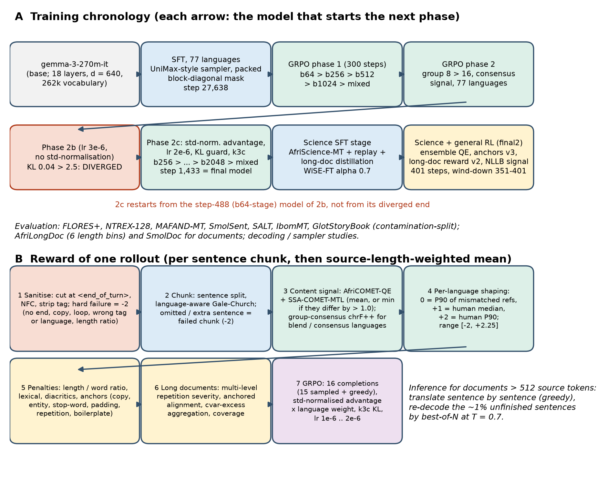
We use group-relative policy optimisation (Shao et al., 2024) with a single on-policy update per sampled batch (so the importance ratio is exactly one and no clipping is needed; this is asserted in the code at every step). For a prompt $x$ with target language $\ell$ the policy samples a group of $G$ completions $y_1,\dots,y_G$ at temperature 1, top-$p$ 1, top-$k$ disabled, so that the sampling distribution is the scored distribution. Each completion receives a scalar reward $r_i \in [-2, 2.25]$ (Section 4.3). The advantage is the group-standardised reward multiplied by a per-language weight $w_\ell$ that reflects how reliable the content signal of that language is, $$A_i = w_\ell \, \frac{r_i - \bar r}{\sigma_r + 10^{-4}},$$ with $A_i=0$ for every member of a group whose standard deviation is below $10^{-6}$. The loss is the token-level policy-gradient term plus $\beta\,\mathrm{KL}$ to a frozen reference, normalised by the number of completion tokens of the whole optimiser step. The KL term uses the $k_3$ estimator, clamped at a log-ratio of 5 ($k_{3c}$, Section 4.5); $\beta=0.05$ in phases 1-2c and 0.1 in the final run. Optimisation is AdamW (betas 0.9 / 0.95, no weight decay, gradient clip 1.0, fp32 master weights, bf16 autocast) at learning rates of 1e-6 to 3e-6 (Table 83 in the appendix). Rollouts use vLLM; the trainer checks every 25 steps that engine and trainer log-probabilities agree.
Prompts. RL prompts are English windows of consecutive whole sentences from one document (English Wikipedia, FineWeb-Edu), filtered for readability, technical vocabulary, digits, markup and repetition (the scorer is weakest on dense scientific English), in length bins named by their upper bound in AfroXLM-R tokens: b64, b256, b512, b1024 and, from phase 2c, b2048 (windows of 1,025-2,048 tokens made of up to 183 sentences). There are 77 language files; the draw weights favour the weakest languages (1.5-4.0 against 1.0; 2.5-4.0 in phase 2c) and a floor guarantees every language at least two prompts in every block of 20 steps. The final run draws 70% of its prompts from science documents (AfriScience-MT training side, PubMed, arXiv, LibreTexts) and 30% from the general pools.
The bins are trained in stages, b64 then b256, b512, b1024, then (phase 2c) b2048, and finally a random mixture of all bins. Phase 1 used 40, 60, 60 and 60 steps for the first four stages, then the mixture. Phase 2c, restarted from the b64-stage model of phase 2b, used 391 steps of b256, 446 of b512, 149 of b1024, 298 of b2048 and 149 of the mixture (1,433 steps, about 900,000 sampled completions). Per step the number of prompts shrinks with the length (64 / 48 / 42 / 42 / 21 / 42 prompts for b64 to mixed, each with 16 completions), and the token budget grows with it (384 new tokens for b64 up to 7,168 for b2048 and the mixture, 3.5 times the source length). The curriculum is trained with the chunked reward below, so a long output is scored sentence by sentence even though it is generated in one pass.
The reward is the central engineering contribution of this work. Its structure is in Figure 3B; this section gives the logic, Appendix C the formulas and calibration facts.
Sanitisation and hard failures. The completion is cut at the first stop token, decoded, scrubbed of special-token strings, NFC-normalised and stripped of the language tag; only this text reaches any scorer. A completion that does not end inside the budget, writes anything after the end token, contains a turn marker, has a missing or wrong tag, is empty, copies the source (word-set Jaccard of at least 0.9), is degenerate (one word repeated more than four times in a row, fewer than 30% distinct words), has a character length ratio outside [0.2, 5] (lower bound 0.4 for languages without a human length window), or is classified by GlotLID (Kargaran et al., 2023) as another language receives the floor reward $-2$ and is never scored. The GlotLID guard is enabled for 75 of the 77 languages (those whose measured recall on human text is at least 0.90; off for Pidgin and Kongo), with sibling labels accepted where the classifier confuses close languages and a minimum text length per language.
Chunking. Source and output are split into sentences and aligned: if the counts are equal the $i$-th pair is scored, otherwise a language-aware Gale-Church alignment (Gale and Church, 1993) with constant-cost omission and extra-sentence beads (the length model comes from the language's human references, not from the pair itself) pairs them. An omitted sentence is a failed chunk (reward $-2$, weighted by its source characters); an unmatched extra output sentence or text appended beyond the language's length window is a failed chunk weighted by its output characters. Without the language-aware cost the legacy aligner found an omission bead in only 2 of 20,000 synthetic trials (0% sentence recall); with it, 56% of dropped sentences, 77% of documents and 89% of dropped characters are found at 0.6% false alarms on seven of eight languages, and extra sentences go from 42% to 93% (Table 61 and Appendix C).
Content signal. For the 42 validated languages and the 12 blend languages the content signal is reference-free quality estimation. We started with AfriCOMET-QE (Wang et al., 2024) and, after a study of agreement with human judgments (Section 7.1), replaced it for the final run by an ensemble with SSA-COMET-MTL run without reference (Li et al., 2025). For each sentence pair the two scores are shaped separately into rewards $r_1,r_2$ (below) and combined as $$r = \begin{cases} \tfrac12 (r_1 + r_2) & |r_1 - r_2| \le \delta \\ \min(r_1, r_2) & \text{otherwise,}\end{cases}\qquad \delta = 1.0,$$ so that a chunk that only one judge likes (the signature of copying the English source, which the joint-encoder SSA-COMET-MTL rewards) earns the lower of the two. This is a design choice tested on corrupted references (Section 7.2); its effect on the trained policy was not measured (Section 7.9). For the 23 consensus-only languages, and with weight 0.5 for the 12 blend languages, the content signal is the consensus: the mean sentence chrF++ of a completion against the other valid completions of its own group, mapped linearly onto the reward range ($-2 + 4.25\cdot\mathrm{chrF}/100$). Groups with fewer than three valid members are skipped; near-loops are kept out of the pool by a self-repetition guard. The final run adds, for five covered weak languages (Kabuverdianu, Kabiye, Nuer, Bambara, Kabyle), a signal from pseudo-references produced by NLLB-200 3.3B (weight 0.23-0.35); see Section 7.5 for why this is restricted.
Shaping. A raw QE score is mapped per language onto a piecewise-linear, monotone curve with three anchors measured on human references of that language: the reward is 0 at the 90th percentile of the score of mismatched human references (the failure line), $+1$ at the median of the score of matched human references and $+2$ at their 90th percentile, with only a further +0.25 in total between that point and a score of 1 ("a score above what human translations get is where a learned metric is gamed"). The reward range is therefore $[-2, +2.25]$ and a translation at the level of a human median earns $+1$. Each language also receives an advantage weight in $[0, 1]$ derived from how reliably its QE score ranks the human reference above corrupted versions of the same source.
Penalties. Subtracted from the shaped chunk reward and floored at $-2$: a length-window and a word-ratio penalty against the human distribution of the language; a lexical penalty (numbers and names in the source that disappear, content-word precision); a diacritic penalty (density of tone marks and special letters below the human 10th percentile, or foreign, orphan, unseen or over-decorated marks); and, for the final run, the anchors of Section 7.3 (substring copy of the source, graded entity loss, function-word profile, padding by type/token ratio, repetition and a cross-prompt boilerplate buffer). Every threshold of every penalty is a quantile of human text (for RL-final the dev references of FLORES+ and MAFAND, and for Efik the IbomMT test set; for the anchors of the final run also the test splits of six benchmarks: Section 6.9a) and every penalty is a penalty only, never a bonus: a bonus for retaining numbers or names would push towards copying. The anchors are a design motivated by detection tests on corrupted human text (Section 7.3). What they did in the final run is reported in Section 7.9: no demonstrated protective effect for the copy, entity and function-word terms (RL-final did not show these failures), padding and repetition flags 2-4 pp lower than RL-final in the weak and consensus-only languages, and no control run from the same start with the plain reward.
Aggregation. The reward of a completion is the source-length-weighted mean of its chunk rewards, in which failed chunks count as $-2$.
For sources of at least 150 words the final run uses a second reward (Section 7.4). The v1 rule that flags a document as degenerate when fewer than 30% of its words are distinct fires on length alone (it flags 47% of good sentence-by-sentence translations at b4096), so v2 replaces it by a continuous multi-level repetition severity: word 4-gram repeat share, share of words in repeated word 8-grams, duplicated sentences, repeated blocks and periodic word cycles, each measured as the excess over the same share of the English source and ramped between the 99.5th percentile of human documents of that length bucket and full degeneracy. A stuttering sentence is a failed chunk, not a failed document. Alignment uses numbers and names as anchors and removes redundant copies first (pair F1 0.89 against 0.66 for the legacy aligner over twelve corruptions). The sentence rewards are aggregated by the mean minus the tail deficit beyond what human documents show (cvar_excess), and a coverage term lowers the reward towards the failure value as the failed share of the source grows. Section 7.9 reports what the final run achieved with it: whole-document output far better than RL-final's, of which about three quarters were already in place after the science stage and before this reward, a rise of severe repetition from step 250 to the end of the run, and no control run with reward v1.
Phase 2b (lr 3e-6, group of 16 with one greedy member, no division by the group standard deviation, $k_3$ KL with coefficient 0.05) ran smoothly in its b64 stage, with a KL of 0.03-0.04 to the reference and a gradient norm of 0.5-0.7, and diverged when the b256 stage began at step 489: the mean KL rose from 0.04 to 0.27 at step 541, 1.8 at step 661 and 2.6 at step 781, the finished rate of the evaluation prompts fell from 0.95 to 0.56, and we stopped the run at step 839 (Figure 5). Sentence-level dev chrF++ stayed at 41.9-42.0 until step 700 and fell to 41.4 only at step 750: the metric that selects checkpoints noticed the divergence last. Phase 2c restarted from the step-488 model with three changes made together: standardised advantages (as in phase 2), a lower learning rate of 2e-6, and a KL guard that halves the learning rate (down to 1/8) when the mean KL of the last five steps exceeds 0.15. We did not run ablations that isolate which change fixed the instability; the greedy group member was also removed in 2c, and later measurements show that a looping greedy completion of several thousand tokens produces gradient norms of 8-19 (against 0.5 without it) because all its tokens push in the same direction (reports/final_run_integration_2026-10-21.md section 5), so it is a candidate cause as well.
Later in 2c two single steps showed KL values of 0.51 (step 607) and 1,651 (step 747) with gradient norms of 220 and 285,381: the unbounded $k_3$ estimator $e^{d}-d-1$ explodes for a sampled token whose probability the policy has pushed far below the reference. With the gradient clip at 1.0 such a step is effectively discarded, but the guard cut the learning rate after step 747 although nothing had diverged. We therefore clamp the log-ratio at 5 ($k_{3c}$, identical below the clamp, no gradient beyond it) and compute the guard from the median instead of the mean of its window; both were applied from the b2048 restart at step 900.
Between the general RL (step 1,433) and the final run we added a short supervised stage on the AfriScience-MT corpus (Abdulmumin et al., 2026) (six African languages, simplified science text, 5,792 training sentences per language) mixed with replay of the general human references, self-distilled "anchor" examples, the best translations saved by the RL archive and long-document distillation: documents translated sentence by sentence by the RL model with a best-of-four choice by the QE ensemble and joined into one target, so that the model learns to translate a whole document and to stop (13.5% of the chosen mixture). The stage has about 320 steps at 3e-6. Because plain fine-tuning lowered the weak-blend languages, the result is interpolated with the RL model, $\theta=(1-\alpha)\theta_{\text{RL}}+\alpha\theta_{\text{SFT-stage}}$ (Wortsman et al., 2022), and the mixture and $\alpha$ were chosen by guardrails (Section 6.6): best sentence-level chrF++ on the AfriScience dev set such that the general dev set, every weak-language group and the paper-level finished rate do not get worse.
The final run starts from the chosen interpolated model (mixture "A2W", $\alpha=0.7$) with the KL reference set to that model, 700 planned steps (the run was wound down after step 350 and ended at step 401, Section 6.7) at learning rate 1e-6 (20 warm-up steps), 16 completions per group of which one is greedy, with the greedy member's advantage computed from the statistics of the sampled members only, capped at 3 and scaled by 0.3, the KL guard, the QE ensemble, the v2/v3 anchors, the long-document reward v2, the NLLB signal for five languages, the language floor and a static per-language draw-weight list (Appendix B, Table 83). A chrF-informed adaptive language-weight controller exists but ran in dry-run mode only (it logged proposals and changed nothing). The run had a planned restart at step 150 and was OOM-killed twice on 2026-10-23 and resumed from its step-250 checkpoint, with the learning-rate scale raised from 0.5 to 0.75 and the KL guard reset (Section 6.7); it ended at step 401 after a 50-step linear learning-rate wind-down.
Systems. SFT-final: the supervised model at step 27,638 (Section 3.5). RL-final: the general RL model at GRPO step 1,433 of phase 2c (our "final general model"). A2W: the science-stage model interpolated at $\alpha=0.7$, the start of the final run. final2: the final science and general RL run (401 steps, Section 6.7). Published baselines are taken from the literature, not re-run: the per-language English-to-X chrF++ tables of NLLB-200 1.3B and 3.3B (model release, FLORES-200 devtest, beam search) (NLLB Team et al., 2022) and of AfriqueLlama-8B, AfriqueGemma-12B and AfriqueQwen-14B (Table 22 of that paper: FLORES-200 English-to-X chrF++ run through the AfroBench-Lite harness; split and number of shots for this table not stated, base models are evaluated few-shot) (Yu et al., 2026); they cover 44 and 21 of our 77 languages respectively. Differences in benchmark version (FLORES+ devtest here, FLORES-200 devtest there), decoding and metric implementation (not documented for the Afrique tables; the NLLB values are rounded to one decimal) are discussed in Section 6.2. We re-ran NLLB-200 3.3B and 600M ourselves as teacher and pseudo-reference generator (Section 7.5, beam 4, CTranslate2); those translations of the FLORES+ devtest, and TranslatePsy-AfriSLM-0.8B (and, for 9 languages, 2B) run zero-shot with the prompt of its model card, were re-scored with the same metric stack as our own checkpoints for the comparison on identical sentences of Section 6.8 (chrF++, spBLEU, reference-based AfriCOMET-STL-1.1, SSA-COMET-MTL for 22 languages), because AfriCOMET is published for almost none of the baselines.
Long documents. AfriLongDoc is a private benchmark we built for this work: 450 English core documents in six length bins (b64 to b4096; 73 / 90 / 100 / 89 / 63 / 35 documents in the evaluated subset) from relaxed-licence sources, with NLLB-200 3.3B and MADLAD-400 3B sentence-by-sentence pseudo-references, plus SmolDoc human references (documents of up to about 680 tokens, and unrelated documents stitched to about 512, 1,024 and 2,048 tokens, which test length robustness but not discourse). The long-document tables use 16 languages (12 with a human and an NLLB reference, 4 with NLLB only) and, for every configuration comparison, a fixed subset of 8 languages (hau, yor, swh, amh, zul, wol, kea, sag). Document-level chrF++ is a corpus statistic summed over documents; bootstrap intervals resample documents.
Compute. One RTX PRO 6000 (96 GB) rented on vast.ai at about 1.19 USD per hour (the rate stated by the project lead; an earlier internal estimate used 1.03 USD per hour) for RL phases 1-2c and the final run, plus an RTX 5070 (12 GB) for the first part of SFT. Phase 2c took 40.5 hours of wall-clock time including restarts (median 107 s per step, 38.5 hours of step time), i.e. about 48 USD at the quoted rate; the final run took 26.2 hours of step time (median 218 s per step) for its 401 steps and 28.4 hours between its first and last logged step, i.e. about 34 USD at the quoted rate. The final run had a planned restart after step 150 and was OOM-killed twice on 2026-10-23 (at 04:22 and 04:49 UTC) because other jobs on the shared GPU had filled its memory, and was resumed from its step-250 checkpoint; the learning-rate scale was raised from 0.5 to 0.75 and the KL guard was reset by the restarts (Section 6.7). Steps 251-267 were run twice more and discarded, so the wall-clock cost of the run exceeds the step time of its final lineage. The full ledger of what was run is in Appendix F.
We lead with the evidence least affected by the exposure of the test sets (Section 6.9a) and keep all and no_pair visible in Table 3. On the clean rows (the English sentence was never in the SFT text; 48 FLORES+ sentences per language) RL raises the FLORES+ macro chrF++ over 45 languages from 25.1 to 31.7 (+6.62 [5.83, 7.24]), and the gain is as large or larger on NTREX-128 (+4.09 [3.87, 4.32]), SmolSent (+7.06 [6.17, 7.70]) and GlotStoryBook (+8.26 [7.58, 8.87]), equal on MAFAND-MT (+3.66 [3.03, 4.16]) and smaller but positive on SALT (+2.31 [0.85, 3.57]). On FLORES+ devtest restricted to the rows whose reference pair the model never saw (no_pair, 96% of the rows; the headline of the earlier drafts) RL raises the macro chrF++ over 45 languages from 28.7 to 34.1, a gain of 5.42 [5.22, 5.61], and spBLEU from 9.2 to 12.4 (+3.19 [2.97, 3.38]). The exposure raises the level of both models: on FLORES+ the macro over all rows minus the macro over the clean rows is +3.8 chrF++ for SFT-final and +2.6 for RL-final (about 3.2 and 2.0 after the 0.6 that the harder clean sentences cost the untrained base model), +6.4 and +4.6 on SmolSent, and the no_pair headline levels (28.7 and 34.1) stay about 3.6 and 2.4 above the clean level; the headline differences are less affected because both models share the SFT exposure. All 45 FLORES+ languages improve and none drops; on no_pair rows the same pattern holds on NTREX-128 (+3.86 [3.72, 4.01]), MAFAND-MT (+3.66 [3.12, 4.11]), SmolSent (+5.36 [5.11, 5.57]), GlotStoryBook (+8.16) and IbomMT (+11.04), whose Ibibio and Efik reference sets are outside the usual benchmarks. IbomMT is two languages and only one of them is clean of the reward calibration: the Efik thresholds of the reward were fitted on the IbomMT test set (997 of its 1,012 sentences, Section 6.9a), so the Efik gain (SFT 18.5 to RL 31.2, +12.70 [11.67, 13.56]) is not an independent result, whereas the Ibibio gain (12.9 to 22.3, +9.37 [8.69, 9.99]) is unaffected; the macro of +11.04 mixes the two (Table 3, Figure 4). The finished rate (the completion ends inside the 768-token budget) rises from 90.4% to 100.0%, and the GlotLID right-language rate from 95.2% to 96.7%.
all: every row; no_pair: reference pair not in the SFT text; clean: English sentence not in the SFT text. $^\dagger$ The Efik reward thresholds were fitted on this test set (Section 6.9a); Ibibio alone: +9.37 [8.69, 9.99]. IbomMT and FLORES-MOZ share the English of FLORES+ devtest (five English texts in eight benchmarks). Source: reports/final_model_per_language_2026-10-21.md section 2.1 and reports/data/final_model_runs/macro_boot.json.| benchmark | subset | langs | chrF++ SFT | chrF++ RL | $\Delta$ chrF++ [95% CI] | spBLEU SFT | spBLEU RL | $\Delta$ spBLEU [95% CI] | finished % SFT / RL |
|---|---|---|---|---|---|---|---|---|---|
| FLORES+ devtest | all | 45 | 28.9 | 34.3 | +5.43 [+5.24, +5.60] | 9.4 | 12.6 | +3.19 [+2.98, +3.39] | 90.5 / 100.0 |
| no_pair | 45 | 28.7 | 34.1 | +5.42 [+5.22, +5.61] | 9.2 | 12.4 | +3.19 [+2.97, +3.38] | 90.4 / 100.0 | |
| clean | 45 | 25.1 | 31.7 | +6.62 [+5.83, +7.24] | 7.1 | 10.3 | +3.28 [+2.43, +3.85] | 86.0 / 100.0 | |
| NTREX-128 | all | 24 | 33.3 | 37.1 | +3.84 [+3.68, +4.01] | 13.0 | 16.3 | +3.31 [+3.08, +3.54] | 92.6 / 99.9 |
| no_pair | 24 | 33.2 | 37.1 | +3.86 [+3.72, +4.01] | 12.9 | 16.2 | +3.31 [+3.12, +3.52] | 92.6 / 99.9 | |
| clean | 24 | 31.5 | 35.6 | +4.09 [+3.87, +4.32] | 11.3 | 14.7 | +3.38 [+3.09, +3.67] | 92.1 / 99.9 | |
| MAFAND-MT test | all | 15 | 39.6 | 42.4 | +2.80 [+2.61, +2.99] | 18.0 | 20.6 | +2.56 [+2.27, +2.83] | 97.7 / 100.0 |
| no_pair | 15 | 38.4 | 42.0 | +3.66 [+3.12, +4.11] | 16.9 | 20.2 | +3.35 [+2.88, +3.72] | 97.5 / 100.0 | |
| clean | 15 | 38.2 | 41.8 | +3.66 [+3.03, +4.16] | 16.7 | 20.0 | +3.35 [+2.83, +3.79] | 97.5 / 100.0 | |
| SmolSent | all | 45 | 26.3 | 31.6 | +5.30 [+5.04, +5.56] | 7.1 | 10.2 | +3.11 [+2.87, +3.32] | 93.5 / 100.0 |
| no_pair | 45 | 26.1 | 31.4 | +5.36 [+5.11, +5.57] | 7.0 | 10.1 | +3.12 [+2.90, +3.31] | 93.3 / 100.0 | |
| clean | 45 | 20.0 | 27.0 | +7.06 [+6.17, +7.70] | 4.0 | 6.9 | +2.89 [+2.15, +3.26] | 87.5 / 100.0 | |
| IbomMT$^\dagger$ | all | 2 | 15.7 | 26.8 | +11.04 [+10.37, +11.73] | 2.0 | 7.5 | +5.52 [+5.15, +5.85] | 86.3 / 100.0 |
| no_pair | 2 | 15.7 | 26.8 | +11.04 [+10.37, +11.73] | 2.0 | 7.5 | +5.52 [+5.15, +5.85] | 86.3 / 100.0 | |
| clean | 2 | 14.0 | 24.7 | +10.70 [+8.42, +12.77] | 1.5 | 6.2 | +4.67 [+3.12, +5.81] | 82.3 / 100.0 | |
| FLORES-MOZ | all | 1 | 23.7 | 29.7 | +6.04 [+5.07, +6.90] | 2.9 | 5.6 | +2.63 [+2.19, +3.07] | 94.0 / 100.0 |
| no_pair | 1 | 23.7 | 29.7 | +6.04 [+5.07, +6.90] | 2.9 | 5.6 | +2.63 [+2.19, +3.07] | 94.0 / 100.0 | |
| clean | 1 | 23.0 | 28.1 | +5.15 [+1.09, +9.26] | 2.3 | 3.2 | +0.94 [-0.65, +2.15] | 93.8 / 100.0 | |
| SALT | all | 5 | 37.2 | 40.1 | +2.90 [+2.26, +3.53] | 15.7 | 18.1 | +2.33 [+1.55, +3.00] | 99.1 / 100.0 |
| no_pair | 5 | 35.8 | 38.5 | +2.69 [+1.85, +3.43] | 14.0 | 16.2 | +2.27 [+1.33, +3.11] | 99.1 / 100.0 | |
| clean | 5 | 33.6 | 35.9 | +2.31 [+0.85, +3.57] | 13.7 | 15.0 | +1.27 [-0.23, +2.54] | 99.2 / 100.0 | |
| GlotStoryBook | all | 8 | 19.9 | 28.0 | +8.16 [+7.51, +8.78] | 2.9 | 6.0 | +3.08 [+2.76, +3.38] | 89.4 / 98.4 |
| no_pair | 8 | 19.9 | 28.0 | +8.16 [+7.51, +8.78] | 2.9 | 6.0 | +3.08 [+2.76, +3.38] | 89.4 / 98.4 | |
| clean | 8 | 19.9 | 28.1 | +8.26 [+7.58, +8.87] | 2.8 | 6.0 | +3.12 [+2.76, +3.39] | 88.8 / 98.3 |
Two qualifications belong next to this headline. (i) Budget. A looping completion is scored as it stands, so the SFT model is penalised more at a generous budget: at the 320-token budget of our earlier reports the same comparison is 30.4 to 34.1 (+3.70); about 1.7 of the 5.4 points of the 768-token gain are the SFT model's runaway tail, and the remaining 3.7 still contain the 10% of SFT sentences that loop inside 320 tokens. Part of what RL buys is therefore learning to stop, and our data cannot separate it from translation quality. (ii) Groups. Gains are larger where the SFT model is weaker (Table 4): +4.95 [4.75, 5.14] for the 40 QE-validated FLORES+ languages, +11.22 [10.68, 11.75] for the two consensus-only languages (Kabuverdianu, Makhuwa), +14.59 for the one Creole in the table, and only +1.26 for Afrikaans and Malagasy. On the primary benchmark of every language (a coverage summary, not a like-for-like score) the macro gain is +4.97 [4.78, 5.16] for the 42 QE-validated, +7.93 [7.55, 8.36] for the 9 blend and +7.69 [7.30, 8.07] for the 13 consensus-only languages that have a human-reference set (Appendix A, Table 80). The consensus-only languages, for which the reward contained no learned quality metric, thus improved at least as much as the validated ones. The largest gains. On the 44 languages that also have an NLLB row (the identical-sentence pipeline of Section 6.8, no_pair) the largest gains of RL-final over SFT-final are Kabuverdianu +14.2, Kabiye +14.1, Kamba +12.1, Luo +11.9, Nuer +11.4, Kanuri +11.0, Bambara +9.2 and Kimbundu +8.9 chrF++, against a mean gain of +5.35 and a median of +4.38 (Table 23; the generation-run table of this section gives +14.6, +14.2 and +11.5 for Kabuverdianu, Kabiye and Nuer, differing from this pipeline by at most 0.53 chrF++ for any of the 45 languages). Part of the largest gains is repair, not new knowledge: the SFT model finished only 34% of the Kabiye, 51% of the Nuer, 70% of the Kamba and 76% of the Kabuverdianu translations (RL-final 100%), Kanuri has no SFT data and its gain is a stopping effect, and in the controlled ablation of Section 8.4 the gain on the sentences that every system finished is much smaller than on all sentences (+1.13 against +7.36 from the weak start, +2.23 against +5.72 from SFT-final; four languages, one run per arm). The gains of Luo, Bambara and Kimbundu, where SFT finished 85-91%, cannot be explained by repair alone. Kabuverdianu is both the largest gain over SFT (+14.2) and the largest remaining gap to NLLB-200 3.3B (21.0), and we show both.
no_pair). Group sizes on this benchmark are small for blend (2), consensus-only (2) and SFT-only (1) languages.| subset (FLORES+ devtest, no_pair) | langs | chrF++ SFT | chrF++ RL | $\Delta$ chrF++ [95% CI] | $\Delta$ spBLEU [95% CI] | finished % SFT / RL |
|---|---|---|---|---|---|---|
| all FLORES+ languages | 45 | 28.7 | 34.1 | +5.42 [+5.22, +5.61] | +3.19 [+2.97, +3.38] | 90.4 / 100.0 |
| QE-validated | 40 | 30.4 | 35.3 | +4.95 [+4.75, +5.14] | +3.15 [+2.92, +3.35] | 92.1 / 100.0 |
| QE-blend | 2 | 20.2 | 26.5 | +6.38 [+5.78, +6.99] | +3.09 [+2.71, +3.43] | 90.9 / 100.0 |
| consensus-only | 2 | 15.7 | 26.9 | +11.22 [+10.68, +11.75] | +4.41 [+4.09, +4.72] | 82.3 / 100.0 |
| SFT-only (no RL) | 1 | 3.9 | 14.8 | +10.89 [+10.55, +11.23] | +2.43 [+2.12, +2.70] | 37.6 / 99.9 |
| RL languages (all groups) | 44 | 29.2 | 34.5 | +5.30 [+5.10, +5.49] | +3.21 [+2.99, +3.40] | 91.6 / 100.0 |
| Bantu | 22 | 33.7 | 38.5 | +4.81 [+4.54, +5.03] | +3.26 [+2.95, +3.51] | 94.4 / 100.0 |
| Atlantic-Congo (non-Bantu) | 9 | 24.3 | 29.4 | +5.12 [+4.82, +5.41] | +2.80 [+2.53, +3.09] | 90.0 / 100.0 |
| Mande | 2 | 13.8 | 21.6 | +7.89 [+7.43, +8.35] | +2.86 [+2.58, +3.14] | 86.7 / 100.0 |
| Afroasiatic | 6 | 25.3 | 29.5 | +4.15 [+3.63, +4.72] | +2.94 [+2.31, +3.61] | 92.6 / 100.0 |
| Nilo-Saharan | 3 | 11.4 | 22.9 | +11.43 [+11.04, +11.83] | +5.30 [+5.01, +5.59] | 59.9 / 100.0 |
| Creole / Pidgin | 1 | 12.2 | 26.8 | +14.59 [+13.83, +15.30] | +5.49 [+5.02, +5.91] | 76.0 / 100.0 |
| Other (Indo-European, Austronesian) | 2 | 52.0 | 53.3 | +1.26 [+0.74, +1.79] | +0.97 [+0.26, +1.67] | 99.2 / 100.0 |
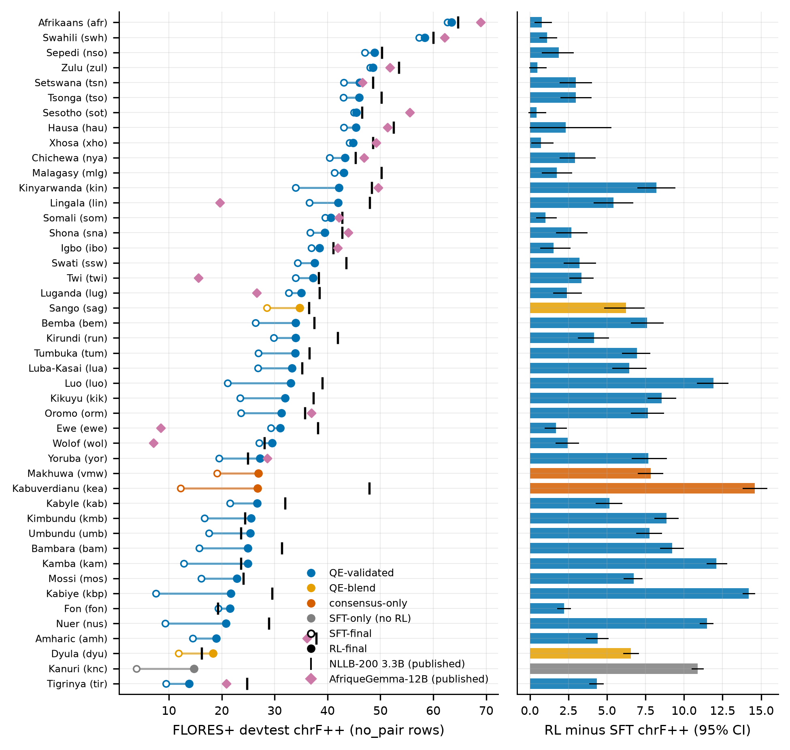
no_pair rows), SFT-final to RL-final, sorted by the RL score; colours are the reward groups. Black ticks: NLLB-200 3.3B and pink diamonds: AfriqueGemma-12B, both as published for FLORES-200 devtest (a different benchmark version and decoding; see Section 6.2). Right: RL minus SFT with 95% paired-bootstrap intervals (500 resamples per language). Kanuri (knc, grey) has no SFT data; see the text.Where RL is not better: the only chrF++ regression whose interval excludes zero on a no_pair subset is Luganda on SALT (-2.62 [-5.17, -0.33], 81 sentences); spBLEU falls slightly for Sesotho on FLORES+ (-0.90 [-1.36, -0.42]) and for Hausa on MAFAND (-0.48 [-0.77, -0.17]) although chrF++ rises there; and the smallest gains, for Sesotho, Zulu, Xhosa, Afrikaans, Somali and Swahili (+0.4 to +1.1), are the high-resource languages that start from the highest chrF++, where several intervals include zero (Zulu +0.5 [-0.0, +1.0], Sesotho +0.4 [-0.1, +1.0]).
A caution on zero-shot languages. Kanuri (knc) and North Ndebele (nde) have no SFT data. Kanuri improves from 3.9 to 14.8 chrF++ (+10.89), but GlotLID recognises none of its output as Kanuri (0.0% before and after), the model does not write the language tag for it, and the finished rate rises from 37.6% to 99.9%; we read this as a stopping and script effect on a language that the model cannot yet write, not as evidence that RL generalises to a language without data.
Table 5 compares the model with the per-language chrF++ tables published for NLLB-200 and for three Afrique LLMs. The caveats are material: the published numbers are for FLORES-200 devtest (the same sentences as FLORES+ devtest, with some corrected references), NLLB uses beam search, the Afrique models are evaluated few-shot through a different harness (split not stated), and our model saw the English side of 95% of the sentences (we did not check what the published systems saw: NLLB-200 used FLORES as its development set (NLLB Team et al., 2022); for the others we do not know). We therefore show the all and no_pair rows only, which are inflated by the exposure of Section 6.9a (by about 3.6 chrF++ against the clean level for SFT-final and 2.4 for RL-final). We do not compare our clean rows with published numbers: an earlier draft did (a gap of 6.6 to NLLB-200 3.3B on clean rows, and a sign change against the Afrique LLMs), but our clean rows are 48 harder sentences per language and the published numbers are for all 1,012 sentences, so the comparison was not like for like (the clean sentences are harder for every system: NLLB-200 3.3B scores 38.3 on all rows and 35.0 on clean rows of the identical sentences). On identical FLORES+ sentences scored by us (Section 6.8) the gap to NLLB-200 3.3B is 3.84 chrF++ on all rows, 3.85 on no_pair and 3.16 on clean rows (44 languages). On the 43 languages shared with NLLB-200 3.3B our model is 3.9 chrF++ below on all rows (4.1 on no_pair), better on 8 of 43 (Yoruba, Fon, Wolof and Dyula lead by 0.8-2.3), with the largest deficits for Kabuverdianu (-21.1), Amharic (-19.0), Tigrinya (-11.0) and Sesotho (-10.1, against AfriqueGemma-12B). A 270 M-parameter model is therefore within about three to four chrF++ points of a model more than 12 times larger on average, but not better. On the 21 languages covered by all five systems the macro of our no_pair rows is 0.6 to 2.5 chrF++ above the three Afrique LLMs (8-14 B parameters) and that of our all rows 1.0 to 2.9 above, but we read neither as a result: our rows contain the English of 95% of the sentences, the published numbers were measured on all 1,012 sentences, and a comparison on clean rows is not possible because the per-sentence outputs of those systems are not available. We make no claim about superiority or inferiority to the Afrique LLMs. As we read it, TranslatePsy-AfriSLM reports 19-language macros over both translation directions, which cannot be compared with an English-to-X number (Gritta et al., 2026) (we did not confirm the aggregation in the paper's full text); our English-to-X macro on those 19 languages is 41.7 (reports/comparison_with_published_2026-10-21.md section 5). Section 6.8 repeats the comparison on identical sentences, with NLLB-200 and TranslatePsy re-scored by us, and supersedes the cross-paper reading of this subsection wherever the two differ.
all and no_pair rows are shown: clean rows (48 sentences per language, harder for every system) cannot be set against published numbers for all 1,012 sentences, and both shown subsets are inflated by the exposure of Section 6.9a. A comparison of this kind is indicative only (different harness, decoding and split).| our subset | published system (en$\to$X, FLORES-200 devtest) | shared langs | ours (macro) | system (macro) | difference | ours better on |
|---|---|---|---|---|---|---|
| all | NLLB-200-1.3B | 43 | 34.9 | 38.1 | -3.2 | 6/43 |
| NLLB-200-3.3B | 43 | 34.9 | 38.8 | -3.9 | 8/43 | |
| AfriqueLlama-8B | 21 | 39.6 | 36.7 | +2.9 | 8/21 | |
| AfriqueGemma-12B | 21 | 39.6 | 38.6 | +1.0 | 6/21 | |
| AfriqueQwen-14B | 21 | 39.6 | 36.7 | +2.9 | 7/21 | |
| no_pair | NLLB-200-1.3B | 43 | 34.7 | 38.1 | -3.4 | 5/43 |
| NLLB-200-3.3B | 43 | 34.7 | 38.8 | -4.1 | 7/43 | |
| AfriqueLlama-8B | 21 | 39.2 | 36.7 | +2.4 | 5/21 | |
| AfriqueGemma-12B | 21 | 39.2 | 38.6 | +0.6 | 5/21 | |
| AfriqueQwen-14B | 21 | 39.2 | 36.7 | +2.5 | 5/21 |
clean row of earlier drafts is removed (not like for like, see Section 6.2); both rows shown are inflated by the exposure of Section 6.9a.| our subset | langs | ours | NLLB-200-1.3B | NLLB-200-3.3B | AfriqueLlama-8B | AfriqueGemma-12B | AfriqueQwen-14B |
|---|---|---|---|---|---|---|---|
| all | 21 | 39.6 | 42.3 | 43.3 | 36.7 | 38.6 | 36.7 |
| no_pair | 21 | 39.2 | 42.3 | 43.3 | 36.7 | 38.6 | 36.7 |
Figure 5 (top row) and Table 7 show when the gain appeared. On the 760-sentence dev set (19 languages with human references, sentences whose English side is not in the SFT text; 40 rows per language of a 10,043-row file made of 1,190 FLORES+ dev rows, 70 for each of 17 languages, and 8,853 MAFAND dev rows, with no FLORES+ devtest sentence: 0 of its 30,418 parent rows have their English in devtest) macro chrF++ rises from 39.65 for SFT-final to 41.00 after the first 50 steps of phase 1, to 41.77 at step 100 of phase 2, and then stays between 41.8 and 42.0 through the stable b64 stage of phase 2b (to step 488) and between 41.57 and 41.98 over the whole of phase 2c: over its 1,433 steps and about 900,000 sampled completions the dev macro moves from 41.89 to 41.88 (31 evaluations, range 41.57 to 41.98). On the sets that matter for the weakest languages (13 consensus-only and 19 blend languages with benchmarks, evaluated at each stage branch, 320-token budget) most of the gain is in place at the end of the b64 stage of phase 2b: +4.8 [3.6, 5.9] chrF++ for the consensus-only group against +1.6 [1.1, 2.3] after phase 1, and +5.1 [3.8, 6.2] at the end of 2c, i.e. the b256-to-mixed stages of 2c add 0.3. For the 10 control languages (QE-validated) the gains are +1.8 after phase 1, +2.5 after 2b, +2.4 at the end. The headline checkpoint is the last step (1,433; dev chrF++ 41.883), not the dev-best step (986; 41.977): the dev curve is flat (41.567-41.977) and selection by dev played no role for RL-final. We interpret the plateau in Section 10.
reports/rl_vs_sft_weak_signal_2026-10-21/results.json). "2b (step 488)" is the model that phase 2c started from.| group (mean chrF++, all rows) | SFT-final | RL phase 1 | 2b (step 488) | 2c b256 | 2c b512 | 2c b1024 | 2c b2048 | 2c final (1,433) |
|---|---|---|---|---|---|---|---|---|
| control: 10 QE-validated languages | 38.1 | 39.9 | 40.6 | 40.4 | 40.4 | 40.4 | 40.5 | 40.5 |
| blend: 19 languages | 20.4 | 22.2 | 25.9 | 26.2 | 26.1 | 26.0 | 26.1 | 26.3 |
| consensus-only: 13 languages | 18.6 | 20.3 | 23.4 | 23.7 | 23.6 | 23.6 | 23.5 | 23.7 |
| group ($\Delta$ vs SFT) | RL phase 1 | 2b (step 488) | 2c b256 | 2c b512 | 2c b1024 | 2c b2048 | 2c final (1,433) |
|---|---|---|---|---|---|---|---|
| control (10) | +1.8 [+1.0, +2.7] | +2.5 [+1.3, +4.0] | +2.3 [+1.2, +3.7] | +2.3 [+1.2, +3.7] | +2.3 [+1.2, +3.8] | +2.4 [+1.3, +3.8] | +2.4 [+1.2, +3.9] |
| blend (19) | +1.8 [+1.4, +2.3] | +5.5 [+4.5, +6.5] | +5.8 [+4.7, +6.8] | +5.7 [+4.7, +6.8] | +5.6 [+4.6, +6.6] | +5.6 [+4.6, +6.6] | +5.9 [+4.8, +6.9] |
| consensus-only (13) | +1.6 [+1.1, +2.3] | +4.8 [+3.6, +5.9] | +5.1 [+3.8, +6.2] | +5.0 [+3.8, +6.2] | +4.9 [+3.7, +6.0] | +4.9 [+3.7, +6.0] | +5.1 [+3.8, +6.2] |
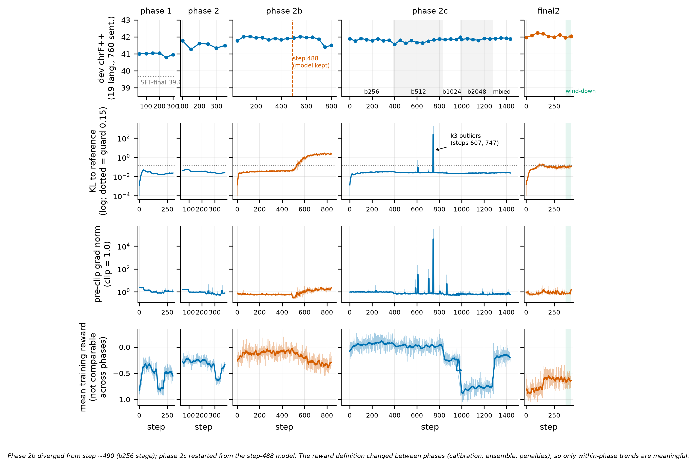
paper/data/rl*_steps.csv (from the trainer logs), rl2c_metrics.jsonl, final2_metrics.jsonl.The goal of the curriculum was to make a 270 M model translate documents of up to 2,048 tokens. Figure 6 and Table 9 show the result and it is mixed.
Whole-document generation by RL-final does not work beyond about 512 source tokens, whatever the decoding setting (this subsection is about the SFT-final and RL-final checkpoints; the science-stage checkpoints and other systems are evaluated in Section 6.10). With greedy decoding the final model finishes 98 / 97 / 92 / 65 / 42 / 31% of the documents of the bins b64, b256, b512, b1024, b2048, b4096, 0 / 1 / 13 / 53 / 73 / 73% of its outputs contain a loop that the reference does not, and chrF++ against the NLLB reference falls from 47.6 to 47.7, 47.7, 29.7, 18.2 and 9.8 (Table 10). This reproduces the reward measured on b2048 prompts (greedy total reward -1.95, 7% "ok"). The SFT model fails earlier: whole-document SFT output is already degraded at b256 (74% finished) and reaches 32.5, 17.0, 11.1 and 6.9 chrF++ at b512 to b4096. RL therefore did extend the range of single-pass translation, from about 256 to about 512 source tokens (b512: 32.5 to 47.7), and it improved every longer bin, but it did not make single-pass translation of 1,024- or 2,048-token inputs work. Repetition penalties, frequency penalty, temperature from 0.3 to 1.0, best-of-N and no-repeat n-grams trade loops for truncation: at T = 0.7 documents finish (99 / 95 / 78% at b1024 / b2048 / b4096) but the output is only 77%, 56% and 33% as long as the reference, so chrF++ stays at 26-37 for b1024-b2048 and 14.5 at b4096. We did not evaluate the intermediate checkpoints on AfriLongDoc, so the gain in single-pass range cannot be attributed to the b2048 stage rather than to the earlier stages.
Chunking with the same model works. Translating sentence by sentence (greedy) and re-decoding the 1.0% of units that do not emit the end token by best-of-four at T = 0.7 ("sentfix") gives chrF++ of 47.6, 49.0, 53.5, 55.6, 58.4 and 60.1 for the six bins, 100% sentence coverage and 0-4% loops; against the human SmolDoc references it reaches 47.2 / 49.1 / 50.6 chrF++ on short documents and on stitched documents of about 512 and 1,024 tokens (six languages) and 52.4 on stitched documents of about 2,048 tokens (four languages), where whole-document greedy decoding reaches 18.2 (Table 11). Its AfriCOMET is 0.691 at b64 and 0.659 at b4096 (reference-based, aligned chunks), a mild decline. It is also faster in wall-clock time on a shared GPU (1,196 s against 1,912 s for all 9,506 items). So RL-final can translate documents of 2,048 and even 4,096 tokens, but only when decoding is chunked by sentence (after the science stage the whole-document mode works to about 2,048 tokens but omits text, Section 6.10); windows of 256 tokens are an acceptable alternative (tied with sentences against human references at 1,024 and 2,048 tokens, 1.0-1.3 chrF++ lower against NLLB, twice the loop rate). The final model is 2.1-3.3 chrF++ above the SFT model under the same chunking, and the SFT model does not stop reliably even then (13-48% finished at b512-b4096, loops in 42-59%).
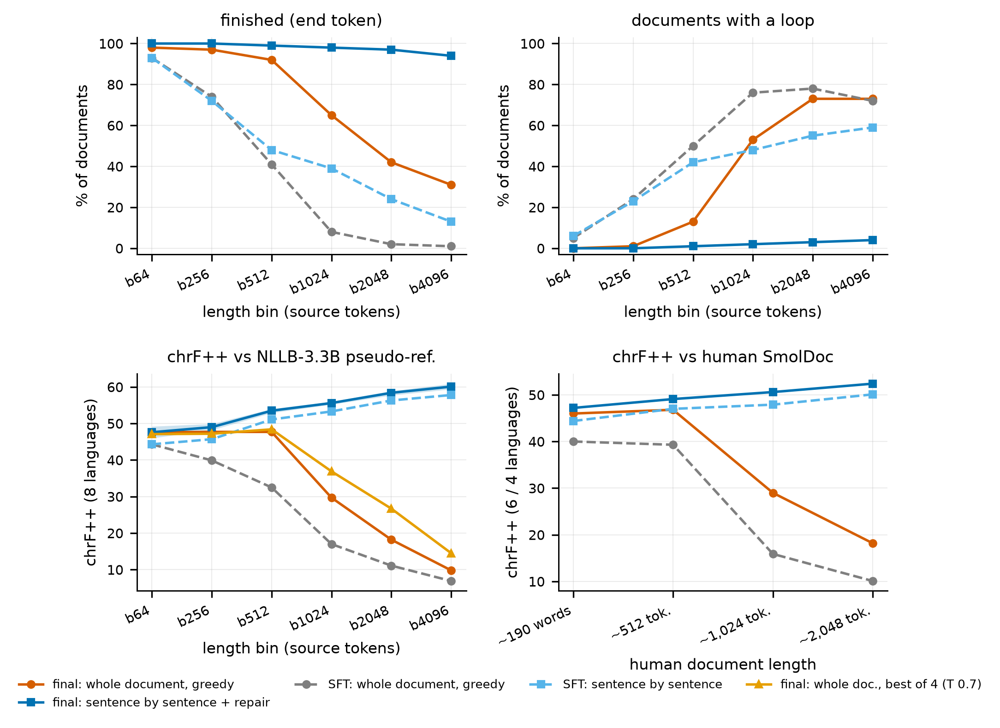
reports/longdoc_eval_final_model_2026-10-21.md section 3). Absolute values are not comparable across bins (different texts).| configuration (chrF++ vs NLLB-3.3B pseudo-reference, macro of 8 languages) | b64 | b256 | b512 | b1024 | b2048 | b4096 |
|---|---|---|---|---|---|---|
| final, whole document, greedy | 47.6 | 47.7 | 47.7 | 29.7 | 18.2 | 9.8 |
| final, whole doc., freq. penalty 0.05 | 47.5 | 47.6 | 48.7 | 33.4 | 25.3 | 17.7 |
| final, whole doc., T 0.7 | 46.4 | 46.7 | 47.8 | 36.0 | 26.2 | 14.5 |
| final, whole doc., best-of-4 (T 0.7) | 47.1 | 47.2 | 48.4 | 36.9 | 26.7 | 14.5 |
| final, 256-token windows | 47.4 | 47.6 | 51.8 | 54.0 | 57.0 | 58.6 |
| final, sentence by sentence | 47.6 | 49.0 | 53.5 | 55.6 | 58.4 | 60.1 |
| final, sentence by sentence + repair (sentfix) | 47.6 | 49.0 | 53.5 | 55.6 | 58.4 | 60.1 |
| SFT, whole document, greedy | 44.3 | 39.9 | 32.5 | 17.0 | 11.1 | 6.9 |
| SFT, sentence by sentence | 44.3 | 45.7 | 51.1 | 53.3 | 56.3 | 57.8 |
| configuration (finished / loop, % of documents) | b64 | b256 | b512 | b1024 | b2048 | b4096 |
|---|---|---|---|---|---|---|
| final, whole document, greedy | 98% / 0% | 97% / 1% | 92% / 13% | 65% / 53% | 42% / 73% | 31% / 73% |
| final, whole doc., freq. penalty 0.05 | 99% / 0% | 97% / 2% | 99% / 6% | 96% / 39% | 91% / 60% | 62% / 66% |
| final, whole doc., T 0.7 | 97% / 0% | 99% / 0% | 100% / 0% | 99% / 0% | 95% / 6% | 78% / 15% |
| final, whole doc., best-of-4 (T 0.7) | 98% / 0% | 99% / 0% | 100% / 0% | 100% / 1% | 99% / 5% | 87% / 14% |
| final, 256-token windows | 99% / 0% | 96% / 2% | 93% / 6% | 91% / 9% | 87% / 11% | 86% / 13% |
| final, sentence by sentence | 99% / 0% | 98% / 0% | 94% / 1% | 92% / 2% | 86% / 4% | 82% / 5% |
| final, sentence by sentence + repair (sentfix) | 100% / 0% | 100% / 0% | 99% / 1% | 98% / 2% | 97% / 3% | 94% / 4% |
| SFT, whole document, greedy | 93% / 5% | 74% / 24% | 41% / 50% | 8% / 76% | 2% / 78% | 1% / 72% |
| SFT, sentence by sentence | 93% / 6% | 72% / 23% | 48% / 42% | 39% / 48% | 24% / 55% | 13% / 59% |
| configuration (chrF++ [95% CI] vs human SmolDoc references) | short docs (6 lang.) | ~512 tok. (6) | ~1,024 tok. (6) | ~2,048 tok. (4) |
|---|---|---|---|---|
| final, whole document, greedy | 46.0 [45.4, 46.6] | 46.8 [46.2, 47.3] | 29.0 [27.9, 30.1] | 18.2 [15.4, 20.5] |
| final, whole doc., T 0.7 | 45.2 [44.6, 45.8] | 45.9 [45.3, 46.4] | 33.7 [32.9, 34.6] | 25.4 [22.5, 27.5] |
| final, whole doc., best-of-4 | 45.5 [44.9, 46.1] | 46.3 [45.8, 46.8] | 33.3 [32.6, 34.0] | 25.0 [23.5, 26.3] |
| final, 256-token windows | 46.6 [45.9, 47.1] | 48.7 [48.1, 49.2] | 50.2 [49.5, 50.9] | 52.4 [51.6, 53.1] |
| final, sentence by sentence + repair | 47.2 [46.6, 47.8] | 49.1 [48.5, 49.6] | 50.6 [50.0, 51.3] | 52.4 [51.8, 53.0] |
| SFT, whole document, greedy | 40.0 [38.9, 41.3] | 39.3 [37.7, 40.9] | 15.9 [14.4, 17.3] | 10.1 [8.7, 11.2] |
| SFT, sentence by sentence | 44.4 [43.7, 45.1] | 47.0 [46.4, 47.6] | 47.9 [47.2, 48.5] | 50.1 [49.1, 51.0] |
Four limits keep these numbers honest. (i) Pseudo-reference bias. The NLLB reference is itself sentence-by-sentence, which favours chunked hypotheses by construction; the model agrees more with NLLB (65.9 chrF++ at b1024 on five languages) than MADLAD-400 does (62.7), and NLLB-referenced scores are 1-16 chrF++ above the human-referenced scores for all 12 languages with both. We therefore quote the human-reference column for absolute quality (47 to 52 chrF++ from short to ~2,048-token documents) and use the NLLB column only to compare strategies; the ordering (chunked far above whole-document beyond ~512 tokens; sentence at least as good as window) is the same against MADLAD, against humans and under reference-free QE, but "sentence much better than window" is not established. (ii) Absolute chrF++ rises with the bin because the bins are different texts; the AfriCOMET column is the comparable one. (iii) The human documents beyond ~680 tokens are stitched from unrelated ones, so none of this measures discourse quality (pronouns, terminology across paragraphs). (iv) The language set (8 / 12 / 16) is fixed and the intervals resample documents only (35-100 per bin).
The training reward tells the same story. The total RL reward of whole-document greedy output is 0.73, 0.60, -0.25, -1.53, -1.95, -2.00 for b64 to b4096, that of sentfix 0.77, 0.83, 0.12, -0.19, -0.46, -1.03, and of the NLLB translations themselves under the same detectors 1.03, 0.89, 0.31, 0.10, -0.20, -0.96 (Table 12): at b1024 and beyond, "about -0.2 to -1.0" is the practical ceiling of the v1 reward because its repetition detector fails good translations (Section 7.4). For T = 1 rollouts of the b1024 and b2048 bins the groups are almost flat (the within-group standard deviation of the reward is 0.18 and 0.11): the sampled members all stop, all truncate, and are all about equally bad, so GRPO has little to learn from (reports/longdoc_reward_v2_2026-10-22.md section 0).
| system (mean total RL reward, B8) | b64 | b256 | b512 | b1024 | b2048 | b4096 | all |
|---|---|---|---|---|---|---|---|
| final: greedy | 0.73 | 0.60 | -0.25 | -1.53 | -1.95 | -2.00 | -0.73 |
| final: greedy_win | 0.71 | 0.64 | 0.01 | -0.30 | -0.48 | -1.15 | -0.09 |
| final: sentfix | 0.77 | 0.83 | 0.12 | -0.19 | -0.46 | -1.03 | 0.01 |
| final: t10 | 0.56 | 0.53 | -0.05 | -0.70 | -1.20 | -1.78 | -0.44 |
| SFT: greedy | 0.42 | -0.15 | -1.26 | -1.91 | -1.99 | -2.00 | -1.15 |
| SFT: greedy_sent | 0.30 | -0.11 | -0.88 | -1.12 | -1.39 | -1.65 | -0.81 |
| yardstick: madlad | 0.59 | 0.62 | 0.50 | 0.16 | -0.08 | -0.73 | 0.18 |
| yardstick: nllb | 1.03 | 0.89 | 0.31 | 0.10 | -0.20 | -0.96 | 0.19 |
For short text, beam search is the only family that improves on greedy decoding: macro chrF++ over 20 languages (200 no_pair sentences each) is 32.52 for greedy, 33.18 for beam 4 (+0.66 [+0.55, +0.78]) and 33.26 for beam 8, with AfriCOMET 0.6230, 0.6338 and 0.6344. Beam search loops where greedy does not (0.1% for greedy, 0.6% for beam 4, concentrated in Nuer and Kabiye), so a greedy fallback when the beam output is unfinished, repetitive or empty is recommended (33.20). Consensus decoding (MBR over 8 samples at T 0.5-0.7) gains about 0.5 chrF++ but no spBLEU; single-sample sampling is monotonically worse (T = 0.3 / 0.5 / 0.7: -0.13 / -0.35 / -0.79), and the Gemma default sampler shipped in generation_config.json (T 1, top-$k$ 64, top-$p$ 0.95) costs 1.40 chrF++; repetition penalty 1.1 costs 1.48 and no_repeat_ngram_size 3 costs 1.06 and removes 80% of the copied numbers (Table 13, Figure 7). Greedy output is nevertheless repetitive in the weakest languages (a repeated word 3-gram in 52% of Kabiye and Nuer sentences against 2.7% in the references), and removing the repetition by sampling costs more chrF++ than it gains (reports/generation_config_study_2026-10-22.md). For the SFT model the picture is different (it loops in 10.9% of sentences; T 0.5 helps its weak group by +1.40, MBR over 16 samples gives +2.45), which is one more way in which RL changed the model beyond a shift in chrF++.
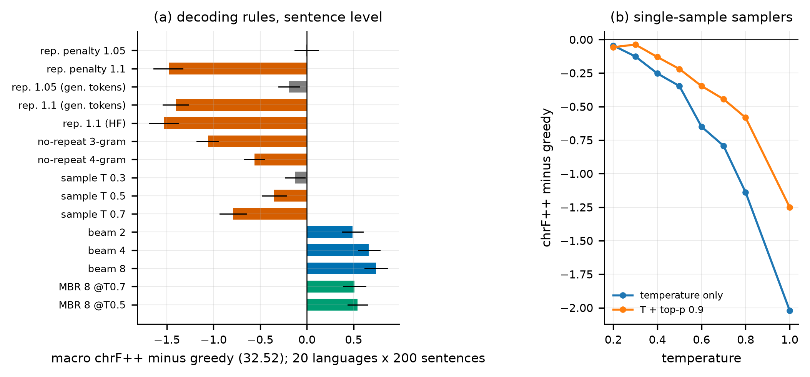
reports/final_model_decoding_study_2026-10-21.md section 2). Asterisk: the paired interval excludes 0. Cost relative to greedy on the same engine.| configuration | chrF++ | $\Delta$ chrF++ [95% CI] | spBLEU | AfriCOMET (18 lang.) | loop % | LID % | cost vs same-engine greedy |
|---|---|---|---|---|---|---|---|
| greedy (vLLM) = reference | 32.52 | 0 | 12.15 | 0.6230 | 0.1 | 99.9 | 1.0x |
| greedy + repetition_penalty 1.05 (vLLM, prompt + output) | 32.51 | -0.01 [-0.13, +0.12] | 11.62 | 0.6316 | 0.0 | 99.9 | 1.1x |
| greedy + repetition_penalty 1.1 (vLLM, prompt + output) | 31.03 | -1.48 [-1.64, -1.33]* | 9.58 | 0.6116 | 0.0 | 99.9 | 1.1x |
| greedy + repetition penalty 1.05, generated tokens only (HF) | 32.33 | -0.19 [-0.30, -0.08]* | 11.77 | 0.6293 | 0.0 | 99.9 | 0.8x |
| greedy + repetition penalty 1.1, generated tokens only (HF) | 31.11 | -1.40 [-1.54, -1.27]* | 10.55 | 0.6155 | 0.0 | 99.8 | 0.9x |
| greedy + repetition_penalty 1.1 (HF, prompt + output) | 30.98 | -1.53 [-1.69, -1.38]* | 9.58 | 0.6098 | 0.0 | 99.9 | 1.0x |
| greedy + no_repeat_ngram_size 3 (HF) | 31.45 | -1.06 [-1.18, -0.95]* | 10.34 | 0.6182 | 0.0 | 100.0 | 1.1x |
| greedy + no_repeat_ngram_size 4 (HF) | 31.95 | -0.56 [-0.67, -0.46]* | 11.06 | 0.6215 | 0.0 | 100.0 | 1.3x |
| sampling T 0.3 (vLLM, 1 sample) | 32.39 | -0.13 [-0.23, -0.02]* | 12.03 | 0.6238 | 0.1 | 99.9 | 1.3x |
| sampling T 0.5 (vLLM, 1 sample) | 32.17 | -0.35 [-0.48, -0.22]* | 11.78 | 0.6215 | 0.0 | 99.9 | 1.2x |
| sampling T 0.7 (vLLM, 1 sample) | 31.73 | -0.79 [-0.93, -0.65]* | 11.36 | 0.6144 | 0.0 | 99.9 | 1.0x |
| beam search 2 (HF) | 33.00 | +0.49 [+0.38, +0.60]* | 12.62 | 0.6302 | 0.4 | 99.9 | 2.3x |
| beam search 4 (HF) | 33.18 | +0.66 [+0.55, +0.78]* | 12.84 | 0.6338 | 0.6 | 99.9 | 4.6x |
| beam search 8 (HF) | 33.26 | +0.74 [+0.62, +0.86]* | 12.88 | 0.6344 | 1.0 | 99.9 | 5.6x |
| MBR: 8 samples T 0.7, pick the candidate with the highest mean chrF++ to the other 7 | 33.03 | +0.51 [+0.39, +0.63]* | 12.05 | 0.6249 | 0.0 | 99.9 | 10.0x |
| MBR: same pool + the greedy output (9 candidates) | 33.05 | +0.53 [+0.44, +0.61]* | 12.17 | 0.6267 | 0.1 | 99.9 | 12.6x |
| MBR: 8 samples T 0.5 | 33.06 | +0.54 [+0.44, +0.65]* | 12.22 | 0.6285 | 0.0 | 99.9 | 15.6x |
| MBR: 8 samples T 0.5 + greedy | 32.99 | +0.47 [+0.39, +0.55]* | 12.20 | 0.6287 | 0.0 | 99.9 | 18.3x |
A short supervised stage on AfriScience-MT with replay improves science translation sharply but, in its plain form, costs the languages that RL had improved with its own consensus signal (Table 14): with the first mixture (science plus replay), the sentence chrF++ on the AfriScience dev set rises from 45.65 (RL-final) to 47.7-48.1 and the paper-level chrF from 36.0 to 45-46, and the paper-level finished rate from 74.7% to 89-92% (interpolation weights 0.5 to 1.0; at 0.3 the gains are smaller), but the 19 weak-blend languages lose 0.4 to 2.3 chrF++ at every interpolation weight ($\alpha=0.7$: -1.04 [-1.39, -0.68]), and an L2-SP pull towards the start weights does not fix it. The cause is the replay of human references that pull the model back from what its own consensus signal had taught it. A second mixture (halved weak-language human replay, unfiltered self-distilled anchors, RL-archive translations and 13.5% long-document distillation; "A2W") brings the weak-blend loss at $\alpha=0.7$ to -0.36 [-0.58, -0.16] while keeping the science gain (sentence 47.97, paper-level chrF 47.81, finished 92.0%) and passes the guardrail rule (Table 15, Figure 8). On the test split, read once, it moves the sentence chrF++ from 44.90 to 47.13, the paper-level chrF from 33.05 to 45.76 and the paper-level finished rate from 72% to 94%. Adding the NLLB-3.3B teacher data (4.47 M tokens, 27 languages, non-commercial) did not beat A2W (its best variant is 0.36 chrF++ lower on science sentences) and was not adopted; adding the IbomMT training data brought no gain for Ibibio or Efik (RL-final 22.27 / 31.27 chrF++, the mixture without IbomMT data 22.07 / 30.79, the mixture with it 21.92 / 30.66 at $\alpha=0.5$ and 21.58 / 30.02 at $\alpha=0.7$). Note that the paper-level (single-pass whole-document) gains of this stage come from supervised long-document distillation, not from RL. This is the stage that makes native long output finish (Section 6.10).
reports/final_run_integration_2026-10-21.md section 3). Weak-blend: 19 languages from the weak-language dev sets.| model (mix_v1) | sent. chrF++ | paper chrF | paper finished | general dev $\Delta$ | weak-blend $\Delta$ [95% CI] | weak-consensus $\Delta$ | control $\Delta$ |
|---|---|---|---|---|---|---|---|
| final_1433 | 45.65 | 36.00 | 74.7 % | 40.96 | 27.20 | 23.21 | 42.87 |
| alpha 0.3 | 47.06 | 42.79 | 88.0 % | +0.19 | -0.38 [-0.60,-0.16] | +0.22 | +0.73 |
| alpha 0.5 | 47.75 | 45.04 | 89.3 % | +0.26 | -0.63 [-0.92,-0.34] | +0.12 | +0.51 |
| alpha 0.7 | 48.09 | 46.21 | 92.0 % | +0.16 | -1.04 [-1.39,-0.68] | -0.14 | +0.60 |
| alpha 1.0 | 47.88 | 45.41 | 89.3 % | -0.37 | -2.34 [-2.93,-1.75] | -1.19 | -0.59 |
| L2-SP 0.3, alpha 0.5 | 47.27 | 43.56 | 90.0 % | +0.23 | -0.53 [-0.82,-0.25] | +0.02 | +0.52 |
| L2-SP 0.3, alpha 1.0 | 47.51 | 46.44 | 91.3 % | -0.21 | -2.07 [-2.52,-1.58] | -1.02 | +0.15 |
| mixture (alpha 0.3 / 0.5 / 0.7 / 1.0) | sent. chrF++ | paper chrF | paper finished % | general $\Delta$ | weak-blend $\Delta$ | weak-consensus $\Delta$ | guardrails |
|---|---|---|---|---|---|---|---|
| final_1433 | 45.65 | 36.00 | 74.7 | 0 | 0 | 0 | - |
| A a0.3 / 0.5 / 0.7 / 1.0 | 47.04 / 47.67 / 48.09 / 48.01 | 42.36 / 46.35 / 47.34 / 49.04 | 90.7 / 94.0 / 92.0 / 96.7 | +0.26 / +0.27 / +0.21 / -0.16 | -0.25 / -0.50 [-0.76,-0.26] / -0.72 / -1.49 | +0.20 / +0.21 / +0.10 / -0.46 | PASS / FAIL(blend) / FAIL / FAIL |
| B_v1 a0.3 / 0.5 / 0.7 / 1.0 | 46.98 / 47.63 / 48.02 / 47.82 | 40.79 / 45.17 / 45.98 / 46.12 | 82.7 / 88.0 / 89.3 / 82.0 | +0.11 / +0.28 / +0.11 / -0.21 | -0.25 / -0.50 / -0.93 / -2.06 | +0.10 / -0.04 / -0.33 / -1.23 | PASS / PASS (borderline) / FAIL / FAIL |
| A2W a0.3 / 0.5 / 0.7 / 1.0 | 47.05 / 47.65 / 47.97 / 47.96 | 42.98 / 46.10 / 47.81 / 48.87 | 85.3 / 90.0 / 92.0 / 93.3 | +0.20 / +0.28 / +0.18 / -0.07 | -0.23 / -0.36 / -0.36 [-0.58,-0.16] / -0.85 | +0.22 / +0.21 / +0.38 / +0.06 | PASS / PASS / PASS / FAIL(blend) |
| B_v2_ibom a0.3 / 0.5 / 0.7 / 1.0 | 47.01 / 47.63 / 47.93 / 47.61 | 42.43 / 43.83 / 44.43 / 44.21 | 82.7 / 80.7 / 78.7 / 72.0 | +0.24 / +0.20 / +0.13 / -0.19 | -0.22 / -0.38 / -0.99 / -2.41 | +0.12 / -0.16 / -0.39 / -1.73 | PASS / PASS / FAIL / FAIL |
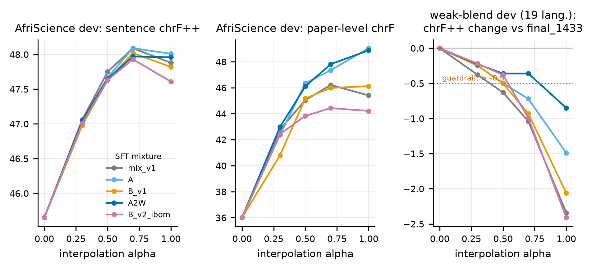
What was run and how it ended. The final run (science and general prompts in the ratio 70:30, 77 languages, Section 4.7) started from the interpolated science-stage model A2W ($\alpha=0.7$) on 2026-10-22 at 13:00 UTC with 700 steps planned and ended at step 401. The project lead had fixed four stop criteria in advance, and at the evaluation of step 350 all four held: no gain of the evaluation reward of +0.03 or more, sentence-level chrF++ within $\pm 0.3$, the paper-level chrF++ (mean of the evaluations at steps 300 and 350) less than 1.0 above the reference value, and the weak-language dev chrF++ not up by 0.3; no forgetting criterion triggered. The wording of the criteria is not in a repository file (they are quoted from the project lead's instruction) and the reference point is not stated there. Measured from the evaluation of step 250, the start of the 100-step window, all four hold: the evaluation reward was -0.586 and -0.566 at steps 300 and 350 against -0.525 at step 250, sentence chrF++ 48.82 and 48.86 against 48.84 (48.79 at the start), paper-level chrF++ 45.36 on average against 45.24, and weak-language dev chrF++ 25.32 and 25.26 against 25.41. Measured from step 0, the paper-level criterion would not hold (45.36 against 44.02, +1.34; TODO(owner: confirm the reference point of the paper-level criterion)). A linear wind-down of the learning rate over 50 steps (steps 351-401; 3.75e-7 at step 351 to 7.5e-9 at step 401) was then started (written 2026-10-23 at 13:42 UTC), followed by the final evaluation at step 401 and the push of the weights.
Interruptions and settings. The step series of the final lineage is continuous from step 1 to 401 (Figure 9 marks the events). (i) A planned restart after the step-150 checkpoint (the process was ended by SIGTERM at 21:22 UTC on 2026-10-22 and restarted twenty seconds later): the KL guard, which had cut the learning-rate scale to 0.5, 0.25 and 0.125 between steps 121 and 145, was reset (scale 1.0 at step 151, 0.5 again from step 155), and the padding ("stuffed output") detector stopped firing: it had marked 3.2-4.7% of the completions of every 25-step block of steps 1-150 as hard failures and marked none in steps 151-401, so the hard-failure share of the training batches fell from 0.056-0.061 to 0.013-0.017 (25-step blocks) and the mean training reward rose by about 0.2 at that step (Figure 9, top left). The configuration of the restart points to version 3 of the anchors (Section 7.3); we infer from this change in the metrics, not from a log line, that version 3 was in force from step 151 on and the first 150 steps ran with the earlier detector (TODO(owner: confirm)). The training reward is therefore not comparable across step 150 and is not a quality measure; the same holds for the evaluation reward before and after step 150. From step 182 the per-language draw weights of LANG_WEIGHTS.json (the dry-run proposals of the adaptive controller at step 150, applied by the project lead) were in force; the controller itself never changed a weight (dry run, 0 updates). (ii) Two out-of-memory kills (2026-10-23 at 04:22:56 and 04:49:17 UTC) because other jobs on the shared GPU had filled its memory; the run was resumed from the step-250 checkpoint each time with a smaller scoring micro-batch (24,576, then 12,288, then 6,144 tokens per forward), which does not change the optimisation, and steps 251-267 of the first attempt were discarded (the third process, which produced steps 251-401 including the wind-down, is the one reported). The operator-set learning-rate scale was 0.75 from step 251 (written 03:13 UTC; 0.5 before), the KL guard was reset at the restart (scale 1.0 from step 251, 0.5 again from step 341). The run is therefore not a single uninterrupted trajectory, and we have not checked how the sampling streams of the resumed steps relate to those of the discarded attempt.
Time. The 401 steps of the final lineage took 26.2 hours of step time (median 218 s per step; 197 s in steps 1-150, 205 s in 151-250, 283 s in 251-401, where the GPU was shared and the micro-batch smaller), 26.6 hours of wall-clock between the first and the last step of the lineage excluding the 112 minutes lost between the step-250 evaluation and the first resumed step, and 28.4 hours between the first and the last record of the metrics file (Appendix F). The last process, steps 251-401, ran 45,456 s (12.6 h).
Result: the sentence-level gain over the start is small, the run mostly made the model stable and finishing. Table 21 and Figure 9 give the evaluations (every 50 steps, and at the last step). On the AfriScience dev sentences chrF++ is 48.92 at step 401 against 48.79 at the start (+0.13; BLEU 25.74 against 25.46; the nine evaluations after step 0 lie between 48.63 and 48.93 with a standard deviation of 0.10; the per-language changes are zul +0.43, amh +0.31, yor +0.06, lug -0.01, hau -0.02, nso -0.03). On the general dev set (19 languages, 760 sentences) it is 42.04 against 41.97 (+0.07; 13 of 19 languages up, largest Fon +1.12 and Igbo +0.77, smallest Swahili -1.23 and Zulu -0.88), on the weak-language dev set (13 languages, 60 sentences each) 25.28 against 24.90 (+0.38; 12 of 13 languages up, Mossi +1.08, Umbundu +0.64, Kabiye -0.21), but that series peaked at 25.55 at step 100 and drifted down by 0.27 afterwards, and with 60 sentences per language (noise about 3 chrF++ per language, Section 8.2) we do not consider a change of this size established. We computed no confidence intervals for these changes (the per-sentence outputs are not part of the metrics file); the spread of the evaluations above is the only noise estimate. At paper level (150 development papers, 25 in each of six languages of 542-1,346 source tokens, translated in a single pass) the finished rate went from 0.927 (139 of 150) to 1.000 within 50 steps, stayed at 0.993-1.000 until step 300 and was 0.967 (145 of 150) at steps 350 and 401; paper-level chrF++ went from 44.02 to 46.93 at step 50 and then 45.47, 45.27, 46.49, 45.24, 46.11, 44.61, 45.00 and 44.37 at step 401 (+0.35 at the end, standard deviation of the series 0.85). The evaluations at steps 400 and 401 are one optimiser step apart at a learning rate of 1.5e-8 and 7.5e-9 and differ by 0.63 chrF++ and by three documents in the finished count: that gives the order of magnitude of the evaluation noise at paper level, and the early gain (+2.9 at step 50) has not been sustained. Per language at paper level (end against start, one 25-document sample each) Luganda +1.91, Zulu +1.36 and Amharic +0.94 are up and Hausa -1.58 and Yoruba -0.56 down. The overall reading is that, as in phase 2c, RL moved nothing at sentence level beyond the noise of these sets (the +0.13 on the sentence dev set is slightly larger than the standard deviation of that series, 0.10, and we do not call it established), and that the paper-level finished rate, which RL had already moved to about 1.0 in the first 50 steps, ended slightly below its best. The main effects of the run are the ones that the earlier sections describe: the finish-rate and loop repair of the science-stage model and a stable optimisation with the amended reward. The benchmark of Section 6.10 shows that finishing is not the same as translating everything (the step-250 checkpoint covers 87% of the source sentences at about 1,024 tokens and 70% at about 2,048).
Evaluation reward. The mean reward on 192 held-out prompts was -0.783 at the first evaluation (step 25), -0.443 at step 175 (the best, not kept: only the latest weights were pushed, Section 13), -0.516 to -0.586 at steps 200-350 and -0.560 at step 401 (mean QE of the scored completions 0.544, finished rate 0.9375). The series is flat after step 200 within a standard deviation of 0.03, and the step-175 maximum follows the change of the padding detector at step 150, so that earlier values are not comparable. By length bin the final evaluation reward is +0.10 (b64), -0.21 (b256), -0.48 (b512), -0.62 (b1024) and -1.92 (b2048); the b2048 prompts stayed between -1.82 and -1.95 at all 17 evaluations, i.e. close to the hard-failure floor of -2: RL with this reward did not teach the 2,048-token windows, in line with Section 6.4. By domain the final reward is -0.86 on science and -0.15 on general prompts.
Specific languages. The Amharic sentence chrF++ of the AfriScience dev set is 25.59 at step 401 against 25.28 at the start and 25.65 at step 250, and Amharic at paper level 23.50 against 22.57 (24.71 at step 250): the small Amharic gain of the stage was already in place at step 250 and was not extended (Section 9.1). The Yoruba sentence dev score is flat (39.55 against 39.49), the Yoruba paper-level score lower (31.71 against 32.28, with all 25 papers finished against 20 at the start).
Stability. Over the 401 steps the KL to the start model had a median of 0.096 (10th and 90th percentile 0.049 and 0.152, maximum 0.267; 45 of 401 steps above the guard level of 0.15, 44 of them before step 351 and one in the wind-down) with the KL coefficient 0.1; the pre-clip gradient norm had a median of 0.71 and a maximum of 3.45 (64 steps above the clip at 1.0, 3 of them in the wind-down). The greedy member, with its advantage computed from the sampled members only, no longer dominates the gradient. The wind-down itself changed nothing visible: the mean KL of its steps (median 0.101) and the evaluations at steps 350, 400 and 401 are within the noise of the evaluations before it.
Checkpoint. The final weights (step 401) are in the private Hub repository latest, on the branch final2/step401 and under the tag final2-step401 (commit 8bb1a029); the branch main of that repository still holds the SFT-stage models (for example A2W at $\alpha=0.7$), and no mid-run checkpoint was kept (Section 13). The checkpoint is the last step of the run, not one selected by the evaluations.
Evaluation of the final checkpoint on the benchmarks (added after the run; CPU analysis of the outputs the evaluation scripts wrote, 2026-10-23). The numbers above are all development sets. We then ran the final checkpoint through the same scripts, decoding (greedy, 768 new tokens, vLLM) and metric stack as the other checkpoints on FLORES+ devtest (45 languages), NTREX-128 (24), MAFAND-MT (15), SmolSent (45) and on the AfriScience-MT dev and test splits (6 languages, sentences and whole papers); the hypotheses of SFT-final and RL-final on the first four benchmarks are those of the pairwise comparison of Section 6.9. Confidence intervals are 95% percentile intervals of a paired bootstrap over sentences (1,000 resamples, the same resample for all systems; over papers for the paper level); they contain no language-sampling noise and no seed-to-seed variance (there is one run). AfriCOMET and SSA-COMET were first computed for the final checkpoint on FLORES+ only (Section 6.8); a later pass (agent R20, 2026-10-24, same scorers) added per-sentence AfriCOMET-QE, AfriCOMET with reference, SSA-COMET-QE and SSA-COMET with reference for NTREX-128, MAFAND-MT, SmolSent, SALT and GlotStoryBook, and the pairwise comparison with RL-final under the learned reference-based metrics (agent G1, 2026-10-24) is given below (Table 18).
Sentence level, benchmarks of the general kind (Table 16, Table 17). On FLORES+ no_pair rows the final checkpoint reaches 34.31 chrF++ against 34.08 for RL-final (+0.23 [+0.19, +0.27] over the 45 languages; spBLEU +0.26 [+0.22, +0.31]), and by the same margin on the other three benchmarks (NTREX-128 +0.17 [+0.13, +0.21], MAFAND-MT +0.16 [+0.06, +0.24], SmolSent +0.20 [+0.15, +0.24]; on the clean rows the intervals include zero on FLORES+, +0.12 [-0.02, +0.26], and exclude it elsewhere). NTREX-128 and SmolSent are two of the six test sets on which the anchors of the final run were fitted (Section 6.9a), so those two differences are not independent tests of the final run; FLORES+ and MAFAND-MT are not among them (for FLORES+, the five languages with an NLLB reward signal were chosen with its devtest gaps). The gain is consistent in sign but more than 20 times smaller than the +5.4 of RL over SFT: it is the size of the difference between two checkpoints of the same plateau (Section 6.3). Sentence by sentence the final checkpoint wins 31-33% of the sentences, ties in 38-41% and loses 28-30% (chrF++, threshold 1 point), i.e. it is preferred in 52-53% of the non-tied sentences (FLORES+ 53.4% [52.8, 54.0], NTREX-128 52.1% [51.5, 52.7], MAFAND-MT 53.0% [52.0, 54.0], SmolSent 52.4% [51.8, 53.1]), against 63.7% for RL over SFT in Section 6.9. The learned metrics do not agree on the direction: on FLORES+ AfriCOMET is lower for the final checkpoint by 0.0016 [-0.0022, -0.0011] (42 languages; higher in 9 of the 42) and SSA-COMET by 0.0017 [-0.0026, -0.0007] (22 languages; higher in 6 of the 22), the paired intervals excluding zero but the differences amounting to a quarter of a percent of the scale (Table 28, Section 6.8). The chrF++ gain is concentrated in the six languages of the science stage (amh, hau, lug, nso, yor, zul): +0.82 chrF++ on FLORES+ against +0.14 for the other 39 languages (point estimates of the per-language differences; the same split gives +0.73 against +0.12 on SmolSent, +0.42 against +0.10 on NTREX-128 and +0.31 against +0.08 on MAFAND-MT), the largest per-language gains on FLORES+ being Amharic +1.04, Northern Sotho +1.02 and Yoruba +0.98; three languages are clearly lower (Kabuverdianu -0.49, Luo -0.40, Dyula -0.22, Table 94). Against the science-stage start A2W the final checkpoint is +0.15 [+0.12, +0.17] chrF++ (45 languages) and +0.0034 [+0.0030, +0.0038] AfriCOMET, against the step-250 checkpoint -0.05 [-0.08, -0.03] chrF++ and -0.0006 AfriCOMET: the 150 further steps of the run did not move the benchmark scores in any direction larger than 0.1 chrF++. Reading: the final checkpoint is not worse than RL-final on these benchmarks and by chrF++ is marginally better (about +0.2), by the learned metrics marginally worse (about -0.002 AfriCOMET), and neither difference is large enough, nor measured with enough independent units (one run, no language-sampling noise), for us to call it a change in quality. The honest summary is "level". Section 7.9 checks, on the same stored outputs, whether the extra reward terms of the final run show an effect on copying, entity loss, padding, repetition and whole documents: they show lower padding and repetition in the weak languages and no demonstrated protection elsewhere, and the run has no control.
no_pair and clean rows, 95% paired-bootstrap intervals over sentences (language-sampling noise not included; "clearly" = the paired interval of that language excludes zero). Hypotheses: SFT-final and RL-final from the pairwise comparison of Section 6.9 (/workspace/jobs/e1), final2 from /workspace/jobs/e2/out_final2 and out_final2_other; all rows, references and contamination flags identical in the three systems (152,309 rows). The bootstrap resamples here differ from those of Table 28 (E2 aggregation), so the intervals differ in the last digit. Source: paper/data/final2_eval/, paper/scripts/box_p5_bench_compare.py.| benchmark | subset | langs | chrF++ SFT-final | chrF++ RL-final | chrF++ final2 | $\Delta$ chrF++ final2 $-$ RL-final [95% CI] | $\Delta$ spBLEU final2 $-$ RL-final [95% CI] | languages higher / clearly higher / clearly lower (chrF++) | finished % RL / final2 |
|---|---|---|---|---|---|---|---|---|---|
| FLORES+ devtest | no_pair | 45 | 28.7 | 34.1 | 34.3 | +0.23 [+0.19, +0.27] | +0.26 [+0.22, +0.31] | 37 / 18 / 3 | 100.0 / 100.0 |
| clean | 45 | 25.1 | 31.7 | 31.8 | +0.12 [-0.02, +0.26] | +0.08 [-0.07, +0.23] | 28 / 1 / 1 | 100.0 / 100.0 | |
| NTREX-128$^\dagger$ | no_pair | 24 | 33.2 | 37.1 | 37.3 | +0.17 [+0.13, +0.21] | +0.30 [+0.26, +0.35] | 20 / 12 / 3 | 99.9 / 100.0 |
| clean | 24 | 31.4 | 35.6 | 35.7 | +0.17 [+0.13, +0.21] | +0.29 [+0.23, +0.34] | 19 / 11 / 2 | 99.9 / 100.0 | |
| MAFAND-MT test | no_pair | 15 | 38.4 | 42.0 | 42.2 | +0.16 [+0.06, +0.24] | +0.25 [+0.14, +0.36] | 9 / 7 / 1 | 100.0 / 100.0 |
| clean | 15 | 38.2 | 41.8 | 42.0 | +0.17 [+0.05, +0.27] | +0.25 [+0.13, +0.38] | 9 / 7 / 1 | 100.0 / 100.0 | |
| SmolSent$^\dagger$ | no_pair | 45 | 26.1 | 31.4 | 31.6 | +0.20 [+0.15, +0.24] | +0.28 [+0.22, +0.33] | 31 / 18 / 4 | 100.0 / 100.0 |
| clean | 45 | 20.0 | 27.0 | 27.2 | +0.25 [+0.12, +0.39] | +0.29 [+0.15, +0.44] | 29 / 4 / 2 | 100.0 / 100.0 |
no_pair rows pooled over languages). Intervals: sentence bootstrap, 1,000 resamples. The preferences under the learned metrics are in Table 18.benchmark (no_pair rows) |
sentence pairs | mean sentence chrF++ RL-final | final2 | $\Delta$ [95% CI] | final2 wins / ties / loses % | final2 preferred, % of non-tied [95% CI] |
|---|---|---|---|---|---|---|
| FLORES+ devtest | 43,692 | 33.605 | 33.806 | +0.20 [+0.17, +0.24] | 33.1 / 38.1 / 28.8 | 53.4 [52.8, 54.0] |
| NTREX-128 | 47,365 | 36.337 | 36.394 | +0.06 [+0.01, +0.10] | 30.8 / 40.9 / 28.3 | 52.1 [51.5, 52.7] |
| MAFAND-MT test | 16,913 | 42.526 | 42.676 | +0.15 [+0.07, +0.23] | 31.6 / 40.3 / 28.1 | 53.0 [52.0, 54.0] |
| SmolSent | 36,704 | 31.713 | 31.903 | +0.19 [+0.14, +0.24] | 32.6 / 37.8 / 29.6 | 52.4 [51.8, 53.1] |
Learned reference-based metrics, sentence by sentence (Table 18). To repeat the pairwise comparison of Section 6.9 for the final checkpoint we joined its per-sentence scores to those of RL-final by (benchmark, language, row id) and kept the no_pair rows on which both systems have the metric (AfriCOMET with reference: all no_pair rows of the AfriCOMET languages, from the pairwise comparison and its completion for NTREX-128, MAFAND-MT and SmolSent; SSA-COMET with reference: the sample of the pairwise comparison, at most 400 sentences per language plus the clean rows, 22 languages). AfriCOMET-QE, the reward model of RL-final, is not used. The two scoring pipelines agree: on the 14,339 rows where the two systems wrote identical text, the scores differ by 0.0002 on average (AfriCOMET with reference, largest difference 0.005; SSA-COMET with reference 0.00006, largest 0.004). Ties are differences below 1 chrF++ or 0.01, as in Section 6.9. On the three benchmarks pooled the learned metrics point the other way from chrF++: AfriCOMET with reference is lower for the final checkpoint by 0.0027 [-0.0032, -0.0023] (40 languages, 92,673 sentences; 17 languages clearly lower, 1 clearly higher) and SSA-COMET with reference by 0.0033 [-0.0041, -0.0025] (22 languages, 42,700 sentences; 11 clearly lower, 1 clearly higher), and per sentence the final checkpoint is preferred in 47.5% [47.1, 47.8] and 47.6% [47.1, 48.2] of the non-tied sentences, against 52.4% [52.0, 52.8] by chrF++ on the same benchmarks (100,982 sentences). The sign is the same on each benchmark (AfriCOMET with reference lower by 0.0047 on NTREX-128, 0.0030 on MAFAND-MT, 0.0024 on SmolSent, 0.0014 on the FLORES+ sample; SSA-COMET with reference lower by 0.0051, 0.0019, 0.0019 and 0.0025; the SSA-COMET preference on MAFAND-MT, 49.2% [48.1, 50.3], is the one interval that includes 50%). For comparison, the learned metrics prefer RL-final over SFT-final in about 70% of the non-tied sentences (Section 6.9): the difference between the final checkpoint and RL-final is about a quarter of a percent of the metric scale and runs in the opposite direction to chrF++. The chrF++ gain sits in the languages where the learned metric falls most: for the six science-stage languages the chrF++ difference is +0.37 and the AfriCOMET difference -0.0054 (point estimates, mean over languages), for the other languages +0.06 and -0.0023; Amharic is +0.55 [+0.39, +0.73] chrF++ in this pool but -0.0154 [-0.0188, -0.0119] AfriCOMET (SSA-COMET -0.0085 [-0.0121, -0.0045]) and Yoruba +0.55 [+0.34, +0.78] chrF++ but -0.0099 [-0.0123, -0.0076] AfriCOMET, while Luganda is clearly higher in both learned metrics (AfriCOMET +0.0036 [+0.0011, +0.0062], SSA-COMET +0.0064 [+0.0032, +0.0098]; chrF++ +0.10 [-0.17, +0.37]). Two cautions. The metrics disagree, so neither supports a statement that the final checkpoint translates better or worse: the honest summary stays "level", with surface overlap with the human references slightly higher and the learned metrics slightly lower. And the learned metrics are not held-out for the final run: its reward contained a QE ensemble of AfriCOMET-QE and SSA-COMET-QE (Section 4.7), whose reference-based counterparts are the metrics used here, so they are not independent evidence of quality for this checkpoint (as for RL-final, Section 6.9); moreover its anchors and long-document limits were fitted on the test splits of NTREX-128, SmolSent, SALT, GlotStoryBook, IbomMT, FLORES-MOZ, SmolDoc and AfriLongDoc core, so its benchmark results on those sets are not independent (Section 6.9a); chrF++ against the human references is independent of every learned model of the reward stack (though the consensus part of the reward is built from chrF++). All of this is agreement with human references under automatic metrics, not a human evaluation.
no_pair rows; macro over languages with at least 20 sentences; benchmarks as in Section 6.9). Languages: those where both systems have the metric; sentences: pooled over those languages. Ties: difference below 1 chrF++ or below 0.01. "Preferred": wins over wins plus losses, sentences pooled, 95% paired bootstrap over sentences (1,000 resamples, language strata resampled independently). "Languages higher / clearly higher / clearly lower": point estimate above zero / interval of the language mean difference above / below zero. The sentence-level chrF++ here is the sentence mean (the corpus-level chrF++ of Table 16 differs). SSA-COMET with reference covers a hash sample of the sentences of RL-final (at most 400 per language plus the clean rows). Source: paper/data/final2_eval/g1_pairwise_final2_summary.csv, paper/scripts/box_g1_pairwise_final2.py; scores of the final checkpoint from the private Hub dataset /SabiYarn-MT-benchmark-translations /workspace/jobs/e1/neural and /workspace/jobs/t1/comet_extra.benchmark (no_pair rows) |
metric | languages | sentences | RL-final (macro mean) | final2 | $\Delta$ final2 $-$ RL-final [95% CI] | final2 wins / ties / loses % (macro) | final2 preferred, % of non-tied [95% CI] | languages higher / clearly higher / clearly lower |
|---|---|---|---|---|---|---|---|---|---|
| NTREX-128 | chrF++ (sentence) | 24 | 47,365 | 36.42 | 36.48 | +0.06 [+0.02, +0.10] | 30.9 / 40.8 / 28.3 | 52.1 [51.6, 52.7] | 13 / 6 / 4 |
| AfriCOMET-ref | 22 | 43,371 | 0.6255 | 0.6208 | -0.0047 [-0.0053, -0.0041] | 34.2 / 27.1 / 38.8 | 46.8 [46.3, 47.4] | 1 / 0 / 13 | |
| SSA-COMET-ref | 18 | 21,618 | 0.4727 | 0.4676 | -0.0051 [-0.0060, -0.0042] | 34.2 / 26.6 / 39.2 | 46.6 [45.8, 47.3] | 2 / 0 / 11 | |
| MAFAND-MT test | chrF++ (sentence) | 15 | 16,913 | 41.63 | 41.84 | +0.20 [+0.10, +0.32] | 32.5 / 39.8 / 27.7 | 53.0 [52.0, 54.0] | 9 / 5 / 1 |
| AfriCOMET-ref | 15 | 16,913 | 0.6639 | 0.6609 | -0.0030 [-0.0043, -0.0019] | 32.2 / 32.3 / 35.5 | 47.1 [46.2, 48.0] | 4 / 1 / 6 | |
| SSA-COMET-ref | 13 | 12,951 | 0.5439 | 0.5420 | -0.0019 [-0.0034, -0.0004] | 33.3 / 31.6 / 35.2 | 49.2 [48.1, 50.3] | 4 / 1 / 2 | |
| SmolSent | chrF++ (sentence) | 45 | 36,704 | 31.29 | 31.48 | +0.18 [+0.13, +0.23] | 32.5 / 37.7 / 29.8 | 52.4 [51.8, 53.1] | 32 / 17 / 3 |
| AfriCOMET-ref | 40 | 32,389 | 0.5923 | 0.5899 | -0.0024 [-0.0031, -0.0017] | 36.4 / 25.1 / 38.6 | 48.5 [47.9, 49.1] | 9 / 0 / 10 | |
| SSA-COMET-ref | 22 | 8,131 | 0.4687 | 0.4668 | -0.0019 [-0.0034, -0.0004] | 35.7 / 25.9 / 38.4 | 48.2 [47.0, 49.5] | 9 / 1 / 5 | |
| the three pooled | chrF++ (sentence) | 47 | 100,982 | 32.37 | 32.47 | +0.10 [+0.07, +0.13] | 31.0 / 39.9 / 29.1 | 52.4 [52.0, 52.8] | 29 / 17 / 4 |
| AfriCOMET-ref | 40 | 92,673 | 0.6039 | 0.6012 | -0.0027 [-0.0032, -0.0023] | 35.5 / 26.2 / 38.3 | 47.5 [47.1, 47.8] | 7 / 1 / 17 | |
| SSA-COMET-ref | 22 | 42,700 | 0.4918 | 0.4885 | -0.0033 [-0.0041, -0.0025] | 34.6 / 27.3 / 38.1 | 47.6 [47.1, 48.2] | 4 / 1 / 11 | |
| FLORES+ devtest | chrF++ (sentence) | 45 | 43,692 | 33.83 | 34.04 | +0.21 [+0.17, +0.25] | 33.3 / 37.9 / 28.8 | 53.4 [52.8, 54.0] | 37 / 16 / 4 |
| AfriCOMET-ref | 42 | 16,126 | 0.6145 | 0.6130 | -0.0014 [-0.0024, -0.0005] | 36.0 / 26.3 / 37.7 | 48.8 [47.9, 49.7] | 13 / 2 / 10 | |
| SSA-COMET-ref | 22 | 8,126 | 0.5125 | 0.5100 | -0.0025 [-0.0039, -0.0011] | 34.3 / 28.6 / 37.1 | 48.0 [46.6, 49.3] | 5 / 0 / 5 |
AfriScience-MT (Table 19). The final run was trained on the AfriScience-MT training split and its checkpoint-selection rule uses the dev split, so the test columns are the clean ones (the split was not used for any decision; it had been read once for A2W and RL-final in Section 6.6, and it is read here for the final checkpoint). Against RL-final the final checkpoint is +2.40 [+2.25, +2.56] sentence chrF++ on test (all six languages up; dev +2.46 [+2.29, +2.62]) and +13.0 [+11.4, +14.4] chrF at paper level in one pass (test 46.05 against 33.05, 28 papers per language; the finished rate 98.2% against 72.0%). Against the science-stage start A2W, which it continued with 401 RL steps, the sentence-level gain is +0.17 [+0.07, +0.27] on test (+0.15 [+0.03, +0.27] on dev; three of six languages clearly up on test, none clearly down), and at paper level the change is inside the noise (test chrF +0.28 [-1.18, +1.73], chrF++ +0.12 [-1.32, +1.50]; dev +1.44 [+0.04, +2.88] chrF, which only just excludes zero and is a development set); the finished rate is 98.2% against 94.0% (+4.2 points [0.0, 8.3]). The gains over RL-final therefore come from the science-stage supervised data, and the final run adds at most the small sentence-level gain and a few more finished papers. A caveat on the comparison: the final2 outputs come from eval_afriscience.py and those of A2W and RL-final from the stage-evaluation script of Section 6.6; both are vLLM greedy decodes, and the two scripts give RL-final the same dev score and 44.86 against 44.90 on test (0.04 chrF++), which is the size of the pipeline noise between them. The papers translated by the final checkpoint are shorter than their references (median character ratio 0.84, and 45% of the papers below 0.8, against 0.84 and 42% for A2W; RL-final 0.92 and 30% with 37% above 1.25, i.e. loops), so the paper-level result should be read as "finishes and writes the language, and omits as much as A2W", not as a repair of the omissions of Section 6.10 (the 2,048-token benchmark of Section 6.10 was not run for the final checkpoint). The paper-level numbers are for papers of about 900 tokens, not the 1,000-2,000-token documents of the benchmark.
/workspace/jobs/a4/eval_final2_step401. Differences: paired bootstrap over sentences (sentence level) or papers (paper level), 1,000 resamples; finished-rate differences in percentage points. Dev: 843 sentences and 25 papers per language; test: 970 sentences and 28 papers per language. Source: paper/data/final2_eval/afs_macro.csv, afs_paired.csv, paper/scripts/box_p5_afs_compare.py.| AfriScience-MT (6 languages) | dev sentence chrF++ | dev paper chrF | dev paper finished % | test sentence chrF++ | test paper chrF | test paper chrF++ | test paper finished % |
|---|---|---|---|---|---|---|---|
| RL-final (phase 2c, step 1,433) | 45.65 | 36.00 | 74.7 | 44.90 | 33.05 | 29.13 | 72.0 |
| science-stage start A2W ($\alpha=0.7$) | 47.97 | 47.81 | 92.0 | 47.13 | 45.76 | 42.04 | 94.0 |
| final run, final2 step 401 | 48.12 | 49.25 | 98.0 | 47.30 | 46.05 | 42.16 | 98.2 |
| final2 $-$ RL-final [95% CI] | +2.46 [+2.29, +2.62] | +13.26 [+11.39, +15.14] | +23.3 [+16.7, +30.0] | +2.40 [+2.25, +2.56] | +13.00 [+11.43, +14.43] | +13.03 [+11.53, +14.42] | +26.2 [+19.6, +32.7] |
| final2 $-$ A2W [95% CI] | +0.15 [+0.03, +0.27] | +1.44 [+0.04, +2.88] | +6.0 [+1.3, +10.7] | +0.17 [+0.07, +0.27] | +0.28 [-1.18, +1.73] | +0.12 [-1.32, +1.50] | +4.2 [+0.0, +8.3] |
reports/afriscience_science_run_2026-10-21/published_chrf_test_eng2x.csv; the published rows are fine-tuned or few-shot systems of 0.6-9B parameters or API models, and their Yoruba values for the NLLB and M2M models (13-18) are far below the Gemma2 value (42) in the same table, which suggests a diacritic-handling effect that we did not investigate; macros including Yoruba should not be read as quality differences). Not the same decoding or prompts, no paired intervals.| system | level | amh | hau | lug | nso | yor | zul | macro |
|---|---|---|---|---|---|---|---|---|
| RL-final (1,433) | ours (sentence) | 25.3 | 59.4 | 46.2 | 55.9 | 37.4 | 63.4 | 47.9 |
| science-stage start A2W | ours (sentence) | 26.2 | 62.0 | 48.9 | 58.3 | 39.8 | 64.7 | 50.0 |
| final2 step 401 | ours (sentence) | 26.6 | 61.9 | 49.3 | 58.5 | 40.1 | 64.7 | 50.2 |
| NLLB-200-1.3B fine-tuned | published (sentence) | 45.5 | 67.7 | 51.5 | 64.3 | 17.7 | 67.2 | 52.3 |
| NLLB-200-distilled-600M fine-tuned | published (sentence) | 44.4 | 66.9 | 50.6 | 64.2 | 17.6 | 66.3 | 51.7 |
| M2M100-1.2B fine-tuned | published (sentence) | 39.0 | 63.1 | 49.5 | 62.4 | 16.6 | 58.4 | 48.2 |
| NLLB-200-1.3B zero-shot | published (sentence) | 37.4 | 59.4 | 43.2 | 51.4 | 13.0 | 60.1 | 44.1 |
| Gemma2-9B LoRA r64 fine-tuned | published (sentence) | 39.7 | 58.8 | 50.1 | 61.6 | 41.6 | 50.2 | 50.3 |
| GPT-5.4 10-shot | published (sentence) | 43.8 | 63.0 | 56.4 | 59.5 | 28.1 | 68.9 | 53.3 |
| Gemini-3.1-Flash-Lite 10-shot | published (sentence) | 41.6 | 61.1 | 49.5 | 55.9 | 22.9 | 61.8 | 48.8 |
| RL-final (1,433) | ours (paper) | 21.4 | 47.1 | 31.6 | 35.0 | 22.5 | 40.6 | 33.0 |
| science-stage start A2W | ours (paper) | 25.8 | 57.0 | 46.6 | 54.0 | 33.9 | 57.4 | 45.8 |
| final2 step 401 | ours (paper) | 25.2 | 59.7 | 45.5 | 54.8 | 32.4 | 58.6 | 46.0 |
| GPT-5.4 1-shot | published (paper) | 42.8 | 66.8 | 59.5 | 64.9 | 28.7 | 68.6 | 55.2 |
| GPT-5.4 0-shot | published (paper) | 26.0 | 66.1 | 59.0 | 63.3 | 19.8 | 66.1 | 50.0 |
| Gemini-3.1-Flash-Lite 1-shot | published (paper) | 45.1 | 64.3 | 50.8 | 55.8 | 17.5 | 62.9 | 49.4 |
| TranslateGemma-12B 1-shot | published (paper) | 20.4 | 33.3 | 15.6 | 21.5 | 7.0 | 32.7 | 21.8 |
| Gemma2-9B-IT 1-shot | published (paper) | 3.8 | 30.9 | 8.2 | 10.4 | 2.7 | 12.6 | 11.4 |
With the numbers published with the dataset (Abdulmumin et al., 2026) (Table 20) the final checkpoint's 50.2 sentence chrF on test is level with the published fine-tuned Gemma2-9B LoRA (50.3), above Gemini-3.1-Flash-Lite 10-shot (48.8), below the fine-tuned NLLB models (51.7-52.3, with the Yoruba caveat of the caption: without Yoruba their macros are 58.5 and 59.2 against 52.2 for ours, our computation from the table) and below GPT-5.4 10-shot (53.3); at paper level 46.1 is below GPT-5.4 1-shot (55.2) and Gemini-3.1-Flash-Lite 1-shot (49.4) and far above TranslateGemma-12B and Gemma2-9B-IT 1-shot (21.8, 11.4). These are comparisons with the authors' numbers on a split that our model trained on, and were produced by different pipelines; they are context, not evidence of ranking.
Which checkpoint should the paper present as its headline model? We keep RL-final (phase 2c, step 1,433) as the headline, and recommend that decision to the project lead (TODO(owner: decide the headline model; evidence in this subsection and in paper/TODO.md)). The evidence: (i) On the general benchmarks the final checkpoint is level with RL-final (about +0.2 chrF++, about -0.002 AfriCOMET on FLORES+ and -0.003 AfriCOMET and SSA-COMET with reference on the three other benchmarks, preferred in 52% of the non-tied sentences by chrF++ and in 47-48% by the learned reference-based metrics; +0.15 chrF++ / +0.003 AfriCOMET over A2W): there is no benchmark on which it is clearly better in a way that matters. (ii) On the AfriScience test split it is clearly better than RL-final (+2.4 sentence chrF++, +13 paper-level chrF, finished 98% against 72%), but not clearly better than A2W (+0.17 sentence chrF++, paper level inside the noise): that gain is the science-stage SFT, not RL. (iii) In the long-document benchmark of Section 6.10 the final checkpoint behaves like the step-250 checkpoint and like A2W: it finishes 91-98% of the documents of about 1,000-2,000 tokens in one pass and writes the language natively (chrF++ 39.6 and 27.7 at about 1,024 and 2,048 tokens, against 39.6 and 28.2 for the step-250 checkpoint), while omitting about 12% and 27% of the sentences, and it loops more often than the step-250 checkpoint at about 2,048 tokens (loop rate 0.25 against 0.10); its paper-level behaviour at about 900 tokens is statistically indistinguishable from that of A2W. The 401 steps of the final run did not improve long-input translation. (In the independent judge of Section 6.12 its whole-document units are 10.6 points [7.6, 13.9] above RL-final's, but at 25.8 of 100 far below its own sentence-by-sentence output, 67.0.) (iv) Every analysis of the paper that concerns what RL did (Sections 6.1-6.5, 6.9, 7 and the ablation of 8.4) is about RL-final or its SFT start; replacing the headline by a model that also contains a science-stage SFT mixture and 401 further RL steps would confound those claims, and the two models differ in training data (the final run uses the NLLB-derived pseudo-reference signal for five languages and the AfriScience training split, Sections 4.7 and 12). (v) If the paper's purpose is to offer the best translator, the final checkpoint is at least as good as RL-final everywhere we measured, markedly better on science text, and finishes papers; it would then be presented as a second, named model ("RL-final: general; final2: science-adapted"), not as a replacement. We do not claim that the final checkpoint is better than RL-final on general text.
paper/data/final2_metrics.jsonl, final lineage, steps 0-401; step 0 = the start model A2W; the weights of step 400 and 401 differ by one optimiser step at a learning rate below 2e-8). Dev sets: AfriScience-MT dev sentences (6 languages x 200, "AfriScience dev sentence"), the same 150 dev papers translated in one pass ("paper-level"), general dev (19 languages, 760 sentences), weak-language dev (13 languages, 60 sentences each). Evaluation reward: 192 held-out prompts (not evaluated at step 0). The wind-down covers steps 351-401.| step | AfriScience dev sentence chrF++ | paper-level chrF++ | paper-level finished | general dev (19 lang.) | weak dev | eval reward |
|---|---|---|---|---|---|---|
| 0 | 48.79 | 44.02 | 0.927 | 41.97 | 24.90 | -- |
| 50 | 48.63 | 46.93 | 1.000 | 42.08 | 25.16 | -0.645 |
| 100 | 48.72 | 45.47 | 1.000 | 42.24 | 25.55 | -0.600 |
| 150 | 48.93 | 45.27 | 0.993 | 42.19 | 25.54 | -0.579 |
| 200 | 48.85 | 46.49 | 1.000 | 42.02 | 25.47 | -0.516 |
| 250 | 48.84 | 45.24 | 1.000 | 41.98 | 25.41 | -0.525 |
| 300 | 48.82 | 46.11 | 1.000 | 42.12 | 25.32 | -0.586 |
| 350 | 48.86 | 44.61 | 0.967 | 41.95 | 25.26 | -0.566 |
| 400 | 48.91 | 45.00 | 0.987 | 42.03 | 25.22 | -0.558 |
| 401 | 48.92 | 44.37 | 0.967 | 42.04 | 25.28 | -0.560 |
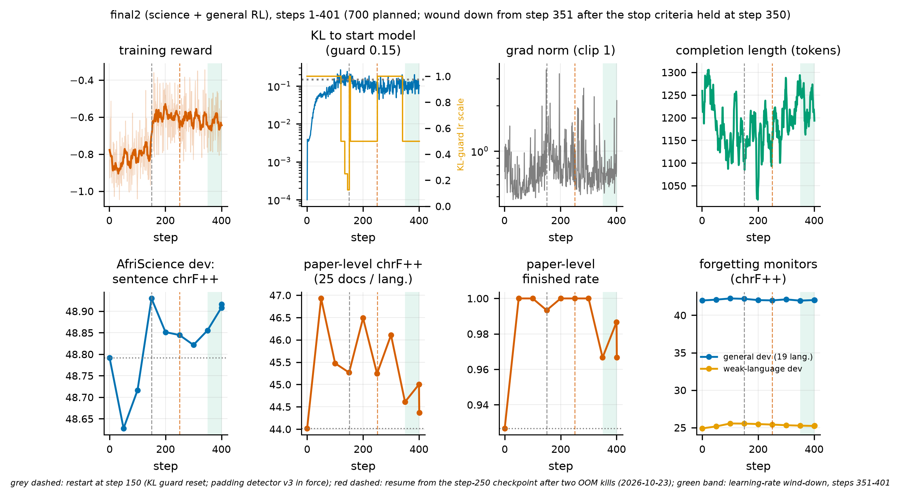
paper/scripts/make_figures.py fig9 from paper/data/final2_metrics.jsonl (refresh with paper/scripts/refresh_final2.sh).Section 6.2 compared our model with the tables printed in other papers. That comparison cannot include a learned African metric, because AfriCOMET is not published for almost any of the baseline systems. We audited the 43 baseline models of our published-baseline file (full matrix in Appendix G, Table 85): an AfriCOMET score appears in a paper for exactly two of them, NLLB-200-distilled-600M and its pruned variant AfriNLLB, and there with an older checkpoint (africomet-mtl v1.0, 9 FLORES-200 languages, Wolof outside the encoder's languages) than the one we use (africomet-stl-1.1) (Moslem et al., 2026). What the recent African-MT papers report is SSA-COMET (Li et al., 2025), a different metric: for 34 of the 43 models (25 via TranslatePsy-AfriSLM (Gritta et al., 2026), 19 languages with both directions averaged as far as we can tell; 9 more only via AfriqueLLM's English-to-X table (Yu et al., 2026), 24 languages, checkpoint not named). For NLLB-200-distilled-1.3B, the 54.5B mixture-of-experts model, Aya-101, GPT-4o, Gemini 1.5 Pro, Gemma 2 27B and Llama 3.1 70B we found no COMET-family number at all. A joint chrF++ and AfriCOMET table over the baselines is therefore impossible from the literature, and we built one from our own scoring.
Protocol. All systems we could run were scored with one metric stack on the same FLORES+ devtest English-to-X sentences, restricted to the no_pair rows (the sentences whose reference pair our SFT never saw; 170 to 1,012 per language; the clean rows, 48 per language whose English side is not in the SFT text, are reported in the appendix tables): chrF++ (sacreBLEU, word order 2, NFC), spBLEU, reference-based AfriCOMET-STL-1.1 and, for 22 languages, reference-based SSA-COMET-MTL. The systems are our five checkpoints (RL-final; SFT-final; A2W, the start of the final run; the step-250 checkpoint of the final run; and the final checkpoint of that run, step 401, added after the run ended), NLLB-200-distilled-600M and NLLB-200-3.3B (the CTranslate2 beam-4 translations of Section 7.5, re-scored), and TranslatePsy-AfriSLM-0.8B (all 19 of its languages) and 2B (only 9 of them: the run was stopped when the GPU budget was cut). The 2B model's weights alone, like those of TranslatePsy-4B, AfriqueGemma-4B and Gemma-3-4B-it, did not fit the 6 GB left to us on the shared GPU; those models are not in the computed rows, and their published numbers stay in a separate column. Intervals are 95% percentile intervals over sentences (1,000 resamples, one resample shared by all systems, hence paired); they do not contain language-sampling noise, and a macro is given only for systems that cover every language of the set. As a check of the stack, our chrF++ for NLLB-200-3.3B on the whole devtest differs from the published value by -0.17 on average over 43 languages (mean absolute difference 0.40; the largest is Yoruba, +3.02, caused by Unicode normalisation: 28% of the Yoruba references are in decomposed form).
Headline comparison: 42 languages without Amharic and Tigrinya, with the two reported alongside. Amharic and Tigrinya, the only Ge'ez-script languages in our set, are, together with Kabuverdianu (a creole, gap 21.0, which we keep in), the largest single gaps to NLLB-200 3.3B (Amharic 19.0 and Tigrinya 11.0 chrF++; RL-final 19.0 and 13.8, NLLB-200 3.3B 38.0 and 24.7, NLLB-200-distilled-600M 37.3 and 22.4). We therefore take the 42 other languages as the headline comparison with NLLB, because the two Ge'ez-script languages are an outlier whose cause we have not tested, not because they are unimportant; they are in the same table (Table 24), next to the macro over all 44 languages, and the all-language number is the one to quote when no language may be left out. On the 44 languages for which RL-final, the final run, NLLB-200 3.3B and NLLB-200-distilled-600M all have a no_pair row (the 43 languages below plus Kanuri, for which our NLLB re-run exists but no published NLLB number does), the macro chrF++ is 34.25, 34.48, 38.09 and 35.94; without the two Ge'ez-script languages (42 languages) it is 35.10, 35.32, 38.42 and 36.23. The gap of RL-final to NLLB-200 3.3B is 3.32 chrF++ on the 42 languages (3.85 on all 44) and the gap to the 600M model 1.13 (1.69); the medians of the per-language gaps are 2.78 (3.17) and 0.51 (0.62), because a few languages carry the mean (next paragraph). On AfriCOMET (the 40 non-Ge'ez languages that have a score) RL-final reaches 0.624 against 0.667 for the 3.3B model and 0.651 for the 600M model, gaps of 0.043 and 0.028 (0.050 and 0.035 with the two Ge'ez-script languages, 42 languages; Amharic 0.490 against 0.719 and 0.712, Tigrinya 0.588 against 0.727 and 0.709). The mean gaps are the differences of the macros in the CSV (the macro of the per-language differences); they are point values without an interval, and Table 24 shows the median gap beside each mean. Excluding the two languages narrows the gap but does not remove it: RL-final is below NLLB-200 3.3B in 34 of the 42 non-Ge'ez languages on chrF++ and in 36 of the 40 on AfriCOMET. This says where the gap lies, not why it is there. Four candidate causes of the deficit in Ge'ez script (and perhaps in similar languages) are open, and we tested none of them: capacity sharing of 270M parameters across 77 languages, tokenisation (only 862 of the 262,144 vocabulary entries contain Ethiopic characters, Section 9.1; 3.03 and 3.46 Gemma tokens per word for Amharic and Tigrinya against 2.09 for Swahili), the amount and quality of Amharic and Tigrinya training data, and Gemma's own pretraining coverage of the two languages (Section 10). NLLB-200 is also larger, was trained on far more data and on many more language pairs, so a comparison with NLLB cannot separate these causes; a matched specialist-model or larger-model experiment is future work (Section 11).
How skewed is the gap? The mean gap is carried by a few languages, and we say so wherever it is quoted. Per language (RL-final minus NLLB-200 3.3B, chrF++, point values over the 44 languages), the mean gap is 3.85 and the median 3.17 (3.32 and 2.78 over the 42 without Amharic and Tigrinya; against the 600M model the mean is 1.69 and the median 0.62). The six largest gaps are Kabuverdianu 21.0, Amharic 19.0, Tigrinya 11.0, Kanuri 9.6, Nuer 7.9 and Kirundi 7.5 (Table 23); the three largest, Kabuverdianu, Amharic and Tigrinya, carry 30% of the summed gap (the six carry 45%), and without those three the mean is 2.89 and the median 2.48 (41 languages, Table 22). Stated separately, the Ge'ez-script languages Amharic and Tigrinya carry 17.7% of the summed gap (mean 15.0 over the two) and Kabuverdianu alone 12.4% (21.0). Kabuverdianu stays in every set, the headline included, because it cannot be discarded: it is also the largest gain of RL-final over SFT-final (+14.2, from 12.6 to 26.8 chrF++) and, in the same pipeline, the largest remaining gap to the 3.3B model (NLLB scores 47.8, we 26.8); both facts are shown in Table 23. At the other end, RL-final is at or above NLLB-200 3.3B on chrF++ in 8 of the 44 languages (point estimates: Dyula +2.9, Umbundu +2.4, Kamba +2.0, Wolof +1.9, Kimbundu +1.9, Fon +1.4, Yoruba +1.0, Igbo +0.7). The stored files hold a 95% interval for each system and language but no per-sentence NLLB scores, so we give no paired per-language interval; the two unpaired intervals do not overlap for six of the eight (not Yoruba and Igbo). This is the chrF++ count; on AfriCOMET (a different metric, 42 languages scored) RL-final is above the 3.3B model in 4 of 42 (Fon, Igbo, Wolof, Yoruba), the count quoted in the paragraph below, and the two statements are about different metrics and language sets, not in conflict. The gaps to the 3.3B model are thus a small number of large deficits (Ge'ez script and a few others, including a creole) on top of a modest deficit in most languages, which is why we give the median beside the mean and read the 42-language mean as a headline, not as a typical language.
no_pair rows), chrF++, the 44 languages with a row for RL-final, SFT-final and NLLB-200 3.3B. Gap = NLLB-3.3B minus RL-final per language (negative: RL-final ahead); share = the set's part of the summed per-language gap (169.3 chrF++ points over the 44, i.e. a mean of 3.85); gain = RL-final minus SFT-final (mean +5.35, median +4.38 over the 44). Point values; no per-sentence NLLB scores are stored, so no paired interval. Source: reports/data/model_comparison_master.csv, computed by paper/scripts/make_noGeez.py (skew), values in paper/data/noGeez_summary.json.| set of languages | n | mean gap | median gap | share of summed gap, % | mean gain over SFT | median gain over SFT |
|---|---|---|---|---|---|---|
| all 44 languages | 44 | 3.85 | 3.17 | 100.0 | 5.35 | 4.38 |
| without amh, tir (42): headline | 42 | 3.32 | 2.78 | 82.3 | 5.39 | 4.86 |
| without kea, amh, tir (41) | 41 | 2.89 | 2.48 | 69.9 | 5.18 | 4.23 |
| Ge'ez script only (amh, tir) | 2 | 14.99 | 14.99 | 17.7 | 4.38 | 4.38 |
| Kabuverdianu only (kea) | 1 | 20.98 | 20.98 | 12.4 | 14.20 | 14.20 |
| three largest gaps (kea, amh, tir) | 3 | 16.99 | 19.00 | 30.1 | 7.65 | 4.43 |
| six largest gaps (kea, amh, tir, knc, nus, run) | 6 | 12.66 | 10.27 | 44.9 | 8.26 | 7.72 |
| RL-final at or above NLLB 3.3B (8) | 8 | -1.78 | -1.94 | -8.4 | 6.14 | 7.11 |
no_pair rows, chrF++, point values). Top block: the eight largest gains of RL-final over SFT-final; middle: the other languages among the six largest gaps to NLLB-3.3B (Kabuverdianu, Kanuri and Nuer are in the top block and are also among the six largest gaps); bottom: the other languages where RL-final is at or above NLLB-3.3B. Gap = NLLB-3.3B minus RL-final (negative: RL-final ahead). SFT finished: share of the SFT-final translations that end within 768 tokens (RL-final: 100% in all of them; part of the gain of Kabiye, Nuer and Kabuverdianu is repaired unfinished output; Kanuri has no SFT data and its gain is a stopping effect). Last column: whether the stored unpaired 95% intervals of RL-final and NLLB-3.3B overlap ("clear": they do not). Source: model_comparison_master.csv, model_comparison_computed/per_language_with_final2.csv, final_model_per_language.csv (finished rates).| language | SFT-final | RL-final | NLLB 3.3B | gain over SFT | gap to NLLB | SFT finished (%) | RL vs NLLB intervals |
|---|---|---|---|---|---|---|---|
| Kabuverdianu (kea) | 12.6 | 26.8 | 47.8 | +14.2 | +21.0 | 76 | -- |
| Kabiye (kbp) | 7.6 | 21.7 | 28.8 | +14.1 | +7.2 | 34 | -- |
| Kamba (kam) | 12.8 | 24.9 | 22.9 | +12.1 | -2.0 | 70 | clear |
| Luo (luo) | 21.1 | 33.0 | 38.4 | +11.9 | +5.4 | 91 | -- |
| Nuer (nus) | 9.4 | 20.8 | 28.7 | +11.4 | +7.9 | 51 | -- |
| Kanuri (knc) | 3.8 | 14.8 | 24.4 | +11.0 | +9.6 | 38 | -- |
| Bambara (bam) | 15.7 | 24.9 | 31.0 | +9.2 | +6.1 | 85 | -- |
| Kimbundu (kmb) | 16.7 | 25.6 | 23.7 | +8.9 | -1.9 | 86 | clear |
| Amharic (amh) | 14.5 | 19.0 | 38.0 | +4.4 | +19.0 | 91 | -- |
| Tigrinya (tir) | 9.4 | 13.8 | 24.7 | +4.3 | +11.0 | 82 | -- |
| Kirundi (run) | 29.8 | 34.1 | 41.6 | +4.2 | +7.5 | 96 | -- |
| Dyula (dyu) | 11.8 | 18.3 | 15.4 | +6.5 | -2.9 | 88 | clear |
| Fon (fon) | 19.4 | 21.7 | 20.3 | +2.3 | -1.4 | 99 | clear |
| Igbo (ibo) | 37.0 | 38.4 | 37.7 | +1.4 | -0.7 | 99 | overlap |
| Umbundu (umb) | 17.6 | 25.3 | 22.9 | +7.7 | -2.4 | 91 | clear |
| Wolof (wol) | 27.1 | 29.5 | 27.6 | +2.4 | -1.9 | 98 | clear |
| Yoruba (yor) | 19.5 | 27.2 | 26.2 | +7.7 | -1.0 | 97 | overlap |
The 43-language set of the earlier tables. Table 25 and Figure 10 give the comparison on the sets used before the headline above, which include Amharic and Tigrinya. On the 43 FLORES+ languages that NLLB-200 covers, RL-final reaches 34.7 chrF++ [34.6, 34.8] against 36.4 for NLLB-200-distilled-600M and 38.4 for NLLB-200-3.3B; on AfriCOMET (the 42 languages on which it can be computed) 0.620 against 0.654 and 0.669. Our 270M model does not beat NLLB. Its deficit to the 600M model, which has 2.3 times as many parameters, is 1.7 chrF++ [1.6, 1.8] and 0.035 AfriCOMET, and to the 3.3B model 3.7 [3.6, 3.8] and 0.050 (paired differences, Appendix G); on the clean rows the gaps are 0.7 and 3.0 chrF++ (RL-final 32.3, 600M 33.0, 3.3B 35.3 over the same 43 languages, intervals of about plus or minus 0.4), so the ordering does not depend on contamination (3.16 and 0.70 chrF++ over the 44 languages of the headline set, Section 6.9a). RL-final scores higher than NLLB-200-distilled-600M in 17 of the 44 languages on chrF++ (Afrikaans, Dyula, Fon, Igbo, Kimbundu, Kanuri, Luganda, Mossi, Oromo, Sango, Southern Sotho, Swahili, Tumbuka, Twi, Umbundu, Wolof, Yoruba) and in 6 of the 42 on AfriCOMET (Fon, Igbo, Mossi, Twi, Wolof, Yoruba); it is higher than NLLB-200-3.3B in 8 of 44 (4 of 42 on AfriCOMET: Fon, Igbo, Wolof, Yoruba). Counting only differences whose 95% intervals do not overlap, it wins 7 and loses 19 languages against the 600M model and wins 6 and loses 30 against the 3.3B model (Table 26, per-language values in Appendix G). The largest deficits are the languages that Section 7.5 already identified: Amharic, Tigrinya, Kabuverdianu, Kanuri against 3.3B, Nuer and Kabiye.
no_pair rows): over all 44 languages with a row for all four systems, over the 42 without the Ge'ez-script languages Amharic and Tigrinya (the headline comparison), and for Amharic and Tigrinya alone. Gap = NLLB system minus RL-final: mean (macro of per-language differences) and median over the languages of the column, point values, no intervals; the last column is Kabuverdianu alone (the largest single gap to NLLB-200 3.3B, in every set). AfriCOMET scores 42 of the 44 languages (not Kabuverdianu and Kanuri), 40 without Amharic and Tigrinya; each single-language column is one language. Amharic and Tigrinya are excluded from the headline because they are an outlier (with Kabuverdianu, the largest single gaps to NLLB-200 3.3B) with an untested cause, not because they are unimportant. Source: reports/data/model_comparison_master.csv (models 'SabiYarn-270M RL-final (GRPO step 1433)', 'SabiYarn-270M final run (final2 step 401)', 'NLLB-200-3.3B (re-run: CT2 int8, beam 4)', 'NLLB-200-distilled-600M (re-run: CT2 fp16, beam 4)'), computed by paper/scripts/make_noGeez.py.| macro over | all 44 languages (AfriCOMET: 42 scored) | without amh, tir (42 languages; AfriCOMET 40): headline | amh | tir | kea (Kabuverdianu; kept in every set) |
|---|---|---|---|---|---|
| chrF++ RL-final | 34.25 | 35.10 | 18.95 | 13.76 | 26.84 |
| chrF++ final run | 34.48 | 35.32 | 20.00 | 13.88 | 26.34 |
| chrF++ NLLB-3.3B | 38.09 | 38.42 | 37.96 | 24.73 | 47.82 |
| chrF++ NLLB-600M | 35.94 | 36.23 | 37.26 | 22.37 | 44.07 |
| chrF++ gap NLLB-3.3B minus RL-final | 3.85 | 3.32 | 19.00 | 10.97 | 20.98 |
| chrF++ gap NLLB-600M minus RL-final | 1.69 | 1.13 | 18.31 | 8.61 | 17.23 |
| chrF++ median gap NLLB-3.3B minus RL-final | 3.17 | 2.78 | 19.00 | 10.97 | 20.98 |
| chrF++ median gap NLLB-600M minus RL-final | 0.62 | 0.51 | 18.31 | 8.61 | 17.23 |
| AfriCOMET RL-final | 0.6196 | 0.6236 | 0.4900 | 0.5878 | n/a |
| AfriCOMET final run | 0.6179 | 0.6222 | 0.4801 | 0.5869 | n/a |
| AfriCOMET NLLB-3.3B | 0.6695 | 0.6668 | 0.7187 | 0.7272 | n/a |
| AfriCOMET NLLB-600M | 0.6543 | 0.6515 | 0.7122 | 0.7087 | n/a |
| AfriCOMET gap NLLB-3.3B minus RL-final | 0.0499 | 0.0432 | 0.2287 | 0.1394 | n/a |
| AfriCOMET gap NLLB-600M minus RL-final | 0.0347 | 0.0279 | 0.2222 | 0.1209 | n/a |
| AfriCOMET median gap NLLB-3.3B minus RL-final | 0.0418 | 0.0401 | 0.2287 | 0.1394 | n/a |
| AfriCOMET median gap NLLB-600M minus RL-final | 0.0292 | 0.0257 | 0.2222 | 0.1209 | n/a |
no_pair rows), macro over language sets, point estimates (intervals in Appendix G, Table M1 and M2). NLLB-43: the 43 FLORES+ languages that NLLB-200 covers; AfriCOMET 42: the 42 of our 45 FLORES+ languages that AfriCOMET can score; TPsy-19 and Afrique-21: the languages of the TranslatePsy and AfriqueLLM studies; SSA-COMET: our own re-scoring with ssa-comet-mtl (x100) for the 21 Afrique languages. "n/a (k/K)": the system covers only k of the K languages, so no macro is given. Rows marked published are the papers' own chrF++ on the whole FLORES-200 devtest with their prompts and are NOT paired with the computed rows. Sources: reports/model_comparison_2026-10-23.md, reports/data/model_comparison_computed/macro.csv (the final-run row: macro_with_final2.csv, which reproduces macro.csv for every other row).| Model | params | chrF++ NLLB-43 | AfriCOMET 42 lang. | chrF++ TPsy-19 | AfriCOMET TPsy-19 | chrF++ Afrique-21 | SSA-COMET Afrique-21 (ours-scored) |
|---|---|---|---|---|---|---|---|
| SabiYarn-270M RL-final (GRPO step 1433) | 270M | 34.7 | 0.620 | 41.2 | 0.657 | 39.1 | 52.1 |
| SabiYarn-270M SFT-final (step 27638) | 270M | 29.5 | 0.559 | 38.2 | 0.613 | 36.1 | 47.6 |
| SabiYarn-270M science-stage start (A2W alpha 0.7) | 270M | 34.8 | 0.615 | 41.6 | 0.653 | 39.5 | 51.8 |
| SabiYarn-270M live science run (step 250, 2026-10-23) | 270M | 35.0 | 0.619 | 41.6 | 0.654 | 39.5 | 52.0 |
| SabiYarn-270M final run (final2 step 401) | 270M | 34.9 | 0.618 | 41.6 | 0.654 | 39.5 | 52.0 |
| NLLB-200-distilled-600M (re-run: CT2 fp16, beam 4) | 615M | 36.4 | 0.654 | 42.6 | 0.688 | 40.7 | 56.7 |
| NLLB-200-3.3B (re-run: CT2 int8, beam 4) | 3.3B | 38.4 | 0.669 | 44.7 | 0.701 | 42.8 | 59.3 |
| TranslatePsy-AfriSLM-0.8B (re-run: zero-shot, greedy) | 800M | n/a (19/43) | n/a (19/42) | 45.3 | 0.717 | n/a (18/21) | n/a (18/21) |
| NLLB-200-3.3B (published, whole devtest) | 3.3B | 38.8 | n/a | 45.2 | n/a | 43.3 | n/a |
| AfriqueQwen3.5-4B-50Langs (published, whole devtest) | 4B | n/a (21/43) | n/a | n/a (18/19) | n/a | 41.7 | n/a |
| AfriqueGemma-4B (published, whole devtest) | 4.3B | n/a (21/43) | n/a | n/a (18/19) | n/a | 31.1 | n/a |
| AfriqueLlama-8B (published, whole devtest) | 8B | n/a (21/43) | n/a | n/a (18/19) | n/a | 36.7 | n/a |
| AfriqueGemma-12B (published, whole devtest) | 12B | n/a (21/43) | n/a | n/a (18/19) | n/a | 38.6 | n/a |
| AfriqueQwen-14B (published, whole devtest) | 14.8B | n/a (21/43) | n/a | n/a (18/19) | n/a | 36.7 | n/a |
| NLLB-200-MoE-54.5B (published, whole devtest) | 54.5B | 39.1 | n/a | 45.5 | n/a | 43.7 | n/a |
no_pair rows, point estimates; clear = the 95% sentence-bootstrap intervals of the two systems do not overlap). Source: reports/data/model_comparison_computed/per_language.csv, computed in paper/scripts/make_tables.py.| comparison system | languages (chrF++) | RL-final higher (chrF++) | clear win / clear loss (chrF++) | languages (AfriCOMET) | RL-final higher (AfriCOMET) |
|---|---|---|---|---|---|
| NLLB-200-distilled-600M | 44 | 17 | 7 / 19 | 42 | 6 |
| NLLB-200-3.3B | 44 | 8 | 6 / 30 | 42 | 4 |
| TranslatePsy-AfriSLM-0.8B | 19 | 0 | 0 / 14 | 19 | 1 |
| SFT-final (own) | 45 | 45 | 37 / 0 | 42 | 42 |
| final run, final2 step 401 (own) | 45 | 8 | 0 / 1 | 42 | 33 |
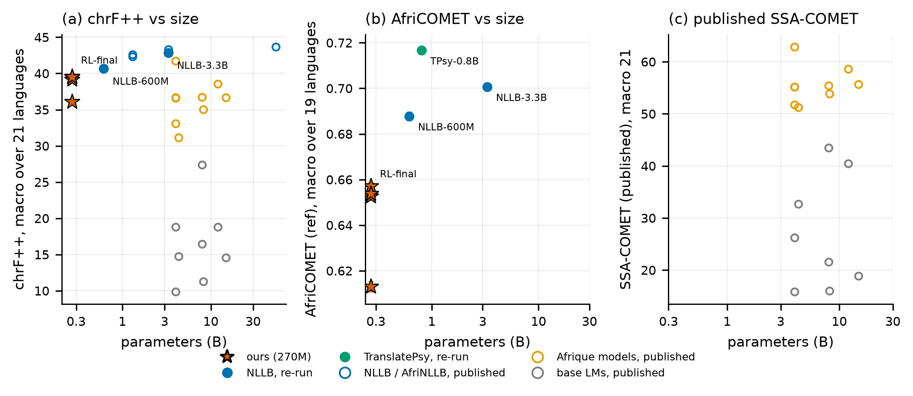
paper/scripts/make_model_comparison.py.Other small and large models. TranslatePsy-AfriSLM-0.8B, which is trained on translations by NLLB-200-3.3B for 19 languages, is clearly better than our model on those languages: chrF++ 45.3 against 41.2 (paired difference +4.1 [+3.9, +4.2]; RL-final is higher in none of the 19 languages on chrF++ and clearly lower, with non-overlapping intervals, in 14; on AfriCOMET it is higher only in Yoruba), AfriCOMET 0.717 against 0.657 (+0.060), and also above NLLB-200-3.3B on AfriCOMET (0.701). The 2B model scores 46.4 against 41.3 for RL-final on the 9 languages it was run for (AfriCOMET 0.716 against 0.638). On the 21 languages of the AfriqueLLM study (4-14B models adapted to African languages), RL-final reaches 39.1 chrF++ on the no_pair rows, against published 31.1-38.6 for the adapted Gemma, Llama and Qwen3 models (AfriqueGemma-4B 31.1, AfriqueQwen-4B 33.1, AfriqueQwen-8B 35.1, AfriqueQwen3.5-4B 36.6, AfriqueLlama-8B and AfriqueQwen-14B 36.7, AfriqueGemma-12B 38.6), 9.9-27.4 for the base models, and 41.7 for the 50-language Qwen3.5-4B variant, which is above us. This is indicative only: the published values are for the whole devtest, with 5-shot prompts through a harness whose split we could not confirm, and our model saw the English side of most of those sentences (a comparison on clean rows is not possible and the earlier one was not like for like, Section 6.2; we claim neither superiority nor inferiority). On SSA-COMET our own re-scoring gives RL-final 52.1 (21 languages), NLLB-200-600M 56.7 and NLLB-200-3.3B 59.3, against the papers' 51.3-62.9 for the adapted Afrique models; since the Afrique paper does not name its SSA-COMET checkpoint, the two columns are not interchangeable.
What RL and the later stages add on identical sentences. RL adds +5.2 chrF++ [+5.1, +5.3] and +0.061 AfriCOMET [+0.060, +0.062] over SFT-final (43 and 42 languages respectively; the 5.4 of Section 6.1 is over all 45). The science-stage start (A2W) and the step-250 checkpoint of the final run lie within +0.1 to +0.4 chrF++ above RL-final (paired intervals exclude zero, e.g. +0.28 [+0.24, +0.32] for step 250 on the 43 languages) and within -0.001 to -0.005 AfriCOMET: they have not left the plateau of Section 6.3. The final checkpoint (step 401) is +0.23 chrF++ [+0.19, +0.27] above RL-final on the 43 languages and on the 45 (+0.23 [+0.19, +0.26]), +0.27 spBLEU [+0.23, +0.32], and below it on both learned metrics: -0.0016 AfriCOMET [-0.0022, -0.0011] over the 42 languages and -0.0017 SSA-COMET [-0.0026, -0.0007] over the 22 that can be scored; against A2W it is +0.12 chrF++ [+0.09, +0.15] and +0.0034 AfriCOMET [+0.0030, +0.0038], against the step-250 checkpoint -0.05 [-0.08, -0.02] and -0.0006 (Table 27, Table 28; on the clean rows all intervals against RL-final include zero). The final run therefore also stayed on the plateau: its differences from RL-final have opposite signs under chrF++ and under the learned metrics and are, in absolute terms, 0.7% of the chrF++ and 0.3% of the AfriCOMET value (Section 6.7 for the other benchmarks and AfriScience-MT).
no_pair rows): macro with 95% sentence-bootstrap intervals. The last row is the final run (final2, step 401). Source: reports/data/model_comparison_computed/macro_with_final2.csv.| checkpoint | chrF++ NLLB-43 | spBLEU NLLB-43 | AfriCOMET 42 lang. | SSA-COMET Afrique-21 (x100) | chrF++ TPsy-19 | chrF++ 45 lang. |
|---|---|---|---|---|---|---|
| SFT-final (step 27638) | 29.48 [29.33, 29.65] | 9.60 [9.45, 9.78] | 0.5590 [0.5576, 0.5603] | 47.64 [47.44, 47.83] | 38.23 [37.96, 38.53] | 28.68 [28.53, 28.84] |
| RL-final (GRPO step 1433) | 34.70 [34.60, 34.79] | 12.79 [12.68, 12.90] | 0.6196 [0.6186, 0.6206] | 52.13 [51.98, 52.29] | 41.21 [41.05, 41.39] | 34.08 [33.99, 34.17] |
| science-stage start (A2W alpha 0.7) | 34.81 [34.72, 34.91] | 13.04 [12.93, 13.15] | 0.6145 [0.6134, 0.6156] | 51.80 [51.63, 51.96] | 41.60 [41.44, 41.78] | 34.17 [34.07, 34.26] |
| live science run (step 250, 2026-10-23) | 34.98 [34.89, 35.07] | 13.09 [12.98, 13.20] | 0.6185 [0.6175, 0.6196] | 52.00 [51.84, 52.17] | 41.63 [41.47, 41.81] | 34.37 [34.28, 34.46] |
| final run (final2 step 401) | 34.93 [34.83, 35.02] | 13.06 [12.95, 13.17] | 0.6179 [0.6169, 0.6189] | 51.97 [51.81, 52.13] | 41.59 [41.43, 41.77] | 34.31 [34.22, 34.40] |
reports/data/model_comparison_computed/paired_vs_with_final2.csv.| final2 minus | chrF++ NLLB-43 | spBLEU NLLB-43 | AfriCOMET 42 lang. | SSA-COMET Afrique-21 (x100) | chrF++ TPsy-19 | chrF++ 45 lang. |
|---|---|---|---|---|---|---|
| RL-final (phase 2c, step 1,433) | +0.23 [+0.19, +0.27] | +0.27 [+0.23, +0.32] | -0.0016 [-0.0022, -0.0011] | -0.17 [-0.26, -0.07] | +0.38 [+0.31, +0.45] | +0.23 [+0.19, +0.26] |
| SFT-final | +5.44 [+5.30, +5.58] | +3.46 [+3.29, +3.60] | +0.0590 [+0.0580, +0.0599] | +4.33 [+4.18, +4.47] | +3.37 [+3.11, +3.59] | +5.63 [+5.49, +5.76] |
| science-stage start A2W alpha 0.7 | +0.12 [+0.09, +0.15] | +0.02 [-0.01, +0.06] | +0.0034 [+0.0030, +0.0038] | +0.17 [+0.10, +0.23] | -0.01 [-0.06, +0.04] | +0.15 [+0.12, +0.17] |
| step-250 checkpoint of the run | -0.05 [-0.08, -0.02] | -0.03 [-0.05, +0.00] | -0.0006 [-0.0010, -0.0002] | -0.04 [-0.10, +0.03] | -0.04 [-0.08, +0.01] | -0.05 [-0.08, -0.03] |
Language coverage of AfriCOMET. AfriCOMET could score 42 of our 45 FLORES+ languages (not Kabuverdianu, Kanuri and Makhuwa), and only 54 of our 77 languages are among the 75 codes its model card lists (the card lists the language set of the underlying encoder; the metric itself was trained on WMT data without African labels, and the human-annotated AfriMTE pairs cover 13 pairs and 11 African languages, 9 of them ours). For languages outside the card every AfriCOMET cell in our tables is "n/a", never imputed. This is the reason the RL reward needed a consensus signal for 23 languages (Section 4.4): no learned African metric covers them.
Language coverage as a claim. We support 77 African target languages in a 270M-parameter model; 44 of them are in FLORES-200 and 33 are not. A survey of 35 systems (Appendix G, Table 92, Figure 11) does not support the claim that this breadth is unique: NLLB-200 supports 55 African languages (NLLB Team et al., 2022); MADLAD-400 lists about 85 African entries among its 419 languages (Kudugunta et al., 2023); TranslateGemma about 60 in its training-language tables (Finkelstein et al., 2026); and Omnilingual MT (Meta, 2026, arXiv 2603.16309, not verified by us) claims over 1,600 source languages. The MADLAD-400 and TranslateGemma counts are our manual tallies of the papers' tables and are unverified (plus or minus 5 for MADLAD-400, which includes variants; Zulu is missing from the extracted TranslateGemma tables although the model is evaluated on it). We therefore make only three narrower statements, each with its condition. (W1) To our knowledge, the open translation model with the widest African target-language coverage below 1 B parameters: 77 languages against 55 for NLLB-200-600M; the survey cannot exclude unlisted community fine-tunes. This is a coverage statement, not a quality statement: on quality our model is below NLLB-200-distilled-600M. (W2) To our knowledge the first open 270M-parameter model fine-tuned with reinforcement learning against an African-language quality estimator, on prompts of up to 2,048 source tokens (Section 2; the literature search is recorded in paper/lit/notes_*.md; the clause on 2,048-token prompts concerns training, not document-translation quality, Section 6.10); the clauses on the open release and the reward are facts about our model, not outputs of the survey TODO(owner: confirm that the weights will be released openly, see Section 13, before the word open is used in W1 and W2). (W3) The model covers 33 African languages that are absent from FLORES-200, 17 of which (Urhobo, Edo, Dagbani, Okpe, Tachelhit, Ghomala, Kaonde, Lunda, Lozi, Makhuwa, Nyankore, Herero, Yao, Sidamo, Esan, Duala, Cameroon Pidgin) we could not find in the language lists of NLLB-200, MADLAD-400 or the TranslateGemma tables; the match is on exact language, and Google Translate, Gemini, Omnilingual MT and Apertus were not checked language by language. We do not claim to be the first or the only system with this breadth.
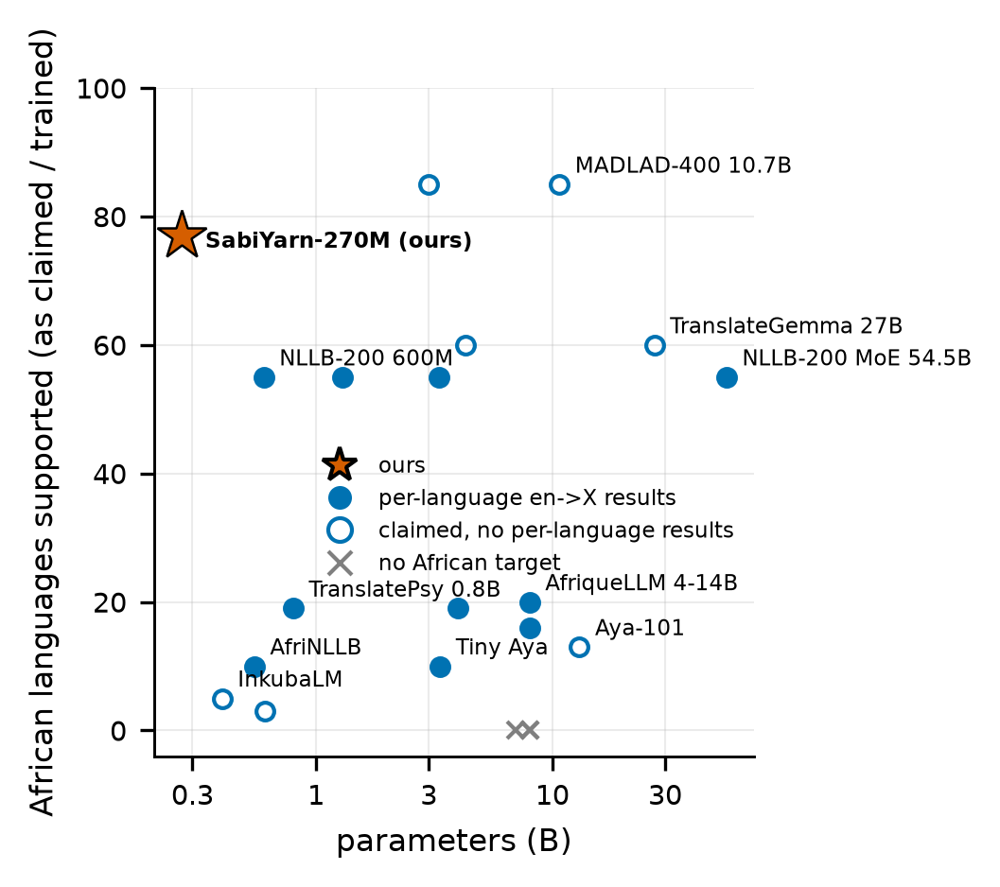
reports/data/language_coverage_claim_check.csv, paper/scripts/make_model_comparison.py.Limits of this comparison. (i) NLLB is run sentence by sentence with beam 4 (CTranslate2, int8 for the 3.3B model), ours greedy; beam 4 gave our own model +0.66 chrF++ on 20 languages in Section 6.5, so part of the gap may be decoding, but we did not re-run either side with the other's decoding. (ii) Our SFT data contain the English side of most FLORES+ sentences and, for seven languages, the reference translation (Section 6.9a); no_pair and clean control for the pair leak and the English-side exposure, and the NLLB and TranslatePsy models were not exposed to our SFT data; we did not check their own training data for overlap with FLORES+ (NLLB-200 used FLORES as its development set (NLLB Team et al., 2022); for TranslatePsy we do not know), so the bias of the comparison in either direction is unknown. (iii) AfriCOMET is a learned metric of limited validity for several of our languages (Section 7.1) and is blind to 23 of the 77; chrF++ and AfriCOMET agree here on the ordering of the systems, which is no proof that either is right. (iv) One checkpoint per system, one decoding setting, no language-sampling noise in the intervals. (v) We did not run the Gemma-3-4B-it, AfriqueGemma-4B and TranslatePsy-4B models.
We have no native-speaker evaluation of our outputs (Section 11). To test the claim that RL improved the model with something other than a macro average of one metric, we compare RL-final with the SFT-final model it started from sentence by sentence on the human-reference benchmarks, under five metrics, and ask how often each metric prefers the RL translation. This measures agreement with human references under automatic metrics; it is not a human evaluation, and we word every result as "preferred by metric X in Y% of sentences". The analysis (agent E1; reports/pairwise_benchmark_comparison_2026-10-23.md; scripts gemma_mt/scripts/pairwise_*.py) uses the hypotheses of both models for all 161,272 English-to-X sentences of the eight benchmarks of Section 6.1 (66 languages with at least 20 no_pair sentences; greedy decoding, 768 tokens; the run reproduces the corpus-level chrF++ of Section 6.1 within 0.01-0.2 per benchmark).
Method. For every sentence and metric the RL output wins if its score exceeds the SFT output's by more than a threshold (1 chrF++ point; 0.01 for the COMET-family metrics, whose scale is about 0-1), loses if it is lower by more than the threshold, and otherwise ties; identical outputs are ties. "RL preferred" is wins divided by wins plus losses. The metrics are sentence-level chrF++ and the learned metrics AfriCOMET-STL-1.1 and SSA-COMET-MTL with the human reference, plus the reference-free QE variants (AfriCOMET-QE, SSA-COMET-MTL without reference). The learned metrics were run on the 51 languages that AfriCOMET covers and have at least 20 no_pair sentences, on every clean row plus at most 400 rows per (benchmark, language): 79,062 sentence pairs per metric. Intervals are paired sentence-bootstrap intervals (1,000 resamples); language-level statements use the bootstrap interval of each language's mean difference; the sign tests of the report are optimistic because several benchmarks translate the same English sentences into every language, and we do not use them.
Which metrics are independent of the reward. RL-final (phase 2c, the model of Sections 6.1-6.6) was trained with AfriCOMET-QE as the only learned metric: the rl2c configuration names masakhane/africomet-qe-stl-1.1 as its sole scorer, and the ensemble that adds SSA-COMET-MTL (decision D-55, 2026-10-21) exists only in the final run and is off by default, so SSA-COMET is not in the reward of RL-final or of any phase before it. Consequently chrF++ against human references and SSA-COMET with reference are independent evidence for the RL-final comparison; AfriCOMET with reference shares its model family (encoder and training data) with the reward model and is not independent in the strict sense, and the QE metrics are the reward model itself or its sibling. The AfriCOMET-QE reward model also appears in the table, as a check on reward hacking.
Headline (Table 29, Figure 12). On the no_pair rows (reference pair not in the SFT text), macro over languages with all benchmarks pooled per language, the mean sentence chrF++ rises from 27.7 to 31.1 (+3.32 [+3.26, +3.38]); RL wins in 54.8% of the sentences, ties in 20.0% and loses in 25.1%, so it is preferred by chrF++ in 63.7% [63.5, 64.0] of the non-tied sentences. With the human references as the anchor, AfriCOMET prefers RL in 70.0% [69.7, 70.4] of the non-tied sentences, SSA-COMET in 70.4% [70.1, 70.7], and the majority of the three reference-based metrics in 70.2% [69.8, 70.5]; the two reference-free metrics give 72.9% (the reward model) and 70.8%. On the clean rows, whose English side the SFT never saw, the shares are 61.6% (chrF++), 69.0%, 69.6% and 68.9% (majority), i.e. 0.6-2.1 points lower than on no_pair, and the macro chrF++ gain is +3.86 [+3.72, +4.00]. The language-level result does not rely on sentence independence: RL has a bootstrap interval of the mean chrF++ difference above zero in 65 of the 66 languages (the exception is Southern Sotho, +0.29 [-0.01, +0.62]) and below zero in none, and on all four learned metrics in all 51 languages they cover (Figure 22, Appendix H). At the level of (benchmark, language) cells with at least 20 sentences, chrF++ is significantly better for RL in 128 of 145 cells, neutral in 16 and significantly worse in one (SALT Luganda, 81 sentences, -2.98 [-5.84, -0.47], where the COMET metrics are flat).
no_pair rows, macro over languages). The neural metrics cover the 51 AfriCOMET-covered languages; the second chrF++ row restricts to the sentences they scored. Ties: difference below 1 chrF++ or 0.01. "Preferred": share of non-tied sentences (micro) with paired-bootstrap interval; "languages clearly better / worse": interval of the language mean above / below zero. Source: reports/data/pairwise_benchmark_comparison/main/macro.csv.| metric | languages | SFT-final | RL-final | difference [95% CI] | RL wins / ties / loses % (macro) | RL preferred % of non-tied sentences [95% CI] | languages RL clearly better / worse | clean subset: RL preferred % [95% CI] |
|---|---|---|---|---|---|---|---|---|
| chrF++ (all rows) | 66 | 27.74 | 31.06 | +3.32 [+3.26, +3.38] | 54.8 / 20.0 / 25.1 | 63.7 [63.5, 64.0] | 65 / 0 | 61.6 [61.1, 62.1] |
| chrF++ (rows scored by the neural metrics) | 51 | 29.54 | 32.75 | +3.21 [+3.13, +3.28] | 54.2 / 19.1 / 26.7 | 62.1 [61.8, 62.5] | 50 / 0 | 60.7 [60.2, 61.2] |
| AfriCOMET, reference-based | 51 | 0.530 | 0.589 | +0.059 [+0.058, +0.060] | 64.1 / 12.4 / 23.5 | 70.0 [69.7, 70.4] | 51 / 0 | 69.0 [68.6, 69.4] |
| SSA-COMET-MTL, reference-based | 51 | 0.415 | 0.474 | +0.059 [+0.058, +0.060] | 64.2 / 12.0 / 23.8 | 70.4 [70.1, 70.7] | 51 / 0 | 69.6 [69.2, 70.0] |
| majority of the three reference-based metrics | 51 | 66.4 / 10.4 / 23.2 | 70.2 [69.8, 70.5] | 68.9 [68.5, 69.3] | ||||
| AfriCOMET-QE (the RL reward model) | 51 | 0.478 | 0.547 | +0.069 [+0.068, +0.070] | 67.2 / 11.3 / 21.5 | 72.9 [72.6, 73.2] | 51 / 0 | 71.7 [71.3, 72.2] |
| SSA-COMET-MTL, reference-free | 51 | 0.425 | 0.494 | +0.069 [+0.068, +0.070] | 65.3 / 10.8 / 23.9 | 70.8 [70.4, 71.1] | 51 / 0 | 70.0 [69.6, 70.4] |
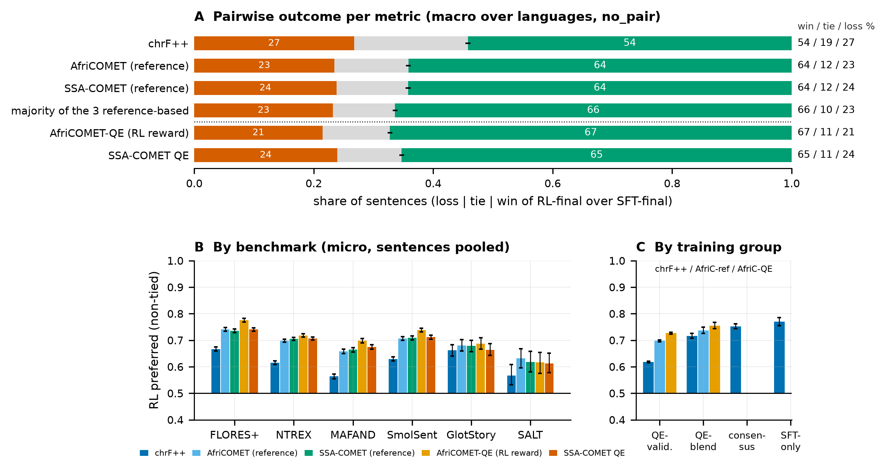
no_pair). (B) Share of non-tied sentences in which RL is preferred, per benchmark (sentences pooled). (C) The same per reward group (chrF++, AfriCOMET with reference, AfriCOMET-QE; consensus-only languages have no learned metric). Source: paper/scripts of agent E1, gemma_mt/scripts/pairwise_fig_wtl.py.Every group, benchmark and tier. The preference is above 50% in every benchmark, reward group, language family and resource tier on every metric (Table 30, Table 31; the lowest share is 52% by chrF++ for the Indo-European and Austronesian languages, Afrikaans and Malagasy). It is largest for the weakest languages (weak tier: +4.7 chrF++, preferred 71% by chrF++ and 77% by AfriCOMET with reference; the 13 consensus-only languages, for which no learned metric exists, 75% by chrF++), and smallest on the benchmarks nearest to the training domain (MAFAND-MT +1.9 chrF++, 57%; SALT +1.5, 59%) and for the languages that SFT already handled best (Malagasy +0.29, Southern Sotho +0.29, Luganda +0.41).
no_pair rows): macro difference (RL minus SFT) and the share of non-tied sentences in which RL is preferred, per metric. The neural metrics cover only the AfriCOMET-covered languages (IbomMT: one language).| benchmark (no_pair rows) | languages | chrF++: delta; RL preferred | AfriCOMET-ref | SSA-COMET-ref | AfriCOMET-QE | SSA-COMET QE |
|---|---|---|---|---|---|---|
| FLORES+ devtest | 45 | +3.19; 68% | +0.062; 74% | +0.061; 74% | +0.073; 78% | +0.070; 74% |
| NTREX-128 | 24 | +2.19; 62% | +0.053; 70% | +0.050; 71% | +0.056; 72% | +0.057; 71% |
| MAFAND-MT | 15 | +1.88; 57% | +0.039; 66% | +0.042; 66% | +0.041; 70% | +0.047; 68% |
| SmolSent | 45 | +2.47; 63% | +0.054; 71% | +0.054; 71% | +0.064; 74% | +0.063; 71% |
| IbomMT | 2 | +7.28; 87% | +0.084; 78% | +0.179; 87% | +0.098; 77% | +0.185; 86% |
| FLORES-MOZ | 1 | +2.91; 71% | ||||
| SALT | 5 | +1.53; 59% | +0.019; 63% | +0.024; 62% | +0.020; 62% | +0.030; 61% |
| GlotStoryBook | 8 | +3.92; 69% | +0.043; 68% | +0.048; 68% | +0.049; 69% | +0.054; 66% |
no_pair, all benchmarks pooled): macro difference and the share of non-tied sentences in which RL is preferred. Consensus-only and SFT-only languages have no learned metric (sft_only: the two zero-shot targets without SFT data).| scope (no_pair rows, all benchmarks) | languages | chrF++: delta; RL preferred | AfriCOMET-ref | SSA-COMET-ref |
|---|---|---|---|---|
| all langs | 66 | +3.32; 64% | +0.059; 70% | +0.059; 70% |
| group:qe validated | 42 | +2.96; 62% | +0.059; 70% | +0.060; 70% |
| group:blend | 9 | +3.91; 72% | +0.058; 74% | +0.056; 73% |
| group:consensus only | 13 | +3.84; 75% | no metric | no metric |
| group:sft only | 2 | +4.82; 77% | no metric | no metric |
| family:Afroasiatic | 7 | +1.77; 62% | +0.068; 73% | +0.056; 72% |
| family:Atlantic-Congo (non-Bantu) | 13 | +4.30; 68% | +0.070; 74% | +0.071; 76% |
| family:Bantu | 35 | +2.91; 61% | +0.051; 67% | +0.054; 67% |
| family:Creole / Pidgin | 3 | +4.13; 70% | +0.017; 73% | +0.007; 65% |
| family:Mande | 2 | +4.66; 85% | +0.083; 86% | +0.079; 89% |
| family:Nilo-Saharan | 4 | +6.53; 81% | +0.121; 83% | +0.116; 84% |
| script:Ge'ez (amh, tir) | 2 | +1.74; 63% | +0.100; 77% | +0.070; 74% |
| tier:strong | 5 | +1.84; 58% | +0.033; 65% | +0.034; 66% |
| tier:medium | 5 | +2.08; 59% | +0.045; 70% | +0.053; 71% |
| tier:weak | 10 | +4.72; 71% | +0.097; 77% | +0.081; 76% |
Is the reward model being gamed? A policy that had learned to please AfriCOMET-QE would show a QE preference far above the reference-based ones. It does not: the QE metric prefers RL in 72.9% of the sentences against 70.0% for AfriCOMET with reference and 70.4% for the independent SSA-COMET with reference (a gap of 2.9 and 2.5 points). Of the 38,604 sentences on which RL wins on both QE metrics, the majority of the three reference-based metrics agrees in 89.7%, is neutral in 5.0% and prefers SFT in 5.3% (Figure 13B). Southern Sotho is the only language (all benchmarks pooled) that wins on both QE and both reference-based COMET metrics but is flat on chrF++; at the (benchmark, language) level 20 of 127 cells show a QE gain without a reference-based gain, and in 19 of them chrF++ is flat while AfriCOMET with reference is up; these are the high-resource Bantu, Sotho-Tswana, Malagasy, Afrikaans and Hausa languages, where chrF++ resolves less than a point. SALT Luganda is the one cell in which the QE gain is not supported by a reference-based metric (chrF++ -2.98; the COMET metrics are flat), one weak signal in 127 cells that a human check would settle. This is reassuring, not a proof of the absence of reward hacking.
How well do the metrics agree? Only moderately at sentence level (Table 32, Figure 13A): chrF++ and the learned metrics pick the same winner in 64-73% of the sentences where both call one (Cohen's kappa 0.17-0.28 over three classes), most with the reference-based COMET metrics (73% and 71%) and least with the QE metrics (64% and 66%); the two AfriCOMET variants agree in 87%, the two SSA-COMET variants in 95%, the two model families in 79-82%. Since the metrics are only weakly related sentence by sentence, the pooled preference of each is the meaningful quantity, and the fact that all five metrics, with different error sources (surface overlap, two learned models, with and without reference), give 62-73% is the central evidence.
no_pair, sentences scored by all learned metrics; pairs of metrics; sentences on which both call a winner).| pair of metrics | sentences both call a winner | same winner % | Cohen kappa (3 classes) | Spearman of the deltas |
|---|---|---|---|---|
| chrF++ vs AfriC-ref | 54853 | 72.7 | 0.28 | 0.50 |
| chrF++ vs AfriC-QE | 55152 | 64.1 | 0.17 | 0.32 |
| chrF++ vs SSA-ref | 54668 | 70.6 | 0.25 | 0.44 |
| chrF++ vs SSA-QE | 55248 | 65.5 | 0.19 | 0.35 |
| AfriC-ref vs AfriC-QE | 60395 | 87.0 | 0.51 | 0.79 |
| AfriC-ref vs SSA-ref | 59554 | 82.1 | 0.43 | 0.67 |
| AfriC-ref vs SSA-QE | 60215 | 79.0 | 0.39 | 0.61 |
| AfriC-QE vs SSA-ref | 59957 | 81.2 | 0.41 | 0.64 |
| AfriC-QE vs SSA-QE | 60747 | 80.9 | 0.41 | 0.65 |
| SSA-ref vs SSA-QE | 61660 | 94.9 | 0.69 | 0.92 |
Part of the gain is the removal of loops, which is a real quality difference. SFT does not finish 11.4% of its sentences within the budget (macro 88.6% finished) and loops in 13.0% (RL: 99.7% finished, 1.0%); its mean output is 1.51 times as long as the reference (RL 1.15). Removing every sentence on which either model loops or does not finish (8.5% of the rows), the chrF++ difference halves (+3.32 to +1.67; AfriCOMET with reference +0.059 to +0.039; SSA-COMET +0.059 to +0.048), but the preference hardly moves: RL is still preferred in 60.0% of the non-tied sentences by chrF++, 67.7% by AfriCOMET with reference and 68.6% by SSA-COMET with reference (Table 33). A translation that does not stop is worse than one that does, so the loops are part of what RL improved (Sections 6.1 and 8.2), but the improvement does not depend on them.
no_pair, macro over languages for the difference, micro for the shares): all rows, rows on which neither model loops or fails to finish, and additionally both length ratios in [0.5, 2].| sentences | metric | n | macro delta | RL wins / ties / loses % | RL preferred % |
|---|---|---|---|---|---|
| all rows | chrF++ (all rows) | 153220 | +3.32 | 50.7 / 20.4 / 28.9 | 63.7 |
| all rows | AfriCOMET, reference-based | 76804 | +0.0591 | 60.4 / 13.8 / 25.8 | 70.0 |
| all rows | SSA-COMET-MTL, reference-based | 76804 | +0.0591 | 60.6 / 14.0 / 25.5 | 70.4 |
| all rows | AfriCOMET-QE (the RL reward model) | 76804 | +0.0692 | 63.5 / 13.0 / 23.6 | 72.9 |
| all rows | SSA-COMET-MTL, reference-free | 76804 | +0.0687 | 61.7 / 12.8 / 25.5 | 70.8 |
| neither model loops / unfinished | chrF++ (all rows) | 140204 | +1.67 | 47.1 / 21.4 / 31.5 | 60.0 |
| neither model loops / unfinished | AfriCOMET, reference-based | 71794 | +0.0387 | 57.7 / 14.7 / 27.6 | 67.7 |
| neither model loops / unfinished | SSA-COMET-MTL, reference-based | 71794 | +0.0478 | 58.4 / 14.8 / 26.8 | 68.6 |
| neither model loops / unfinished | AfriCOMET-QE (the RL reward model) | 71794 | +0.048 | 61.0 / 13.8 / 25.1 | 70.8 |
| neither model loops / unfinished | SSA-COMET-MTL, reference-free | 71794 | +0.0527 | 59.3 / 13.6 / 27.1 | 68.7 |
| neither loops, both length ratio in [0.5, 2] | chrF++ (all rows) | 136993 | +1.54 | 46.9 / 21.4 / 31.7 | 59.6 |
| neither loops, both length ratio in [0.5, 2] | AfriCOMET, reference-based | 70207 | +0.0377 | 57.5 / 14.8 / 27.7 | 67.5 |
| neither loops, both length ratio in [0.5, 2] | SSA-COMET-MTL, reference-based | 70207 | +0.0467 | 58.1 / 14.9 / 27.0 | 68.3 |
| neither loops, both length ratio in [0.5, 2] | AfriCOMET-QE (the RL reward model) | 70207 | +0.0472 | 60.9 / 13.9 / 25.2 | 70.7 |
| neither loops, both length ratio in [0.5, 2] | SSA-COMET-MTL, reference-free | 70207 | +0.0515 | 59.1 / 13.7 / 27.2 | 68.4 |
Long inputs. Using the sentence-by-sentence translations of the AfriLongDoc documents by both models (the setting in which long documents work, Section 6.4; 8 languages for the NLLB-referenced documents, 4,282 clean documents; the SFT model was run on that subset only), RL is preferred by chrF++ in 63-84% of the non-tied documents from 64 to 1,024 source tokens (79-80% at 2,048 and 4,096) and in 79-100% of the SmolDoc documents with human references (80 documents at about 1,024 tokens; 5 at about 2,048 tokens, a single language) (Table 34). The SFT model still fails to stop inside documents (finished 93% at b64 down to 13% at b4096, against 99% down to 82% for RL), which makes whole-document scores an unfair comparison for it, so the per-sentence rows inside the documents are the cleaner evidence: there RL is preferred in 60-65% of the non-tied sentences by chrF++, 67-71% by AfriCOMET with reference and 66-70% by SSA-COMET with reference, flat across lengths, with human and NLLB-pseudo references alike (Table 35, Figure 13C). The NLLB-referenced rows reward NLLB-likeness (Section 6.4); the human-reference rows agree with them.
| documents (clean, sentence-by-sentence decoding) | languages | documents | chrF++ delta | RL preferred % (chrF++) | finished %: SFT / RL | with a loop %: SFT / RL |
|---|---|---|---|---|---|---|
| NLLB-ref b64 | 8 | 584 | +3.41 | 63 | 93 / 99 | 8 / 1 |
| NLLB-ref b256 | 8 | 720 | +3.23 | 71 | 72 / 98 | 29 / 3 |
| NLLB-ref b512 | 8 | 800 | +2.26 | 75 | 48 / 94 | 55 / 21 |
| NLLB-ref b1024 | 8 | 712 | +2.31 | 84 | 39 / 92 | 62 / 32 |
| NLLB-ref b2048 | 8 | 504 | +2.07 | 80 | 24 / 86 | 78 / 43 |
| NLLB-ref b4096 | 8 | 280 | +2.33 | 79 | 13 / 82 | 88 / 60 |
| human, short | 6 | 360 | +2.64 | 80 | 84 / 98 | 16 / 2 |
| human, stitched ~512 | 6 | 224 | +2.05 | 79 | 76 / 97 | 24 / 4 |
| human, stitched ~1024 | 4 | 80 | +3.70 | 100 | 54 / 96 | 46 / 4 |
| human, stitched ~2048 | 1 | 5 | +1.24 | 100 | 40 / 100 | 60 / 0 |
| aligned sentences inside the documents | sentences (chrF++) | chrF++: delta; RL preferred | AfriCOMET-ref | SSA-COMET-ref |
|---|---|---|---|---|
| NLLB-ref b64 | 960 | +3.51; 62% | +0.053; 68% | +0.050; 70% |
| NLLB-ref b256 | 4304 | +3.65; 62% | +0.052; 67% | +0.049; 69% |
| NLLB-ref b512 | 16264 | +2.93; 61% | +0.049; 67% | +0.050; 69% |
| NLLB-ref b1024 | 29408 | +3.12; 60% | +0.049; 67% | +0.049; 68% |
| human, short | 4273 | +3.01; 61% | +0.046; 68% | +0.042; 66% |
| human, stitched ~512 | 5000 | +2.42; 60% | +0.043; 69% | +0.040; 67% |
| human, stitched ~1024 | 4259 | +3.08; 65% | +0.047; 71% | +0.043; 69% |
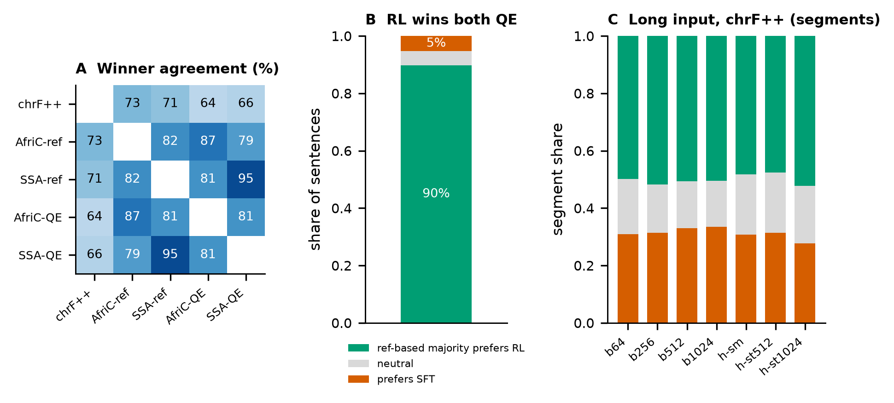
gemma_mt/scripts/pairwise_fig_agreement.py.Sensitivity. The preference is stable under the tie threshold: 62-72% for chrF++ with thresholds of 0 to 5 points and 68-80% for the learned metrics with thresholds of 0 to 0.05 (with no ties, RL wins 60.3%, 66.0% and 66.3% of all sentences by chrF++, AfriCOMET and SSA-COMET with reference), and for the decoding budget: on FLORES+ at 320 instead of 768 new tokens the chrF++ difference is +2.91 [+2.83, +2.98] against +3.19 [+3.11, +3.27] and RL is preferred in 67.4% against 67.6% of the non-tied sentences (the size of the difference depends on the budget, the preference does not).
What this does and does not show. (i) These are metric preferences: chrF++ and the learned metrics agree on a sentence's winner in only 64-73% of the cases and the learned metrics were validated by their authors on a subset of our languages, with one reference; a rater study could still differ. (ii) AfriCOMET with reference is not independent of the reward; chrF++ and SSA-COMET with reference are, and they point the same way. (iii) FLORES+ and NTREX-128 are public and the SFT text held the English side of 95% of the FLORES+ sentences and, for seven languages, the reference translation itself (Section 6.9a); the no_pair subset controls for the pair leak only, the clean subset (48 sentences per language) for both, and the preference is similar on both (63.7% and 61.6%), so the conclusion does not change, but the levels do. (iv) The benchmarks are news, encyclopaedic and children's-story text, while the training data are religious and pivot-translated; the smallest gains are where the domains are closest, and nothing here tests user text, science or dialogue. (v) Greedy decoding only; one reference per sentence; equal weight per language; the learned metrics were run on a sample (all clean rows and at most 400 rows per benchmark and language). (vi) Only the step from SFT-final to RL-final (phases 1 to 2c) is compared this way with the learned metrics; the science-stage checkpoints were not, and the final run's checkpoint was compared with RL-final by chrF++ on four benchmarks and with the learned reference-based metrics on NTREX-128, MAFAND-MT, SmolSent and FLORES+ (Section 6.7, Appendix H), not on SALT, GlotStoryBook, IbomMT or FLORES-MOZ.
Leakage audit of the RL prompts. The pairwise comparison and the clean subset control for leakage into the SFT text (the models saw the English side of 95% of the FLORES+ devtest sentences, 91% of SmolSent, 84% of SALT, 40% of NTREX-128, 22% of MAFAND-MT and 7% of GlotStoryBook, by the contamination study of Section 3.6). The RL prompt pools had not been audited, so we did that for this paper (CPU only, gemma_mt/scripts/p3_rl_leakage_audit.py, result reports/data/rl_leakage_audit_2026-10-23.json): the English side of every benchmark row (23,042 distinct sentences, 161,272 rows) against the English windows of the 77 sentence-level and document-level RL pools (5,940,000 prompt windows, drawn from FineWeb-Edu and Wikipedia text) and of the 77 science pools of the final run (137,172 windows), with the definitions and normalisation of the SFT contamination study (NFKC, case-folding, 8-token n-grams). Exact overlap is rare: 0.69% of the FLORES+ sentences (7 of 1,012; the same sentences back IbomMT and FLORES-MOZ), 0.45% of NTREX-128 (9 of 1,993), 0.46% of MAFAND-MT (81 of 17,737 distinct sentences), 0.23% of SmolSent (2 of 863), 0.2% of SALT (1 of 500) and 1.7% of GlotStoryBook (16 of 937) occur in some RL prompt of some language; at least one 8-gram is shared by 4.8% of the FLORES+ sentences and 1-2% of the others. In the pool of the same language as the test row, which is the prompt set that language was trained on, the exact overlap is at most 0.16% of the rows of any benchmark (MAFAND-MT: 31 of 20,008 rows; 0.04-0.10% on the no_pair rows: FLORES+ 0.04%, NTREX-128 0.07%, MAFAND-MT 0.09%, SmolSent 0.08%, GlotStoryBook 0.09%, SALT none). On the clean rows (English side not in the SFT text) it is 0 of 2,160 FLORES+ rows and 0 of 3,420 SmolSent rows, 48 of 28,824 NTREX-128 rows (0.17%), 12 of 15,633 MAFAND-MT rows (0.08%) and 49 of 3,179 GlotStoryBook rows (1.5%). The science pools of the final run add at most 0.2% on any benchmark. Hence the RL stage trained on the English side of the test sentences about two orders of magnitude less often than the SFT did. The reward scores a completion without a reference translation, but its thresholds were fitted on human references: shaping anchors, length and omission windows, diacritic windows, word-ratio and language-identification thresholds on FLORES+ dev and MAFAND dev; for Efik on the IbomMT test set (997 of its 1,012 sentences), which Section 6.1 reports. The final run's anchors were also fitted on the test splits of NTREX-128, SmolSent, SALT, GlotStoryBook, IbomMT and FLORES-MOZ, its long-document limits on SmolDoc and the AfriLongDoc core references, and the five languages with an NLLB signal were chosen by FLORES+ devtest chrF++ gaps. No translation text reached the policy through these, but results on those sets for the final run, and the Efik IbomMT result for RL-final, are not independent tests (Section 6.9a). An exact English overlap of an RL prompt does not hand the policy a translation, which makes prompt overlap a much weaker concern than the parallel leakage of SFT (the pair itself was in the SFT text for 4.1% of the FLORES+ rows, hence the no_pair subset). And exact and 8-gram matching misses paraphrases and translations of the same source, and the same English text may enter through the learned reward models' own training data (AfriMTE and SSA-MTE are news-domain; we did not audit them). We therefore treat RL-stage leakage as small but not excluded, and the SFT-stage leakage, shared by both models of the comparison, as the one that matters; it is the reason for the no_pair and clean subsets and for the finding that the preference is slightly lower, not higher, on clean rows by chrF++ (61.6% against 63.7%).
The same comparison for the final checkpoint (added 2026-10-24). The final checkpoint (final2, step 401) was compared with RL-final in the same way on NTREX-128, MAFAND-MT, SmolSent and FLORES+ with chrF++, AfriCOMET with reference and SSA-COMET with reference (Table 18 in Section 6.7; per language in Appendix H). The result is the opposite of the SFT-to-RL result in size and, for the learned metrics, in direction: final2 is preferred in 52.4% [52.0, 52.8] of the non-tied sentences by chrF++ and in 47.5% [47.1, 47.8] and 47.6% [47.1, 48.2] by AfriCOMET and SSA-COMET with reference (RL over SFT: 63.7% and about 70%), and the mean learned-metric difference is -0.003, on scales on which RL gained +0.059 over SFT (AfriCOMET and SSA-COMET with reference, macro over 51 languages). We read this as "level"; the two kinds of metric disagree on the sign of a very small difference.
What this section is. Sections 6.1-6.9 and 6.12 report results on public test sets, and what those numbers mean depends on how much of that text our pipeline had seen. A contamination audit (2026-10-26) traced it. It keeps three roles of an evaluation text apart: training signal (the text enters a loss through the SFT text, the RL prompts, the thresholds that the reward is fitted on, or a start model), selection or monitoring signal (it decides a checkpoint, a mixture, an interpolation weight, a set of languages or a stopping point) and reported evaluation. Every statement carries an evidence label: VERIFIED (read from a scan output, configuration, script or the Hub), REPORTED (stated in an earlier report, not re-checkable now) or UNKNOWN (no file settles it; the file that would is named in the audit). The audit used the flag files of the scan of the SFT text of 2026-10-18/19 (clean, no_pair and pair flags for 11,442,172 windows), a re-scan with the same scanner of a random sample of 87,498 SFT windows, the RL leakage audit of Section 6.9, and the configurations, calibration files and scripts of the runs; it stored counts and ids, no benchmark text (reports/benchmark_contamination_audit_2026-10-26.md, data in reports/data/contamination_audit_2026-10-26/, scripts gemma_mt/scripts/contam_audit_*.py). It changed several statements of earlier drafts of this paper (ledger Part V).
paper/scripts/make_exposure.py). Bold: the places where a test split was calibration material or was left out of a hold-out. VERIFIED / UNKNOWN as in the audit.| stage | what entered | size and evidence |
|---|---|---|
| SFT text (training signal) | English side of FLORES+ devtest and dev; for some languages the FLORES+ translation itself; MAFAND-MT, SALT and SmolSent pairs inside aggregated collections; the SSA-MTE train split. | FLORES+ devtest English 95.3% (964 of 1,012 sentences), dev 98.7% (984 of 997); the devtest translation itself in at least one language for 933 of 1,012 sentences (Hausa 842 = 83%, Igbo 559 = 55%, Yoruba 355 = 35%, Zulu 36, Tswana 30, Oromo 24, Luganda 2). Other sets: SmolSent English 91.2%, SALT 84.4%, NTREX-128 39.9%, MAFAND-MT 21.9%, GlotStoryBook 7.2%. VERIFIED (flag files). Mechanism, from a random sample of 87,498 SFT windows: 24 windows carry a FLORES+ sentence, 16 of them Luganda windows whose Luganda side is an independent translation; the others Igbo, Yoruba, Hausa and Zulu windows, some with the FLORES+ translation. Source named: African-Languages-Lab/multi-open, as repackaged in |
| RL prompts (training signal) | English windows of FineWeb-Edu and Wikipedia; no target text. | 7 of 1,012 FLORES+ devtest sentences (0.69%) occur in a prompt pool of some language; 21 of 45,540 rows (0.05%) in the pool of the row's own language; 0 of 2,160 clean rows. No devtest text as a target. VERIFIED (rl_leakage_audit_2026-10-23.json). |
| Reward calibration of RL-final | Thresholds fitted on human references: FLORES+ dev (997 sentences per language), MAFAND dev (Pidgin); for Efik the IbomMT test set. | Efik: shaping anchors, length, omission and diacritic windows and lexical block fitted on 997 of the 1,012 IbomMT test sentences, the set of Section 6.1. All other languages: dev only. VERIFIED (calibration file, calibration script, D-30, D-31). |
| Reward calibration of the final run (final2) | As RL-final, plus constraint anchors, the QE-ensemble anchors, long-document limits, and the choice of the NLLB-signal languages. | Anchors fitted also on the test splits of NTREX-128, SmolSent, SALT, GlotStoryBook, IbomMT and FLORES-MOZ; long-document limits on the SmolDoc human references and the NLLB-3.3B references of the AfriLongDoc core set (the evaluation documents of Section 6.10); the five NLLB-signal languages (kea, kbp, nus, bam, kab) chosen with FLORES+ devtest chrF++ gaps. Efik as in RL-final. VERIFIED (scripts, configuration, reports). |
| Science stage (training signal) | Replay of original SFT windows (65% of mix_v1, 43% of A2W by tokens). | The hold-out removed AfriScience dev and test, AfriLongDoc, the clean general dev set and FLORES+ dev English; it omitted FLORES+ devtest, NTREX-128, MAFAND-MT test, SmolSent, SALT and GlotStoryBook. Estimated effect: 0.4-0.6% of the roughly 8,300 FLORES+-carrying windows, a handful (an estimate from the sample). VERIFIED in the code. |
| Selection and monitoring | Development material; devtest only in four informal uses. | The 760-sentence dev set is 40 rows per language of a file of 10,043 rows (1,190 FLORES+ dev, 8,853 MAFAND dev; 0 devtest). alpha, mixture and stopping: AfriScience dev, general dev, weak-language dev (FLORES+ dev). RL-final is the last step (1,433; dev chrF++ 41.883), not the dev-best (step 986; 41.977). Devtest informed the NLLB-language rule, the decoding study, informal draw-weight increases and the choice of headline model; how the 17 weakest languages were chosen for the x2.5 weight is UNKNOWN. VERIFIED / UNKNOWN as marked. |
| Judge validation (a check of the judge, not of our models) | SSA-MTE train and AfriMTE-WMT2024 segments of other systems' output. | The SSA-MTE train split (English source with the human reference) is in the SFT text (19 sample windows). The English of AfriMTE-WMT2024 is 100% FLORES+ devtest (1,916 sentences, nine pairs). VERIFIED. |
Eight benchmarks, five English texts. FLORES+ devtest, IbomMT and FLORES-MOZ are translations of the same 1,012 English sentences and have identical exposure (95.3% seen, 4.7% never seen), so the eight test sets rest on five independent English texts: FLORES+, NTREX-128, MAFAND-MT, SmolSent (with SmolDoc) and SALT (with GlotStoryBook). Agreement among the three FLORES-derived sets is not independent confirmation, and the tables below list them separately only because they have different languages and references.
clean": English never seen. RL prompts: exact overlap of the English sentence with a prompt of any language's pool (distinct sentences) and with the pool of the row's own language (rows; MAFAND-MT 31 of 20,008). Source: reports/data/contamination_audit_2026-10-26/flag_summary_by_benchmark.csv, reports/data/rl_leakage_audit_2026-10-23.json.| benchmark | rows | English in SFT | pair in SFT | clean rows |
languages with the pair in SFT | English in an RL prompt (any language / own language) | test split used in reward fitting or selection |
|---|---|---|---|---|---|---|---|
| FLORES+ devtest | 45,540 | 95.3% | 4.1% | 4.7% | hau 83%, ibo 55%, yor 35% (7 languages) | 0.69% / 0.05% | devtest gaps chose the 5 NLLB languages (final run) |
| NTREX-128 | 47,928 | 39.9% | 1.2% | 60.1% | hau 21%, yor 7% | 0.45% / 0.08% | final run: anchors |
| MAFAND-MT test | 20,009 | 21.9% | 15.5% | 78.1% | ibo 90%, yor 48% (8 languages) | 0.46% / 0.16% | no (MAFAND dev: Pidgin, monitoring) |
| SmolSent | 38,832 | 91.2% | 5.5% | 8.8% | wol 73%, bam 65%, ewe 61% | 0.23% / 0.08% | final run: anchors |
| GlotStoryBook | 3,426 | 7.2% | 0.0% | 92.8% | none | 1.7% / 0.09% | final run: anchors |
| SALT test | 2,500 | 84.4% | 16.8% | 15.6% | lug 84% | 0.2% / 0.0% | final run: anchors |
| IbomMT test | 2,024 | 95.3% | 0.0% | 4.7% | none | 0.69% / 0.10% | RL-final and final run: Efik thresholds (997 of 1,012); final run: anchors |
| FLORES-MOZ | 1,012 | 95.3% | 0.0% | 4.7% | none | 0.69% / 0.0% | final run: anchors |
The SFT text: yes, and in more than one way. The flags say that the English side of 964 of the 1,012 FLORES+ devtest sentences (95.3%; 984 of 997, 98.7%, of dev) occurs in the SFT text, and that the FLORES+ translation itself occurs in the text of its own language for 933 of the 1,012 sentences in at least one of seven languages (Hausa 842 sentences, 83%; Igbo 559, 55%; Yoruba 355, 35%; Zulu 36, Tswana 30, Oromo 24, Luganda 2). The scan sees only exact copies after normalisation, so these are lower bounds. The exposure is not article-specific: the 48 never-seen sentences lie in 44 of the 281 articles, and the exposure is 96.8% for wikinews, 93.4% for wikibooks and 95.6% for wikivoyage sentences, so the text holds FLORES+ sentence by sentence, from all three domains. MAFAND-MT test pairs are in the text for Igbo (90%) and Yoruba (48%), SALT test pairs for Luganda (84%), SmolSent pairs for Wolof (73%), Bambara (65%) and Ewe (61%), and the SSA-MTE train split (English source with the human reference) is in it as well.
Why 95% of the English side but only 4% of the pairs (as far as it is known). The packed SFT windows and the table that records the source repository of every pair were not backed up, so the audit re-scanned a random sample of 87,498 original windows (780 to 2,611 per language, kept in a replay pool). Twenty-four of them carry exactly one FLORES+ sentence: 16 Luganda windows, whose Luganda side is an independent translation (chrF++ 21-60 against the FLORES+ Luganda reference, so no Luganda pair), 4 Yoruba, 2 Igbo, 1 Hausa and 1 Zulu windows, four of which carry the FLORES+ human translation of that language. The English side thus entered through the union of several language streams, and a row of language X counts as pair only when X's own FLORES+ translation is in an X window, whereas its English counts as seen when any language's window carries it; this is the mechanism behind 95.3% English and 4.1% pairs. Scaled by each language's share of windows in the sample, the 24 windows stand for about 8,300 windows of the full text, with very wide intervals (Luganda about 900 [510, 1,450]; the others 150 to 4,300 with intervals that span an order of magnitude); this is a sample-based estimate. One carrier is named (VERIFIED by streaming): African-Languages-Lab/multi-open, as repackaged in UBC-NLP/AfroLingu-MT, the opus100 part of sft-new, the Inkuba Hausa files, six Luganda corpora). The carriers of the Luganda, Hausa, Yoruba and most Igbo rows, and of the MAFAND-MT, NTREX-128 and SALT pairs, are UNKNOWN: they must be among private repositories of the owner's older Hub accounts, which return 404, and the pair pattern (Hausa, Igbo, Yoruba) matches the language mix of aggregated Nigerian-language translation collections, but that is circumstantial. The file that would settle it (pairs_final with its source_dataset column, or the windows) is not on the laptop or in the Hub backups.
RL prompts: no devtest text as a prompt or target. 7 of the 1,012 FLORES+ devtest sentences (0.69%) occur as an exact sentence in some RL prompt of some language, 21 of 45,540 rows (0.05%) in the pool of the row's own language, and 0 of the 2,160 clean rows; the prompts carry no target text (Section 6.9). Paraphrases and the reward models' own training data (AfriMTE, SSA-MTE) were not audited, and, as reported in the decision log, the pools were not decontaminated against the benchmarks when they were built (REPORTED).
The reward: thresholds fitted on human references, and five places where a test split entered. The reward scores a completion without a reference translation, but it has thresholds and statistics fitted on human references (Section 4.3). Most of them come from FLORES+ dev (997 sentences per language) and MAFAND dev (Pidgin), which are disjoint from FLORES+ devtest (0 of 30,418 dev rows have their English in devtest). The following are not dev-only, and we state them without softening:
calibration/shaping_flores_dev_v7.json, entry efi; AUC 0.731). No translation text reaches the policy, but the Efik reward geometry was fitted on the references of the Efik result in Section 6.1 (SFT 18.5 to RL 31.2 chrF++) and of the IbomMT macro (+11.04). The same Efik entry is in the final run. We have no re-run with Efik calibrated elsewhere (for example on pooled priors), so the size of the effect is unknown; Ibibio, for which nothing was fitted on IbomMT, gains +9.4 against +12.7 for Efik, but the two languages differ in data and reward group and this is not a test.Selection and monitoring: development sets only. The 760-sentence dev set that monitored training is 40 rows per language of a 10,043-row file (1,190 FLORES+ dev and 8,853 MAFAND dev rows, no devtest; which of the two sources the 40 come from is UNKNOWN). The headline RL-final is the last step (1,433), not the dev-best (step 986: 41.977 against 41.883 for the last step, a flat curve between 41.567 and 41.977), so selection by dev played no role for it; the interpolation weight, the mixture and the stopping rule of the final run used AfriScience dev, the general dev set and the weak-language dev set (FLORES+ dev, 60 sentences per language). FLORES+ devtest informed four decisions that do not change RL-final: the NLLB-language rule above, the decoding study (Section 6.5), informal increases of the draw weights of weak languages for the final run (a bet, not a measured effect), and the choice of RL-final over the final run as the headline model. How "the 17 weakest languages x2.5" of phases 1-2c were chosen is UNKNOWN (the launch note is missing); if they were read off a devtest report, it is one more selection-type use.
How large is the effect? The exposure raises the level of our scores (all rows minus clean rows, macro chrF++ over languages; Table 38): FLORES+ +3.8 for SFT-final and +2.6 for RL-final (about 3.2 and 2.0 after the 0.6 chrF++ that the harder never-seen sentences cost the untrained base model), SmolSent +6.4 and +4.6, SALT +3.6 and +4.2, NTREX-128 +1.8 and +1.6, MAFAND-MT +1.4 and +0.5, IbomMT +1.8 and +2.1, GlotStoryBook 0.0 and -0.1. The no_pair headline removes almost none of it (28.7 and 34.1 against the clean 25.1 and 31.7: 3.6 and 2.4 above), because only 7 of the 45 languages have pairs in the text. For the languages whose pair was seen the no_pair rows are below the all rows, as expected (Hausa SFT 47.6 all, 43.0 no_pair, 43.9 clean; RL 49.7, 45.4, 44.9; Igbo 39.7, 37.0, 35.8 and 41.1, 38.5, 37.8; Yoruba 20.9, 19.5, 18.6 and 29.6, 27.2, 27.4). Both models share the SFT exposure, so differences between them are less affected than levels, but the RL-specific parts (Efik; for the final run the six anchor sets) are not shared. We did not recompute any result without the test-fitted reward components, so their effect on the scores is not measured.
clean rows (English never in the SFT text), SFT-final and RL-final, the inflation (all minus clean), and the paired-bootstrap interval of the RL gain on the clean rows. Source: benchmark_subset_table.csv of the audit, from reports/data/final_model_per_language.csv and macro_boot.json.| benchmark | languages | clean rows |
SFT chrF++ all / clean | SFT all $-$ clean | RL chrF++ all / clean | RL all $-$ clean | RL $-$ SFT, no_pair |
RL $-$ SFT, clean [95% CI] |
|---|---|---|---|---|---|---|---|---|
| FLORES+ devtest | 45 | 2,160 (4.7%) | 28.9 / 25.1 | +3.8 | 34.3 / 31.7 | +2.6 | +5.42 | +6.62 [+5.83, +7.24] |
| NTREX-128 | 24 | 28,824 (60.1%) | 33.3 / 31.5 | +1.8 | 37.1 / 35.5 | +1.6 | +3.86 | +4.09 [+3.87, +4.32] |
| MAFAND-MT test | 15 | 15,634 (78.1%) | 39.6 / 38.2 | +1.4 | 42.4 / 41.8 | +0.5 | +3.66 | +3.66 [+3.03, +4.16] |
| SmolSent | 45 | 3,420 (8.8%) | 26.3 / 20.0 | +6.4 | 31.6 / 27.0 | +4.6 | +5.36 | +7.06 [+6.17, +7.70] |
| GlotStoryBook | 8 | 3,179 (92.8%) | 19.9 / 19.9 | +0.0 | 28.0 / 28.1 | -0.1 | +8.16 | +8.26 [+7.58, +8.87] |
| SALT test | 5 | 390 (15.6%) | 37.2 / 33.6 | +3.6 | 40.1 / 35.9 | +4.2 | +2.69 | +2.31 [+0.85, +3.57] |
| IbomMT test | 2 | 96 (4.7%) | 15.7 / 14.0 | +1.8 | 26.8 / 24.7 | +2.1 | +11.04 | +10.70 [+8.42, +12.77] |
| FLORES-MOZ | 1 | 48 (4.7%) | 23.7 / 23.0 | +0.7 | 29.7 / 28.1 | +1.6 | +6.04 | +5.15 [+1.09, +9.26] |
What survives. (a) RL over SFT, on clean rows of all eight benchmarks: the interval excludes zero on each (Table above): FLORES+ +6.62 [5.83, 7.24], NTREX-128 +4.09 [3.87, 4.32], MAFAND-MT +3.66 [3.03, 4.16], SmolSent +7.06 [6.17, 7.70], GlotStoryBook +8.26 [7.58, 8.87], SALT +2.31 [0.85, 3.57], IbomMT +10.70 [8.42, 12.77] and FLORES-MOZ +5.15 [1.09, 9.26]; the gain is larger on clean rows than on all rows for FLORES+, NTREX-128, SmolSent and GlotStoryBook, equal for MAFAND-MT and smaller (intervals overlapping) for SALT, IbomMT and FLORES-MOZ. Without the seven languages whose FLORES+ pair was seen (hau, ibo, yor, zul, tsn, orm, lug) the 38 remaining languages go from 27.45 to 33.21 (+5.76 on all and no_pair rows, +7.06 on clean rows: 23.75 to 30.81). The pairwise analysis of Section 6.9 on the pooled clean rows of all benchmarks (49,552 sentence pairs per metric) gives +3.86 [3.72, 4.00] and 61.6-69.0% preference. The caveat of Section 6.1 (part of the gain is repaired unfinished output) stands. (b) RL-final stays behind NLLB-200 3.3B on identical sentences, by a smaller margin on clean rows (Table 39): 3.84 on all rows, 3.85 on no_pair, 3.16 on clean rows (44 languages; the 600M model 1.65, 1.69 and 0.70); RL-final is above the 3.3B model in 8 of 44 languages on all and no_pair rows and 11 of 44 on clean rows. NLLB-200 itself is not known to be free of FLORES+ (not checked). (c) The largest gains survive on the 48 clean sentences (Table 40): Kabuverdianu +15.16 [12.22, 17.23], Luo +14.14 [10.34, 17.44], Kabiye +13.03 [12.10, 14.07], Nuer +12.68 [11.08, 14.09], Kimbundu +12.13, Kamba +12.10 [9.96, 14.09] and Kikuyu +11.89, as large as on all rows; none of these languages has a seen pair, and RL-final's reward had no NLLB signal for them, so they are not caused by the exposure or by the NLLB-language rule (which exists only in the final run). The caveat that part of the gain is repair of unfinished output applies to the all-row numbers (SFT finished 34% of Kabiye, 51% of Nuer, 70% of Kamba, 76% of Kabuverdianu) and the clean gains are as large. (d) The final run is level with RL-final on every subset (+0.1 to +0.25 chrF++: FLORES+ clean +0.12 [-0.02, +0.26], no_pair +0.23 [+0.19, +0.27]; NTREX-128 clean +0.17; MAFAND-MT clean +0.17; SmolSent clean +0.25), but not independently on NTREX-128 and SmolSent (item 2). (e) The LLM judge keeps its direction on clean sentences (Section 6.12): +3.4 [0.3, 6.2] on the 129 sampled never-seen sentences against +4.0 [3.2, 4.9] on all 1,570.
nllb_clean_table.csv of the audit (from reports/data/model_comparison_master.csv).| FLORES+ devtest subset (identical sentences) | languages | SFT-final | RL-final | final run | NLLB-200 3.3B | NLLB-200 600M | RL-final $-$ 3.3B | RL-final $-$ 600M | languages with RL-final above the 3.3B model |
|---|---|---|---|---|---|---|---|---|---|
| all rows | 44 | 29.10 | 34.47 | 34.70 | 38.31 | 36.12 | -3.84 | -1.65 | 8 |
no_pair rows (headline) |
44 | 28.90 | 34.25 | 34.48 | 38.09 | 35.94 | -3.85 | -1.69 | 8 |
clean rows (48 sentences per language) |
44 | 25.35 | 31.83 | 31.95 | 34.99 | 32.53 | -3.16 | -0.70 | 11 |
clean sentences (paired bootstrap, 95% interval; the pipeline of the generation-run table of Section 6.1, which differs from the identical-sentence pipeline of Section 6.8 by at most 0.53 chrF++ per language). None of these languages has a FLORES+ pair in the SFT text. Source: highlight_languages.csv of the audit (from bench_boot.csv).| language | RL $-$ SFT, all 1,012 sentences [95% CI] | RL $-$ SFT, the 48 clean sentences [95% CI] |
|---|---|---|
| Kabuverdianu (kea) | +14.6 [+13.8, +15.3] | +15.2 [+12.2, +17.2] |
| Luo (luo) | +11.9 [+10.8, +12.8] | +14.1 [+10.3, +17.4] |
| Kabiye (kbp) | +14.2 [+13.8, +14.6] | +13.0 [+12.1, +14.1] |
| Nuer (nus) | +11.5 [+11.0, +11.9] | +12.7 [+11.1, +14.1] |
| Kimbundu (kmb) | +8.9 [+8.1, +9.6] | +12.1 [+9.1, +14.4] |
| Kamba (kam) | +12.1 [+11.5, +12.8] | +12.1 [+10.0, +14.1] |
| Kikuyu (kik) | +8.5 [+7.7, +9.4] | +11.9 [+9.0, +14.2] |
| Bambara (bam) | +9.2 [+8.5, +9.9] | +9.5 [+5.7, +12.2] |
What does not survive. (i) The cross-paper clean comparisons of Section 6.2 and of earlier drafts ("6.6 chrF++ behind on clean rows", "the comparison with the Afrique LLMs turns negative"): they set our 48 harder never-seen sentences against published scores on all 1,012 sentences; they are removed, and no claim about the Afrique LLMs is made in either direction. (ii) The statement that "published systems did not see these sentences": we did not check it. (iii) The independence of IbomMT Efik (RL-final and the final run) and of the final run on NTREX-128, SmolSent, SALT, GlotStoryBook, IbomMT, FLORES-MOZ, SmolDoc and AfriLongDoc core. (iv) The AfriMTE-WMT2024 and SSA-MTE material used to validate the LLM judge: the English of AfriMTE-WMT2024 is 100% FLORES+ devtest sentences (1,916 sentences in nine pairs) and the SSA-MTE train split is in our SFT text (19 sample windows carry its English; 2 windows carry English of its test split, by a route that is UNKNOWN). The validation scored other systems' outputs, so our models' exposure does not enter the validation correlations, but the validation sentences are not independent of our training and evaluation text (Section 6.12, caveat 8).
What was not done. No result was recomputed without the test-fitted reward components, the carriers of most FLORES+ rows are not named, and no evaluation on text that the pipeline has never seen is reported; a planned fresh evaluation is described in Section 11 (item 17) and is future work. The audit also proposes a protocol for the next model (decontamination against every protected set on both sides in any language, calibration and selection sets fixed in advance and disjoint from the evaluation sets, provenance per window); it was not applied to the models of this paper.
Our working hypothesis during the project was that our 270M model translates documents of up to about 2,048 tokens far better than other models, which do not support such inputs. Sections 6.4 and 6.6 already weakened it for the RL model; this subsection tests it directly against other systems on one benchmark (agent LC1, reports/long_context_benchmark_2026-10-23.md). The hypothesis is only partly supported, and the part that holds is narrower than the sentence above. We state the test as a result, not as a claim of the model.
Benchmark (LongCtx-MT, Table 41). Items are document times language. Real documents of the AfriLongDoc core (about 120 to 4,100 tokens, 12 languages, not in our training data) with the NLLB-200-3.3B sentence-by-sentence translation as a pseudo-reference; the human-reference SmolDoc documents (short ones and unrelated documents stitched to about 512, 1,024 and 2,048 tokens; 12 languages, 6 of which are common to all systems: hau yor swh amh zul ibo); and the AfriScience-MT dev and test papers (about 900 tokens, 6 languages, human references). Systems: our five checkpoints (SFT-final, RL-final, A2W, the step-250 checkpoint of the final run, and the final checkpoint of that run, step 401, added on 2026-10-24 with the same scripts, documents, languages and settings), NLLB-200 distilled-600M and 3.3B (inputs truncated at their 1,024 positions; their model card says they are not intended for document translation), TranslatePsy-AfriSLM 0.8B and 2B (262,144 context), and Qwen3.5-0.8B and Gemma-3-1B-it zero-shot. Our models generate the whole document natively, in one pass, and that is the mode they were trained for; sentence by sentence is a wrapper (split the source, translate each sentence, join) that we added to compare with systems that cannot take long input and as a repair route for unfinished sentences. Every system is run in two modes: the whole document in one pass, and sentence by sentence (for our models with the best-of-four repair of unfinished sentences of Section 6.4; for the others plain). Metrics are document-pooled chrF++ and spBLEU, finished rate, loop rate, source-sentence coverage (the alignment of the long-document reward), length ratio and GlotLID share. Reductions forced by the shared GPU: the NLLB whole-document runs cover six languages, TranslatePsy-0.8B seven, TranslatePsy-2B five languages with fewer bins; Gemma-3-4B-it, TranslatePsy-4B, AfriNLLB and Qwen3.5-2B were not run.
reports/data/longctx/bench_summary.json.| bin | documents | median Gemma tokens (min-max) | languages | reference |
|---|---|---|---|---|
| b256 (control) | 20 | 120 (60-224) | 12 | NLLB-3.3B sentence-by-sentence (pseudo) |
| b512 | 20 | 518 (427-573) | 12 | NLLB-3.3B sentence-by-sentence (pseudo) |
| b1024 | 20 | 1034 (868-1098) | 12 | NLLB-3.3B sentence-by-sentence (pseudo) |
| b2048 | 20 | 2057 (1673-2108) | 12 | NLLB-3.3B sentence-by-sentence (pseudo) |
| b4096 | 10 | 4108 (3706-4197) | 12 | NLLB-3.3B sentence-by-sentence (pseudo) |
| SmolDoc short | 60 | 231 (121-527) | 12 | SmolDoc professional translation (human) |
| stitched ~512 | 38 | 504 (423-679) | 12 | SmolDoc professional translation (human) |
| stitched ~1,024 | 33 | 1066 (879-1127) | 12 | SmolDoc professional translation (human) |
| stitched ~2,048 | 16 | 2001 (1931-2151) | 12 | SmolDoc professional translation (human) |
| AfriScience dev | 25 | 876 (531-1165) | 6 | AfriScience-MT professional translation (human) |
| AfriScience test | 28 | 928 (577-1370) | 6 | AfriScience-MT professional translation (human) |
Whole-document input. Table 42 and Figure 14 show the result. Up to about 512 tokens our models match their own sentence wrapper, while NLLB and TranslatePsy already lose about 30 chrF++ at about 512 (stitched: 23.0-23.5). From about 1,024 tokens the picture splits. The science-stage models, A2W and the live run, still give a usable whole-document translation: chrF++ against human references 39.4 and 39.6 at about 1,024 tokens and 28.8 and 28.2 at about 2,048, and on the AfriScience papers (about 900 tokens) 43.8 / 41.5 (dev / test) for the live run, against 9.8-23.3 / 8.4-17.9 for the NLLB and TranslatePsy models (NLLB-600M 11.5 / 10.8, NLLB-3.3B 9.8 / 8.4, TranslatePsy-0.8B 18.3 / 17.9, TranslatePsy-2B 23.3 on dev only). The final checkpoint of the run (step 401), evaluated afterwards, is level with them: 39.6 [38.3, 40.7] and 27.7 [25.8, 29.7] at about 1,024 and 2,048 tokens and 43.2 [40.7, 45.3] / 41.3 [39.2, 43.3] on the AfriScience papers (dev / test); its intervals overlap those of the step-250 checkpoint and of A2W in every column, and the paired document bootstrap of the difference to the step-250 checkpoint includes zero in all eight columns of the benchmark (stitched about 1,024 tokens -0.03 [-1.01, +0.95], about 2,048 tokens -0.46 [-2.31, +1.40], AfriScience dev -0.61 [-1.80, +0.48] and test -0.20 [-1.15, +0.71]; against A2W +0.15 [-0.95, +1.19], -1.13 [-3.14, +1.00], -0.48 and -0.23), so 151 further RL steps neither raised nor measurably lowered the chrF++ of native long input (reports/data/longctx/final2_paired_vs_other.csv); it is +9.8 [+8.0, +11.5] chrF++ above RL-final at about 2,048 tokens and +14.0 [+12.0, +15.9] at about 1,024. The checkpoints of the paper's headline do not: RL-final reaches 25.6 / 17.9 (finished 51% and 39%, loops in 67% and 90% of the documents) and SFT-final 14.7 / 12.3 (finished 7% and 3%). The other systems in whole-document mode score 12.4 / 8.5 (NLLB-600M), 9.7 / 5.9 (NLLB-3.3B), 11.7 / 8.1 (TranslatePsy-0.8B) and 14.9 / 7.5 (TranslatePsy-2B, five languages). NLLB truncates its input at 1,024 positions (100% of the 2,000-token documents, 90% of the 1,000-token ones, 36-57% of the papers) and returns a short, repetitive output (median 260-360 tokens whatever the input length; source-sentence coverage 0.33-0.41); TranslatePsy accepts the input on paper but loops or never stops (finished 0.77 / 0.61 for the 0.8B model at about 1,024 / 2,048 tokens, 0.21 on the papers). Zero-shot Qwen3.5-0.8B and Gemma-3-1B-it do not write most of these languages (chrF++ 10-14 and 21-23; Qwen writes Hausa in Arabic script and scores 1.7 on Amharic, Gemma 0.7), so context length is not their limit.
reports/data/longctx/macro_common.csv, paper/scripts/make_longctx.py; the final2 rows were added on 2026-10-24 by lc_agg.py --only final2,live (the step-250 rows reproduce exactly).| model | mode | SmolDoc short | stitched ~512 | stitched ~1,024 | stitched ~2,048 | AfriScience dev | AfriScience test |
|---|---|---|---|---|---|---|---|
| SabiYarn-270M SFT-final | whole document | 43.1 [41.2, 45.3] | 40.4 [38.1, 42.7] | 14.7 [13.0, 16.4] | 12.3 [11.2, 13.4] | 19.4 [17.0, 21.8] | 16.0 [13.8, 18.4] |
| SabiYarn-270M SFT-final | sentence-by-sentence + repair | 46.1 [45.1, 47.0] | 46.9 [46.0, 47.6] | 49.6 [49.0, 50.1] | 52.3 [51.8, 52.8] | 53.0 [51.7, 54.1] | 53.0 [51.9, 54.0] |
| SabiYarn-270M RL-final (2c) | whole document | 48.2 [47.1, 49.3] | 47.0 [45.6, 48.4] | 25.6 [23.9, 27.4] | 17.9 [16.6, 19.1] | 33.8 [30.5, 36.7] | 31.5 [29.2, 34.3] |
| SabiYarn-270M RL-final (2c) | sentence-by-sentence + repair | 49.0 [47.9, 49.9] | 49.7 [48.8, 50.6] | 52.1 [51.5, 52.6] | 55.1 [54.8, 55.5] | 53.3 [52.1, 54.3] | 53.0 [51.9, 54.1] |
| SabiYarn-270M science start (A2W a0.7) | whole document | 48.8 [47.8, 49.9] | 47.8 [46.5, 49.0] | 39.4 [38.2, 40.5] | 28.8 [26.7, 31.0] | 43.7 [41.3, 45.7] | 41.6 [39.3, 43.7] |
| SabiYarn-270M science start (A2W a0.7) | sentence-by-sentence + repair | 49.1 [48.1, 50.1] | 49.8 [49.0, 50.7] | 52.5 [51.9, 53.0] | 55.4 [54.9, 55.9] | 55.7 [54.4, 56.9] | 55.4 [54.1, 56.5] |
| SabiYarn-270M live run (step 250) | whole document | 49.0 [47.9, 50.0] | 47.9 [46.9, 49.0] | 39.6 [38.3, 40.8] | 28.2 [26.6, 29.9] | 43.8 [41.7, 45.8] | 41.5 [39.3, 43.6] |
| SabiYarn-270M live run (step 250) | sentence-by-sentence + repair | 49.3 [48.3, 50.3] | 50.0 [49.2, 50.9] | 52.6 [52.1, 53.1] | 55.5 [55.1, 56.0] | 55.6 [54.3, 56.8] | 55.4 [54.1, 56.5] |
| SabiYarn-270M final run (final2, step 401) | whole document | 49.1 [48.0, 50.1] | 47.8 [46.7, 48.9] | 39.6 [38.3, 40.7] | 27.7 [25.8, 29.7] | 43.2 [40.7, 45.3] | 41.3 [39.2, 43.3] |
| SabiYarn-270M final run (final2, step 401) | sentence-by-sentence + repair | 49.3 [48.2, 50.3] | 50.0 [49.1, 50.9] | 52.6 [52.1, 53.2] | 55.5 [55.0, 56.0] | 55.6 [54.3, 56.8] | 55.4 [54.1, 56.6] |
| NLLB-200-distilled-600M | whole document | 34.8 [31.4, 38.4] | 23.0 [21.8, 24.4] | 12.4 [11.4, 13.5] | 8.5 [7.8, 9.1] | 11.5 [10.4, 12.7] | 10.8 [9.9, 11.7] |
| NLLB-200-distilled-600M | sentence-by-sentence | 50.5 [49.3, 51.6] | 51.6 [50.6, 52.6] | 53.9 [53.2, 54.5] | 56.6 [56.2, 57.0] | 55.1 [53.8, 56.5] | 54.6 [53.1, 55.8] |
| NLLB-200-3.3B (CT2 int8) | whole document | 39.1 [35.2, 43.5] | 23.5 [21.7, 25.6] | 9.7 [9.0, 10.5] | 5.9 [5.1, 6.6] | 9.8 [8.8, 10.9] | 8.4 [7.4, 9.4] |
| NLLB-200-3.3B (CT2 int8) | sentence-by-sentence | 51.7 [50.5, 52.9] | 53.1 [52.1, 54.0] | 55.0 [54.4, 55.7] | 57.6 [57.2, 58.0] | 57.1 [55.8, 58.4] | 56.9 [55.5, 58.1] |
| TranslatePsy-AfriSLM-0.8B | whole document | 35.5 [31.5, 40.5] | 22.9 [20.2, 25.7] | 11.7 [9.9, 13.3] | 8.1 [6.2, 9.5] | 18.3 [16.9, 19.7] | 17.9 [16.9, 19.0] |
| TranslatePsy-AfriSLM-0.8B | sentence-by-sentence | 53.2 [52.1, 54.3] | 54.2 [53.1, 55.2] | 56.0 [55.3, 56.6] | 58.7 [58.3, 59.0] | 57.9 [56.5, 59.2] | 57.6 [56.2, 58.8] |
| TranslatePsy-AfriSLM-2B | whole document | n/a | n/a | 14.9 [12.0, 17.3] | 7.5 [5.1, 9.6] | 23.3 [20.7, 25.7] | n/a |
| TranslatePsy-AfriSLM-2B | sentence-by-sentence | n/a | n/a | 55.7 [55.0, 56.5] | 58.3 [57.9, 58.7] | 58.8 [57.4, 60.2] | n/a |
| Qwen3.5-0.8B (zero-shot) | whole document | n/a | n/a | n/a | n/a | n/a | n/a |
| Qwen3.5-0.8B (zero-shot) | sentence-by-sentence | 10.4 [9.9, 10.9] | 11.2 [10.8, 11.5] | 12.6 [12.4, 12.8] | 13.7 [13.4, 14.0] | 10.4 [10.0, 10.8] | 10.0 [9.7, 10.3] |
| Gemma-3-1B-it (zero-shot) | whole document | n/a | n/a | n/a | n/a | n/a | n/a |
| Gemma-3-1B-it (zero-shot) | sentence-by-sentence | n/a | n/a | 21.3 [21.1, 21.5] | 23.3 [23.1, 23.5] | 14.3 [14.0, 14.8] | n/a |
SmolDoc bins: 60 / 38 / 33 / 16 English documents; AfriScience dev 25 and test 28 papers. Stitched = unrelated clean SmolDoc documents concatenated (tests length, not discourse). n/a = the model was not run on that bin. AfriScience test was scored for all five SabiYarn checkpoints including the live-run step 250 (an intermediate checkpoint, no selection used it) and the final checkpoint (step 401, the last step of the same run, no selection used it): if the final test read must stay pristine, treat the live row's test column as dev-like. A2W and the live run were trained on the AfriScience TRAIN split (in-domain advantage); the live run selects checkpoints on dev. Document-level pooled chrF++ (about 10 points above the sentence-level numbers of the earlier AfriScience reports).
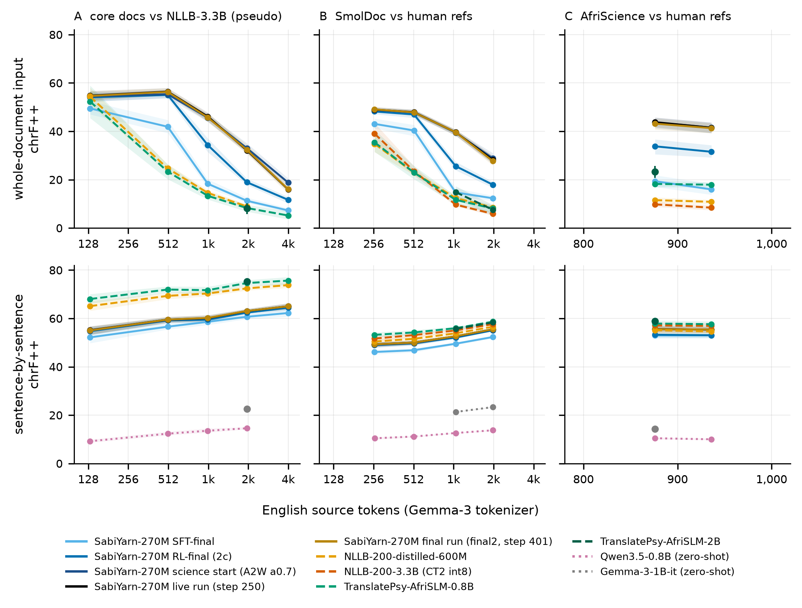
paper/scripts/make_longctx.py.What the native result is, and is not. The step-250 checkpoint of the science-and-general run (the live run) finishes 94-100% of the documents up to about 2,048 tokens (stitched 1.00 / 0.95 at about 1,024 / 2,048 tokens, core documents 0.99 / 0.94, AfriScience papers 0.95-0.96) and writes the target language (GlotLID share 0.94-0.99); its starting model A2W finishes 90-98% at about 1,024 tokens but only 72-80% at about 2,048 tokens (0.80 stitched, 0.72 core). The final checkpoint (step 401) lies in between: it finishes 98% at about 1,024 and 91-92% at about 2,048 tokens (0.92 stitched, 0.91 core; AfriScience papers 0.94-0.95), writes the target language (GlotLID share 0.95-0.99) and omits as much as the step-250 checkpoint (coverage 0.88 at about 1,024 and 0.73 at about 2,048 tokens, length ratio 0.81 and 0.59, i.e. about 12% and 27% of the source sentences left untranslated), but its outputs loop more often (loop rate 0.08 and 0.25 stitched, against 0.04 and 0.10 for the step-250 checkpoint, paired difference +0.04 [+0.01, +0.08] and +0.15 [+0.10, +0.20]; core documents at about 2,048 tokens 0.25 against 0.12, +0.13 [+0.04, +0.21]; AfriScience dev 0.10 against 0.04, +0.06 [+0.01, +0.10], test 0.05 against 0.07, not different; A2W 0.15 and 0.30): at about 2,048 tokens a quarter of its whole-document outputs contain a repetition loop that is absent from the reference, although the chrF++ is unchanged. Against A2W it finishes more documents at that length (stitched +0.12 [0.00, +0.24], core +0.19 [+0.12, +0.30], AfriScience test +0.09 [+0.03, +0.14]). We do not know whether the higher loop rate is a systematic effect of the 151 further steps or a property of one more checkpoint; there is one run. Both omit text: source-sentence coverage is 0.87 at about 1,024 and 0.70 at about 2,048 tokens and the length ratio to the reference 0.78 and 0.56 for the live run (A2W: coverage 0.87 / 0.72, length ratio 0.80 / 0.75), i.e. about 13% and 30% of the source sentences are left untranslated by the live run (12-28% for A2W); for a Hausa document of about 2,000 tokens the step-250 checkpoint writes 4,490 of the 9,188 reference characters (Table 43, Figure 15; this document was not inspected for the final checkpoint). RL-final covers 0.95 / 0.94 of the sentences but loops, SFT-final neither stops nor covers. On a 2,000-token document, then, no system translates the whole text in one pass with the quality it reaches sentence by sentence.
finished = stopped at its own end token / before the length limit; loop = word-cycle repetition absent from the reference; coverage = share of source sentences with an aligned, non-copied output sentence (alignment plan of the long-document reward v2); len. ratio = hypothesis / reference characters; LID = share of output sentences (>= 25 characters) that GlotLID labels as the target language.
| model | mode | stitched ~1,024: finished / loop / coverage / len. ratio / LID | stitched ~2,048: finished / loop / coverage / len. ratio / LID |
|---|---|---|---|
| SabiYarn-270M SFT-final | whole document | 0.07 / 0.90 / 0.78 / 1.80 / 0.90 | 0.03 / 1.00 / 0.74 / 1.80 / 0.96 |
| SabiYarn-270M SFT-final | sentence-by-sentence + repair | 1.00 / 0.02 / 0.98 / 0.98 / 0.96 | 0.98 / 0.02 / 0.99 / 0.99 / 0.96 |
| SabiYarn-270M RL-final (2c) | whole document | 0.51 / 0.67 / 0.95 / 1.29 / 0.93 | 0.39 / 0.90 / 0.94 / 1.27 / 0.89 |
| SabiYarn-270M RL-final (2c) | sentence-by-sentence + repair | 0.99 / 0.00 / 1.00 / 1.00 / 0.95 | 0.95 / 0.00 / 1.00 / 1.01 / 0.95 |
| SabiYarn-270M science start (A2W a0.7) | whole document | 0.98 / 0.15 / 0.87 / 0.80 / 0.95 | 0.80 / 0.30 / 0.72 / 0.75 / 0.95 |
| SabiYarn-270M science start (A2W a0.7) | sentence-by-sentence + repair | 0.98 / 0.03 / 1.00 / 0.99 / 0.96 | 0.97 / 0.02 / 1.00 / 1.00 / 0.95 |
| SabiYarn-270M live run (step 250) | whole document | 1.00 / 0.04 / 0.87 / 0.78 / 0.95 | 0.95 / 0.10 / 0.70 / 0.56 / 0.94 |
| SabiYarn-270M live run (step 250) | sentence-by-sentence + repair | 0.99 / 0.02 / 1.00 / 0.99 / 0.96 | 0.98 / 0.02 / 1.00 / 1.00 / 0.95 |
| SabiYarn-270M final run (final2, step 401) | whole document | 0.98 / 0.08 / 0.88 / 0.81 / 0.95 | 0.92 / 0.25 / 0.73 / 0.59 / 0.95 |
| SabiYarn-270M final run (final2, step 401) | sentence-by-sentence + repair | 1.00 / 0.01 / 1.00 / 0.99 / 0.95 | 0.98 / 0.03 / 1.00 / 1.00 / 0.95 |
| NLLB-200-distilled-600M | whole document | 0.55 / 0.64 / 0.41 / 0.41 / 0.86 | 0.45 / 0.69 / 0.31 / 0.23 / 0.90 |
| NLLB-200-distilled-600M | sentence-by-sentence | 0.96 / 0.09 / 0.99 / 0.99 / 0.95 | 0.95 / 0.20 / 1.00 / 0.99 / 0.94 |
| NLLB-200-3.3B (CT2 int8) | whole document | 0.87 / 0.53 / 0.39 / 0.25 / 0.90 | 0.85 / 0.49 / 0.33 / 0.16 / 0.93 |
| NLLB-200-3.3B (CT2 int8) | sentence-by-sentence | 1.00 / 0.01 / 0.99 / 0.99 / 0.95 | 1.00 / 0.02 / 0.99 / 0.99 / 0.95 |
| TranslatePsy-AfriSLM-0.8B | whole document | 0.77 / 0.23 / 0.46 / 0.66 / 0.93 | 0.61 / 0.38 / 0.53 / 0.94 / 0.91 |
| TranslatePsy-AfriSLM-0.8B | sentence-by-sentence | 0.98 / 0.02 / 1.00 / 1.01 / 0.95 | 0.98 / 0.02 / 1.00 / 1.01 / 0.95 |
| TranslatePsy-AfriSLM-2B | whole document | 0.75 / 0.15 / 0.55 / 0.79 / 0.94 | 0.76 / 0.18 / 0.54 / 0.64 / 0.94 |
| TranslatePsy-AfriSLM-2B | sentence-by-sentence | 1.00 / 0.00 / 1.00 / 1.02 / 0.94 | 1.00 / 0.00 / 1.00 / 1.03 / 0.94 |
| Qwen3.5-0.8B (zero-shot) | whole document | n/a | n/a |
| Qwen3.5-0.8B (zero-shot) | sentence-by-sentence | 0.02 / 0.98 / 0.75 / 2.78 / 0.23 | 0.00 / 0.98 / 0.77 / 2.80 / 0.22 |
| Gemma-3-1B-it (zero-shot) | whole document | n/a | n/a |
| Gemma-3-1B-it (zero-shot) | sentence-by-sentence | 0.10 / 0.92 / 0.98 / 1.61 / 0.48 | 0.00 / 1.00 / 0.98 / 1.65 / 0.49 |
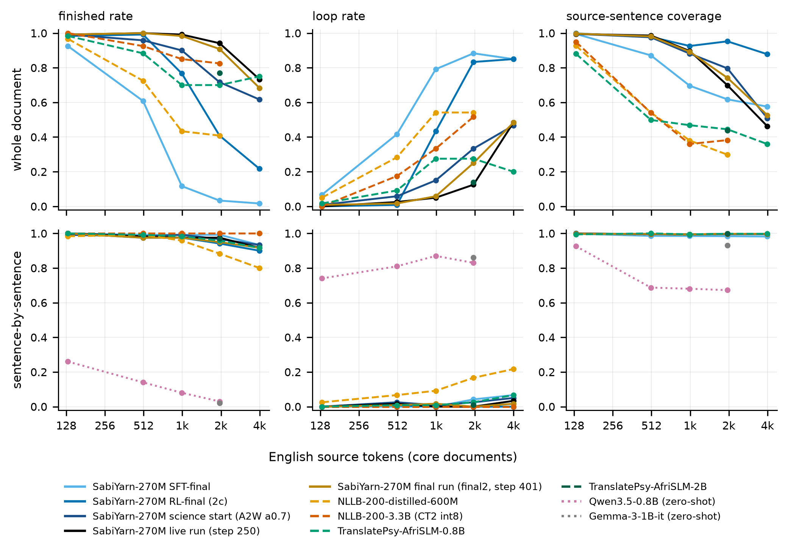
paper/scripts/make_longctx.py.A sentence-by-sentence wrapper beats the native mode for every system, and the other systems then lead. With sentence-by-sentence decoding every system finishes, covers every sentence and loops rarely (NLLB's own sentence mode loops in 9-33% of the documents, from repeated sentences and list items). For the live model the wrapper adds +13 chrF++ at about 1,024 tokens and +27 at about 2,048 (paired; +12 and +14 on the AfriScience papers); for the final checkpoint +13.1 [+11.9, +14.4] and +27.8 [+26.4, +29.1] (+12.4 and +14.1 on the papers), and its wrapper output scores the same as the live model's (52.6 / 55.5 chrF++ at about 1,024 / 2,048 tokens; AfriScience 55.6 / 55.4). The other systems gain far more and end above ours: at about 1,024 / 2,048 tokens NLLB-600M, NLLB-3.3B, TranslatePsy-0.8B and 2B reach 53.9-56.0 / 56.6-58.7 chrF++ against 52.6 / 55.5 for our live model (1-4 chrF++ ahead at every length; on the AfriScience papers 57.6-58.8 against 55.4-55.6). With the wrapper the order is TranslatePsy ~ NLLB-3.3B > NLLB-600M > our science-stage and RL models > SFT-final. "Far better than other models" is therefore true for native long input only; as a statement about document-translation quality it is false: a user of NLLB or TranslatePsy gets a better translation of a 2,000-token document by splitting it into sentences than the user of our model gets from the whole-document mode. On sentence-level scores of the AfriScience papers the same ordering holds (dev / test chrF++: live 45.7 / 45.4, NLLB-3.3B 48.3 / 48.0, TranslatePsy-0.8B 49.4 / 49.0).
| claim | measured | verdict |
|---|---|---|
| other systems do not support such inputs | NLLB truncates; TranslatePsy accepts the input but loops; Qwen and Gemma do not write the languages | true in practice, not by context length |
| our model translates documents up to about 2,048 tokens | only the science-stage models finish more than 70% of the documents at that length (step-250 checkpoint 94-95%, final checkpoint 91-92%, A2W 72-80%); coverage 0.70-0.88 | partly: stable, but omits 12-30% of the sentences, and an independent judge scores the text it writes at 25.8 of 100 against 67.0 for the wrapper (Section 6.12) |
| far better than other systems | whole-document 39.6 / 27.7-28.2 against at most 14.9 / 8.5; but 52.6 / 55.5 against 53.9-56.0 / 56.6-58.7 for their wrappers | true for native long input only |
Pseudo-references need care. The NLLB-3.3B sentence-by-sentence translations that serve as the reference for the core documents (Section 6.4) are themselves a system. Against human references NLLB-3.3B is at least 2 chrF++ above our best model only in Amharic, Kinyarwanda, Malagasy and Zulu (+9.8, +8.7, +6.9, +2.7), marginally ahead (0-2) in Hausa, Igbo, Somali, Swahili, Twi and Xhosa, and below ours in Luganda (-2.6), Northern Sotho (-5.2), Wolof (-3.2) and Yoruba (-0.8) (Table 44, Figure 16). Agreement with NLLB exceeds quality against humans by +2 to +9 chrF++ for our models (stitched about 1,024 tokens: SFT-final +6.6, RL-final +8.6, A2W +7.8, live +8.0; AfriScience dev +2.2 to +4.5) and by +13 to +19 for the NLLB and TranslatePsy lineage (NLLB-600M +15.6, TranslatePsy-0.8B +17.5, 2B +19.1; Table 45), which are trained on or distilled from NLLB-like data. NLLB-referenced scores therefore favour NLLB-lineage systems and are used for ordering only; the human-reference rows carry the conclusions.
| language | NLLB-3.3B vs human (mean over SmolDoc bins) | NLLB-3.3B vs human (AfriScience dev+test) | best SabiYarn (live / RL-final) | TranslatePsy-0.8B | NLLB-600M | NLLB-3.3B minus best SabiYarn | pseudo-reference verdict |
|---|---|---|---|---|---|---|---|
| amh | 37.7 | 46.0 | 27.9 | 42.4 | 37.9 | +9.8 | usable (>= 2 above SabiYarn) |
| hau | 57.9 | 68.9 | 57.5 | 58.9 | 56.9 | +0.5 | marginal (0-2 above) |
| ibo | 59.2 | - | 57.3 | 58.8 | 57.1 | +1.8 | marginal (0-2 above) |
| kin | 61.5 | - | 52.8 | - | 56.1 | +8.7 | usable (>= 2 above SabiYarn) |
| lug | - | 55.2 | 57.8 | 56.1 | 52.0 | -2.6 | NOT above SabiYarn: do not use as a quality yardstick |
| mlg | 68.4 | - | 61.5 | - | 66.7 | +6.9 | usable (>= 2 above SabiYarn) |
| nso | - | 63.1 | 68.3 | - | 62.2 | -5.2 | NOT above SabiYarn: do not use as a quality yardstick |
| som | 58.2 | - | 57.3 | - | 57.0 | +0.9 | marginal (0-2 above) |
| swh | 66.9 | - | 66.3 | 67.9 | 65.8 | +0.7 | marginal (0-2 above) |
| twi | 45.0 | - | 44.2 | - | 42.0 | +0.8 | marginal (0-2 above) |
| wol | 40.7 | - | 43.9 | - | 34.5 | -3.2 | NOT above SabiYarn: do not use as a quality yardstick |
| xho | 57.8 | - | 57.4 | - | 57.1 | +0.4 | marginal (0-2 above) |
| yor | 45.5 | 47.0 | 46.3 | 46.1 | 44.4 | -0.8 | NOT above SabiYarn: do not use as a quality yardstick |
| zul | 59.0 | 67.9 | 56.3 | 59.0 | 56.7 | +2.7 | usable (>= 2 above SabiYarn) |
All systems in sentence-by-sentence mode; chrF++ against ONE human reference rarely exceeds 60-65, so 'usable' is a relative statement: a pseudo-reference can rank systems that are clearly below it. Rule used in the report: NLLB-3.3B counts as a better-than-ours yardstick for a language only when it beats the best SabiYarn model by >= 2 chrF++ on the human references.
| model | mode | stitched ~1,024: vs human | vs NLLB-3.3B | gap | AfriScience dev: vs human | vs NLLB-3.3B | gap |
|---|---|---|---|---|---|---|---|
| SabiYarn-270M SFT-final | sentence-by-sentence + repair | 49.6 | 56.1 | +6.6 | 53.0 | 56.8 | +3.8 |
| SabiYarn-270M RL-final (2c) | sentence-by-sentence + repair | 52.1 | 60.7 | +8.6 | 53.3 | 57.8 | +4.5 |
| SabiYarn-270M science start (A2W a0.7) | sentence-by-sentence + repair | 52.5 | 60.3 | +7.8 | 55.7 | 57.8 | +2.2 |
| SabiYarn-270M live run (step 250) | sentence-by-sentence + repair | 52.6 | 60.6 | +8.0 | 55.6 | 57.9 | +2.3 |
| SabiYarn-270M final run (final2, step 401) | sentence-by-sentence + repair | 52.6 | 60.6 | +8.0 | 55.6 | 57.9 | +2.3 |
| NLLB-200-distilled-600M | sentence-by-sentence | 53.9 | 69.4 | +15.6 | 55.1 | 67.9 | +12.8 |
| TranslatePsy-AfriSLM-0.8B | sentence-by-sentence | 56.0 | 73.4 | +17.5 | 57.9 | 73.2 | +15.3 |
| TranslatePsy-AfriSLM-2B | sentence-by-sentence | 55.7 | 74.8 | +19.1 | 58.8 | 74.5 | +15.6 |
| Qwen3.5-0.8B (zero-shot) | sentence-by-sentence | 12.6 | 12.7 | +0.1 | 10.4 | 10.8 | +0.4 |
| Gemma-3-1B-it (zero-shot) | sentence-by-sentence | 21.3 | 21.8 | +0.4 | 14.3 | 14.6 | +0.3 |
gap = chrF++ against the NLLB-3.3B outputs minus chrF++ against the human references. A large positive gap = the system resembles NLLB more than it resembles a human translator.
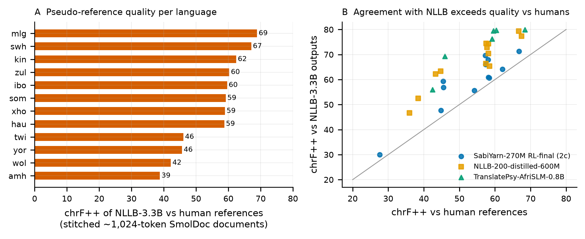
paper/scripts/make_longctx.py.Caveats. (i) A2W and the final run (whose step-250 checkpoint is evaluated here) were trained on the AfriScience-MT training split, which advantages them on the AfriScience sets, and the run's checkpoint-selection rule uses the AfriScience dev set (the step-250 checkpoint evaluated here is simply the one that was current when the evaluation was started), so its dev column is not independent (its test column was not used for selection but is treated as dev-like); the SmolDoc and core documents are outside all training data (exact and 8-gram check). (i-b) The final checkpoint (step 401) was added to this benchmark on 2026-10-24, after the other systems, by running the same scripts on the same documents with the same decoding (vLLM, greedy, 3.5 times the source tokens; GPU memory fraction 0.25 instead of 0.07, which changes the batching but not the greedy decoding in principle) and the same scoring and bootstrap; the existing rows were re-aggregated by the same code and reproduce exactly. Its sentence-level chrF++ on the AfriScience papers (6 languages, sentence-by-sentence mode) is 48.06 / 47.26 (dev / test) against 48.05 / 47.26 for the step-250 checkpoint here and 48.12 / 47.30 from the separate evaluation script of Section 6.7, which also checks the harness. The step-250 and step-401 checkpoints differ by 151 RL steps on a plateau, there is one run per checkpoint and the document bootstrap contains no seed-to-seed variance, so the benchmark has little power to separate them. (ii) Stitched documents are unrelated texts joined, so they measure length robustness, not discourse; no human judge of discourse quality was used, and the independent LLM judge of Section 6.12 scores aligned units of one to a few sentences, not discourse. (iii) Document-pooled chrF++ forgives clause shifts of the sentence alignment and lies about 10 points above the sentence-level scores of the same output; it is not comparable with published sentence-level numbers. (iv) The numbers differ slightly from those of Section 6.4 because the document selection (20 documents per bin, 6 common languages) and the decoding budget (3.5 times the source tokens, greedy) differ, with the same conclusions; likewise the step-250 checkpoint finishes 96% of the AfriScience dev papers here against the 1.000 of Section 6.7 (the budget differs). (v) One checkpoint per system and one decoding setting; models above 8 GB were not run; whether the pretraining of NLLB, TranslatePsy, Qwen or Gemma contains SmolDoc or AfriScience is unknown (TranslatePsy lists Smol among its evaluation sets). (vi) Coverage and loop metrics use our own alignment and loop detector, which was designed for the reward and may disadvantage other systems' outputs slightly; the NLLB sentence-mode loop rate is inflated by repeated list items.
Wording we use. Whole-document decoding beyond about 512 tokens fails for NLLB (input truncated at 1,024 tokens), for TranslatePsy-AfriSLM (repetition loops) and for our SFT and RL checkpoints. After the science stage the step-250 and step-401 checkpoints of our 270M model finish 91-100% of the documents of 1,000-2,000 tokens and write the target language (chrF++ 39.6 and 28.2 / 27.7 against human references at about 1,024 and 2,048 tokens, A2W 39.4 and 28.8; on the AfriScience-MT test papers 41.5 / 41.3), where the NLLB and TranslatePsy systems we tested score 5.9-14.9 (AfriScience test 8.4-17.9), but they omit 12-30% of the sentences. A sentence-by-sentence wrapper removes the failure for every system and gives higher scores (52.6-58.7 chrF++, ours 52.6 and 55.5, the same for the step-250 and final checkpoints) than native long input, with NLLB and TranslatePsy 1-4 chrF++ ahead of ours. Better on native long input is therefore not better document translation, and we do not claim that our model translates long documents better than other models. An independent LLM judge applied to aligned units of the same core documents (Section 6.12) agrees and is sharper about quality: the whole-document units of the final checkpoint score 25.8 of 100 (16.4% of the sampled sentences without output), against 67.0 for its sentence-by-sentence wrapper and 85.6 and 86.5 for NLLB-200 3.3B and TranslatePsy-AfriSLM-0.8B (five languages; whole minus wrapper -42.0 [-45.1, -38.8]), falling from 33.8 at about 1,024 tokens to 12.1 at about 2,048; the judge is validated only at Spearman about 0.5 and the whole-document units are blocks of 1.4 sentences, but these gaps are far larger than that noise. The chrF++ numbers and the judge tell consistent stories of different size: chrF++ against the pseudo-reference is much less harsh (the wrapper 1-4 chrF++ behind NLLB and TranslatePsy) than the judge (19.9 points behind NLLB, six languages), and the model finishes long documents and writes the right language, but what it writes is judged far below the wrapper and far below NLLB-200 3.3B; this is not specific to the Ge'ez-script languages (Section 6.12).
An optional second pseudo-reference. Because the NLLB pseudo-reference is biased and absent for 22 of the 23 consensus-only languages, LC1 prepared, but did not run, a Gemini Batch-API pseudo-reference; the plan and its costs are in Appendix I. No API call was made for that pseudo-reference (the LLM-judge calls of Section 6.12 are a separate use of the API).
The model is small enough to run without a GPU, and the question a user asks is what it costs in quality and time. We measured this for the final checkpoint (final2-step401) converted to llama.cpp GGUF and to CTranslate2 (agent C1b, reports/cpu_speed_2026-10-23.md, data in reports/data/cpu_speed_2026-10-23/). The measurements were made on a shared server, not on a laptop: an Intel Xeon Gold 6126 (2.6 GHz, Skylake, AVX-512) pinned to exactly four cores under nice, three repetitions, while the ablation and evaluations of the project ran on the same machine (one to three busy neighbour cores). The headline numbers are solo runs; runs with several benchmarks in parallel were 7-17% slower (Table 47; solo_vs_parallel_streams.csv) and rows measured that way are labelled "shared box". Quality is chrF++ against human references on 1,170 FLORES+ devtest sentences of six languages (Swahili, Hausa, Yoruba, Kinyarwanda, Amharic, Tigrinya; rows whose reference pair was not in the SFT text; 200 sentences each, 170 for Hausa), generated greedily; Tigrinya stands in for Nigerian Pidgin, which FLORES+ does not contain. The prompts were checked to match the Hugging Face chat template token for token (prompt_mismatch_vs_hf_template = 0 in lean_rss.csv).
Quantisation costs almost nothing down to 8 bits. Table 46 lists macro chrF++ and its difference to the bf16 GPU output (paired bootstrap over sentences). GGUF Q8_0 is indistinguishable from the GPU (-0.02 chrF++, [-0.22, +0.16]) although only 18% of its outputs are identical strings, because greedy decoding diverges at near-ties without changing the score; CTranslate2 fp32 is level too (+0.03). The 6-bit GGUF costs 0.20 [-0.42, -0.01], the hybrid CTranslate2 model that keeps attention in fp32 and the rest in int8 0.25 [-0.48, -0.06], Q5_K_M 0.68 [-0.92, -0.48], Q4_K_M 1.40 [-1.83, -1.07] and CTranslate2 int8 1.71 [-1.99, -1.38], where Yoruba alone loses 4.8 chrF++ (29.4 to 24.6) and Amharic 1.5. The intervals contain sentence-sampling noise only. The recommended variant is therefore GGUF Q8_0: a 300 MB file (size from the report), 0.42 GB of RAM at batch 1 and 1.2 GB at batch 32.
reports/data/cpu_speed_2026-10-23/quality.csv, paper/scripts/make_cpu.py.| variant | macro chrF++ | $\Delta$ vs GPU [95% CI] | Yoruba | Amharic | outputs identical to the GPU output (%) |
|---|---|---|---|---|---|
| GPU (vLLM, bf16), reference | 34.98 | 29.4 | 19.3 | ||
| CTranslate2 fp32 | 35.03 | +0.03 [-0.12, +0.18] | 29.4 | 19.7 | 34.3 |
| GGUF Q8_0 (llama.cpp) | 34.96 | -0.02 [-0.22, +0.16] | 29.3 | 19.6 | 18.0 |
| GGUF Q6_K | 34.76 | -0.20 [-0.42, -0.01] | 29.3 | 19.4 | 9.7 |
| CTranslate2 hybrid (attention fp32, rest int8) | 34.73 | -0.25 [-0.48, -0.06] | 29.6 | 18.6 | 14.4 |
| GGUF Q5_K_M | 34.29 | -0.68 [-0.92, -0.48] | 28.7 | 19.1 | 3.3 |
| GGUF Q4_K_M | 33.56 | -1.40 [-1.83, -1.07] | 28.2 | 18.0 | 1.3 |
| CTranslate2 int8 | 33.27 | -1.71 [-1.99, -1.38] | 24.6 | 17.8 | 2.4 |
Speed. Table 47 and Figure 17: with four threads Q8_0 translates 0.97, 1.85 and 2.00 sentences per second at batch 1, 8 and 32 (139 hours per million FLORES-length sentences at batch 32; first token after 80 ms at batch 1; 135 decoded tokens per second at batch 32). CTranslate2 int8 is faster at large batch (2.87 sentences per second, 97 hours per million) and slower at batch 1 (0.77), but it is the variant that loses 1.7 chrF++, so we do not recommend it. Q4_K_M was not faster than Q8_0 (1.72 against 1.83 sentences per second at batch 32 in the same shared-box condition), the fp32 and hybrid CTranslate2 models are slower (1.6-1.7 sentences per second at batch 32 on a shared box) and need 2.5-3.6 GB of RAM without Python overhead (lean_rss.csv). A build restricted to AVX2 instructions runs at the speed of the native build (1.85 against 1.83 sentences per second, batch 32, both with other jobs running), so the numbers do not depend on AVX-512.
headline_speed_4threads.csv, paper/scripts/make_cpu.py.| variant | timing | macro chrF++ | sentences/s, batch 1 (min-max of 3) | batch 8 | batch 32 | hours per 1 M sentences (batch 32) | decode tokens/s (batch 32) | first token, batch 1 (ms) | peak RAM batch 1 / 32 (GB, incl. Python for CT2) |
|---|---|---|---|---|---|---|---|---|---|
| Q8_0 (llama.cpp) | solo | 34.96 | 0.97 (0.96-0.98) | 1.85 (1.83-1.86) | 2.00 (1.94-2.02) | 139 | 135 | 80 | 0.4 / 1.2 |
| CTranslate2 int8 | solo | 33.27 | 0.77 (0.75-0.79) | 1.95 (1.90-2.03) | 2.87 (2.83-2.90) | 97 | 208 | 68 | 1.8 / 2.3 |
| Q4_K_M (llama.cpp) | shared box | 33.56 | 0.83 (0.78-0.93) | 1.60 (1.47-1.82) | 1.72 (1.27-2.01) | 162 | 117 | 90 | 0.4 / 1.2 |
| CTranslate2 hybrid | shared box | 34.73 | 0.30 (0.28-0.33) | 0.90 (0.83-1.01) | 1.69 (1.53-1.89) | 165 | 120 | 144 | 3.5 / 4.1 |
| CTranslate2 fp32 | shared box | 35.03 | 0.27 (0.27-0.27) | 0.80 (0.80-0.80) | 1.57 (1.57-1.57) | 177 | 108 | 158 | 3.4 / 4.0 |
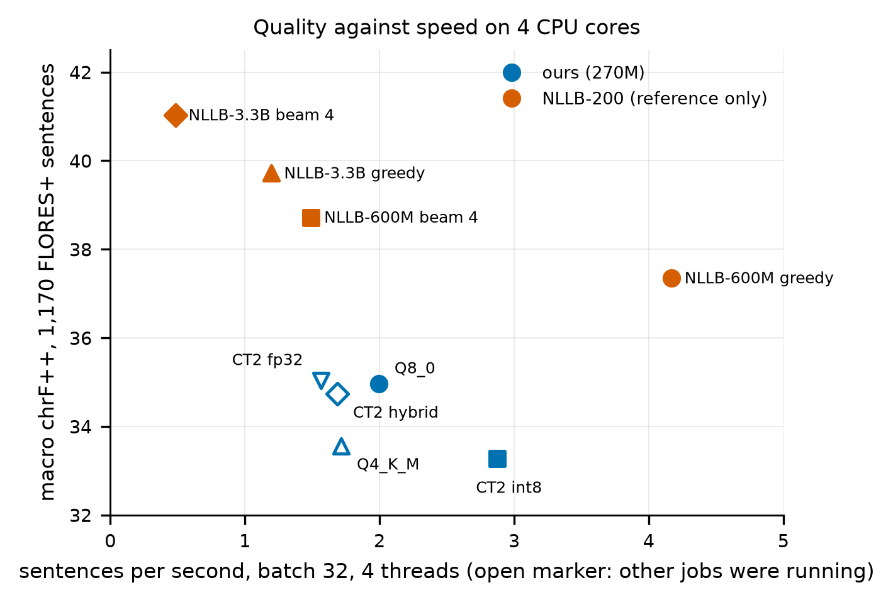
headline_speed_4threads.csv, paper/scripts/make_cpu.py.Threads and processes. Q8_0 scales with the number of threads (batch 8: 0.63, 1.14 and 1.85 sentences per second at 1, 2 and 4 threads; Table 48); CTranslate2 int8 scales poorly (1.46, 1.71, 1.95), so four single-thread processes with eight sentences each reach 3.5 sentences per second in aggregate at the price of loading the model four times (7.5 GB of RAM summed over the processes, which include PyTorch). For Q8_0 four processes give 2.1 against 1.85 for one four-thread process at 2.4 GB in total.
speed.csv (rows z_*), data_parallel_4x1thread.csv.| configuration | 1 thread | 2 threads | 4 threads | speed-up over 1 thread (2 / 4 threads) |
|---|---|---|---|---|
| Q8_0, batch 1 | 0.32 | 0.55 | 0.97 | 1.74x / 3.06x |
| Q8_0, batch 8 | 0.63 | 1.14 | 1.85 | 1.81x / 2.93x |
| CTranslate2 int8, batch 8 | 1.46 | 1.71 | 1.95 | 1.17x / 1.34x |
| Q8_0, 4 processes x 1 thread, batch 8 each (aggregate) | 2.08 | range 1.88-2.22 | ||
| CTranslate2 int8, 4 processes x 1 thread, batch 8 each (aggregate) | 3.54 | range 3.42-3.71 |
Paragraphs. On 20 stitched SmolDoc paragraphs of 475-516 prompt tokens (Table 49; one small sample, one repetition per variant except where stated) Q8_0 reaches chrF++ 47.4 against 47.6 for fp32 and 46.1 for int8, at 0.119 paragraphs per second at batch 8 (8.4 s per paragraph, about 430 per hour). 4 or 5 of the 20 outputs (20-25%) reach the 1,024-token cap even in fp32, which is the looping of the model itself and not an effect of quantisation. Decoding a whole paragraph is not faster per token than decoding sentences: the decode rate is 109 tokens per second for paragraphs at batch 8 against 125 for sentences at batch 8 and 135 at batch 32, and the paragraph outputs average about 840 tokens. The benefit of the model's long-input ability is therefore coherence across sentences (Section 6.10), not speed.
quality_paragraph.csv.| system (20 stitched SmolDoc paragraphs, 475-516 prompt tokens) | chrF++ vs human reference | hit the 1,024-token cap | output tokens per paragraph |
|---|---|---|---|
| CTranslate2 fp32 | 47.6 | 4 / 20 | 830 |
| GGUF Q8_0 | 47.4 | 5 / 20 | 844 |
| CTranslate2 hybrid | 47.5 | 5 / 20 | 842 |
| GGUF Q4_K_M | 46.5 | 4 / 20 | 824 |
| CTranslate2 int8 | 46.1 | 4 / 20 | 842 |
| NLLB-200-distilled-600M, beam 4 (reference) | 23.0 | 0 / 20 | 244 |
| NLLB-200 3.3B, beam 4 (reference) | 24.4 | 0 / 20 | 239 |
Reference: NLLB-200 on the same cores (not usable commercially). To place the numbers we ran NLLB-200-distilled-600M and NLLB-200 3.3B through CTranslate2 int8 on the same four cores and sentences (Table 50). NLLB-200 is licensed CC-BY-NC and this is a reference, not a claim of superiority: the decoders and engines differ (ours greedy in GGUF Q8_0, NLLB int8 with beam 4 or greedy) and no interval was computed for the cross-system differences. NLLB-200 3.3B with beam 4 scores 41.0 macro chrF++ against 35.0 for ours on the same 1,170 sentences, at 0.48 sentences per second (574 hours per million) and 10.9 GB of RAM, which does not fit an 8 GB laptop. NLLB-200-distilled-600M scores 38.7 with beam 4 (1.49 sentences per second, 3.2 GB) and 37.4 greedy (4.17 sentences per second, 67 hours per million). Per language our Q8_0 output is ahead of the 600M model with beam 4 in Swahili (+1.1), Hausa (+0.6) and Yoruba (+3.5) and behind in Kinyarwanda (-0.6); the mean of these four languages is 44.2 against 43.1 (and 45.9 for the 3.3B model). The macro gap is almost entirely in the two Ethiopic-script languages, where ours is far behind (Amharic 19.6 against 37.4 and Tigrinya 13.2 against 22.6 for the 600M model with beam 4). Ours is faster than NLLB-600M with beam 4 (2.00 against 1.49 sentences per second) and slower than NLLB-600M greedy (4.17, a factor of 2.1; CTranslate2 int8 of ours: 2.87, a factor of 1.45), which is faster and scores 2.4 chrF++ higher than our Q8_0 on these sentences. On 490-token paragraphs NLLB writes only about 240 tokens and scores 23.0 and 24.4 against 47 for ours: it drops content (Section 6.10).
quality.csv, headline_speed_4threads.csv.| system (same 4 cores, batch 32) | macro chrF++ (6 languages) | swh hau yor kin mean | Amharic | Tigrinya | sentences/s | hours per 1 M | peak RAM (GB) | output tokens per sentence |
|---|---|---|---|---|---|---|---|---|
| NLLB-200-distilled-600M, greedy (reference) | 37.35 | 41.8 | 34.7 | 22.1 | 4.17 | 67 | 2.3 | 43.7 |
| NLLB-200-distilled-600M, beam 4 (reference) | 38.72 | 43.1 | 37.4 | 22.6 | 1.49 | 186 | 3.2 | 44.4 |
| NLLB-200 3.3B, greedy (reference) | 39.72 | 45.0 | 34.1 | 24.3 | 1.19 | 233 | 8.2 | 43.0 |
| NLLB-200 3.3B, beam 4 (reference) | 41.03 | 45.9 | 37.6 | 25.1 | 0.48 | 574 | 10.9 | 44.0 |
| ours, GGUF Q8_0 greedy | 34.96 | 44.2 | 19.6 | 13.2 | 2.00 | 139 | 1.2 | 60.4 |
| ours, CTranslate2 int8 greedy | 33.27 | 42.2 | 17.8 | 12.9 | 2.87 | 97 | 2.3 | 59.1 |
Why is a 270M model not faster than NLLB-600M? The files give a measured part and leave a hypothesis. Measured: per sentence our model generates about 59-60 tokens against about 44 for NLLB (gen_tok_mean in quality.csv: 60.4 for Q8_0, 59.1 for int8, 43.7 for NLLB-600M greedy), that is 1.35 times more output tokens, because the Gemma tokenizer fragments these languages more (Section 3.3). The generated tokens per second (end to end, batch 32) are about equal between our CTranslate2 int8 model (172) and NLLB-600M greedy (175), and lower for Q8_0 (118). So the 1.45 times lower sentence rate of our int8 model is explained by the token count (1.35 times) and not by a slower step, but a model with less than half the parameters is also not faster per generated token. Hypothesis, not measured: 168M of our 270M parameters are the vocabulary table, which is also the output head, so every decoding step computes scores for 262,145 entries (about 168M multiply-adds against roughly 100M for the 18 layers), and CPU decoding at small batch is bound by memory traffic over all weights, which is consistent with the rise from 0.97 to 2.00 sentences per second between batch 1 and 32; the per-token cost of the 270M model would then be dominated by the head and not much lower than that of a larger model with a smaller head. We did not profile the time share of the output projection, and we did not count the output projection of NLLB-600M, which may be large too; the restricted-vocabulary idea of Section 3.3 (TODO(vocab)) would test it. The two token-rate figures also come from different sentence subsets and token definitions, so the equality is approximate.
Estimate for a laptop (ESTIMATE, not a measurement). We have no laptop measurement. The report assumes 0.5-1.0 times the measured Q8_0 speed on an 8 GB, four-core laptop, because the Xeon core is probably faster than an older laptop core, laptop memory bandwidth (DDR4) lowers decode speed, and Apple performance cores may be faster; the factor is a judgement and not a result. With it, Q8_0 would translate 1-2 sentences per second, that is 8-17 minutes per 1,000 sentences and 6-12 days per million: fine for thousands to tens of thousands of sentences, not for millions. For comparison the GPU (vLLM) was about 100 times faster in the same project.
Caveats. Shared machine and some one-repetition or shared-box rows (hybrid, fp32, Q4_K_M, the PyTorch rows); small speed subsets (120 sentences per timing, 20 paragraphs; Hausa has 170 clean sentences instead of 200); six languages, one of them a stand-in; one checkpoint (the final checkpoint, not the headline RL-final model; the speed does not depend on the weights, the quality numbers do); FLORES-length sentences only; no energy or battery measurement; no human evaluation. No TranslatePsy data or outputs were used.
Why, and what this section is. Every learned metric used above is either part of the reward stack or shares data and encoders with it (Section 6.9), and chrF++ rewards surface overlap. A large language model prompted as a judge is a scorer that neither we nor the metric authors trained. The validation pilot of Section 7.1a showed that such a judge (gemini-3.8-flash) tracks human adequacy ratings of other systems about as well as SSA-COMET with reference (Spearman about 0.5); with the owner's approval we then validated the reference-free prompt and applied the judge to our models in three runs (2026-10-25): (1) validation of the reference-free prompt, (2) FLORES+ translations of SFT-final and RL-final, (3) long documents, judged on aligned units. The judge is a model and not a human, it is validated only at Spearman about 0.5, and none of this is human evaluation; we read only language-level or pooled differences, and, in Run 3, differences that are far larger than that noise.
Protocol. The prompts are Figure 8 (reference-based) and Figure 9 (reference-free, "QE") of the SSA-COMET paper (Li et al., 2025), verbatim (Appendix J; the only change is that "[67]Most" is written "[67] Most"), with five demonstrations, one per adequacy interval (SSA-MTE train split for Amharic, Hausa, Kinyarwanda and Yoruba; other rows of the same AfriMTE-WMT2024 pair, scores min-max scaled, for Swahili, Igbo, Somali and Xhosa; the demonstrations are those of the pilot), score only, gemini-3.8-flash as served on 2026-10-25, temperature 0, thinking at the model default, Batch API, one run per request (nothing resubmitted). Figure 9 is Figure 8 with the Reference: field removed from the demonstrations and the test line (a unit test asserts this on all 300 pilot segments). The output cap was 1,000 tokens including thinking (1,500 for Run 1); the largest thinking budget used was 912 tokens, so the cap was never reached, and none of the 6,190 responses failed to parse (no non-STOP finish). The three runs cost USD 5.42 (the pilot of Section 7.1a USD 1.82 more; Table 97), under a guard that refused any submit whose worst case would take the running total above USD 8. All judge scores below are on a 0-100 scale.
Why Gemini-3.8-Flash, and not the judge of the SSA-COMET paper. Li et al. (Li et al., 2025) judge with Gemini-2.5-Pro. For our API key that model returned "no longer available to new users" (Batch API and standard API), so we did not run it, and the judge used here is not a reproduction of theirs; we do not claim that Flash is better than 2.5 Pro. In the pilot of Section 7.1a we compared Gemini-3.1-Pro-preview (Google's named successor of 2.5 Pro) with Gemini-3.8-Flash on the same 300 SSA-MTE and AfriMTE segments (one run per judge): Flash reaches a pooled Spearman correlation with the human z-score of 0.511 [0.41, 0.60] against 0.454 [0.35, 0.55] for 3.1 Pro; the paired difference Pro minus Flash is -0.057 [-0.09, -0.02], and its per-language intervals include zero in every language except Hausa and Somali; Flash costs about one fifth as much (USD 0.29 against 1.53 for the 300 segments). We therefore used Flash: on this sample it was not worse than the stronger model we could run, at a fifth of the price.
Run 1: is the reference-free prompt usable? On the 300 pilot segments the QE prompt reaches a pooled Spearman correlation with the human z-score of 0.494 [0.394, 0.586], against 0.511 [0.41, 0.60] for the reference-based prompt of the pilot, 0.536 [0.44, 0.62] for SSA-COMET-MTL with reference and 0.528 [0.43, 0.61] for SSA-COMET-MTL-QE (without reference); per-pair means removed 0.552 [0.46, 0.65], 0.584, 0.556 and 0.552. The paired differences are not distinguishable from zero (QE minus reference prompt, pooled: -0.017 [-0.048, +0.013]; per-pair means removed -0.033 [-0.056, +0.002]; QE judge minus SSA-COMET-MTL-QE, pooled: -0.034 [-0.117, +0.053]; no per-pair Spearman difference to the reference prompt excludes zero), and the scores of the two prompts correlate at 0.954 (Spearman; mean score 80.6 with, and 78.7 without, the reference). By the rule "usable if the confidence interval of the correlation excludes values below 0.2" the reference-free judge is usable for Amharic, Hausa, Kinyarwanda, Yoruba, Swahili and Igbo (Kinyarwanda and Igbo only just, lower bounds 0.203 and 0.214) and not usable for Somali (lower bound -0.03) and Xhosa (-0.21), which were not used with the QE prompt (Table 51). The six long-document languages pooled give 0.517 [0.414, 0.612]. The published Gemini-2.5-Pro figure for the QE prompt (average Spearman 0.610) is over the paper's own pairs, which include easier ones, and is not comparable with ours.
reports/data/judge_j2_2026-10-25/run1_correlations.csv, run1_language_usability.csv, run1_paired_differences.csv.| pair | segments | Flash, reference prompt (Fig. 8; pilot) | Flash, QE prompt (Fig. 9): Spearman [95% CI] | SSA-COMET-MTL (ref) | SSA-COMET-MTL-QE | QE prompt usable? (CI lower bound >= 0.2) |
|---|---|---|---|---|---|---|
| Amharic (amh) | 50 | 0.561 | 0.561 [0.287, 0.767] | 0.587 | 0.622 | yes |
| Hausa (hau) | 50 | 0.612 | 0.542 [0.310, 0.713] | 0.518 | 0.538 | yes |
| Kinyarwanda (kin) | 50 | 0.535 | 0.481 [0.203, 0.691] | 0.616 | 0.540 | yes, only just (lower bound 0.20) |
| Yoruba (yor) | 50 | 0.639 | 0.647 [0.429, 0.809] | 0.475 | 0.435 | yes |
| Swahili (swh) | 25 | 0.857 | 0.791 [0.536, 0.926] | 0.866 | 0.857 | yes |
| Igbo (ibo) | 25 | 0.529 | 0.596 [0.214, 0.812] | 0.520 | 0.461 | yes, only just (lower bound 0.21) |
| Somali (som) | 25 | 0.513 | 0.452 [-0.027, 0.812] | 0.700 | 0.713 | no (flagged, not used) |
| Xhosa (xho) | 25 | 0.190 | 0.225 [-0.206, 0.572] | 0.330 | 0.245 | no (flagged, not used) |
| pooled, 8 pairs | 300 | 0.511 [0.41, 0.60] | 0.494 [0.394, 0.586] | 0.536 | 0.528 | |
| pooled, per-pair means removed | 300 | 0.584 [0.49, 0.67] | 0.552 [0.461, 0.645] | 0.556 | 0.552 | |
| pooled, the six long-document languages (amh hau kin yor swh ibo) | 250 | 0.531 [0.43, 0.63] | 0.517 [0.414, 0.612] | 0.547 | 0.544 |
Run 2: SFT-final against RL-final on FLORES+. Data: the stored greedy outputs of the paper's evaluation (768 new tokens) against the human FLORES+ reference (reference-based prompt, because a reference exists). Sampling choice: per language, 200 sentences drawn with a fixed seed from the no_pair rows (the sentence pair was not in the SFT text; this is the subset of the paper's headline and the one on which the stored AfriCOMET and SSA-COMET scores exist), identical for both systems; Hausa has only 170 such sentences, so n = 170 there. Sampling all rows would have put the memorised reference pairs of Hausa (83% of its rows) into the sample. The eight languages are those with pilot demonstrations (amh, hau, kin, yor, swh, ibo, som, xho; 1,570 sentences, 3,140 requests). Table 52 gives the result: the judge scores RL-final 62.2 against 58.2 for SFT-final, +4.04 [+3.21, +4.86] (macro over the eight languages; paired bootstrap over sentences), higher in seven languages (Amharic +5.0, Hausa +4.4, Kinyarwanda +7.5, Yoruba +7.2, Swahili +2.0, Igbo +3.7, Somali +2.5; every interval excludes zero) and level in Xhosa (+0.06 [-1.92, +2.11]), the language where the pilot validation was weakest. Pooled, RL-final wins 856 of the 1,421 sentences on which the two scores differ (60.2%). On the same sentences chrF++ gives +2.13 [+1.75, +2.51], AfriCOMET with reference +5.32 [+4.83, +5.83] and SSA-COMET with reference +4.40 [+3.94, +4.87] (x100). Across the eight languages the judge's differences are ordered like those of AfriCOMET (Spearman 0.93), SSA-COMET (0.98) and chrF++ (0.79); single sentences are not read: at sentence level the paired differences agree only at 0.39 (AfriCOMET), 0.55 (SSA-COMET) and 0.30 (chrF++), with the same sign in 65%, 71% and 60% of the sentences where both are non-zero. On the 129 sampled sentences whose English side was never seen in SFT (clean; 5-48 per language, too few to read per language) the pooled judge difference is +3.36 [+0.28, +6.16] (chrF++ +1.88), against +4.04 [+3.21, +4.86] on all sampled sentences; per language it is positive in six of the eight (Hausa +3.33 with n = 48; Kinyarwanda +11.45, n = 11; Amharic +6.0, n = 5) and negative in Xhosa (-4.43, n = 14) and Somali (-2.50, n = 10), with no per-language interval. This is the same direction as Sections 6.1 and 6.9, measured by a scorer that is not part of the reward stack; because the judge saw the human reference and both systems saw the English side of about 95% of the sentences, it does not remove the contamination caveat of Section 6.1.
no_pair rows; up to 200 sentences per language, Hausa 170), SFT-final (step 27,638) against RL-final (GRPO step 1,433), reference-based judge (Figure 8, 0-100), and the same sentences' differences in chrF++ (sentence level) and in AfriCOMET-STL-1.1 and SSA-COMET-MTL with reference (x100). Win / tie / loss: sentences where RL-final scores higher / equal / lower. Intervals: paired bootstrap over sentences (4,000 resamples). Source: reports/data/judge_j2_2026-10-25/run2_judge_by_language.csv, run2_same_sentences_metric_differences.csv, run2_agreement_with_other_metrics.csv, run2_clean_subset.csv.| language | sentences | SFT-final: judge mean | RL-final: judge mean | judge RL minus SFT [95% CI] | win / tie / loss (RL / tie / SFT) | chrF++ diff. | AfriCOMET (ref) diff. x100 | SSA-COMET (ref) diff. x100 |
|---|---|---|---|---|---|---|---|---|
| Amharic (amh) | 200 | 29.4 | 34.4 | +5.04 [+3.19, +6.87] | 119 / 8 / 73 | +2.40 | +7.95 | +5.99 |
| Hausa (hau) | 170 | 59.1 | 63.5 | +4.39 [+1.82, +7.20] | 99 / 13 / 58 | +0.86 | +3.67 | +3.64 |
| Kinyarwanda (kin) | 200 | 44.6 | 52.1 | +7.49 [+4.78, +10.28] | 126 / 10 / 64 | +4.56 | +6.94 | +7.24 |
| Yoruba (yor) | 200 | 52.1 | 59.3 | +7.16 [+4.07, +10.26] | 120 / 13 / 67 | +6.30 | +14.94 | +10.48 |
| Swahili (swh) | 200 | 76.4 | 78.4 | +2.00 [+0.53, +3.52] | 99 / 30 / 71 | +1.28 | +1.90 | +1.60 |
| Igbo (ibo) | 200 | 67.4 | 71.1 | +3.69 [+1.48, +6.00] | 106 / 24 / 70 | +0.61 | +3.45 | +2.74 |
| Somali (som) | 200 | 70.7 | 73.2 | +2.50 [+0.60, +4.45] | 93 / 28 / 79 | +0.46 | +2.43 | +2.20 |
| Xhosa (xho) | 200 | 65.9 | 65.9 | +0.06 [-1.92, +2.11] | 94 / 23 / 83 | +0.55 | +1.29 | +1.35 |
| macro (8 languages) | 1570 | 58.2 | 62.2 | +4.04 [+3.21, +4.86] | 856 / 149 / 565 | +2.13 [+1.75, +2.51] | +5.32 [+4.83, +5.83] | +4.40 [+3.94, +4.87] |
Run 3: long documents, judged on aligned units. The question of Section 6.10, asked of an independent judge. Design (as corrected by the owner): the models translate the whole document in one generation and the judge never sees the document; each system's output is aligned to the source sentences and the aligned units are judged with the QE prompt (no human reference exists for the core documents). Data: the LongCtx-MT core documents (Section 6.10) of the 1,024- and 2,048-token bins, 20 + 20 documents in each of six languages (hau, yor, swh, amh, ibo, kin). Systems: the final checkpoint (step 401) in whole-document mode and with its sentence-by-sentence wrapper (with repair), RL-final in whole-document mode, NLLB-200 3.3B sentence by sentence and TranslatePsy-AfriSLM-0.8B sentence by sentence (no output for Kinyarwanda, so the Kinyarwanda sample of that system is absent; its five-language macro is compared with the five-language macros of the others). Alignment: plan_document of the long-document reward v2 (language-aware Gale-Church with omission and extra beads), with the length model of the coverage metric of Section 6.10; a unit is one aligned bead (consecutive source sentences with their output text), judged once however many sampled sentences it covers; a sentence with no output, or whose output copies the source, is an omission and has no unit. As a replication check, the omitted and copied counts and the number of output sentences equal the stored LC1 scores for all 480 whole-document documents. Sample: per language 50 source sentences from the 1,024-token and 50 from the 2,048-token documents, at most three per document, the same positions for every system (seed written to disk before any request; 600 sampled sentences, 2,750 units). Unit size: the whole-document units of the final checkpoint cover 1.4 source sentences on average (RL-final 1.25; at most 4); wrapper and baseline units are single sentences.
reports/data/judge_j2_2026-10-25/run3_table_a_unit_means.csv.| system | hau | yor | swh | amh | ibo | kin | macro, 5 common languages (no kin) [95% CI] | macro, all 6 languages [95% CI] |
|---|---|---|---|---|---|---|---|---|
| Final checkpoint (step 401), whole document | 43.0 | 9.0 | 43.6 | 7.7 | 25.9 | 14.6 | 25.8 [22.4, 29.2] | 23.9 [21.0, 26.9] |
| Final checkpoint, sentence-by-sentence wrapper | 77.8 | 64.3 | 80.6 | 37.4 | 74.6 | 57.8 | 67.0 [65.3, 68.6] | 65.4 [63.8, 67.0] |
| RL-final, whole document | 16.4 | 4.3 | 28.8 | 6.7 | 8.5 | 5.6 | 12.9 [10.0, 16.0] | 11.7 [9.1, 14.4] |
| NLLB-200 3.3B, sentence by sentence | 83.0 | 83.8 | 87.2 | 87.7 | 86.5 | 83.6 | 85.6 [84.3, 86.9] | 85.3 [84.1, 86.5] |
| TranslatePsy-AfriSLM-0.8B, sentence by sentence | 87.2 | 81.3 | 91.7 | 84.8 | 87.4 | n/a | 86.5 [85.3, 87.6] | n/a (5 languages) |
run3_table_b_omission.csv.| system | omitted, hau | omitted, yor | omitted, swh | omitted, amh | omitted, ibo | omitted, kin | omitted, macro of 5 [95% CI] | omission-penalised mean, 5 languages [95% CI] |
|---|---|---|---|---|---|---|---|---|
| Final checkpoint (step 401), whole document | 17% | 12% | 16% | 12% | 25% | 22% | 16.4% [12.9, 20.0] | 21.3 [18.3, 24.4] |
| Final checkpoint, sentence-by-sentence wrapper | 1% | 0% | 0% | 0% | 0% | 0% | 0.2% [0.0, 0.6] | 66.8 [65.1, 68.4] |
| RL-final, whole document | 11% | 1% | 14% | 4% | 6% | 5% | 7.2% [4.8, 9.8] | 11.6 [9.0, 14.3] |
| NLLB-200 3.3B, sentence by sentence | 0% | 0% | 0% | 0% | 0% | 0% | 0.0% [0.0, 0.0] | 85.6 [84.3, 86.9] |
| TranslatePsy-AfriSLM-0.8B, sentence by sentence | 0% | 0% | 0% | 0% | 0% | n/a | 0.0% [0.0, 0.0] | 86.5 [85.3, 87.6] |
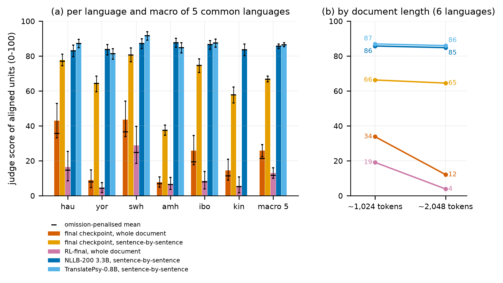
run3_table_a_unit_means.csv, run3_table_b_omission.csv, run3_sentence_level_scores.csv; paper/scripts/make_judge.py.Result. On the five common languages (Table 53, Table 54, Figure 18) the final checkpoint's native whole-document output has a judged-unit mean of 25.8 [22.4, 29.2], 16.4% of the sampled sentences get no output (omission-penalised mean 21.3 [18.3, 24.4]), against 67.0 [65.3, 68.6] for the same model's sentence-by-sentence wrapper, 85.6 [84.3, 86.9] for NLLB-200 3.3B and 86.5 [85.3, 87.6] for TranslatePsy-AfriSLM-0.8B; RL-final in whole-document mode scores 12.9 [10.0, 16.0] (7.2% omitted). On identical sampled sentences (Table 55) the whole-document output is 42.0 points below the wrapper (-42.0 [-45.1, -38.8], macro of six languages, both covered; every language has a negative interval, from -30.6 in Amharic to -56.1 in Yoruba), 10.6 points above RL-final's whole-document output (+10.6 [+7.6, +13.9]; higher in Hausa, Yoruba, Igbo and Kinyarwanda, level in Amharic +0.6 [-2.9, +3.8], Swahili +10.8 [-0.2, +22.5]), and 61.6 below NLLB-200 3.3B (-61.6 [-64.7, -58.6]). The wrapper is itself 19.9 points below NLLB-200 3.3B (-19.9 [-21.5, -18.4]), dominated by Amharic (-50.3), with Hausa (-5.7) and Swahili (-6.6) closest, in the same direction as the chrF++ comparison of Section 6.10 (NLLB and TranslatePsy ahead of the wrapper), but by a larger margin than the 1-4 chrF++ there; the two scales are not comparable. The whole-document score falls with the length of the document (Table 56): 33.8 at about 1,024 tokens and 12.1 at about 2,048 (RL-final 19.1 and 3.9), with 11% and 23% of the sampled sentences omitted for the final checkpoint, whereas the wrapper and the baselines show no length effect (wrapper 66.3 and 64.5, NLLB 85.7 and 84.8).
run3_table_c_d_paired.csv.| paired difference A minus B (same sampled sentences) | both covered: macro [95% CI] (sentences) | omission-penalised (all sampled sentences): macro [95% CI] | hau | yor | swh | amh | ibo | kin |
|---|---|---|---|---|---|---|---|---|
| Final checkpoint, whole document minus its wrapper | -42.0 [-45.1, -38.8] (495) | -45.7 [-48.5, -42.8] | -35.2 | -56.1 | -36.9 | -30.6 | -49.1 | -43.9 |
| Final checkpoint minus RL-final, both whole document | +10.6 [+7.6, +13.9] (472) | +9.1 [+6.7, +11.6] | +23.8 | +4.5 | +10.8 | +0.6 | +15.8 | +8.1 |
| Final checkpoint, whole document minus NLLB-200 3.3B | -61.6 [-64.7, -58.6] (496) | -65.6 [-68.4, -62.9] | -40.4 | -75.5 | -43.3 | -80.1 | -60.1 | -70.4 |
| Final checkpoint, wrapper minus NLLB-200 3.3B | -19.9 [-21.5, -18.4] (599) | -20.0 [-21.6, -18.4] | -5.7 | -19.5 | -6.6 | -50.3 | -11.9 | -25.8 |
| Final checkpoint, whole document minus TranslatePsy-0.8B (5 languages) | -61.0 [-64.6, -57.4] (418) | -65.2 [-68.5, -62.0] | -45.4 | -72.0 | -47.5 | -78.1 | -61.8 | n/a |
| Final checkpoint, wrapper minus TranslatePsy-0.8B (5 languages) | -19.6 [-21.1, -18.1] (499) | -19.7 [-21.3, -18.1] | -9.6 | -17.0 | -11.0 | -47.4 | -12.8 | n/a |
| RL-final, whole document minus NLLB-200 3.3B | -74.2 [-77.0, -71.4] (559) | -74.7 [-77.2, -72.3] | -68.2 | -79.4 | -59.0 | -81.7 | -77.8 | -79.0 |
run3_table_e_loops.csv, run3_sentence_level_scores.csv, run3_alignment_check.csv.| system | sampled sentences in documents flagged loop or unfinished | judged-unit mean, flagged vs unflagged documents | mean at ~1,024 / ~2,048 tokens (covered sentences) | omitted at ~1,024 / ~2,048 tokens | units possibly misaligned (alignment check) | Spearman, judge vs own-block chrF-like score |
|---|---|---|---|---|---|---|
| Final checkpoint (step 401), whole document | 105 / 600 | 8.9 vs 27.3 | 33.8 / 12.1 | 11% / 23% | 4.5% | 0.74 |
| Final checkpoint, sentence-by-sentence wrapper | 27 / 600 | 56.3 vs 65.8 | 66.3 / 64.5 | 0% / 0% | 0.0% | 0.65 |
| RL-final, whole document | 407 / 600 | 4.2 vs 28.6 | 19.1 / 3.9 | 9% / 5% | 2.2% | 0.57 |
| NLLB-200 3.3B, sentence by sentence | 0 / 600 | n/a vs 85.3 | 85.7 / 84.8 | 0% / 0% | 0.0% | n/a |
| TranslatePsy-AfriSLM-0.8B, sentence by sentence | 19 / 500 | 83.8 vs 86.6 | 86.9 / 86.0 | 0% / 0% | 0.2% | 0.46 |
How much of it is looping, and how much is the alignment? The loop and unfinished flags of LC1 explain only part of the gap: 17.5% of the final checkpoint's sampled sentences lie in flagged documents (67.8% for RL-final), where the judged-unit mean is 8.9 (RL-final 4.2) against 27.3 (28.6) in unflagged documents; even outside the flagged documents the whole-document units score 27-29, still far below the wrapper (65.8 for its unflagged documents). Whole-document units that cover two or more sentences score lower (final checkpoint 4.6, against 29.9 for single-sentence units; RL-final 4.8 against 12.5), but block size is confounded with the failure mode (an output that drifts produces long blocks), so this does not by itself say that block-level judging lowers the score. The alignment diagnostic (an own character n-gram score, diagnostic only) finds that only 4.5% of the final checkpoint's units (2.2% of RL-final's, 0.2% of TranslatePsy's, none of the wrapper's and NLLB's) match a shifted block clearly better than their own block (their judge mean is 1.7, so removing them would move the mean by about 1 point), and the judge score correlates with the own-block score at 0.74 (final checkpoint, whole document; RL-final 0.57); within the window of three sentences the low scores are not an alignment artefact, but the check cannot see larger drifts or an unlucky bead boundary.
What this adds to Section 6.10, and what it does not. The evidence of Section 6.10 (chrF++ against human references and a pseudo-reference, finished rate, loop rate, coverage) said that native whole-document translation of the science-stage model finishes documents, writes the target language and omits 12-30% of the sentences, while a sentence wrapper gives every system more. The independent judge says the same, and more sharply about quality: the text that the final checkpoint does write in whole-document mode is judged far below its own sentence-by-sentence translation and far below NLLB-200 and TranslatePsy, and it gets worse from 1,024 to 2,048 tokens. We therefore keep the existing statements (finishes, writes the language, beats the whole-document baselines on chrF++) and add that its judged quality is low; whole-document capability is "finishes and writes the language", not "translates well". The two kinds of number tell the same story at different sizes. chrF++ against pseudo-references (Section 6.10) shows a model that finishes long documents and writes the right language, with the wrapper 1-4 chrF++ behind NLLB; the judge, once the output is aligned to the source sentences, says that what the model writes in whole-document mode is far worse than its own wrapper (25.8 against 67.0) and than NLLB-200 3.3B (85.6), and puts the wrapper itself 19.9 points behind NLLB (six languages). chrF++ against pseudo-references is much less harsh than the judge, and the two scales are not comparable (caveat 4); we report both and rely on neither alone.
Is it the Ge'ez-script languages? Amharic accounts for much of the wrapper's gap to NLLB (-50.3 points, against -5.7 to -25.8 in the other five languages), so Table 57 gives the figures without it. The macro over the four non-Ge'ez languages common to all systems (Hausa, Yoruba, Swahili, Igbo; the same document-cluster bootstrap, seed and resampling weights as above, computed by paper/scripts/make_noGeez.py, which reproduces the stored five-language rows exactly) is 74.3 [72.4, 76.3] for the wrapper, 85.1 [83.6, 86.6] for NLLB-200 3.3B, 86.9 [85.6, 88.1] for TranslatePsy-AfriSLM-0.8B, 30.4 [26.1, 34.6] for the final checkpoint's whole-document output and 14.5 [10.9, 18.1] for RL-final's. The wrapper-minus-NLLB difference on identical sentences is -10.9 [-12.7, -9.1] on these four languages (-18.8 [-20.5, -17.1] on the five with Amharic) and the wrapper-minus-TranslatePsy difference -12.6 [-14.3, -11.0] (-19.6 on five). Ge'ez script therefore explains part of the sentence-level gap, but not all of it: the wrapper is also far behind NLLB in Kinyarwanda (-25.8) and Yoruba (-19.5). The whole-document failure is not a Ge'ez effect. The final checkpoint's whole-document mean is 7.7 in Amharic, but also 9.0 in Yoruba, 14.6 in Kinyarwanda and 25.9 in Igbo, against 43.0 in Hausa and 43.6 in Swahili; whole document minus wrapper is -44.3 [-48.7, -40.0] on the four non-Ge'ez languages (-42.0 on all six) and is larger in Yoruba (-56.1) than in Amharic (-30.6); whole document minus NLLB-200 3.3B is -54.8 [-59.0, -50.6] on the four. We did not test why the model is further behind in the Ge'ez-script languages (script, tokenisation cost, little data, model capacity are all candidates) and make no claim about the cause; a specialist model and a larger model are future work (Section 11).
run3_units_scored.csv, run3_sentence_level_scores.csv, per-language values as in run3_table_a_unit_means.csv; paper/scripts/make_noGeez.py.| system (judge score 0-100, QE prompt) | amh (Ge'ez) | kin | hau | yor | swh | ibo | macro of hau yor swh ibo [95% CI] |
|---|---|---|---|---|---|---|---|
| Final checkpoint, sentence-by-sentence wrapper | 37.4 | 57.8 | 77.8 | 64.3 | 80.6 | 74.6 | 74.3 [72.4, 76.3] |
| NLLB-200 3.3B, sentence by sentence | 87.7 | 83.6 | 83.0 | 83.8 | 87.2 | 86.5 | 85.1 [83.6, 86.6] |
| TranslatePsy-AfriSLM-0.8B, sentence by sentence | 84.8 | n/a | 87.2 | 81.3 | 91.7 | 87.4 | 86.9 [85.6, 88.1] |
| Final checkpoint, whole document | 7.7 | 14.6 | 43.0 | 9.0 | 43.6 | 25.9 | 30.4 [26.1, 34.6] |
| RL-final, whole document | 6.7 | 5.6 | 16.4 | 4.3 | 28.8 | 8.5 | 14.5 [10.9, 18.1] |
Caveats. (1) Validated at about 0.5. The judge correlates with human ratings of other systems' output at Spearman about 0.5; a language-level or pooled difference can be read, a single sentence cannot (Run 2: 0.30-0.55 agreement with the learned metrics). The Run 3 gaps (20-80 points) are far above that noise; the Run 2 gaps of 2-7 points are not, and the Hausa, Swahili, Igbo and Somali values rest on 25-50 validation segments per pair. (2) Unit size and prompt. The QE prompt was validated on single sentences (Run 1); Run 3 judges blocks of 1-4 sentences (mean 1.4) for the whole-document systems and single sentences for the wrapper and the baselines, so the whole-document minus wrapper contrast mixes block-level and sentence-level judging; we did not judge the wrapper outputs at block level. For Kinyarwanda and Igbo the lower validation bound is 0.20-0.21; Somali and Xhosa are not used. (3) Alignment. The aligner is the production Gale-Church aligner with omission beads; its pair F1 on corrupted outputs is 0.78 (macro; 0.34 for a text cut at half its length) and lower for loops and truncation (figures from the reward-v2 evaluation as quoted in the judge report, not recomputed here; Section 4.4 gives 0.89 for the anchored aligner on twelve other corruptions); the aligned unit of a drifting output is uncertain by construction. Omissions follow the LC1 definition (omitted or copied). (4) A reference-free LLM judge is harsher than chrF++ against pseudo-references (NLLB's own outputs are the pseudo-references of Section 6.10 and favour NLLB-like systems), and we did not test whether the judge itself prefers NLLB-like text. (5) Sample sizes and sampling. Run 3 has 100 sampled sentences per language and system with document-cluster intervals; Run 2 uses no_pair rows only and 170 sentences for Hausa. The NLLB-3.3B outputs of the core documents are the same sentence translations that serve as the LC1 pseudo-reference and as the length model of the aligner for every system. (6) One run of a hosted model that may change; no human reference for Run 3; whole-document modes of NLLB and TranslatePsy and the Gemini pseudo-reference of Appendix I were not judged. (7) Overlap of the validation material with our training and evaluation text (Section 6.9a). The validation used the SSA-MTE train split, which is in our SFT text, and AfriMTE-WMT2024, whose English sources are 100% FLORES+ devtest sentences (1,916 sentences, nine pairs). The judge scored other systems' outputs there, so our models' exposure does not enter the validation correlations, but the validation sentences are not independent of our training and evaluation text, and all 19 few-shot demonstrations of the Swahili, Igbo, Somali and Xhosa prompts are FLORES+ devtest sentences (with other systems' translations and human scores) from the benchmark that Run 2 samples (an index-based check found 5 of the 800 sampled sentences of these four languages among the demonstrations of their own prompts, about what chance gives; we did not verify the sentence-id mapping further). The demonstrations are identical for SFT-final and RL-final, so they cannot favour one of the two. (8) Disclosure. Run 3 judges the existing LC1 outputs of NLLB-200 3.3B and TranslatePsy-AfriSLM-0.8B; they were sent to the Gemini API for evaluation only, as were the benchmark sentences (SSA-MTE, AfriMTE, FLORES+, AfriLongDoc); no output of these systems and no TranslatePsy data was used for training or in any experiment, and judge outputs are used for evaluation only. All prompts and responses are stored with the results (reports/data/judge_j2_2026-10-25/).
Each component of the reward was motivated by a measurement, on corrupted or human text or on a failure of the previous version. This section reports those measurements, including the ones that went against what we expected, and (Section 7.9) what the extra terms of the final run did and did not do on stored outputs. Figure 19 summarises six of the measurements.
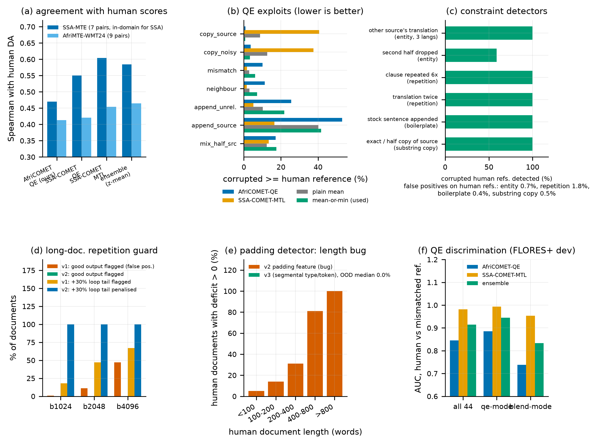
We started with AfriCOMET-QE-STL-1.1, the only QE model validated for most of our languages. Against human adequacy scores it was the weakest of the four options we tested (Figure 19a): Spearman 0.470 on SSA-MTE against 0.550 for SSA-COMET-QE and 0.604 for SSA-COMET-MTL run without reference (we reproduce the published 0.547 / 0.595 with 0.550 / 0.604), and 0.413 against 0.421 and 0.454 on the independent AfriMTE-WMT24 challenge set, where SSA-COMET-QE's advantage vanishes (+0.007 [-0.010, +0.023]) and that of SSA-COMET-MTL stays (+0.040 [+0.011, +0.068]). The human segments come from other systems (Gemini, GPT-4o, NLLB, Google), not from a 270M model, so this is evidence about the metric, not about our policy. A reward model is used inside GRPO to rank samples of the same source, and for that every QE metric turned out to be a weak ranker: the within-prompt Spearman correlation with sentence chrF++ over 8 samples of the final model is 0.145 for AfriCOMET-QE, 0.164 for SSA-COMET-MTL and 0.172 for the ensemble, and the sample each metric ranks first is only 0.9-1.0 chrF++ above the group mean, out of 5.1 for an oracle that picks the best of eight. The consensus signal is a much stronger ranker against chrF++ (0.370), partly by construction, which is why we keep it as a component.
Why. Every learned metric used in this paper is either part of the reward stack or shares training data and encoders with it (Section 6.9), and chrF++ rewards surface overlap. A large language model prompted as a judge is a different kind of scorer, trained by neither us nor the metric authors. Before using it on the translations of our models we measured how well it tracks human ratings of other systems' translations. This subsection reports that validation pilot (reference-based prompt); the validation of the reference-free prompt and the application of the judge to our models are in Section 6.12. The scores of the pilot are not an evaluation of our model, and no judge score is a human evaluation.
Judges and prompt. Two Gemini models as served by the Gemini API on 2026-10-25: gemini-3.1-pro-preview ("3.1 Pro") and gemini-3.8-flash ("3.8 Flash"). We wanted to reproduce the judge of the SSA-COMET paper, Gemini 2.5 Pro (Li et al., 2025), but the API returned 404 ("no longer available to new users") for gemini-2.5-pro with our key, so a reproduction was not possible; 3.1 Pro is the successor model, and 3.8 Flash was added as the cheap candidate. The prompt is the reference-based prompt of Figure 8 of Li et al. (Li et al., 2025), used verbatim: an adequacy scale from 0 to 100 with four described levels (0, 34, 67, 100), the instruction to output only the score, five demonstrations (source, translation, reference, score; one demonstration per adequacy interval) and then the segment to score. Settings: temperature 0, the model's default thinking, the Batch API, one run per judge (no repeat). Output caps of 2,300 (Pro) and 2,200 (Flash) tokens for the 288 main requests and 8,192 for a 12-request probe. No output failed to parse (0 of 300 per judge), so the three parsing variants we tried (the paper's rule that scores an unparsable answer 0.5, dropping failures, and a lenient parser) give the same pooled value (sensitivity_parse.csv).
Sample and target. 300 segments of other systems' output with human adequacy scores: SSA-MTE (English to Amharic, Yoruba, Kinyarwanda, Hausa; 50 segments each) and AfriMTE-WMT2024 (English to Swahili, Igbo, Somali, Xhosa; 25 each), drawn with seed 2026 and stratified into five strata of the human score within each pair (sample_ids.csv). The human target is the z-score of the direct assessment. The judges are compared with SSA-COMET-MTL with reference and the two AfriCOMET with-reference models, scored on the same segments.
Deviations from the original protocol, all of them ours. (1) Gemini 3.1 Pro instead of 2.5 Pro, plus a second, cheaper judge. (2) The demonstrations of the four SSA-MTE pairs come from the pair's train split (one per adequacy interval); for the four AfriMTE pairs we did not use a train split but drew them from other rows of the same pair whose sources are not in the sample and mapped the z-scores to 0-100 by min-max scaling per pair. This is our substitute, not the published protocol. (3) A 300-segment stratified sample instead of the complete test sets. (4) One run per judge, so run-to-run variation of the judge is not measured. (5) Demonstration data exist for 11 languages (amh hau kik kin luo twi yor swh ibo som xho); the pilot sampled 8 of them, and the SSA-MTE pairs for kik, luo and twi were not sampled.
Result. Table 58 gives Spearman correlations with the human score (Pearson values, in the pilot's correlations.csv, give the same order of the three main scorers: Flash 0.610, Pro 0.566, SSA-COMET-MTL 0.628 pooled). Pooled over the 300 segments, 3.8 Flash correlates at 0.511 [0.41, 0.60], 3.1 Pro at 0.454 [0.35, 0.55], SSA-COMET-MTL with reference at 0.536 [0.44, 0.62] and AfriCOMET with reference at 0.447-0.449; after removing the per-pair means (a correlation within languages rather than across them) the values are 0.584, 0.538, 0.556 and 0.497-0.498. The paired difference (Table 59) of Pro minus Flash is -0.057 [-0.09, -0.02], and -0.046 [-0.08, -0.02] after demeaning, so on this sample the larger model is not the better correlated one; Pro minus SSA-COMET-MTL is -0.082 [-0.17, +0.00] (-0.018 [-0.11, +0.05] demeaned). The two judges agree closely with each other (Spearman 0.94, Pearson 0.96 between their scores over the 300 segments). Per pair the picture is heterogeneous: Swahili is easy for every scorer (judges 0.82-0.86, learned metrics 0.83-0.87), Amharic, Yoruba, Kinyarwanda, Hausa and Igbo lie at 0.49-0.64 for the judges, and Somali (judges 0.32 and 0.51, SSA-COMET 0.70) and Xhosa (0.19 and 0.19, SSA-COMET 0.33, AfriCOMET-STL 0.34) are poor for the judges; on the four AfriMTE pairs pooled, SSA-COMET-MTL (0.635) is clearly better than Pro (0.438; difference -0.197 [-0.36, -0.04]) and higher than Flash (0.462; difference not tested), while on the four SSA-MTE pairs pooled Flash (0.537) and the metric (0.530) are level. Per pair, 3.8 Flash is higher than 3.1 Pro in 7 of 8 pairs (the Igbo and Xhosa differences are below 0.002) and the interval of the difference excludes zero only for Hausa (-0.096 [-0.20, -0.01]) and Somali (-0.197 [-0.44, -0.03]). On the four SSA-MTE pairs for which the SSA-COMET paper reports Gemini-2.5-Pro values (amh 0.605, hau 0.471, kin 0.528, yor 0.524; as recorded in the pilot's paper_reproduction_check.csv, not re-verified by us against the publication), 3.1 Pro gives 0.540, 0.516, 0.486 and 0.618 on our 50-segment samples; that is a comparison of similar magnitude, not a reproduction, because the sample, the model and the exact scoring differ.
reports/data/judge_pilot_2026-10-25/correlations.csv.| pair | set | segments | Gemini 3.1 Pro: Spearman [95% CI] | Gemini 3.8 Flash: Spearman [95% CI] | SSA-COMET-MTL (ref) | AfriCOMET-STL-1.1 (ref) | AfriCOMET-MTL-1.0 (ref) |
|---|---|---|---|---|---|---|---|
| Amharic (amh) | SSA-MTE | 50 | 0.540 [0.28, 0.74] | 0.561 [0.29, 0.77] | 0.587 | 0.547 | 0.529 |
| Yoruba (yor) | SSA-MTE | 50 | 0.618 [0.40, 0.78] | 0.639 [0.40, 0.81] | 0.475 | 0.432 | 0.384 |
| Kinyarwanda (kin) | SSA-MTE | 50 | 0.486 [0.22, 0.69] | 0.535 [0.28, 0.74] | 0.616 | 0.555 | 0.502 |
| Hausa (hau) | SSA-MTE | 50 | 0.516 [0.28, 0.70] | 0.612 [0.39, 0.78] | 0.518 | 0.446 | 0.589 |
| Swahili (swh) | AfriMTE | 25 | 0.818 [0.58, 0.94] | 0.857 [0.67, 0.95] | 0.866 | 0.865 | 0.830 |
| Igbo (ibo) | AfriMTE | 25 | 0.528 [0.10, 0.79] | 0.529 [0.11, 0.77] | 0.520 | 0.408 | 0.472 |
| Somali (som) | AfriMTE | 25 | 0.317 [-0.13, 0.67] | 0.513 [0.13, 0.79] | 0.700 | 0.574 | 0.652 |
| Xhosa (xho) | AfriMTE | 25 | 0.192 [-0.18, 0.51] | 0.190 [-0.24, 0.55] | 0.330 | 0.337 | 0.160 |
| pooled | both | 300 | 0.454 [0.35, 0.55] | 0.511 [0.41, 0.60] | 0.536 | 0.447 | 0.449 |
| pooled SSA-MTE pairs | SSA-MTE | 200 | 0.471 [0.35, 0.58] | 0.537 [0.41, 0.64] | 0.530 | 0.436 | 0.462 |
| pooled AfriMTE pairs | AfriMTE | 100 | 0.438 [0.25, 0.59] | 0.462 [0.28, 0.62] | 0.635 | 0.569 | 0.565 |
| pooled, language-demeaned | both | 300 | 0.538 [0.44, 0.62] | 0.584 [0.49, 0.67] | 0.556 | 0.498 | 0.497 |
reports/data/judge_pilot_2026-10-25/paired_differences.csv.| pair | segments | Pro minus Flash: difference of Spearman [95% CI] (bootstrap SE) | Pro minus SSA-COMET-MTL (ref): difference [95% CI] (bootstrap SE) |
|---|---|---|---|
| Amharic (amh) | 50 | -0.020 [-0.11, +0.06] (SE 0.043) | -0.047 [-0.23, +0.12] (SE 0.087) |
| Yoruba (yor) | 50 | -0.021 [-0.10, +0.06] (SE 0.040) | +0.143 [-0.11, +0.41] (SE 0.134) |
| Kinyarwanda (kin) | 50 | -0.049 [-0.15, +0.05] (SE 0.050) | -0.130 [-0.28, +0.01] (SE 0.076) |
| Hausa (hau) | 50 | -0.096 [-0.20, -0.01] (SE 0.047) | -0.002 [-0.20, +0.20] (SE 0.103) |
| Swahili (swh) | 25 | -0.039 [-0.15, +0.04] (SE 0.048) | -0.048 [-0.25, +0.14] (SE 0.097) |
| Igbo (ibo) | 25 | -0.001 [-0.28, +0.31] (SE 0.145) | +0.008 [-0.35, +0.36] (SE 0.175) |
| Somali (som) | 25 | -0.197 [-0.44, -0.03] (SE 0.104) | -0.383 [-0.82, +0.02] (SE 0.216) |
| Xhosa (xho) | 25 | +0.002 [-0.19, +0.18] (SE 0.095) | -0.138 [-0.33, +0.04] (SE 0.098) |
| pooled | 300 | -0.057 [-0.09, -0.02] (SE 0.018) | -0.082 [-0.17, +0.00] (SE 0.044) |
| pooled SSA-MTE pairs | 200 | -0.065 [-0.11, -0.02] (SE 0.022) | -0.059 [-0.16, +0.04] (SE 0.053) |
| pooled AfriMTE pairs | 100 | -0.024 [-0.09, +0.04] (SE 0.032) | -0.197 [-0.36, -0.04] (SE 0.083) |
| pooled, language-demeaned | 300 | -0.046 [-0.08, -0.02] (SE 0.017) | -0.018 [-0.11, +0.05] (SE 0.041) |
What the 300 segments can and cannot resolve. The bootstrap standard error of a paired difference of two scorers is about 0.02 for the pooled sample (0.018 for Pro minus Flash, 0.044 for Pro minus SSA-COMET-MTL) and 0.04-0.15 (Pro minus Flash) and 0.08-0.22 (Pro minus SSA-COMET-MTL) per pair, with 25 or 50 segments each; the confidence intervals of single correlations per pair are 0.3-0.8 wide. The pilot therefore supports a statement about the pool (the judges are in the same range as the learned metric, and the cheap model is not worse than the expensive one) and cannot rank the two judges language by language; for Somali and Xhosa it shows that the judges are noisy relative to the learned metrics, not by how much. It validates the reference-based prompt only; the reference-free (quality-estimation) prompt of the same paper was not run in the pilot and is validated in Section 6.12 (Run 1). The segments are translations by other systems (not by a 270M model), the judge saw the human reference, and scores of segments from the pool of one annotation campaign need not transfer to our model's output.
Decision, and cost. On this evidence we used 3.8 Flash as the independent judge (Section 6.12): it is at least as well correlated with the human ratings as the stronger 3.1 Pro model on this sample and roughly on par with SSA-COMET, at about one fifth of the price (Table 60: 1.53 USD for 3.1 Pro and 0.29 USD for 3.8 Flash for the 300 segments, i.e. about 0.0051 and 0.00096 USD per segment; input tokens identical, the difference is the price per token and the thinking tokens). The judge was then applied, within a budget cap of 8 USD (spent: 5.42 USD), to the FLORES+ translations of SFT-final and RL-final and to aligned units of the long-context documents; those scores, and their caveats, are in Section 6.12.
reports/data/judge_pilot_2026-10-25/cost_and_failures.csv, ledger.json.| judge | segments | parse failures | input tokens | output tokens (incl. thinking) | mean thinking tokens per segment | actual cost (USD) | USD per segment |
|---|---|---|---|---|---|---|---|
| Gemini 3.1 Pro (gemini-3.1-pro-preview) | 300 | 0 | 307,364 | 204,190 | 679 | 1.53 | 0.00511 |
| Gemini 3.8 Flash (gemini-3.8-flash) | 300 | 0 | 307,364 | 92,373 | 306 | 0.29 | 0.00096 |
Data and licences. SSA-MTE (McGill-NLP/SSA-MTE, CC-BY-SA-4.0) and AfriMTE-WMT2024 (masakhane/AfriMTE-WMT2024, CC-BY-4.0) are the only data of the pilot; their segments and human scores were used to compute correlations and as demonstrations, not for training. All files of the pilot are in reports/data/judge_pilot_2026-10-25/ (raw judge responses, scores per segment, sample ids, the example prompt for Yoruba, the sensitivity of the parsing rule).
SSA-COMET-MTL is the best discriminator of wrong-content translations (AUC human against mismatched reference 0.983 against 0.866; hard-class failure rate 0.027 against 0.109) but encodes source and translation as one sequence, so an exact copy of the English source scores at least as high as the human reference in 41% of the sentences (AfriCOMET-QE: 1.3%), and a copy with 20% of the words dropped in 38% (4.5%). The existing guards (Jaccard copy, GlotLID) remove most of it (residual 1.7% against 0.4%), but a policy under RL could search for such a residual (in our runs we saw no copying: Section 7.9). An average of the two shaped rewards cuts the hard-class failure rate to 0.044 and the copy failure to 8.8%; the mean-or-min rule with $\delta=1.0$ reward unit (the smallest threshold for which the min branch takes at most 15% of policy chunks) brings the copy failure of exact copies to 0.8% and of noisy copies to 3.3%, as low as AfriCOMET alone, while keeping about half of SSA-COMET's gain on mismatched and neighbouring references (failure 6.1% and 7.2% against 10.1% and 11.3%). The branch fires on 96% of exact copies, 91% of noisy copies and 22.5% of the human references (a small loss: they get the lower of two high scores). Partial copies remain the weak spot of every metric: appending the source to a correct translation is rewarded by all metrics (failure 17-53%) and is handled only by the length-window and extra-output rules. In the 11 blend languages the ensemble improves the within-prompt ranking by +0.021 [+0.006, +0.036] and lifts AUC from 0.738 to 0.833; no language is unusable for the ensemble. The expected effect on translation quality is small (the metric-selected sample differs by about +0.1 chrF++), and we have not run the A/B of ensemble against AfriCOMET alone in an RL run: the ensemble is used in the final run (Section 6.7), which also changed the data, the stage and other reward terms and therefore does not isolate the ensemble.
For the 23 consensus-only languages and the blend languages the content signal is weak, and a policy could in principle satisfy it with outputs that are not translations (the simulations below show how). We built detectors whose every threshold is a quantile of human text (Table 61): repetition and a cross-prompt boilerplate buffer, number and name preservation, substring copying of the source, a function-word profile and a padding feature. The detectors were chosen by measuring both detection of corrupted human references and false positives on held-out human text; none is a bonus. Where the human text came from: the thresholds of the anchors of the final run were fitted on FLORES+ dev, SmolDoc documents and AfriScience dev documents and also on the test splits of NTREX-128, SmolSent, SALT, GlotStoryBook, IbomMT and FLORES-MOZ (thresholds only, never training data), so the final run's results on those test sets are not independent tests (Section 6.9a).
reports/anchors_2026-10-21.md, anchors_v2_2026-10-22.md, anchors_v3_2026-10-22.md.| detector | detection of corrupted human references | false positives on held-out human text | source |
|---|---|---|---|
| entity (numbers), 3 weak languages | 100% (other source's translation); 59% (second half dropped) | 0.7% mean, 2.0% max | anchors_2026-10-21.md l.55-67, l.45-53 |
| repetition | 100% (clause x6, whole translation twice) | 1.8% mean, 6.7% max (sentences) | same |
| boilerplate buffer | 100% (stock sentence appended) | 0.4% mean, 3.0% max | same |
| substring copy (v2) | 100% exact / appended / half copies; 78% of a copied 25% tail; 96% of a 50% tail | 0.5% mean, 1.3% max (sentences), 0.0% (documents) | anchors_v2_2026-10-22.md sec. 3 |
| stop-word profile (v2) | AUC 0.99 vs English copy, 0.97 vs stuffed bags (sentences) | 1.2% sentences, 0.6% documents | anchors_v2 sec. 4 |
| padding, v2 (length bug) | bag/repeat attacks caught | 5 / 14 / 31 / 81 / 100% of human documents of <100 / 100-200 / 200-400 / 400-800 / >800 words | anchors_v3 sec. 1 |
| padding, v3 (segmental type/token) | -- | 0.0% median out-of-domain FP (max 76.4%, sid) | anchors_v3 sec. 3 |
Three findings shaped the design. The consensus signal has an attractor: in a simulation in which k of 8 members of a GRPO group are replaced by the same deterministic attack text and one by the human reference, four identical attackers beat the honest members in 95-100% of the prompts without any anchor, because their mutual agreement is perfect; document-level stuffed bags, padded outputs and glosses are caught, in simulation, by the combination of the hard gates and the function-word profile (combined penalty 1.4-2.0 against 0.03 for human text), but length-matched natural filler (0.19), a bag matching the human function-word share (0.23) and dictionary glosses padded with filler (0.08) remain nearly undetected, a risk limited to the consensus-only languages. The first padding detector had a length bug: its type/token-ratio thresholds were fitted on text of at most about 250 words, but the ratio falls with length, so it flagged 5 / 14 / 31 / 81 / 100% of human documents of < 100 / 100-200 / 200-400 / 400-800 / > 800 words (12,649 documents), and the live run showed 26-63% "stuffed output" failures in Sidamo, Wolaytta, Basaa, Yao, Duala and Urhobo; a segmental ratio (mean over 100-word segments; anchors v3) lowered the share of flagged human documents to 0.7 / 4.8 / 1.0 / 0.2 / 0% in the same five length bins, and the out-of-domain median false positive to 0.0% (reports/anchors_v3_2026-10-22.md sections 1 and 4). The same study showed that thresholds fitted on religious text do not transfer: the function-word profile flagged a median 34.6% of out-of-domain human text of 13 languages, so it is switched off for languages without an out-of-domain held-out set. A language with only religious text cannot be calibrated honestly: for Urhobo we used 230 sentence pairs generated by Gemini (not native-verified) only as a check; they are lexically far from our corpus (34.5% of word types unseen against 5.4% for held-out Bible-style text) and templated, and our models agree with them at 24.7 chrF++, which is not a quality measure.
The detectors also measured our own model. The greedy outputs of the final general model for the 45 weakest languages are flagged for repetition in 30% of the cases (2.1% for the human references of the same sources), for boilerplate in 14% (0%), with the worst cases Esan (86% repetition), Edo (74%), Ghomala (66%), and Fon (23% repetition, 41% boilerplate): the model really loops in the weak languages and only there. The final run lowers but does not remove this (Section 7.9).
The v1 reward could not rank long outputs. Its repetition guard (fewer than 30% distinct words) fires on length alone: on 0.8% of human documents of 1,000-2,000 words and 10.3% of those above 2,000 words, on 32% and 56% of NLLB's translations in the same buckets, and on 47% of the good sentence-by-sentence translations at b4096, while it misses a 30% repeated tail at b1024 (flagged in 18% of cases). The sentence aligner finds the true sentence pairs of a corrupted document with F1 of 0.66 (legacy), 0.78 (language-aware, used in training) and 0.89 (anchored, v2); only 0-3% of the policy's outputs have exactly the source's number of sentences, so the equal-count shortcut never applies. Of the aggregators tried (mean, minimum, 25th percentile, CVaR), the minimum is useless (AUC 0.72-0.79 even for a text cut in half) and the tail terms add only +0.02-0.08 robust AUC against the mean; what matters is which chunks are failed and which texts are flagged degenerate. With v2 good sentence-by-sentence output is no longer flagged at any bin and P(sentence-by-sentence > loop-free whole-document output) rises from 0.96 / 0.91 / 0.61 to 0.98 / 1.00 / 1.00 at b1024 / b2048 / b4096 (Figure 19d). At b1024 and b2048 the drop was real behaviour of the policy, not of the reward: greedy members loop in 49% and 76% of the groups, the 8 sampled members stop (100%) but are cut short (reward -0.88 and -1.41 with a within-group standard deviation of only 0.18 and 0.11), and the greedy member's -2 inflates the group standard deviation by 1.8 to 2.0 times, shrinking the advantage of the 15 sampled members by a quarter to a third. In the final run the greedy member's advantage is therefore computed against the sampled members' statistics, capped and scaled by 0.3 (grad norm 0.6 for the A2W start, against 8-19 with the plain recipe from the earlier final-1433 start). These are measurements of the reward and of the policy before the final run; what reward v2 achieved in that run is in Section 7.9 (f).
We tested whether stronger models can supply supervision where ours is weak. NLLB-200 covers 44 of the 77 RL languages and 22 of the 23 consensus-only languages are not among them (only Kabuverdianu is). Where it covers a language the 3.3B model is clearly better than ours: macro chrF++ 38.09 against 34.25 over 44 FLORES+ languages (+3.84 [+3.75, +3.93]; NTREX +4.22, MAFAND +3.47, SmolSent +5.54), with the largest margins for Kongo (+31.1), Kabuverdianu (+21.1), Amharic (+19.0), Tigrinya (+11.0), Kanuri (+9.7) and Nuer (+7.9) (Table 62); the distilled 600M model is better only by +1.68 and worse than ours on non-Bantu Atlantic-Congo languages. Used as an RL reward, the chrF++ against an NLLB pseudo-reference tracks human chrF++ of policy samples better than AfriCOMET-QE does (Spearman 0.57 against 0.28, within a group 0.40 against 0.15), adds information beyond the group consensus (partial Spearman 0.31 against 0.07) and discriminates well (AUC 0.97 against 0.87); its weaknesses are padding (an unrelated sentence appended to a human translation scores at least as high in 27% of the sentences) and a style pull. A forced-decoding score is excellent against padding and omission but prefers copies of the English source (92% of copies beat the human translation), so it is not used. We therefore enable the pseudo-reference signal (weight 0.23-0.35) for five covered weak-signal languages only, and its precomputed pseudo-references cover just 10-17% of their draws. A widening of the signal to 24 languages has been calibrated for a next round but not used (Section 7.8). Gemma-4-31B-it as a data teacher failed: with eight retrieved examples per prompt it improves on our model by the pre-registered margin of +3 chrF++ for 2 of the 23 consensus-only languages (Kabuverdianu +16.1, Krio +3.5, the latter conditionally) and is not better for the other 21 (clearly worse for 17, level for Esan, Ghomala, South Ndebele and Herero), including all six named weak languages (Esan -1.1, Edo -5.9, Ghomala -2.4, Okpe -9.7, Tswa -3.3, Dagbani -10.3; Table 63); zero-shot it scores 1-14 chrF++ on 16 languages, and its few-shot results look decent only because retrieval returns the religious phrases that our model has already absorbed (k=3 is 6-12 points below k=8). The held-out references are mostly religious text from our own corpus, which favours our model, so the comparison is biased in our favour; the out-of-domain benchmark rows are the fairer side.
reports/nllb600m_teacher_2026-10-22.md section 1).| benchmark (en$\to$X) | langs | ours chrF++ | NLLB-3.3B | $\Delta$ [95% CI] | ours spBLEU | NLLB-3.3B | $\Delta$ [95% CI] |
|---|---|---|---|---|---|---|---|
| FLORES+ devtest no_pair | 44 | 34.25 | 38.09 | +3.84 [+3.75, +3.93] | 12.58 | 17.01 | +4.43 [+4.31, +4.53] |
| FLORES+ devtest clean | 44 | 31.86 | 34.99 | +3.13 [+2.77, +3.49] | 10.49 | 14.34 | +3.85 [+3.42, +4.26] |
| NTREX-128 no_pair | 21 | 38.98 | 43.2 | +4.22 [+4.14, +4.31] | 17.28 | 21.83 | +4.55 [+4.44, +4.66] |
| NTREX-128 clean | 21 | 37.37 | 41.47 | +4.10 [+4.00, +4.20] | 15.64 | 20.03 | +4.39 [+4.26, +4.52] |
| MAFAND-MT test no_pair | 14 | 40.72 | 44.18 | +3.47 [+3.28, +3.67] | 18.89 | 23.56 | +4.66 [+4.44, +4.91] |
| MAFAND-MT test clean | 14 | 40.5 | 43.99 | +3.49 [+3.25, +3.72] | 18.67 | 23.34 | +4.67 [+4.40, +4.94] |
| SmolSent no_pair | 36 | 31.68 | 37.22 | +5.54 [+5.41, +5.65] | 10.53 | 16.04 | +5.51 [+5.37, +5.67] |
| SmolSent clean | 36 | 27.01 | 32.45 | +5.45 [+5.13, +5.78] | 6.92 | 12.31 | +5.39 [+5.04, +5.82] |
| SALT no_pair | 3 | 45.2 | 48.68 | +3.48 [+2.23, +4.70] | 22.69 | 26.34 | +3.65 [+2.17, +5.11] |
| SALT clean | 3 | 43.06 | 47.2 | +4.14 [+2.19, +6.20] | 22.25 | 26.24 | +3.99 [+1.48, +6.55] |
| iso | language | n | our model | Gemma-4-31B few-shot-8 | $\Delta$ | 95% CI | verdict |
|---|---|---|---|---|---|---|---|
| ish | Esan | 61 | 31.9 | 30.8 | -1.1 | [-4.9,+2.7] | FAIL (level) |
| bin | Edo | 132 | 32.2 | 26.2 | -5.9 | [-7.6,-4.4] | FAIL |
| bbj | Ghomala | 54 | 25.6 | 23.2 | -2.4 | [-5.7,+1.2] | FAIL (level) |
| oke | Okpe | 109 | 41.2 | 31.5 | -9.7 | [-12.9,-6.3] | FAIL |
| tsc | Tswa | 150 | 34.0 | 30.7 | -3.3 | [-6.7,-0.2] | FAIL |
| dag | Dagbani | 150 | 38.7 | 28.5 | -10.3 | [-13.0,-7.5] | FAIL |
| ibb | Ibibio | 150 | 37.5 | 25.3 | -12.2 | [-15.1,-9.3] | FAIL |
| urh | Urhobo | 113 | 38.5 | 28.7 | -9.9 | [-12.7,-6.6] | FAIL |
| nbl | S. Ndebele | 150 | 34.7 | 33.9 | -0.8 | [-3.5,+1.9] | FAIL (level; GlotLID 0.33) |
| shi | Tachelhit | 150 | 20.1 | 17.4 | -2.7 | [-4.7,-0.6] | FAIL |
| kea | Kabuverdianu | 150 | 28.8 | 44.9 | +16.1 | [+13.9,+18.1] | PASS |
| ach | Acholi | 150 | 35.3 | 28.8 | -6.5 | [-9.1,-3.9] | FAIL |
| vmw | Makhuwa | 150 | 32.5 | 20.4 | -12.1 | [-14.0,-9.9] | FAIL |
| seh | Sena | 150 | 39.2 | 28.3 | -10.9 | [-14.2,-7.2] | FAIL |
| nyn | Nyankore | 150 | 33.4 | 25.6 | -7.8 | [-10.9,-4.4] | FAIL |
| her | Herero | 150 | 27.6 | 27.8 | +0.2 | [-2.3,+2.7] | FAIL (tie) |
| yao | Yao | 94 | 39.1 | 31.8 | -7.3 | [-10.0,-4.5] | FAIL |
| sid | Sidamo | 96 | 35.8 | 24.5 | -11.3 | [-14.5,-7.7] | FAIL |
| ndc | Ndau | 150 | 34.9 | 30.3 | -4.6 | [-6.9,-2.2] | FAIL |
| kri | Krio | 150 | 35.3 | 38.7 | +3.5 | [+1.4,+5.8] | PASS (conditional) |
| dua | Duala | 88 | 41.2 | 29.9 | -11.3 | [-15.6,-5.9] | FAIL |
| bas | Basaa | 79 | 39.7 | 31.1 | -8.7 | [-12.2,-5.6] | FAIL |
| wes | Cameroon Pidgin | 47 | 54.0 | 48.1 | -5.9 | [-8.0,-3.6] | FAIL |
The consensus reward improved the languages it was used for (Section 6.1), but the outputs of the consensus-only languages also became more alike across different prompts. On the 23 consensus-only languages (the 13 of them with references for the own-reference measures), the share of outputs containing a five-gram found in at least three other prompts' outputs is 24.7% for SFT and 31.6% for the final model, against 2.8% for human references; the sentence chrF++ between an output and the output for a different source rises from 13.1 to 18.6 (14.1 between a human reference and the reference of another source, 13 languages); and the recall of numbers and names from the source is 73.4%, against 44.5% for human references (the model keeps more of the source than humans do). For the 10 control languages with a learned reward the same figures barely move (boilerplate 0.6% human, 2.3% model). These are the symptoms the anchors of Section 7.3 were built for, and the final run still has them (the boilerplate rate of the consensus-only languages is 2.45% for the final checkpoint, 0.25 pp below RL-final, against 0.38% for human references; Section 7.9); whether they hurt real translation quality we cannot say, because the sentence-level chrF++ gains of the same languages were large. We report this as a risk of consensus-based rewards, not as a settled defect.
A cross-sectional regression over 64 languages (gain on SFT level, reward mode, script and log2 of the number of RL samples a language saw) gives +1.4 chrF++ per doubling of RL samples with a 95% bootstrap interval of [-0.3, +3.1] and -1.6 chrF++ of gain per +10 points of baseline [-2.7, -0.6]; the number of samples is almost collinear with the draw-weight class (r = 0.988), so the data are consistent with a real effect of that size and with none, and headroom is the first-order effect (R-squared 0.47 for the baseline alone). Moving draw weights by 25% is expected to change the result by about 0.4 chrF++ at the point estimate, below what the dev sets can resolve (minimum detectable change at 80% power 1.2-1.5 chrF++ for macros of 6 to 19 languages and 2.9-6.5 for single languages), so the adaptive weight controller was kept in dry-run mode and the draw weights are a bet, not a measured effect (gemma_mt/reports/adaptive_language_weights_2026-10-22.md section 0).
Section 7.5 enabled the NLLB-200-3.3B pseudo-reference signal (call it A: the chrF++ of a chunk against the NLLB translation of its source) for five languages only. For a next RL round we measured whether it should be widened. None of what follows was used in the runs reported in this paper: the final run uses the five-language setting of Section 7.5; the widened configuration exists as a calibration file and a precomputed pseudo-reference store and has not been trained on. The signal is reward-only (NLLB-200 weights are CC-BY-NC, Section 12).
Which languages. A language qualifies when the teacher is clearly better than our model (chrF++ gap of at least 2 with a bootstrap interval above 0; the 24 selected languages have gaps of +2.0 to +21.1), a development AUC for ranking the human reference above a mismatched one of at least 0.80, a hard-class failure rate of at most 0.25 on corrupted references and a within-group Spearman correlation with human chrF++ of at least 0.20; 24 languages pass all four gates (amh bam bem ewe kab kbp kea kik kin lin lug luo mlg nus orm run sna ssw tir tsn tso tum xho zul), 19 other covered languages do not because the teacher is not clearly better. Pseudo-references were precomputed for 25 languages (all b64-b512 windows, 14-30% of the b1024 and b2048 windows for most languages, 37-69% for six of them); the expected share of chunks with a pseudo-reference is 0.67-0.84 (mean 0.72), and chunks without one keep the current reward.
Alignment with human chrF++ on policy samples. On 80 prompts of eight samples of the RL model per language, the Spearman correlation of A with the human chrF++ of the sample exceeds that of the reward the policy gets today by +0.11 to +0.42 in all 24 languages, with a 95% interval (cluster bootstrap over prompts, 300 resamples) above zero in 21 of 24 (it includes zero for Kabiye, Tsonga and Shona); within a GRPO group A is better in every language (0.36-0.62 against 0.06-0.41). The target of this comparison is chrF++ against one human reference, which favours any overlap signal and the consensus signal by construction (Table 64).
Human judgements say something different. On human direct assessments (SSA-MTE segments of other MT systems, NLLB's own output excluded) for the seven languages that have them (amh kik kin luo twi hau yor; four of them in the widened set), A alone correlates worse with the human score than SSA-COMET-MTL in all seven (the interval of the difference lies entirely below zero in each) and is not better than the QE ensemble in amh, kin, yor and hau; in kik, luo and twi it is about equal to the ensemble (Table 65). Blended into the QE ensemble it does not hurt and mostly helps: at weight 0.25 the Spearman correlation with the human score of the blend rises by +0.03 to +0.05 in kik, luo, twi and yor (intervals above zero), by +0.014 in amh, by +0.020 in hau (interval touching zero) and by +0.004 in kin (interval includes zero); at 0.35 the gain in amh, kin and hau is within noise, and at 0.5 the point estimates for amh, kin and hau are negative (all intervals include zero). The weights are therefore capped at 0.35 everywhere and 0.25 for amh and kin. For the other 17 languages no human assessments exist, and the evidence is chrF++-based only.
Weak points. Padding is the weak class of A: a human translation with an unrelated sentence appended is ranked above the padded version with an AUC of only 0.46-0.65 (the QE ensemble reaches 0.55-0.82; A is worse in all 23 languages that have an ensemble), exact copies are separated slightly less well than by QE (A better in 2 of 23 languages, AUC 0.90-1.00) and so are halved translations in 17 of 23 languages (A 0.83-0.97; below 0.90 in amh bam kab kbp kik ssw tir tum). Mismatched translations are separated better by A (0.94-1.00 against QE in 22 of 23). A also pulls the student towards NLLB's style, and it double-counts where the SFT mixture already contains NLLB-3.3B translations: for the mixture "C3" of Section 6.6 (4.47 M teacher tokens in 27 languages) the weight is multiplied by a discount that falls linearly with the share of teacher tokens of the language (factor between 0.4 and 1; a heuristic, not an estimated quantity). The weights are $w=0.35\times$ reliability $\times$ a gap factor $\times$ a failure factor $\times$ alignment $\times$ partial correlation, capped at 0.35: mean 0.27 for a start model without NLLB data and 0.19 with the discount (range 0.09-0.35). The length and ratio guards and the consensus signal stay on, and the plan is to monitor, every few steps, whether the A-reward rises while human chrF++ on the held-out FLORES dev sentences stays flat (a sign of convergence to NLLB's style rather than improvement). Cost: about 0.5 ms per chunk on one CPU core (2.3 s per step), no GPU.
Limits. Per language, 640 policy samples and 80 corruption sentences make single-language numbers noisy; aggregates are more reliable; only seven languages have human assessments; the comparison of A with the "current reward" uses the QE ensemble alone in languages where the live run may blend consensus (the partial correlations given the ensemble and consensus, 0.21-0.65, are the conservative comparison); and, as with every statement of this section, no RL run has used the widened signal yet (reports/nllb_signal_widening_2026-10-23.md).
reports/data/nllb_reward_calibration_v2.json.| language | teacher minus student (chrF++, FLORES+) | Spearman with human chrF++: pseudo-ref signal | current reward | difference [95% CI] | AUC human vs padded (signal) | weight (no NLLB data in SFT mix) | weight (C3 mix, double-pull discount) |
|---|---|---|---|---|---|---|---|
| kea | +21.1 | 0.80 | 0.65 | +0.15 [+0.07, +0.25] | 0.65 | 0.350 | 0.169 |
| amh | +18.9 | 0.67 | 0.31 | +0.36 [+0.23, +0.50] | 0.60 | 0.250 | 0.218 |
| tir | +11.0 | 0.69 | 0.39 | +0.31 [+0.19, +0.41] | 0.58 | 0.350 | 0.203 |
| nus | +7.9 | 0.42 | 0.25 | +0.17 [+0.03, +0.30] | 0.46 | 0.227 | 0.106 |
| run | +7.7 | 0.62 | 0.29 | +0.33 [+0.15, +0.50] | 0.62 | 0.350 | 0.245 |
| ewe | +7.2 | 0.72 | 0.30 | +0.42 [+0.28, +0.55] | 0.54 | 0.350 | 0.235 |
| kbp | +7.0 | 0.62 | 0.50 | +0.11 [-0.03, +0.25] | 0.56 | 0.245 | 0.120 |
| mlg | +7.0 | 0.61 | 0.46 | +0.14 [+0.02, +0.28] | 0.64 | 0.350 | 0.285 |
| kin | +6.2 | 0.68 | 0.33 | +0.35 [+0.19, +0.51] | 0.64 | 0.250 | 0.206 |
| bam | +6.0 | 0.64 | 0.47 | +0.16 [+0.06, +0.29] | 0.56 | 0.350 | 0.180 |
| zul | +5.8 | 0.62 | 0.34 | +0.27 [+0.10, +0.43] | 0.65 | 0.339 | 0.328 |
| lin | +5.7 | 0.65 | 0.38 | +0.26 [+0.11, +0.44] | 0.62 | 0.334 | 0.280 |
| ssw | +5.6 | 0.70 | 0.37 | +0.34 [+0.19, +0.49] | 0.58 | 0.324 | 0.264 |
| luo | +5.5 | 0.77 | 0.50 | +0.27 [+0.17, +0.38] | 0.58 | 0.320 | 0.229 |
| kab | +5.2 | 0.58 | 0.40 | +0.19 [+0.08, +0.31] | 0.54 | 0.301 | 0.190 |
| kik | +5.2 | 0.62 | 0.36 | +0.27 [+0.14, +0.40] | 0.58 | 0.300 | 0.212 |
| orm | +4.2 | 0.55 | 0.34 | +0.21 [+0.09, +0.33] | 0.56 | 0.247 | 0.175 |
| tso | +4.0 | 0.58 | 0.45 | +0.13 [-0.06, +0.29] | 0.61 | 0.162 | 0.135 |
| xho | +3.6 | 0.53 | 0.24 | +0.30 [+0.15, +0.46] | 0.61 | 0.208 | 0.176 |
| lug | +3.4 | 0.54 | 0.24 | +0.31 [+0.14, +0.44] | 0.57 | 0.196 | 0.190 |
| bem | +3.2 | 0.74 | 0.43 | +0.31 [+0.19, +0.43] | 0.58 | 0.187 | 0.127 |
| sna | +3.1 | 0.51 | 0.30 | +0.20 [-0.02, +0.41] | 0.61 | 0.128 | 0.105 |
| tsn | +2.5 | 0.54 | 0.33 | +0.21 [+0.02, +0.39] | 0.60 | 0.143 | 0.122 |
| tum | +2.0 | 0.61 | 0.36 | +0.24 [+0.09, +0.40] | 0.61 | 0.140 | 0.094 |
reports/data/nllb_widening_ssamte_human_da.csv, nllb_widening_blend_da.csv.| language | judgements | Spearman: pseudo-ref signal | AfriCOMET-QE | SSA-COMET-MTL | QE ensemble | signal minus SSA-COMET-MTL [95% CI] | change of the QE ensemble when blended at w = 0.25 [95% CI] |
|---|---|---|---|---|---|---|---|
| amh | 970 | 0.38 | 0.55 | 0.60 | 0.59 | [-0.28, -0.16] | +0.014 [+0.002, +0.030] |
| hau | 996 | 0.20 | 0.36 | 0.44 | 0.41 | [-0.32, -0.16] | +0.020 [+0.000, +0.042] |
| kik | 935 | 0.52 | 0.47 | 0.65 | 0.53 | [-0.19, -0.09] | +0.053 [+0.036, +0.070] |
| kin | 1013 | 0.37 | 0.41 | 0.58 | 0.57 | [-0.28, -0.15] | +0.004 [-0.009, +0.017] |
| luo | 997 | 0.59 | 0.59 | 0.75 | 0.68 | [-0.19, -0.11] | +0.034 [+0.024, +0.044] |
| twi | 1001 | 0.57 | 0.48 | 0.69 | 0.60 | [-0.17, -0.07] | +0.033 [+0.021, +0.046] |
| yor | 1008 | 0.36 | 0.39 | 0.53 | 0.45 | [-0.24, -0.10] | +0.034 [+0.012, +0.055] |
Design and question. The headline model RL-final was trained with AfriCOMET-QE (or the consensus signal), shaping on human anchors, length, lexical and diacritic penalties and the hard failure classes. The final run added the QE ensemble with the mean-or-min rule (Section 4.3), the anchors (substring copy of the source, graded entity loss, function-word profile, padding, repetition, cross-prompt boilerplate; Sections 4.3 and 7.3) and the long-document reward v2 (Sections 4.4 and 7.4). "Hardened" describes that design: the terms exist and are active in the final run. It does not describe a measured effect. Agent H1 asked, on stored outputs only (CPU, no new generation), whether the extra terms protected the final run against anything (reports/hardening_evidence_2026-10-25.md, data in reports/data/hardening_evidence_2026-10-25/, scripts gemma_mt/scripts/hardening_evidence_*.py). The detectors are the project's own code with the settings of the final run; the outputs are the greedy benchmark outputs of SFT-final, RL-final, the science-stage model A2W ($\alpha=0.7$), the step-250 checkpoint and the final checkpoint (8 benchmark sets, no_pair rows, 62 languages, 158,050 paired rows), the long-document outputs of Section 6.10 (12 languages) and the training logs of the final run (401 steps) and of phase 2c (1,433 steps). Intervals are 95% paired bootstrap intervals over sentences within language, macro over languages.
Result in one sentence. The stored outputs do not show that the extra hardening protected against anything. The failures it targets were not present in RL-final, the final checkpoint is level with RL-final on most indicators, and where it is better (padding and repetition in the weak languages, whole documents) the gain cannot be assigned to the hardening because the run has no control (below).
(a) The targeted failures did not occur in RL-final. In its 1,433 training steps the hard failure "copy of the source" was at most 0.034% of the completions in every block of 100 steps, and on the benchmarks Jaccard copies are 0.08% of the rows for both RL-final and the final checkpoint (human references 0.05%; Table 66). Hence there was little for the copy terms to remove. The stuffed-output hard failure of the final run (3.2-4.7% of the completions in 25-step blocks of steps 1-150) was exactly 0 from step 151 on; that coincides with the length-bug fix of Section 7.3 and not with a change in what the policy writes, so the fix is supported and an avoidance of padding learned by the policy is not. We found no output that "is not a translation" in the sense of Section 7.3 in the models we trained (copies, stuffed outputs); the weak-language loops of Section 7.3 remain.
(b) Sentence level: level on most indicators, lower padding and repetition in weak languages. Table 66 compares RL-final with the final checkpoint. The final checkpoint is level on the Jaccard copy rate, on the graded entity loss and on the stop-word profile; the substring-copy flag is 0.17 pp lower (1.49% to 1.32%), numbers lost 0.78 pp lower, but names lost are 1.57 pp higher (31.78% to 33.35%) and the share of outputs that GlotLID assigns to another language is 0.05 pp higher. Padding and repetition flags are 1.3 and 1.7 pp lower, and the lower rate is concentrated in the weak and consensus-only languages (padding -2.34 and -3.52 pp, repetition -3.05 and -4.06 pp); it is level or marginally worse (+0.2 to +0.3 pp) in the strong languages, and almost all of it is on GlotStoryBook (8 languages: padding -6.18, repetition -7.23 pp), while the other benchmarks lie within $\pm 1$ pp. The cross-prompt boilerplate rate of the anchors, the symptom of the consensus attractor, is lower for the final checkpoint by only 0.25 pp [-0.41, -0.08] in the 11 consensus-only languages (its own rate there is 2.45%, human references 0.38%) and by 0.49 pp [-0.58, -0.40] in the weak languages (paired rows; the report's unpaired 2.29% against 2.45% compares 13 with 11 languages and is not used). These flags are not independent of the training signal: the detectors are the same as in the reward, so a lower rate means the policy was moved by the penalty or by anything else that reduces loops.
reports/data/hardening_evidence_2026-10-25/summary_final2_vs_rl_all.csv, sentence_indicators_by_system.csv, generated by paper/scripts/make_tables_hardening.py.| indicator (macro % of rows) | RL-final | final run (step 401) | difference, pp [95% CI] | human references |
|---|---|---|---|---|
| no end token in the budget | 0.27 | 0.02 | -0.25 [-0.35, -0.16] | 0.00 |
| degenerate output (v1 hard class) | 0.69 | 0.20 | -0.49 [-0.64, -0.35] | 0.00 |
| wrong language (GlotLID) | 0.47 | 0.52 | +0.05 [+0.01, +0.10] | 3.74 |
| copy of the source (Jaccard $\ge$ 0.9) | 0.08 | 0.08 | +0.00 [-0.00, +0.01] (level) | 0.05 |
| substring copy of the source | 1.49 | 1.32 | -0.17 [-0.22, -0.13] | 0.42 |
| numbers lost | 6.44 | 5.66 | -0.78 [-1.27, -0.35] | 12.03 |
| names lost | 31.78 | 33.35 | +1.57 [+1.28, +1.91] | 45.95 |
| graded entity loss | 9.20 | 9.08 | -0.12 [-0.52, +0.26] (level) | 12.90 |
| stop-word profile flag | 4.01 | 4.02 | +0.01 [-0.12, +0.14] (level) | 0.91 |
| padding flag | 11.40 | 10.08 | -1.32 [-1.57, -1.10] | 0.85 |
| repetition flag | 14.41 | 12.76 | -1.65 [-1.94, -1.36] | 1.74 |
| penalty the final reward would charge (units of 0.01 reward) | 8.27 | 6.18 | -2.09 [-2.34, -1.88] | 1.18 |
| padding / repetition, 17 weak languages | 18.60 / 23.71 | 16.26 / 20.66 | -2.34 [-2.89, -1.86] / -3.05 [-3.66, -2.45] | 0.82 / 2.10 |
| padding / repetition, 11 consensus-only languages | 22.36 / 25.96 | 18.83 / 21.89 | -3.52 [-4.52, -2.52] / -4.06 [-5.24, -2.89] | 0.65 / 1.25 |
| padding / repetition, 17 strong languages | 1.95 / 3.34 | 2.27 / 3.56 | +0.32 [+0.21, +0.43] / +0.21 [+0.07, +0.35] | 1.06 / 1.79 |
| padding / repetition, GlotStoryBook only (8 languages) | 15.45 / 20.06 | 9.28 / 12.83 | -6.18 [-7.63, -4.87] / -7.23 [-8.82, -5.65] | n/a |
(c) The science stage and plain RL explain part of the improvement. Table 67 splits the change from RL-final to the final checkpoint at the intermediate model A2W. On FLORES+ the science stage (supervised, no RL) raises padding by 2.11 pp and repetition by 2.31 pp, and the final run lowers them again by 2.76 and 3.07 pp, so the net change of -0.65 and -0.76 pp is the difference of two larger movements; names lost behave the same way (+2.02 then -0.48 pp), and the substring-copy flag does not fall in the final run (-0.28 pp with the science stage, +0.04 pp after). The same flags fall much more in RL-final's own training, with a reward that has the hard failure classes but neither anchors nor ensemble: from SFT-final to RL-final padding is 14.4 pp lower, repetition 13.8 pp and degenerate output 9.1 pp on FLORES+. RL with a QE reward and hard failure classes therefore removes loops by itself, and the substring-copy flag rises with RL (0.87% for SFT-final, 1.51% for RL-final, 0.42% for human references) and was not brought back by the final run. Without a run from the same start with RL-final's reward, the 2-4 pp lower padding and repetition in the weak languages cannot be attributed to the extra terms: they may equally come from a second RL pass over the same weak-language prompts, from the changed data (science and general prompts) or from the changed learning-rate schedule.
reports/data/hardening_evidence_2026-10-25/summary_decomposition_rl_to_final2.csv, longdoc_lc1_paired.csv.| indicator (difference in percentage points [95% CI]) | RL-final to A2W (science stage, no RL) | A2W to final run (hardened RL run) | RL-final to final run (total) |
|---|---|---|---|
| padding flag, FLORES+ sentences (44 languages) | +2.11 [+1.82, +2.40] | -2.76 [-3.01, -2.50] | -0.65 [-0.91, -0.36] |
| repetition flag, FLORES+ sentences (44 languages) | +2.31 [+1.98, +2.64] | -3.07 [-3.36, -2.80] | -0.76 [-1.07, -0.44] |
| names lost, FLORES+ sentences (44 languages) | +2.02 [+1.77, +2.24] | -0.48 [-0.66, -0.29] | +1.54 [+1.32, +1.75] |
| substring copy of the source, FLORES+ sentences (44 languages) | -0.28 [-0.36, -0.20] | +0.04 [-0.01, +0.10] | -0.24 [-0.32, -0.17] |
| penalty the final reward would charge (0.01 units), FLORES+ sentences (44 languages) | +1.39 [+1.23, +1.54] | -2.24 [-2.39, -2.10] | -0.85 [-0.99, -0.73] |
| padding flag, FLORES+ sentences, weak languages (13) | +3.74 [+3.05, +4.44] | -6.95 [-7.63, -6.31] | -3.22 [-3.88, -2.58] |
| repetition flag, FLORES+ sentences, weak languages (13) | +3.86 [+3.05, +4.61] | -7.16 [-7.88, -6.44] | -3.30 [-4.10, -2.59] |
| whole documents of about 2,048 tokens, unfinished (12 languages) | -29.3 [-35.3, -23.1] | -11.3 [-16.0, -6.4] | -40.6 [-45.8, -35.4] |
| whole documents of about 2,048 tokens, severe repetition (12 languages) | -44.0 [-48.1, -39.6] | -24.7 [-30.2, -19.6] | -68.7 [-72.7, -64.3] |
| whole documents of about 1,024 tokens, unfinished (12 languages) | -30.4 [-34.8, -26.0] | -3.9 [-5.9, -1.7] | -34.2 [-38.7, -29.8] |
| whole documents of about 1,024 tokens, severe repetition (12 languages) | -49.4 [-53.8, -44.3] | -8.2 [-12.0, -4.2] | -57.6 [-61.9, -52.9] |
(d) Training logs: no sign of the policy learning to avoid what is penalised. In the final run the share of completions penalised by the copy anchor went from 22.9% (first 25 steps) to 20.9% (last 50), a slope of -1.2 pp per 100 steps over steps 151-401 [-2.0, -0.2] and -0.4 [-0.9, +0.1] over all steps; the share penalised for padding went from 3.7% to 4.6% (+0.5 pp per 100 steps from step 151 on), the repetition deficit from 0.014 to 0.024 and the failed share of the source from 14.8% to 17.2%. Steps 1-150 used the earlier detector, so the early part of the series is not comparable. With T=1 samples in training, the logs are the only view of exploits that appear only under sampling; the greedy benchmark outputs of (b) cannot show them.
(e) The QE ensemble: no sign of single-judge gaming, and an unmeasured effect on the policy. The share of chunks on which the min branch applied went from 15.7% to 14.3% over the run, and the gap between the rewards of the two judges (SSA-COMET minus AfriCOMET) fell by 0.024 reward units per 100 steps from step 151 on, so there is no widening towards one judge. On benchmark rows with a reference (22 languages) the share of sentences on which the z-scores of reference-based AfriCOMET and SSA-COMET differ by more than one is 10.8% for RL-final and 10.7% for the final checkpoint (-0.10 pp [-0.35, +0.15]), and the reference-free score minus the reference-based score of the same sentences is lower for the final checkpoint than for RL-final by 0.0035 [0.0025, 0.0044] for AfriCOMET and 0.0018 [0.0012, 0.0025] for SSA-COMET (cell means; a policy that games a QE metric would raise it): no sign of metric-specific gaming, and very small differences, but AfriCOMET-QE was the reward of both models, so this is not an independent test. The mechanism works on real outputs: of the 108 Jaccard-copy rows of the final checkpoint (17 languages), AfriCOMET-QE gives $r_1=-0.16$ and SSA-COMET-QE $r_2=+1.21$ and the min branch fires on 56%, against 12.6% over all rows. It does not single out the other flagged rows: rows flagged for copy, padding or repetition get the min branch at 12.7-14.4%, close to the base rate. Whether the rule changed what the trained policy writes was not measured (Section 7.2: no RL run of the ensemble against AfriCOMET alone).
(f) Whole documents: much better than RL-final, mostly through the science stage. Our models generate the whole document natively in one pass; the sentence-by-sentence mode of Section 6.10 is a wrapper for comparison with systems that cannot take long input, and the numbers in this paragraph are for whole-document generation (12 languages, detectors of the long-document reward). For documents of about 2,048 tokens or more the share of unfinished documents is 97.4% (SFT-final), 56.4% (RL-final), 27.1% (A2W), 14.9% (step 250) and 15.8% (final checkpoint), and the share with severe repetition 99.1, 97.4, 53.5, 21.9 and 28.8%. The difference RL-final to final checkpoint, -40.6 pp unfinished [-45.8, -35.4], is -29.3 pp from the science stage (RL-final to A2W) and -11.3 pp [-16.0, -6.4] from the final run (severe repetition -44.0 and -24.7 pp; Table 67); about three quarters of it is in place before any RL with reward v2. From step 250 to step 401 the share with severe repetition at 2,048 tokens rose by 6.9 pp [+2.8, +11.3] (unfinished +0.9 [-2.5, +4.2]), consistent with the higher loop rate reported in Section 6.10. No run with reward v1 from the same start exists, so what part of the -11.3 pp belongs to reward v2 is unknown. With the sentence wrapper no system has severe repetition, and 0.6-1.2% of all documents (1.3-3.5% at 2,048 tokens) stay unfinished; but looping sentences remain in the weak languages: in the final model's sentence-wrapper translations of the 31,878 documents of the released long-document set (77 languages) 39.4% of the documents of the 23 consensus-only languages contain a looping sentence, 24.1% for the 22 blend languages and 5.5% for the 32 QE languages. An independent LLM judge, on aligned units of the core documents in six languages (Section 6.12), also puts the final checkpoint's whole-document output 10.6 points [7.6, 13.9] above RL-final's, but at a level of 25.8 of 100 (RL-final 12.9; five languages) that is far below the same model's sentence wrapper (67.0): 'much better than RL-final' does not mean 'good'.
What is supported and what is not. Supported: (i) the design (the terms exist and are active) and the mechanism of the mean-or-min rule on real copied outputs; (ii) the length-bug fix of the padding detector (the 3.2-4.7% false hard failures disappear); (iii) lower padding and repetition in the weak and consensus-only languages, 2-4 pp below RL-final, concentrated in one benchmark, without a control; (iv) a large improvement of whole-document output over RL-final, mostly from the science stage; (v) "level" for the final checkpoint against RL-final on the general benchmarks. Not supported: that the copy, entity or function-word terms protected against anything (copy was absent, entity loss and the stop-word profile are level, names lost are higher); that the ensemble changed the policy; that the reward blocks outputs that are not translations (no such outputs appear in the stored outputs); that the long-document reward v2 produced the long-document improvement.
Limitations of this check, and what would settle it. (1) There is no control: a run from A2W with the same prompts, steps and schedule and RL-final's reward (without anchors, ensemble and reward v2) would separate the effect of the extra terms from the effect of a second RL pass; it was not run, and every difference above is a comparison of two runs that differ in start model, data, prompts and reward. (2) The benchmark outputs are greedy and the training samples are at T=1, so exploits that only appear under sampling are visible only in the logs; the logs of steps 1-150 used the earlier detector. (3) The padding flag is a lower bound for 30 languages (the bigram table exists only on the box), the lexicon detector was not computed, and only 40-51 languages are in the sentence benchmarks (11-13 consensus-only, 2 on FLORES+). (4) Everything here is detector- and metric-based, except that the independent LLM judge of Section 6.12 scored the whole-document units of the final checkpoint and RL-final (and not the other indicators); no human judgement of these outputs is used. (5) One run per model. Future work: the control run, a sampled-output audit of the final checkpoint at T=1 and a native-speaker review of the weak-language outputs.
Our experiments raise a question that we state as a research question and not as a result: can reinforcement learning with learned quality metrics serve as a data-efficient complement to supervised fine-tuning (SFT) for low-resource translation? By "complement" we mean a stage that, once the supervised model exists, improves it against human references and against human-judgement-correlated metrics (AfriCOMET, SSA-COMET) without additional parallel data. By "data-efficient" we mean a larger gain per unit of data or compute than further SFT achieves at the same point. Our runs bear on three narrower statements. (a) On top of a large SFT (27,638 steps, about 3.6 B training tokens), RL gave gains that further parallel data, in the amounts we could add, did not. (b) RL needed no parallel targets: its prompts are English windows and its signal comes from learned metrics, consensus and constraints. (c) The gains are concentrated where the SFT policy was weak or unstable (looping, unfinished outputs). Our data do not show that RL can replace a large SFT: every production RL phase started from the SFT-final model, and in the controlled experiment that tests the dependence on the starting point in a reduced form (four languages, 49 steps, one seed per arm; specified with its decision rule and reported in Section 8.4), RL from a much weaker SFT start gained at least as much chrF++ as RL from SFT-final and more than continued SFT of equal cost, but ended 6.25 chrF++ below SFT-final, and much of its chrF++ gain was repair of unfinished outputs.
What RL added. From SFT-final to RL-final the macro chrF++ over the 45 FLORES+ languages rises by +5.42 [+5.22, +5.61] at the 768-token budget and by +3.70 at the 320-token budget of our earlier reports (Section 6.1); sentence by sentence, the RL output is preferred by chrF++ in 63.7% and by the reference-based learned metrics in about 70% of the sentences on which the two models differ (Section 6.9); the Ge'ez-script languages, among the weakest in the SFT model (Tigrinya fourth and Amharic eighth lowest of 45 on FLORES+), gain about 4 chrF++ on every benchmark (Amharic FLORES+ 14.5 to 18.9, NTREX 9.3 to 13.5, MAFAND-MT 10.6 to 14.6 on all rows, SmolSent 11.5 to 15.0; Tigrinya FLORES+ 9.4 to 13.8, NTREX 7.7 to 12.2, SmolSent 7.7 to 11.4), and their finished rate rises from 0.76-0.94 to 1.00 (Table 77).
What extra parallel data added. The comparable additions of parallel data were made in a later, short SFT stage on top of the RL model (Section 6.6). Adding the NLLB-3.3B teacher data (4.47 M tokens, 27 languages) to the best mixture changed the weak-language dev chrF++ of Tigrinya by +0.55 and of Amharic by +0.02 (C3 against A2W, 60 sentences per language, noise about 3 per language; reports/final_run2_integration_2026-10-22.md section 1), i.e. at most +0.6 for that comparison (the first science mixture, A2W, added +1.05 on Amharic dev sentences and +2.24 at paper level, but that mixture adds science and distillation text rather than Ge'ez parallel data alone, and B_v2_ibom gave Tigrinya +0.70 and +0.74); the mixtures with additional commercially usable Ge'ez data (B_v1, B_v2) did not beat the mixture without them, and at interpolation weights of 0.7 and above they failed the guardrail rule, with a lower paper-level quality for Amharic (Table 78). Earlier, between SFT step 20,500 and step 27,638 (the last 26% of SFT, 0.94 B training tokens) the macro chrF++ on 45 FLORES+ languages changed by +0.44 on all rows and +0.05 on the clean rows at the same 320-token budget, while the validation loss still fell slowly from 1.3025 to 1.2654 (Table 68; the step-20,500 numbers come from an earlier pipeline with the HF sampler, which differs from the vLLM pipeline by 0.1 chrF++ on a shared checkpoint). In the same pipeline RL added +3.72 (all rows) and +4.66 (clean rows).
Gain per unit of data. Table 69 and Figure 20 put the stages side by side. Early SFT gained about 6.2 chrF++ per billion training tokens, the last SFT stage 0.47, and RL 4.3 per billion generated tokens (1.76 million sampled completions, 2.1 chrF++ per million completions; 5.4 per billion tokens and 2.7 per million completions on the clean rows). Within RL the returns fell sharply: the first 0.86 million completions (phases 1, 2 and the b64 stage of 2b, 0.20 B generated tokens) took the dev macro from 39.65 to 41.89 (+2.24; 2.6 per million completions), and the next 0.90 million of phase 2c (0.67 B tokens, mostly long b1024-b2048 outputs) changed it by -0.01. On this accounting RL's gain per token is 9 times that of the late SFT and 70% of that of the early SFT, which is not the comparison of interest (the early SFT starts from a model that cannot translate); the point is that at the margin at which SFT had arrived, the returns of more SFT were smaller than the returns of RL. The unit comparison is indicative only: SFT tokens are teacher-forced and cost one forward and backward pass, whereas an RL completion is sampled, scored by two QE models, a language identifier, an aligner and detectors, and then trained on; we did not measure the wall-clock ratio, and a billion generated tokens is not a billion training tokens. The confounds are listed in Section 8.2.
| step | data / compute used | $\Delta$ chrF++ (all rows) | $\Delta$ chrF++ (clean rows) | per billion tokens (all) | per billion tokens (clean) |
|---|---|---|---|---|---|
| SFT, base model to step 20,500 | 2.69 B training tokens (teacher forcing) | 16.58 | 14.05 | 6.17 | 5.23 |
| SFT, step 20,500 to 27,638 (last 26%) | 0.94 B training tokens | 0.44 | 0.05 | 0.47 | 0.05 |
| RL, whole lineage to step 1,433 | 1.76 M sampled completions, 0.86 B generated tokens | 3.72 | 4.66 | 4.31 | 5.39 |
paper/scripts/make_tables.py, from paper/data/rq_budget.json and the logged dev evaluations). "per billion tokens": SFT training tokens or RL generated tokens; the two are different kinds of tokens. The dev set is the 760-sentence, 19-language set of Section 6.3.| stage | data used | $\Delta$ macro chrF++ | per billion tokens | per million completions |
|---|---|---|---|---|
| SFT, base model to step 20,500 | 2,687 M training tokens | +16.58 | 6.17 | n/a |
| SFT, step 20,500 to 27,638 | 936 M training tokens | +0.44 | 0.47 | n/a |
| RL, all phases to step 1,433 | 864 M generated tokens; 1.76 M completions | +3.72 | 4.31 | 2.11 |
| RL, all phases, clean rows | same | +4.66 | 5.39 | 2.65 |
| RL, phases 1, 2, 2b (dev set, 760 sent.) | 198 M generated tokens; 0.86 M completions | +2.24 | 11.28 | 2.60 |
| RL, phase 2c (dev set, 760 sent.) | 665 M generated tokens; 0.90 M completions | -0.01 | -0.01 | -0.01 |
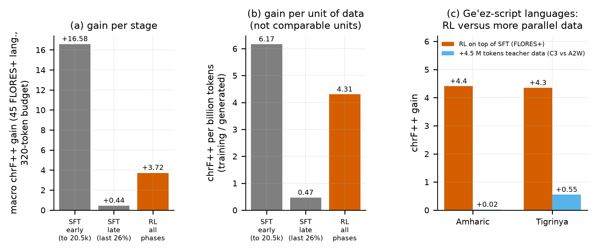
no_pair) against the largest data-addition effect we measured (C3 against A2W, weak dev set, 60 sentences per language, noise about 3). Regenerate with make_figures.py fig10.| RL phase | sampled completions (estimate) | generated tokens, billions (estimate) |
|---|---|---|
| phase 1 (300 steps, G=8) | 110,720 | 0.055 |
| phase 2 (logged steps 51-378, G=8) | 249,792 | 0.106 |
| phase 2b, b64 stage only (steps 1-488, G=16) | 499,712 | 0.037 |
| phase 2c (1,433 steps, G=16) | 900,384 | 0.665 |
| total to final_1433 | 1,760,608 | 0.864 |
RL's gains are concentrated where the SFT model misbehaved. Its finished rate on the 45 FLORES+ languages is 90.4% against 100% for RL, and the languages with the lowest SFT finished rates gain most (Kabiye 34.5% to 100% finished, +14.2 chrF++; Nuer 50.8%, +11.5; Kamba 70.4%, +12.1; Kabuverdianu 76.0%, +14.6), whereas languages whose SFT output finished at 97% or more gain 0.4-3.3 (Sesotho 99.6%, +0.4; Zulu 99.8%, +0.5; Swahili 99.9%, +1.1; Twi 98.2%, +3.3). A part of the RL effect is therefore repair of the SFT policy's failure modes (loops, missed end token), which is not the same as acquiring new translation knowledge. (Section 6.1 lists the eight largest gains in the identical-sentence pipeline, Kabuverdianu +14.2 first, with the same caveat; Kabuverdianu is also the largest remaining gap to NLLB-200 3.3B, Section 6.8.)
The question is related to, but different from, whether RL "generalises where SFT memorises" (Chu et al., 2025) or "only sharpens what the base model already contains" (Yue et al., 2025); both were studied on reasoning and vision tasks. For translation, reference-free RL with a QE reward on monolingual text has been proposed as a way to improve multilingual models where parallel data are scarce (Liu et al., 2026; Han et al., 2026), and RL for NLLB-sized models with round-trip or QE rewards covers a few African languages (Attia and Aji, 2026; Garcia-Estrada et al., 2026). Section 8.4 reports a small controlled comparison of RL against continued SFT on our own data (four African languages, one seed per arm); we do not review the literature for others beyond the works cited here. The case studies (Section 9) give three further data points on where the signal helped (Ge'ez) and where it was unavailable or unreliable (weak consensus-only languages, Urhobo).
Status (2026-10-24): the ablation has finished and its result is reported below. The project lead redesigned the experiment after the final run ended and a second agent (AB2, folder /workspace/jobs/ab2 on the GPU box) implemented it; it replaced the earlier design of agent AB1 (400 RL steps, 45 languages, two arms, 12.7-17.2 USD), which was never run. The chain was released on 2026-10-23 at 17:35 UTC, once the final run of Section 6.7 had ended, and its result files are dated 2026-10-24 about 03:17 UTC. The decision rule was written and hashed before any run of the ablation (DECISION_RULE.txt, sha256 08fce6c3..., recorded by the order script when the chain was released), and anything not in it is labelled exploratory. The design is in Table 71, the result in Table 72, Figure 21, Table 73, Table 74 and Table 75; the full report with every set and metric is paper/data/ab2_results/ab2_report.md.
Question. Does the gain that RL (learned-metric rewards, no parallel targets) gives on top of a strong SFT checkpoint survive when RL starts from a much weaker SFT checkpoint, and, from that weak start, does RL give more than continued SFT of equal cost?
The weak start had to be re-created. The Hub repositories keep only the tags of the last SFT steps (step 25,750 to 27,638; older tags were pruned to save storage, decision D-40), and no earlier checkpoint exists on the box, so an intermediate snapshot of the real SFT run is not available. W0 is therefore the re-run of the first 3,500 steps of SFT stage A from gemma-3-270m-it on exactly the packs that the real run drew in its first 3,500 steps (the schedule is a pure function of the seed), with the learning rate annealed over the shortened horizon (5e-5 to 5e-6). This is 3,500 steps of 131,072 tokens, 0.459 B training tokens, 12.7% of the 27,638 steps and 3.62 B tokens of SFT-final. It is not a snapshot of the real run at step 3,500: it has been annealed, which a mid-run snapshot has not, so it may be better than such a snapshot, and the "weak" start may be less weak than its data alone suggests.
Arms and controls. F0 is SFT-final and W0 the weak SFT. Arm F (F_RL) is F0 plus RL and arm W (W_RL) is W0 plus RL; the two RL configurations are identical except for model_name, out_dir and run_name, with the phase-2c settings of Section 4 (group 16, standardised advantages, learning rate 2e-6, $k_{3c}$ KL with coefficient 0.05 and KL guard, warm-up of 5 steps, the 2c reward without science text, anchors, ensemble or long-document reward, a fresh optimiser, seed 1234). Both arms see the same prompts and seeds: 49 steps of 64 b64 windows with a group of 16, i.e. 50,176 completions per arm, in four languages only (Yoruba, Kinyarwanda, Oromo and Lingala; uniform draws; 3,136 prompt draws, 784 per language; the pool is decontaminated against every evaluation set). Two continued-SFT controls start from W0, so that RL can be compared with more supervised training and not only with no training: S1 continues SFT on the packs of the real stage-A schedule from step 3,501 on (92-93% of its draws are packs that W0 never saw; all 77 languages as in the real schedule, so only about a tenth of its tokens are in the four evaluated languages), with a fresh optimiser, a learning rate of 5e-6 held for 80% of the steps and annealed to 5e-7, for as many steps as make its wall-clock equal to one RL arm (432 steps in the central cost case, 487 in the high case; the number is fixed from the measured arm-F job); S1P is pair-matched: SFT on 3,136 short samples (784 per language) from packs W0 never drew, as many as the RL prompt draws. S1 tests equal compute (the stronger competitor, about 400 times more training tokens than the RL prompts have source tokens), S1P equal number of sentences in the chosen languages. No non-commercially licensed data and no NLLB-derived or other pseudo-reference text is used anywhere in the ablation: the controls use our own commercially clean SFT windows.
Evaluation and primary endpoint. All systems (F0, F_RL, W0, W_RL, W_S1, W_S1P) are evaluated on the FLORES+ devtest rows whose reference pair is not in the SFT text (no_pair; 657, 1,012, 988 and 1,012 sentences for yor, kin, orm, lin), greedy decoding, 768 new tokens. The primary endpoint is the language-macro chrF++ over the four languages with a paired sentence bootstrap (1,000 resamples, seed 0, 95% percentile intervals; all systems scored on the same sentences). Confirmation sets: NTREX (yor, kin, orm), MAFAND (yor, kin), SMOL sentences (all four) and the sentences that every system finishes within the budget (to separate learning to stop from translation quality); confirmation metrics: spBLEU, SSA-COMET and AfriCOMET with reference. AfriCOMET-QE (the reward model) and SSA-COMET-QE are reported but enter no verdict. The quantities are the gains of the arms ($\text{gain}_F=F_{RL}-F_0$, $\text{gain}_W=W_{RL}-W_0$), their difference (difference of differences, $\text{gain}_W-\text{gain}_F$), the gap $F_0-W_0$, the survival $\text{gain}_W/\text{gain}_F$, the share of the gap closed ($\text{gain}_W/(F_0-W_0)$), $W_{RL}-F_0$, $W_{RL}-F_{RL}$ and, against the controls, $W_{RL}-W_{S1}$ and $W_{RL}-W_{S1P}$.
Power. From the paired-bootstrap standard errors of the main run's SFT-final to RL-final comparison on these four languages (0.56, 0.61, 0.53 and 0.64 chrF++ per language), the minimum detectable effect (80% power, two-sided 5%) is 1.16 chrF++ for the difference of the two arms' gains (language macro), about 0.82 for RL against a control on the same sentences, and about 2.3 for the difference of the gains in a single language. These intervals describe test-set sampling only: each arm and each control is run once, so the run-to-run variance of RL is not included, and a difference below the minimum detectable effect is not evidence of anything.
Pre-registered decision rule (DECISION_RULE.txt). Preconditions (if one fails, verdict A is "inconclusive" and nothing else is concluded): P1, F0 - W0 is at least 3.0 chrF++; P2, the 95% interval of the gain of arm F is above 0; P3, W0 finishes at least 60% of its FLORES+ no_pair translations within 768 tokens (checked while arm F trains; the chain holds before arm W if it fails). Verdict A (does RL's gain survive a weak start?): refute if the interval of $\text{gain}_W$ is not above 0 and its upper end is below $\text{gain}_F-1.16$ (if it is not above 0 but the upper end is not that low: inconclusive); support if all of (a) the interval of $\text{gain}_W$ is above 0, (b) the survival point estimate is at least 0.5, (c) the interval of $\text{gain}_W$ is above 0 on at least two of NTREX, MAFAND and SMOL, (d) it is above 0 on the common-finished sentences, (e) it is above 0 in at least three of the four languages, and (f) it is above 0 for both SSA-COMET and AfriCOMET with reference; partial support if the interval is above 0 but at least one of (b)-(f) fails. The sentence "RL replaces SFT" may be written only if the interval of $W_{RL}-F_{RL}$ contains 0, and "W_RL reaches the level F0 started from" only if the interval of $W_{RL}-F_0$ contains 0 or is above it. Verdict B (from the weak start, RL against continued SFT), for each control separately: RL better if the interval of $W_{RL}-W_c$ is above 0, SFT better if it is below 0, otherwise no difference detectable at the minimum detectable effect; "RL better than continued SFT" only if RL is better against both controls, "continued SFT better" if it is better against at least one, otherwise "comparable / mixed". The languages, the number of steps, the recipe, the rule for N of S1, the primary endpoint and the thresholds are fixed; the only permitted change is an extension of both RL arms to 98 steps by the project lead, decided from arm F's own dev curve before arm W exists (the report would say so). One prediction is recorded in advance and is not a test: $\text{gain}_F$ will be smaller than the main run's +7.25 chrF++ macro on these languages (1.76 M completions) because 49 steps are 2.9% of its completions; the dev evidence is that about 60% of the dev gain exists after about 50 steps.
Budget. The cost model (ab2_cost.py) gives 4.60 GPU-hours or 5.48 USD in the central case and 6.51 hours or 7.75 USD in the high case at 1.19 USD per hour (weak SFT 2.74-3.53 h, arm F 0.40-0.59 h, arm W 0.42-0.66 h, S1 0.40-0.59 h, S1P 0.08-0.13 h, evaluations 0.30-0.51 h, hand-offs 0.25-0.50 h), within the owner's cap of 9.00 USD that includes a 15% margin (a plan of at most 7.83 USD); the optional 98-step extension adds 1.02 to 1.46 USD. The chain starts no optional job (S1, S1P and their evaluations) after 7.8 USD and winds a running RL arm down at 9.0 USD. Realised. The chain ran from 17:35 UTC on 2026-10-23 to about 03:17 UTC on 2026-10-24, that is 9.7 hours of wall-clock, above the 4.6-6.5 hours of the cost model; at 1.19 USD per hour this is about 11.5 USD if all of it was billed (derived from the project lead's times and the rate; no invoice was available to us), above the cap of 9.00 USD. The excess includes about two hours during which the GPU was idle after a configuration error, and the evaluations of F0, W0 and W_S1 had to be run a second time (the evaluations are deterministic greedy decoding, so the second run does not change a result). S1 ran 367 steps (about 48 M training tokens), fewer than the 432 or 487 steps of the cost model, because its number of steps is set from the measured wall-clock of the arm-F job. We do not know whether the chain's budget guards (no optional job after 7.8 USD, wind-down at 9.0 USD) were triggered; the six systems were all evaluated.
Result: preconditions and primary endpoint. All three preconditions hold: the gap F0 - W0 is 13.61 chrF++ [12.96, 14.29] (P1: at least 3.0), the gain of arm F is +5.72 [5.15, 6.30] (P2), and W0 finishes 70.0% of its FLORES+ translations within 768 tokens (P3: at least 60%); the weak start is thus much weaker (15.16 [14.74, 15.65] against 28.77 [28.20, 29.38] chrF++) and finishes 24 points fewer translations than F0 (70.0% against 94.3%), but most of its outputs do finish. The advance prediction (gain_F smaller than the +7.25 of the main run) held: 5.72 is 79% of that gain from 2.9% of the completions, and the dev curves of both arms peak at step 20 and decline by step 49 (arm F 35.79 to 34.52, arm W 25.32 to 24.55 on the dev macro, Figure 21a); the end point of the pre-registered recipe is evaluated, with no checkpoint selection. On FLORES+ no_pair, language macro of yor, kin, orm, lin (Table 72): gain_F = +5.72 [5.15, 6.30] (28.77 to 34.49), gain_W = +7.36 [6.80, 7.85] (15.16 to 22.52), so the difference of differences is +1.64 [0.84, 2.36] (the point estimate is above the minimum detectable effect of 1.16, the lower end of the interval is not) and the survival gain_W / gain_F is 1.29 [1.14, 1.45]. RL closes 0.54 [0.50, 0.58] of the gap between W0 and F0. The weak-start RL model remains below both: W_RL - F0 = -6.25 [-6.87, -5.66] and W_RL - F_RL = -11.97 [-12.44, -11.50]. The finished rate of arm W rises from 70.0% to 88.7% (+18.74 points [17.21, 20.12], against +4.79 [4.08, 5.57] for arm F, which ends at 99.1%).
Result: the continued-SFT controls. From the same start W0, S1 (367 steps, about 48 M tokens, about 10% of them in the four evaluated languages, GPU time matched to one RL arm) gains +0.32 chrF++ [-0.18, 0.82], which is not distinguishable from 0 and is about 4% of the RL gain, and S1P (3,136 sentences in the four languages) changes it by -1.01 [-1.49, -0.55]. RL is better than both: W_RL - W_S1 = +7.04 [6.49, 7.54] and W_RL - W_S1P = +8.37 [7.84, 8.83] chrF++. In this configuration, 49 RL steps (50,176 completions from 3,136 prompt draws) moved the weak model far more than continued SFT on about 400 times as many training tokens as the RL prompts have source tokens; this says nothing about SFT with better data, a different learning rate or a longer schedule, which we did not try (one untuned recipe, fixed in advance).
Verdicts of the pre-registered rule (decision.json). Verdict A: support. All six conditions hold: (a) the interval of gain_W is above 0; (b) the survival is 1.29, at least 0.5; (c) gain_W is above 0 on NTREX (+7.06 [6.67, 7.41]), MAFAND-MT (+9.04 [8.23, 9.80]) and SmolSent (+7.21 [6.68, 7.69]), that is on all three confirmation sets; (d) it is above 0 on the sentences finished by every system (+1.13 [0.71, 1.55]); (e) it is above 0 in 4 of 4 languages; (f) it is above 0 for SSA-COMET with reference (+7.79 [7.35, 8.22]) and AfriCOMET with reference (+10.31 [9.84, 10.81]). Verdict B: RL better than continued SFT (both parts: "RL better"). The two sentences that the rule restricts may not be written: may_say_RL_replaces_SFT is false (W_RL - F_RL is far below 0) and may_say_W_RL_reaches_F0 is false (W_RL - F0 is -6.25 [-6.87, -5.66]). The minimum detectable effects were 1.16 (difference of the gains) and 0.82 (RL against a control) in the pre-registered rule and 1.19 and 0.84 as recomputed by the analysis script.
The nuance: much of the weak-start chrF++ gain is repair of unfinished outputs. On the 1,750 FLORES+ sentences (47.7% of the 3,669 of the primary set; 437, 447, 180 and 686 in yor, kin, orm, lin) that every system finished within the budget, the picture changes in chrF++ (Table 73, Table 74): gain_F = +2.23 [1.83, 2.65], gain_W = +1.13 [0.71, 1.55], the difference of differences is -1.10 [-1.60, -0.58], the survival falls to 0.51 [0.33, 0.71] and the gap closed to 0.16 [0.10, 0.21]. In chrF++, among finished sentences, the weak start therefore gains less than the strong start, and the chrF++ gain of 7.36 in the primary set is mostly the 18.7-point rise of the finished rate (loops and missing end tokens repaired); it replicates in NTREX (gain_W +1.08 against gain_F +2.90 on finished sentences), MAFAND-MT (+2.67 against +3.41) and SmolSent (+1.01 against +2.69). The common-finished subset is selected by the outcome (easier sentences that all six systems finish), so we do not apportion the 7.36 between "learning to stop" and "better translation". The neural metrics tell a different story on the same finished sentences: AfriCOMET with reference gains +7.63 [7.06, 8.26] from the weak start against +4.80 [4.29, 5.35] (difference of differences +2.83 [2.10, 3.57]) and SSA-COMET with reference +5.25 against +4.41 (+0.84 [0.10, 1.55]), and on the primary set spBLEU gains +3.11 against +5.07 (difference of differences -1.96 [-2.53, -1.38]). The ranking of "who gains more" therefore depends on the metric (the weak start gains more in chrF++ on all sentences and in AfriCOMET and SSA-COMET with reference on all and on finished sentences; the strong start gains more in spBLEU and in chrF++ among finished sentences), and we do not claim one reading. AfriCOMET-QE, the reward model, rises by +11.36 [10.89, 11.86] from the weak start and is not used as evidence. Languages differ (Table 75): in Kinyarwanda (+10.29 against +5.97), Lingala (+8.22 against +4.39) and Yoruba (+7.95 against +6.52) the weak start gains more, in Oromo much less (+2.97 against +5.99; difference of differences -3.01 [-4.28, -1.67]; W_RL stays at 11.09 against 8.11 for W0); among finished sentences gain_W is positive in Yoruba (+3.35 [2.46, 4.17]) and Kinyarwanda (+1.65 [1.10, 2.18]), indistinguishable from 0 in Oromo (+0.09 [-1.08, 1.40], 180 sentences) and negative in Lingala (-0.55 [-0.99, -0.15]). The pre-registered condition (e) concerns the primary set (4 of 4 above 0) and is met; the per-language finished-sentence results are exploratory.
Reading. In this reduced setting (four languages, one 49-step RL phase, one seed per arm) RL from a weak SFT start was not harmed by the weakness of the start: it gained at least as much chrF++ as from SFT-final and clearly more than the two continued-SFT controls we ran, and its gain replicates on three further test sets and on two learned reference-based metrics. It is not evidence that RL can replace SFT: the weak-start RL model remains 6.25 chrF++ below SFT-final and closes about half of the gap, and the text of Section 8.2 stands. It is also not an unqualified "RL teaches more than SFT": a large part of the weak start's chrF++ gain is repair of unfinished outputs, which continued SFT of this kind did not give, and which is not the same as new translation knowledge. The intervals describe sentence sampling only (one run per arm; the run-to-run variance of RL is not included), the controls are one untuned recipe on our own commercially clean data (no TranslatePsy, NLLB or other non-commercial data is used anywhere in the ablation), and there is no human evaluation: the evidence is human references and the human-judgement-correlated metrics AfriCOMET and SSA-COMET.
What the design cannot show. (1) It is not the production multi-phase RL (1.76 M completions in five phases with length curricula and science, anchor and ensemble rewards): it answers the question for one short b64 phase of 49 steps at a learning rate of 2e-6, so late-RL behaviour, KL drift and saturation are not tested. (2) Four languages only (yor, kin, orm, lin: validated-QE languages with an AfriCOMET model, three of them mid-resource): nothing about the 45 languages, about the Ge'ez languages (the languages that motivated the question), about the weak consensus-only languages or languages without a quality-estimation model. (3) One seed per arm and per control, so there is no run-to-run variance. (4) The weak start is a re-created, annealed short SFT and not a snapshot of the real run. (5) The controls use our own commercially clean SFT data only: they bound "more of the same data", not "better data" (a stronger teacher, human-curated data), and S1 and S1P are not a test of "more of the same SFT forever". (6) The reward models are learned from human judgements and human references, and the gains are measured against human references and the human-judgement-correlated metrics AfriCOMET and SSA-COMET: there is no human evaluation. (7) All metrics are sentence-level metrics of short texts: nothing about documents. The result is therefore described as a single-run, four-language proxy, and the rule above does not allow the sentence "RL replaces SFT" (Section 8.4, verdicts below).
DECISION_RULE.txt, gemma_mt/configs/rl_ab2_full.yaml, rl_ab2_weak.yaml, ab2_sft_weak.yaml, ab2_sft_s1.yaml, ab2_sft_s1pair.yaml and gemma_mt/scripts/ab2_cost.py.| element | as realised in the AB2 files | size | source |
|---|---|---|---|
| languages, prompts | yor, kin, orm, lin (the validated-QE languages with an AfriCOMET model that are not Ge'ez); b64 windows only; the RL prompt pool is drawn from the RL prompts v3 and decontaminated against every evaluation set (exact sentence or shared word 8-gram); uniform draws over the four languages | 49 steps x 64 prompts = 3,136 prompt draws (784 per language) | scripts/ab2_make_prompts.py, ab2_drawn_prompts.py |
| weak start (W0) | SFT re-created from google/gemma-3-270m-it: the first 3,500 steps of SFT stage A (same packs, AdamW, language_alpha 0.5, seed 1234), learning rate annealed 5e-5 to 5e-6 over the shortened horizon | 3,500 steps x 131,072 tokens = 0.459 B tokens = 12.7% of the 27,638 steps / 3.62 B tokens of SFT-final | configs/ab2_sft_weak.yaml |
| strong start (F0) | SFT-final (step 27,638) | 3.62 B tokens | models/sft_final |
| RL arms F and W | phase-2c recipe: group 16, standardised advantages, lr 2e-6, $k_{3c}$ KL 0.05 with KL guard, warm-up 5 steps, QE + consensus reward, fresh optimiser, seed 1234, no science text, anchors, ensemble or long-document reward; identical prompts and seeds; configs differ only in model_name, out_dir, run_name |
49 steps x 64 prompts x group 16 = 50,176 completions per arm | configs/rl_ab2_full.yaml, rl_ab2_weak.yaml |
| control S1 (equal GPU time) | W0 + continued SFT on the packs of the real stage-A schedule from step 3,501 on (92-93% of the draws are packs W never drew; all 77 languages as in the real schedule); fresh AdamW, warm-up 20, lr 5e-6 constant for 80% of the steps, then linear to 5e-7; N chosen so that the job's wall-clock equals one RL arm | N = 432 (central) to 487 (high) steps in the cost model, fixed from the measured arm-F job (configs/ab2_sft_s1.yaml holds a placeholder of 420) |
configs/ab2_sft_s1.yaml, scripts/ab2_set_n.py |
| control S1P (equal number of sentences) | W0 + continued SFT on 784 short samples per chosen language from packs W never drew (same lr recipe, one epoch) | 3,136 samples = the number of RL prompt draws | configs/ab2_sft_s1pair.yaml |
| primary endpoint | FLORES+ devtest no_pair rows, language-macro chrF++ over the four languages (n = 657 / 1,012 / 988 / 1,012 sentences for yor / kin / orm / lin), greedy, 768 new tokens, paired sentence bootstrap (B = 1,000, seed 0, 95% percentile intervals) |
systems F0, F_RL, W0, W_RL, W_S1, W_S1P | DECISION_RULE.txt section 3 |
| confirmation | NTREX (yor, kin, orm), MAFAND (yor, kin), SMOL-sent (all four), the sentences that every system finishes; spBLEU, SSA-COMET and AfriCOMET with reference; AfriCOMET-QE (the reward model) and SSA-COMET-QE are reported but enter no verdict | -- | DECISION_RULE.txt section 3 |
| minimum detectable effect (80% power, two-sided 5%) | 1.16 chrF++ for the difference of the two RL gains (language macro), about 0.82 for RL against a control on the same sentences, about 2.3 for the difference of the gains in a single language | from the paired-bootstrap standard errors of the main run's SFT-final to RL-final comparison (0.56 / 0.61 / 0.53 / 0.64 per language); one run per arm, so the run-to-run variance of RL is NOT included | ab2_analyze.py --power-from data/main_run_power_inputs.csv |
| preconditions (else verdict A is inconclusive) | P1: F0 - W0 >= 3.0 chrF++; P2: the interval of the gain of arm F is above 0; P3: W0 finishes at least 60% of its FLORES+ no_pair translations within 768 tokens |
-- | DECISION_RULE.txt section 5 |
| budget | 4.60 GPU-hours = 5.48 USD (central) to 6.51 h = 7.75 USD (high) at 1.19 USD/h; owner's cap 9.00 USD including a 15% margin, i.e. a plan of at most 7.83 USD (6.58 h); optional extension of both RL arms to 98 steps: +1.02 (central) to +1.46 USD (high) | weak SFT 2.74-3.53 h, arm F 0.40-0.59 h, arm W 0.42-0.66 h, S1 0.40-0.59 h, S1P 0.08-0.13 h, evaluations 0.30-0.51 h, hand-offs 0.25-0.50 h | scripts/ab2_cost.py |
no_pair (greedy, 768 tokens), 95% paired-bootstrap intervals over sentences (B = 1,000), one run per arm; neural scores times 100. Source: paper/data/ablation_results.json (point estimates) and paper/data/ab2_results/ab2_results.json (intervals), generated by make_tables.py.quantity (macro of yor, kin, orm, lin; FLORES+ devtest no_pair; 95% interval) |
arm F: RL from SFT-final | arm W: RL from weak SFT | W + continued SFT, equal GPU time (S1) | W + continued SFT, equal number of sentences (S1P) |
|---|---|---|---|---|
| start model (F0 for arm F, W0 for the others), chrF++ | 28.77 [28.20, 29.38] | 15.16 [14.74, 15.65] | 15.16 [14.74, 15.65] | 15.16 [14.74, 15.65] |
| end model, chrF++ | 34.49 [34.09, 34.90] | 22.52 [22.07, 22.94] | 15.48 [15.04, 15.98] | 14.15 [13.74, 14.62] |
| gain (end minus start), chrF++ | +5.72 [+5.15, +6.30] | +7.36 [+6.80, +7.85] | +0.32 [-0.18, +0.82] | -1.01 [-1.49, -0.55] |
| difference of the gains, gain_W minus gain_F (DiD) | -- | +1.64 [+0.84, +2.36] | -- | -- |
| W_RL minus the control, chrF++ (RL minus continued SFT) | -- | -- | +7.04 [+6.49, +7.54] | +8.37 [+7.84, +8.83] |
| finished within 768 tokens, before / after (%) | 94.3 / 99.1 | 70.0 / 88.7 | 70.0 / 72.5 | 70.0 / 67.3 |
| gain of the finished rate (points) | +4.8 [+4.1, +5.6] | +18.7 [+17.2, +20.1] | +2.5 [+1.0, +3.9] | -2.6 [-4.3, -1.0] |
| gain, AfriCOMET with reference (x100) | +6.98 [+6.52, +7.41] | +10.31 [+9.84, +10.81] | +0.25 [-0.18, +0.65] | -0.72 [-1.14, -0.31] |
| gain, SSA-COMET with reference (x100) | +5.79 [+5.39, +6.15] | +7.79 [+7.35, +8.22] | +0.44 [+0.05, +0.83] | -0.87 [-1.27, -0.48] |
| sampled completions / training | 50176 | 50176 | none (SFT, 367 steps, about 48 M tokens) | none (SFT, 3,136 samples) |
| gain per million sampled completions (chrF++) | 114.0 | 146.68 | -- | -- |
no_pair rows) each on all sentences and on the sentences that every system finished within 768 tokens. gain_F = F_RL - F0, gain_W = W_RL - W0, DiD = gain_W - gain_F, RL - S1 = W_RL - W_S1, RL - S1P = W_RL - W_S1P. Source: paper/data/ab2_results/ab2_results.json, also ab2_report.md.| set (chrF++, language macro) | gain_F | gain_W | DiD | RL - S1 | RL - S1P | survival gain_W / gain_F |
|---|---|---|---|---|---|---|
FLORES+ no_pair (primary; 4 languages) |
+5.72 [+5.15, +6.30] | +7.36 [+6.80, +7.85] | +1.64 [+0.84, +2.36] | +7.04 [+6.49, +7.54] | +8.37 [+7.84, +8.83] | 1.29 [1.14, 1.45] |
FLORES+ no_pair, only sentences finished by every system |
+2.23 [+1.83, +2.65] | +1.13 [+0.71, +1.55] | -1.10 [-1.60, -0.58] | +1.29 [+0.95, +1.64] | +1.45 [+1.06, +1.82] | 0.51 [0.33, 0.71] |
NTREX no_pair (yor, kin, orm) |
+6.63 [+6.19, +7.08] | +7.06 [+6.67, +7.41] | +0.43 [-0.11, +0.99] | +6.80 [+6.44, +7.18] | +7.75 [+7.39, +8.12] | 1.07 [0.98, 1.16] |
| NTREX, only finished by every system | +2.90 [+2.55, +3.25] | +1.08 [+0.82, +1.32] | -1.82 [-2.19, -1.46] | +1.10 [+0.84, +1.34] | +1.54 [+1.27, +1.82] | 0.37 [0.29, 0.46] |
MAFAND-MT no_pair (yor, kin) |
+5.31 [+4.57, +6.11] | +9.04 [+8.23, +9.80] | +3.73 [+2.65, +4.83] | +8.61 [+7.77, +9.45] | +10.66 [+9.91, +11.44] | 1.70 [1.46, 2.01] |
| MAFAND-MT, only finished by every system | +3.41 [+2.87, +3.99] | +2.67 [+2.26, +3.10] | -0.74 [-1.41, -0.05] | +2.79 [+2.38, +3.24] | +3.10 [+2.65, +3.54] | 0.78 [0.63, 0.99] |
SmolSent no_pair (4 languages) |
+7.77 [+7.04, +8.47] | +7.21 [+6.68, +7.69] | -0.56 [-1.39, +0.29] | +7.02 [+6.48, +7.51] | +7.58 [+7.05, +8.11] | 0.93 [0.83, 1.04] |
| SmolSent, only finished by every system | +2.69 [+2.27, +3.10] | +1.01 [+0.67, +1.36] | -1.68 [-2.22, -1.17] | +1.32 [+0.97, +1.65] | +1.61 [+1.24, +1.95] | 0.38 [0.25, 0.52] |
no_pair by metric, on all sentences and on the sentences finished by every system (language macro, 95% intervals). AfriCOMET-QE is the model whose score was the RL reward and is shown for completeness only; it enters no verdict and is no evidence. Source: paper/data/ab2_results/ab2_results.json.metric, subset (FLORES+ no_pair, language macro) |
gain_F | gain_W | DiD | RL - S1 |
|---|---|---|---|---|
| chrF++, all sentences | +5.72 [+5.15, +6.30] | +7.36 [+6.80, +7.85] | +1.64 [+0.84, +2.36] | +7.04 [+6.49, +7.54] |
| spBLEU, all sentences | +5.07 [+4.54, +5.57] | +3.11 [+2.79, +3.41] | -1.96 [-2.53, -1.38] | +3.04 [+2.73, +3.35] |
| AfriCOMET, reference (x100), all sentences | +6.98 [+6.52, +7.41] | +10.31 [+9.84, +10.81] | +3.32 [+2.74, +3.91] | +10.06 [+9.58, +10.57] |
| SSA-COMET, reference (x100), all sentences | +5.79 [+5.39, +6.15] | +7.79 [+7.35, +8.22] | +2.00 [+1.44, +2.56] | +7.34 [+6.95, +7.74] |
| finished rate (points), all sentences | +4.8 [+4.1, +5.6] | +18.7 [+17.2, +20.1] | +13.9 [+12.3, +15.5] | +16.2 [+14.7, +17.6] |
| GlotLID-ok rate (points), all sentences | +1.7 [+1.1, +2.4] | +3.8 [+2.8, +4.9] | +2.1 [+0.9, +3.3] | +3.7 [+2.6, +4.7] |
| AfriCOMET-QE (x100; the RL reward, not evidence), all sentences | +5.70 [+5.31, +6.11] | +11.36 [+10.89, +11.86] | +5.67 [+5.07, +6.29] | +10.69 [+10.22, +11.18] |
| chrF++, finished by every system | +2.23 [+1.83, +2.65] | +1.13 [+0.71, +1.55] | -1.10 [-1.60, -0.58] | +1.29 [+0.95, +1.64] |
| spBLEU, finished by every system | +2.02 [+1.54, +2.50] | +0.85 [+0.59, +1.12] | -1.16 [-1.66, -0.67] | +1.00 [+0.72, +1.25] |
| AfriCOMET, reference (x100), finished by every system | +4.80 [+4.29, +5.35] | +7.63 [+7.06, +8.26] | +2.83 [+2.10, +3.57] | +7.87 [+7.23, +8.50] |
| SSA-COMET, reference (x100), finished by every system | +4.41 [+3.88, +4.96] | +5.25 [+4.79, +5.75] | +0.84 [+0.10, +1.55] | +5.38 [+4.91, +5.89] |
| GlotLID-ok rate (points), finished by every system | +0.2 [-0.5, +1.0] | +0.1 [-0.9, +1.1] | -0.1 [-1.4, +1.2] | +0.0 [-1.0, +1.0] |
| AfriCOMET-QE (x100; the RL reward, not evidence), finished by every system | +3.29 [+2.80, +3.74] | +8.35 [+7.73, +8.94] | +5.06 [+4.27, +5.77] | +8.53 [+7.92, +9.15] |
no_pair; 95% intervals; n sentences in brackets): all sentences and sentences finished by every system. Per-language results on the finished subset are exploratory. Source: paper/data/ab2_results/ab2_results.json (contrasts_pl).| language, subset (chrF++) | gain_F | gain_W | DiD | RL - S1 |
|---|---|---|---|---|
| Yoruba, all (n = 657) | +6.52 [+5.36, +7.68] | +7.95 [+6.89, +8.93] | +1.43 [+0.12, +2.76] | +6.63 [+5.55, +7.67] |
| Kinyarwanda, all (n = 1012) | +5.97 [+4.65, +7.25] | +10.29 [+9.06, +11.45] | +4.32 [+2.47, +6.11] | +10.45 [+9.24, +11.59] |
| Oromo, all (n = 988) | +5.99 [+4.86, +7.09] | +2.97 [+2.47, +3.51] | -3.01 [-4.28, -1.67] | +2.69 [+2.14, +3.24] |
| Lingala, all (n = 1012) | +4.39 [+3.20, +5.64] | +8.22 [+6.76, +9.38] | +3.84 [+1.85, +5.55] | +8.39 [+6.97, +9.72] |
| Yoruba, finished by every system (n = 437) | +5.00 [+3.83, +6.19] | +3.35 [+2.46, +4.17] | -1.65 [-2.75, -0.59] | +3.70 [+2.78, +4.61] |
| Kinyarwanda, finished by every system (n = 447) | +2.83 [+2.20, +3.54] | +1.65 [+1.10, +2.18] | -1.18 [-2.04, -0.39] | +1.91 [+1.31, +2.50] |
| Oromo, finished by every system (n = 180) | +0.65 [-0.15, +1.49] | +0.09 [-1.08, +1.40] | -0.56 [-1.89, +0.89] | -0.24 [-1.11, +0.58] |
| Lingala, finished by every system (n = 686) | +0.46 [-0.12, +1.07] | -0.55 [-0.99, -0.15] | -1.00 [-1.76, -0.28] | -0.20 [-0.65, +0.20] |
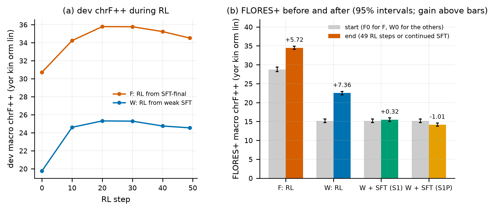
no_pair macro chrF++ before (grey) and after (colour) RL or continued SFT, with 95% paired-bootstrap intervals and the gain above the bars; S1: continued SFT of equal GPU time, S1P: equal number of sentences. One run per arm. Regenerate with make_figures.py fig11.Three cases show where the recipe worked, where its signal was missing, and what a single piece of unverified evidence can and cannot do. Each case is deliberately narrow; the numbers come from the tables of Sections 6-8 and the reports named there.
Why they may be hard for a 270M model (candidate causes; none was tested). Amharic and Tigrinya are the only Ge'ez-script languages in our set. Their text is expensive for the tokenizer: on FLORES+ devtest the Gemma 3 vocabulary needs 1.9 times as many tokens for the Amharic translation as for the English source (2.5 times for Tigrinya), whereas the Qwen3 vocabulary needs 4.1 and 4.2 times and the gpt-oss vocabulary 5.8 and 6.0 times, and Yoruba and Zulu need 2.4 and 2.0 times for Gemma (1.5 to 2.6 times over the 17 Latin-script targets of the same file) (Table 76; docs/report/tokenizer_comparison_flores_plus.json). A separate one-off probe with a wider set of small-model tokenizers, on a single 74-character Amharic passage and its English translation, gives 2.07 times for Gemma against 3.9 times for Qwen3-0.6B, 4.9 for BLOOM-560M, 6.9 for SmolLM2 and GPT-2 and 7.5 for Pythia-160M (paper/data/tokenizer_amharic_probe_2026-10-23.csv, paper/scripts/tokenizer_amharic_probe.py); since it is one short passage it supports the ranking only, and the FLORES+ numbers of Table 76 are the main evidence. Gemma is therefore comparatively kind to Ge'ez, yet Amharic and Tigrinya still cost about three times as many tokens per character as Latin-script languages (0.60-0.74 Gemma tokens per character against 0.21-0.36), only 862 of the 262,144 tokenizer vocabulary entries contain Ethiopic characters, and the SFT corpus holds only 8.29 M (Amharic) and 5.60 M (Tigrinya) target tokens. They were among the languages with the weakest SFT output: Tigrinya (fourth lowest of 45) 9.4 chrF++ on FLORES+ and Amharic (eighth lowest) 14.5, with 76-94% of the completions finishing across benchmarks.
paper/scripts/make_tables.py from docs/report/tokenizer_comparison_flores_plus.json, which holds tokens per whitespace word and word counts). Qwen3 models share one tokenizer. The SabiYarn-0.5B and 52k vocabularies belong to the earlier from-scratch line of this project and are shown for contrast.| language | Gemma 3 (ours) | Qwen3 | gpt-oss | earlier 52k vocabulary | SabiYarn-0.5B (65k, African-trained) |
|---|---|---|---|---|---|
| Amharic | 1.93 | 4.05 | 5.76 | 4.94 | 1.08 |
| Tigrinya | 2.47 | 4.16 | 5.95 | 5.00 | 1.33 |
| Yoruba | 2.40 | 2.69 | 2.16 | 1.33 | 1.50 |
| Zulu | 1.96 | 2.18 | 1.71 | 2.09 | 1.37 |
What RL did. RL raised every Ge'ez benchmark by 3.4 to 4.5 chrF++ with intervals that exclude zero, and the finished rate to 100% (Table 77).
no_pair rows (greedy, 768 tokens). Source: reports/data/final_model_per_language_wide.csv. The all rows differ by at most 0.4 (e.g. Amharic MAFAND-MT 10.6 to 14.6 on all rows).| language | benchmark (no_pair) |
n | chrF++ SFT | chrF++ RL | $\Delta$ [95% CI] | finished % SFT / RL |
|---|---|---|---|---|---|---|
| Amharic | FLORES+ devtest | 1012 | 14.5 | 18.9 | +4.4 [+3.7, +5.1] | 91.1 / 100.0 |
| Amharic | NTREX-128 | 1997 | 9.3 | 13.5 | +4.2 [+3.9, +4.5] | 85.1 / 100.0 |
| Amharic | MAFAND-MT test | 884 | 10.2 | 14.4 | +4.1 [+3.4, +4.8] | 90.5 / 100.0 |
| Amharic | SmolSent | 863 | 11.5 | 15.0 | +3.4 [+2.8, +4.1] | 94.0 / 100.0 |
| Tigrinya | FLORES+ devtest | 1012 | 9.4 | 13.8 | +4.3 [+3.9, +4.7] | 81.7 / 100.0 |
| Tigrinya | NTREX-128 | 1997 | 7.7 | 12.2 | +4.5 [+4.2, +4.7] | 75.5 / 100.0 |
| Tigrinya | SmolSent | 863 | 7.7 | 11.4 | +3.6 [+3.2, +4.1] | 84.1 / 100.0 |
What more parallel data did. For these two languages we built 11.18 M (Amharic) and 8.31 M (Tigrinya) tokens of commercially usable new parallel text (GoURMET CC0 news, FineTranslations real-language web text, OLDI-type sets), plus non-commercial and unknown-licence sets that were not merged (reports/weak_language_data_2026-10-22.md section 4). Mixture B_v2 gave Tigrinya 2.0 M extra tokens (about 13 times its replay share of the stage) and Amharic 1.5 M plus 0.37 M share-alike and 0.14 M code-switch tokens; the NLLB-3.3B teacher mixture C3 added only 0.28 M tokens to each of the two languages on top of A2W (4.47 M over 27 languages). The effect, in chrF++ on the weak-language dev set (60 sentences per language; noise about 3 for a single language) relative to the RL model: Tigrinya +0.14 for the mixture without extra Ge'ez data (A2W, $\alpha=0.7$), +0.70 and +0.74 for the mixture with the 2.0 M tokens (B_v2_ibom, $\alpha=0.5$ and 0.7); Amharic sentences +1.05 and paper level +2.24 for A2W (these include science text of its own); C3 against A2W +0.55 for Tigrinya and +0.02 for Amharic, +0.29 on average for the two (Table 79; reports/final_run2_integration_2026-10-22.md section 1). Amharic paper-level quality fell with the larger Ge'ez mixture (B_v2_ibom: 20.51 for the RL model, 18.81 and 17.60 at $\alpha=0.5$ and 0.7, finished 92% to 80% and 68%). Against that RL gave +4.4 and +4.3 on the two FLORES+ sets.
| language | RL on top of SFT: $\Delta$ chrF++, no_pair rows |
extra SFT data: C3 against A2W | parallel tokens added to the SFT stage | other |
|---|---|---|---|---|
| Amharic | +4.4 (FLORES+), +4.2 (NTREX), +4.1 (MAFAND), +3.4 (SmolSent) | +0.02 (weak dev, 60 sent.) | 1.5 M + 0.37 M SA + 0.14 M code-switch (B_v2); 4.47 M NLLB teacher tokens over 27 languages (C3) | paper-level quality fell with B_v2_ibom (20.5 to 18.8 / 17.6) |
| Tigrinya | +4.3 (FLORES+), +4.5 (NTREX), +3.6 (SmolSent) | +0.55 (weak dev, 60 sent.) | 2.0 M (B_v2), plus C3 teacher data | B_v2_ibom against RL model: +0.70 / +0.74 at $\alpha$ 0.5 / 0.7 |
reports/final_run2_integration_2026-10-22.md section 1). By the guardrail rule nothing beats A2W at $\alpha=0.7$.| model | sent. chrF++ | paper chrF | paper fin. % | general d | weak-blend d | vs final_1433 | vs A2W 0.7 |
|---|---|---|---|---|---|---|---|
| final_1433 | 45.65 | 36.00 | 74.7 | - | - | - | - |
| A2W a0.7 (current start) | 47.97 | 47.81 | 92.0 | +0.18 | -0.36 | PASS | - |
| C3 a0.3 | 46.99 | 42.64 | 89.3 | +0.16 | -0.12 | PASS | FAIL (finished) |
| C3 a0.5 | 47.61 | 46.17 | 94.0 | +0.22 | -0.32 | PASS (best of C3) | PASS (+0.04 general; sentence -0.36) |
| C3 a0.7 | 47.87 | 48.05 | 94.7 | +0.14 | -0.68 | FAIL (blend) | PASS (sentence -0.10, paper chrF +0.24) |
| C3 a1.0 | 47.91 | 49.46 | 91.3 | -0.23 | -1.14 | FAIL | FAIL |
The final run. The final run, which continues RL with the amended reward (401 steps, Section 6.7), moved Amharic by +0.31 on the AfriScience dev sentences (25.28 at the start, 25.65 at step 250, 25.59 at step 401; 200 sentences) and, at paper level, from 22.57 at the start to 25.33 at step 50, 24.71 at step 250 and 23.50 at step 401 (a noisy series of 25 documents; the finished rate of the Amharic papers is 0.92 at the start, 1.00 at steps 50-250 and 0.92 at step 401). The small Amharic gain at sentence level was therefore in place at step 250 and was not extended by the last 150 steps, and the paper-level gain of +0.94 at the end is smaller than at step 250 (+2.14) and of the size of the evaluation noise of that series (Section 6.7: 0.63 chrF++ macro between two evaluations one optimiser step apart). It is small against the +4.4 chrF++ that phases 1-2c gave the language on FLORES+ (14.5 to 18.9, Section 8.1), measured on a different benchmark and with a different model, so the two numbers are not additive.
Reading. This case supports statement (a) of Section 8: more parallel data, in the amounts we could add (a 24-36% increase of the existing target tokens of the language for the commercially usable Ge'ez additions of mixture B_v2), did not move Ge'ez quality by more than 0.7 chrF++ in the Ge'ez-specific comparisons (Tigrinya +0.70/+0.74 with B_v2_ibom, +0.55 with C3 against A2W, Amharic +0.02), while RL moved it by about 4; the larger numbers for A2W (+1.05 sentences, +2.24 paper level for Amharic) come from science and long-document text, not from added Ge'ez parallel data. It does not support the stronger claim, for the reasons of Section 8.2. The 19.0 (Amharic) and 11.0 (Tigrinya) point gap to NLLB-200 3.3B (37.9 and 24.8 chrF++ on FLORES-200 devtest) shows that the Ge'ez languages lack something that RL on this model did not provide. What that is, we did not test: Section 10 lists four candidate causes (capacity shared over 77 languages, tokenisation, the amount and quality of Amharic and Tigrinya data, Gemma's pretraining coverage), and the facts above (8 M and 5.6 M target tokens, a vocabulary with 862 Ethiopic entries) are consistent with several of them without singling one out.
The group. For 23 of the 77 languages (Esan, Edo, Ghomala, Okpe, Tswa, Dagbani, Duala, Basaa, Sidamo, Yao, Kabuverdianu, Krio and others) no learned metric exists and the content signal of the reward is the consensus among the samples of the group plus constraint penalties (Section 4.3). Their parallel text is overwhelmingly religious (75-93% of replay tokens for most of the weakest), only one of them (Kabuverdianu) is covered by NLLB-200, and 10 have no human-reference benchmark at all.
What happened. The consensus-only languages that do have a human-reference set improved at least as much as the validated ones: +7.69 [+7.30, +8.07] macro chrF++ on their primary benchmark for 13 languages against +4.97 for the 42 QE-validated, and +11.22 for the two on FLORES+ (Kabuverdianu and Makhuwa) (Section 6.1, Table 4); most of that gain was in place at the end of the b64 stage of phase 2b (Section 6.3). The price is visible in the outputs: the share of outputs containing a five-gram found in at least three other prompts' outputs rose from 24.7% to 31.6% against 2.8% for human references, and the repetition and boilerplate flags of the detectors are highest exactly here (Esan 86% repetition, Edo 74%, Ghomala 66%; Sections 7.3 and 7.6). The consensus signal has an attractor in simulation, which the anchors close only partly, and the final run, which has the anchors, lowered the boilerplate rate of these languages by only 0.25 pp (Section 7.9): length-matched natural filler, a bag of words with the human function-word share and glosses padded with filler remain nearly undetected (Section 7.3).
Can a stronger model supply data? We asked whether Gemma-4-31B-it, used as a few-shot data teacher with eight retrieved examples per prompt, could help. It passed the pre-registered margin (+3 chrF++ with an interval above zero, plus quality checks) for only 2 of the 23 languages: Kabuverdianu (+16.1) and, conditionally, Krio (+3.5). It was not better for the other 21 (clearly worse for 17, level for Esan, Ghomala, South Ndebele and Herero), including all six named weak languages (Esan -1.1, Edo -5.9, Ghomala -2.4, Okpe -9.7, Tswa -3.3, Dagbani -10.3), and zero-shot it scored 1-14 chrF++ on 16 languages (Table 63). Its few-shot results look decent only because retrieval returns the religious phrases that our model has already absorbed (three examples instead of eight lose 6-12 points), and the held-out references are mostly religious text from our own corpus, which favours our model: the comparison is biased in our favour, and the out-of-domain rows are the fairer side. NLLB-200 does not cover 22 of the 23 languages (only Kabuverdianu), so its pseudo-references are used for five covered weak-signal languages only, of which Kabuverdianu is the one consensus-only language (Section 7.5).
Reading. For these languages the gains we measured are real against the human references we have, but they are also where the reward is least trustworthy and our evidence thinnest. We treat them as the clearest case of the limits of the approach: RL improved what the reward could see, a stronger teacher did not help, and without native-speaker evaluation we cannot say whether the outputs are better translations or only more consistent ones.
Urhobo (urh) illustrates a language with only religious text. In the first launch of the final run the padding detector flagged 26% of Urhobo completions as stuffed output (26-63% for Sidamo, Wolaytta, Basaa, Yao, Duala and Urhobo); the length bug of Section 7.3 explains the order of the failure rates of Sidamo, Wolaytta, Yao and two other languages, but not by itself those of Basaa, Duala and Urhobo. To check that the Urhobo detectors were not flagging human text we obtained 230 sentence pairs generated by Gemini (60 short phrases and 170 sentences), which were not verified by a native speaker and were therefore used as a check only: no threshold, function-word list, dictionary or weight was fitted on them (reports/anchors_v3_2026-10-22.md section 5). The check found 0 of 170 silver sentences flagged by the copy, stop-word and padding blocks (upper bound 2.2% at 95%), as for held-out religious text, so human-style Urhobo was not the problem; we could not reproduce the Urhobo failures without the live outputs. The set is also not like our corpus: 34.5% of its word types (14.4% of its tokens) are unseen in the Urhobo text of our SFT data, against 5.4% for held-out religious sentences, and it is templated (five connector types make up 21.6% of its tokens). Our models agree with it at 24.7 chrF++ (final general model; 22.9 for the start model of the final run), which is not a translation-quality measure and was never used to select a model. The lesson is methodological: a silver set can reveal a false-positive problem of a detector, but it cannot calibrate or validate a language; for Urhobo, as for the other languages without human references (Section 3.2), a native-speaker evaluation is the missing piece (Section 12).
The sentence-level quality of the model stopped improving after the first two RL phases (Section 6.3), the 1,433 steps of phase 2c left the dev score unchanged, and the 401 steps of the final run moved the sentence-level dev sets by +0.07 (general dev), +0.13 (AfriScience dev sentences) and +0.38 (weak-language dev) chrF++, within the noise of those sets (Section 6.7). We do not assert a single cause. Four hypotheses are consistent with what we measured; the evidence for and against each is below, and none of them was isolated by an experiment.
H1: capacity. A 270M model, of which 168M parameters are the embedding table, may simply be unable to represent more. For: the strong languages that start highest gain least and the gain falls by 1.6 chrF++ per 10 points of starting level; the 12 times larger NLLB-3.3B remains ahead on average (also on the never-seen rows, Section 6.9a; we make no claim about the 8-14B LLMs, Section 6.2), and NLLB's lead is largest where we have least data (Ge'ez, Kabuverdianu, Nuer); the QE-validated languages that sit below the human-median reward at the end (Zulu 0.78, Xhosa 0.42, Sesotho 0.57, Somali 0.38, Swahili 0.02 mean greedy reward on held-out prompts, where +1 is the human median) improved little in chrF++ either (+0.4 to +1.1). Against: the same model reaches NLLB-3.3B level on Yoruba, Fon, Wolof and Dyula, and the SFT validation loss was still falling when we stopped; capacity has not been shown to be the binding constraint, only not excluded.
H2: the reward does not point at what is still wrong. QE metrics rank samples of the same source weakly (within-prompt Spearman 0.15-0.17 with chrF++; the best of eight by QE is 0.9 chrF++ above the mean against 5.1 for an oracle), the consensus signal is mode-seeking (a group of near-identical samples has no gradient, and agreement is confidence, not accuracy), and the shaped reward saturates for Yoruba at 1.85 (QE-saturated) while its chrF++ is 27-33 and its headroom the largest of the dev languages. The group-normalised advantage also throws away the absolute level of the reward, so a language whose QE is already at the human median still receives full-sized updates from noise. For: the QE-reward-optimising run and the chrF-based dev set diverge in direction for several languages; a rule "weight up where QE is low" would boost Zulu, Xhosa, Sesotho, Somali and Swahili (flat chrF++) and cut Yoruba. Against: where the reward is a strong ranker (consensus languages, NLLB pseudo-reference, Spearman 0.57 with human chrF++) the same plateau appears after the b64 stage of 2b (Section 6.3), so signal quality alone does not explain it.
H3: data. The weakest languages have very little non-religious parallel text (Jehovah's Witnesses-style text is on average 58% of the replay tokens (62% with Bible-style text) and 75-93% for most weak languages), the RL prompts are English only, and for most of the weakest languages we found almost no new usable parallel data (zero for Esan, Ghomala, Okpe and Tswa) (reports/weak_language_data_2026-10-22.md). For: the SFT-stage mixtures with commercially usable extra data (B_v1, B_v2) did not beat the mixture without it under the guardrail rule, and the planned data-scaling probe (nested mixes of 0.25, 1 and 4 M extra tokens for Nuer, Acholi, Nyankore and Tigrinya) was built but never trained, so the effect of more data on the weakest languages is unmeasured; volume does not explain the residual (Nuer 9.4 M tokens, Fon 34 M, Amharic 8.3 M and Tigrinya 5.6 M tokens still score 13.8-21.6 chrF++, whereas Kabuverdianu with 0.11 M scores 26.8 and Kongo with 0.14 M scores 16.7); the cross-language rank correlation of log data volume with RL chrF++ is +0.66 (+0.52 for the QE-validated languages), confounded by family and script. Against: Ge'ez languages gained about 4 chrF++ from RL with no new data, so the data constraint is not absolute.
H4: the measurement. The dev set that monitored training is small (760 sentences in 19 languages, 40 per language from FLORES+ dev and MAFAND dev rows whose English is not in the SFT text and with no devtest sentence, minimum detectable change about 1.5 for the macro; RL-final is the last step, not the dev-best, Section 6.9a), and in a domain different from some training prompts; the weak-language monitor covers 13 of 45 languages with 60 sentences each, so "flat" means "no change larger than about 1.5 in macro chrF++", and the divergence of 2b was invisible to it for 250 steps. Moreover chrF++ and the QE metrics are blind to some kinds of progress: the paper-level finished rate and the long-document behaviour changed a great deal in 2c and in the science stage while sentence chrF++ did not.
What the evidence supports. The most defensible reading is that RL on this model produced a one-time gain, mostly within roughly the first million completions, that consisted of two things we cannot separate: repair of the SFT policy's failure modes (looping, no end token, wrong script) and a real improvement of translation quality that is visible on every human-reference benchmark and positive on the never-seen (clean) rows of all eight (larger there than on the other rows for FLORES+, NTREX-128, SmolSent and GlotStoryBook; Section 6.9a), and that survives the removal of the looping sentences (RL is still preferred in 60% of the non-tied sentences by chrF++ and in 68-69% by the reference-based learned metrics, Section 6.9; these are metric preferences, not human judgements); that continuing the same recipe at the same scale adds little at sentence level; and that the remaining gap to larger systems is concentrated in languages for which neither this reward nor our data is informative. Which of capacity, reward or data should be attacked first is not settled by our data; the ablation of Section 8.4 speaks to part of the starting-point and data question (in four languages and one short RL phase, RL from a much weaker SFT start still gained at least as much chrF++ as from SFT-final, and gained more than continued SFT of equal cost, but it stayed 6.25 chrF++ below SFT-final and much of its chrF++ gain was repair of unfinished outputs; one seed), without settling it; a larger-model run with the same recipe the capacity question, and native-speaker evaluation the reward question.
The Ge'ez-script deficit: four candidate causes, all untested. In Amharic and Tigrinya the model is furthest behind NLLB-200 (Section 6.8: RL-final 19.0 and 13.8 chrF++ against 38.0 and 24.7 for the 3.3B model; the headline comparison of that section leaves the two languages out because they are an outlier, not because they are unimportant), and other languages with large gaps (Kabuverdianu 21.0, Kanuri 9.6 and Nuer 7.9 chrF++ behind the 3.3B model) may share a cause, which we also did not test. We list four candidate causes and did not test any of them. (a) Capacity sharing. A model of 270M parameters, 168M of them embeddings, shares its transformer over 77 languages, and the languages with the least room may lose most (H1). (b) Tokenisation. Ge'ez text is fragmented by the Gemma tokenizer: only 862 of the 262,144 vocabulary entries contain Ethiopic characters (reports/vocab_pruning_ablation_2026-10-25.md), and the Gemma tokenizer needs 3.03 (Amharic) and 3.46 (Tigrinya) tokens per whitespace word on FLORES+ devtest, against 2.09 for Swahili and 1.24 for English (docs/report/tokenizer_comparison_flores_plus.json; Section 9.1 gives the per-character view), which makes sequences long but does not show that this limits quality. (c) The amount and quality of training data. The SFT corpus holds 8.3 M (Amharic) and 5.6 M (Tigrinya) target tokens of mixed quality (H3), and added commercially usable data moved the two languages by at most 0.7 chrF++ in a short stage. (d) Gemma's pretraining coverage. We do not know how much Amharic and Tigrinya Gemma 3 saw before our fine-tuning, so a weak start could not be repaired by our small corpus. The comparison with NLLB cannot separate these causes: NLLB-200 is larger (615M and 3.3B parameters), was trained on far more data and on many more language pairs, so its lead in these languages is consistent with each of the four. A matched experiment, with a specialist model for the Ge'ez-script languages and a larger model on the same recipe, is future work (Section 11, item 16); we report no result of such an experiment.
On the length goal. The curriculum was meant to teach single-pass translation of 2,048-token documents. It extended the single-pass range to about 512 tokens, did not reach 1,024 or 2,048 with greedy decoding, and the training signal at those lengths was weak (flat groups with a within-group standard deviation of 0.1-0.2, failed detectors, a greedy member dominating the gradient). The supervised long-document distillation of the science stage, which teaches the model to translate a whole document and stop (and which is what makes native output up to about 2,048 tokens finish, with 13-30% of the sentences omitted and, with a sentence-by-sentence wrapper, a quality 1-4 chrF++ below NLLB-200 and TranslatePsy-AfriSLM, Section 6.10), moved the paper-level finished rate from 75% to 92%, and RL on top moved it to about 100% in 50 steps; both numbers refer to 150 development documents (25 papers in each of six languages, 542-1,346 source tokens) and a model that was already given sentence-level supervision, so we regard whole-document capability as promising and unproven. In the final run the paper-level finished rate ended at 0.967 (0.927 at its start, 1.000 at steps 50-300) and the paper-level chrF++ at 44.37 (44.02 at its start; the series has a standard deviation of 0.85 and moved by 0.63 between two evaluations one optimiser step apart), and the 2,048-token reward bin stayed near the failure floor (Section 6.7); the long-context benchmark of Section 6.10, re-run on the final checkpoint, shows the same chrF++ as the step-250 checkpoint (27.7 against 28.2 at about 2,048 tokens), the same omission (coverage 0.73 against 0.70) and a higher loop rate in whole-document mode (0.25 against 0.10), so the 150 further steps changed nothing that helps. An independent LLM judge applied to aligned units of core documents (Section 6.12) scores the final checkpoint's whole-document output at 25.8 of 100 (16.4% of the sampled sentences without output) against 67.0 for its own sentence-by-sentence wrapper and 85.6 for NLLB-200 3.3B (five languages; 33.8 at about 1,024 tokens, 12.1 at about 2,048), so what finishes is not what translates well: whole-document capability here means finishing and writing the target language, not good translation. The chrF++ numbers (the wrapper 1-4 points behind NLLB, the whole-document output far above NLLB's own whole-document mode) and the judge tell consistent stories of very different size: chrF++ against pseudo-references is much less harsh than the judge, which puts the wrapper 18.8 points and the whole-document output 59.9 points below NLLB-200 3.3B on identical sentences (five common languages); and the whole-document failure is not a Ge'ez effect, since without Amharic it is as large (whole document minus wrapper -44.3 on Hausa, Yoruba, Swahili and Igbo).
Practical deployment. Three results of this paper point to one recipe for someone who wants to run the model, and each carries its own limit. (i) CPU. The GGUF Q8_0 build of the final checkpoint (300 MB, 0.4-1.2 GB of RAM) is indistinguishable from the GPU output by chrF++ (-0.02 [-0.22, +0.16]) and translates about two sentences per second on four cores of a shared server; smaller quantisations and CTranslate2 int8 lose 0.7-1.7 chrF++ and are not faster in a way that pays for it (Section 6.11). The speed on a laptop is an estimate (1-2 sentences per second), not a measurement. (ii) The language matters for cost. Because the Gemma tokenizer fragments some languages, a Yoruba or Tigrinya sentence needs about 1.7 times the output tokens and 1.6 times the CPU time of a Swahili one, and the languages that cost most are those where the model is weakest (Section 3.3); throughput figures and output-length budgets should therefore be set per language. (iii) Long input. The science-stage models translate a whole document of 1,000-2,000 tokens in one pass and finish it (chrF++ 39.6 and 28.2 against 5.9-14.9 for NLLB-200 and TranslatePsy-AfriSLM in whole-document mode), but they omit 13-30% of the sentences, whole-document decoding is not faster than decoding sentences (109 against 125-135 decoded tokens per second, Section 6.11), and a sentence-by-sentence wrapper gives every system a higher score, with NLLB and TranslatePsy 1-4 chrF++ ahead of ours (Section 6.10); an independent LLM judge, validated only at Spearman about 0.5, scores the whole-document units far below the wrapper's (25.8 against 67.0 of 100, Section 6.12). For quality the practical choice is therefore the sentence-by-sentence mode with the repair of unfinished sentences, and the native long-input mode is useful where the whole text must be handled in one call and some omission is acceptable; better on native long input is not better document translation. These statements rest on one checkpoint family (the speed was measured on the final checkpoint, the long-input results on the step-250 and final checkpoints of the same run and on A2W), six languages for speed and quality on the CPU, and automatic metrics against human references and human-judgement-correlated metrics (AfriCOMET, SSA-COMET) only; no human evaluation was done.
African-Languages-Lab/multi-open as repackaged in /sft-new no_pair subset removes the reference-pair leak but not the English-side exposure; only clean (48 FLORES+ sentences per language) removes both, and it is small and harder, so levels on all and no_pair rows are inflated (FLORES+ about 3.8 chrF++ for SFT-final and 2.6 for RL-final, SmolSent 6.4 and 4.6) and we rely on differences between models that share the exposure and on clean rows. The eight test sets rest on five English texts. The reward's calibration also used test splits: the Efik thresholds of RL-final and of the final run (997 of the 1,012 IbomMT test sentences), the final run's anchors (test splits of NTREX-128, SmolSent, SALT, GlotStoryBook, IbomMT and FLORES-MOZ), its long-document limits (SmolDoc and AfriLongDoc core), the choice of its five NLLB-signal languages (FLORES+ devtest gaps), and the science stage's replay hold-out omitted devtest; the effect of these on the scores was not measured (no re-run exists), so the Efik IbomMT result of RL-final and the final run's results on those sets are not independent tests. The RL prompt pools were audited against the English side of the test sets (Section 6.9): exact overlap is at most 0.7% of the sentences of any benchmark (0.69% for FLORES+; at most 0.16% of the rows in the pool of the row's own language; 0 of the 2,160 FLORES+ clean rows), and RL prompts carry no target text; paraphrase and reward-model training data were not audited. We did not check whether the published systems saw FLORES+ (NLLB-200 used FLORES as its development set, for the others we do not know), so cross-paper comparisons carry an unknown bias, and our own exposure inflates our FLORES+ level by about 3 chrF++ (SFT) and 2 (RL), so any comparison on all or no_pair rows favours our model by about that amount relative to a system without exposure; we make no claim of superiority or inferiority over the Afrique LLMs.latest) was scored after the run on FLORES+ devtest, NTREX-128, MAFAND-MT, SmolSent and AfriScience-MT dev and test (Section 6.7): it is level with RL-final on the general benchmarks (+0.2 chrF++, -0.002 to -0.005 AfriCOMET and SSA-COMET with reference, preferred in 52% of the non-tied sentences by chrF++ and in 47-48% by those two metrics; one run, intervals over sentences only; AfriCOMET and SSA-COMET are not held-out for this run because its reward contained a QE ensemble of their reference-free versions, and its anchors and long-document limits were fitted on the test splits of NTREX-128, SmolSent, SALT, GlotStoryBook, IbomMT, FLORES-MOZ, SmolDoc and AfriLongDoc core, so its benchmark results on those sets are not independent) and level with the science-stage start A2W on AfriScience-MT test at paper level; it was also run through the long-context benchmark of Section 6.10 (same chrF++ as the step-250 checkpoint, a higher loop rate in whole-document mode), after the other systems and with one run per checkpoint. Learned metrics were not computed on the AfriScience documents (too long for their encoders), the pairwise learned-metric comparison for SSA-COMET with reference rests on the hash sample of the earlier comparison (22 languages), and its AfriScience dev scores are not independent of its checkpoint-selection rule (the checkpoint itself is simply the last step). The headline model of the paper is RL-final of phase 2c (a recommendation to the owner is in paper/TODO.md; TODO(owner: decide the headline model)). The controlled ablation of Section 8.4 has finished, and it is a short, four-language, one-seed proxy (not the production multi-phase RL: 49 steps and 50,176 completions per arm, 2.9% of the completions of the main run), its weak start is a re-created, annealed short SFT with 12.7% of the SFT tokens and not a snapshot of the real run, its continued-SFT controls use our own commercially clean data with one untuned recipe, there is no seed-to-seed variance in any interval, it contains no human evaluation, and part of the weak-start chrF++ gain is repair of unfinished outputs (on sentences finished by every system the weak start gains less in chrF++ than the strong start); the research question of Section 8 is therefore not answered. The widened pseudo-reference reward of Section 7.8 has not been trained on.no_pair rows only (Hausa 170 sentences) and both systems saw the English side of about 95% of the sentences; on the 129 sampled clean sentences the pooled difference is +3.4 [0.3, 6.2] against +4.0 [3.2, 4.9] on all sampled sentences (per language n = 5 to 48 and no interval: positive in six of eight, negative in Xhosa and Somali), and the validation material overlaps our training and evaluation text (the SSA-MTE train split is in the SFT text; the English of AfriMTE-WMT2024 is 100% FLORES+ devtest; Section 6.12, caveat 7). (e) One run of a hosted model that may change; no human reference for Run 3; whole-document modes of NLLB and TranslatePsy were not judged. (f) Existing NLLB-200 3.3B and TranslatePsy-AfriSLM-0.8B outputs were sent to the API for evaluation only; no TranslatePsy data was used in any experiment. (g) The judge is not the one of the SSA-COMET paper (Gemini-2.5-Pro was not available to our key); we chose Gemini-3.8-Flash over Gemini-3.1-Pro-preview on 300 segments and do not know how it compares with 2.5 Pro.clean rows, which are few and harder. The audit surveyed the options (2026-10-26): the WMT22 African test material is FLORES-based; WMT24++ has only Swahili (two locales) and Zulu (998 segments each, references are human post-edits of machine translation); WMT25 has only English to Maasai; AfriMTE-WMT2024 uses FLORES+ devtest sentences as its English; NTREX-128 is WMT19 newstest and already used. The recommended set is three layers: (1) the SSA-MTE test split (news, 204-245 English sentences for each of amh, hau, kik, kin, luo, twi, yor; its train split is in our SFT text and 2 windows of the SFT sample carry English of its test split, so its exposure is not zero and not measured); (2) WMT24++ English to Swahili and Zulu; (3) a newly commissioned human-translated set of 300-500 English sentences per language, written after the data cutoff of the next model, for languages that no public set covers (for example Kabuverdianu, Kabiye, Nuer, Kamba, Bambara), translated by two independent paid translators and a reviewer and sealed until all decisions are logged. The cost estimate of the audit, 7,000 to 18,000 USD for ten languages (88,000 words at an assumed 0.08-0.20 USD per word, 3-6 weeks), has no source behind it and is a guess about market prices; a pilot with two or three languages is cheaper. No result on any fresh set exists, and results on one are future work.Intended benefit and risk. A 270M-parameter translator that is small enough to run on a CPU (measured on four cores of a server, laptop speed estimated, Section 6.11) and covers 77 languages could widen access to English-language information (including science, agriculture and health) for speakers of languages that large systems cover poorly. The same property makes misuse and over-reliance cheap: for the weak languages the output is frequently wrong (group means of about 15-27 chrF++ on FLORES+, no human evaluation), and machine translation errors in health, legal or safety contexts can cause harm. We recommend that the model be used only with a native-speaker review in such settings, and we publish per-language scores so that users can see where it fails. Dropped sentences, copied English, padding and loops are documented failure modes of the system and of the reward (Sections 6.4 and 7).
Community and data provenance. The work uses data produced by African research communities (Masakhane, SALT, OLDI, MAFAND-MT, IbomMT, AfriScience-MT and others) and the annotation work of their translators. We did not involve native-speaker reviewers in the evaluation or in checking the instruction wording of low-resource languages, which we regard as a gap relative to the participatory practice that these communities set (Nekoto et al., 2020); native review is planned (TODO(owner: confirm plan and funding)). A substantial part of the SFT text for the low-resource languages is religious text of a single publisher, so the model's register is skewed; of 292 scanned repositories 213 had no stated licence and were used with a flag, a few non-commercial sets were used at the project lead's instruction, and publisher copyright for the Jehovah's Witnesses text is not cleared (reports/weak_language_data_2026-10-22.md section 5). Synthetic data (NLLB teacher output, Gemini silver set, Gemma-synthetic text) never entered the released-model path except where stated; we used it as a check or as a reward-only signal, and we note the model-collapse risk of training on generated text (Shumailov et al., 2023).
Licences. The weights derive from gemma-3-270m-it and are bound by the Gemma Terms of Use (Google, 2026). The final run uses NLLB-200 outputs (CC-BY-NC-4.0 weights) as pseudo-references in the reward for five languages (facebook (Hugging Face organisation), 2026); teacher data from NLLB were tested in an SFT mixture (C3) but not adopted. The SFT corpus contains many sources of unstated licence (213 of 292 scanned repositories, used with a flag), Jehovah's Witnesses text whose publisher copyright is not cleared and two owner-approved non-commercial exceptions recorded in the data audit (reports/weak_language_data_2026-10-22.md section 5); the project lead reports a separate verification that found no non-commercial data in the SFT mixture, which is not in the repository (TODO(owner: attach the licence verification)). The project lead's position (2026-10-24) is to release the weights under the Gemma Terms of Use plus an open-output addendum (draft: licenses/SABIYARN_OPEN_OUTPUT_ADDENDUM_DRAFT_v0.1.md) that allows commercial use and requires publishing data generated with the model, including for the final checkpoint whose RL used NLLB output only as a reward signal. This position has not been reviewed by counsel and is not a legal conclusion (TODO(owner: licence of the model and of the derived data; legal review)). The independent LLM judge of Section 6.12 sent benchmark sentences (SSA-MTE CC-BY-SA, AfriMTE CC-BY, FLORES+ CC-BY-SA, AfriLongDoc) and the existing outputs of NLLB-200 3.3B and TranslatePsy-AfriSLM-0.8B to the Gemini API for scoring, as evaluation baselines only: none of it was used for training, no TranslatePsy data entered any experiment, and judge outputs are used for evaluation only. The code is under AGPL-3.0-or-later (file headers); the AfriLongDoc English side mixes licences by document (relaxed licences, share-alike and non-commercial exceptions, per-record licence_class).
Environmental and financial cost. The whole programme used one rented GPU at about 1.19 USD per hour; phase 2c alone took 40.5 hours (about 48 USD) and the final run 26.2 hours of step time (28.4 hours of wall-clock, because of a restart at step 150 and two OOM kills); the controlled ablation was budgeted at at most 9 USD including a margin (the cost model gave 5.5 to 7.8 USD) and its chain ran 9.7 hours of wall-clock, about 11.5 USD at the same rate if all of it was billed (about 2 hours of GPU idle after a configuration error and re-runs of three evaluations, Section 8.4). We did not measure energy.
What is in the repository (laptop working copy; not yet pushed anywhere). The gemma_mt/ package (SFT, GRPO trainer, reward, calibration, evaluation, tests: 960 tests passed on the GPU box for the final tree), the configuration files of every phase (gemma_mt/configs/*.yaml), the calibration files, gemma_mt/DECISIONS.md (decisions D-1 to D-68), all reports with their raw CSV/JSON (reports/, reports/data/), and, for this paper, the scripts that regenerate every figure and table (paper/scripts/), the derived data they read (paper/data/), a claims ledger mapping each number to its source file and line (paper/CLAIMS_LEDGER.md) and the bibliography. Figures and tables of Sections 6-8 are generated from these files; paper/scripts/refresh_final2.sh refreshes the final-run metrics. The all-models comparison of Section 6.8 is reproducible from reports/data/model_comparison_computed/*.csv (scores computed on the shared box with gemma_mt/scripts/e2_*.py; exact commands in reports/model_comparison_2026-10-23.md), reports/data/model_comparison_master.csv, the literature audits reports/data/published_comet_audit.* and language_coverage_claim_check.*, and paper/scripts/make_model_comparison.py and make_tables.py; the widened reward of Section 7.8 from reports/nllb_signal_widening_2026-10-23.md and reports/data/nllb_widening_*.csv, nllb_reward_calibration_v2.json; the ablation of Section 8.4 from paper/data/ab2/DECISION_RULE.txt and the result files copied to paper/data/ab2_results/ (ab2_report.md, ab2_results.json, decision.json, ablation_results.json, also paper/data/ablation_results.json; tables t_ablation* and figure fig11_ablation are generated from them by make_tables.py and make_figures.py fig11), and its design from the AB2 files on the box (/workspace/jobs/ab2: DECISION_RULE.txt, gemma_mt/configs/rl_ab2_full.yaml, rl_ab2_weak.yaml, ab2_sft_weak.yaml, ab2_sft_s1.yaml, ab2_sft_s1pair.yaml, gemma_mt/scripts/ab2_*.py, run_ab2_order.sh; the earlier AB1 design ab1_* was superseded). The final run of Section 6.7: configuration paper/data/final2_config.json (gemma_mt/configs/rl_science_final2.yaml), step series paper/data/final2_metrics.jsonl and, on the box, runs/final2/summary.json and the logs rl_FINAL2*.log, launch_FINAL2.log. The pairwise comparison of Section 6.9 comes from gemma_mt/scripts/pairwise_*.py and reports/data/pairwise_benchmark_comparison/ (agent E1), the RL-prompt leakage audit from gemma_mt/scripts/p3_rl_leakage_audit.py and reports/data/rl_leakage_audit_2026-10-23.json. The scored hypotheses of the comparison stay on the box (about 350 MB); no weights or datasets were copied.
The final checkpoint. The weights of the final run (step 401) are in the private Hub repository latest and final2/step401 and under the tag final2-step401 (commit 8bb1a029); the branch main of that repository still holds the SFT-stage models (for example A2W at $\alpha=0.7$). The long-context benchmark of Section 6.10 was extended to this checkpoint on 2026-10-24 with the unchanged LC1 scripts on the box (lc_gen.py, lc_assemble_ours.py, lc_score.py, lc_agg.py; rows final2 in reports/data/longctx/*.csv; paired differences final2_paired_vs_other.csv from paper/scripts/box_g1_lc_paired.py), and the pairwise learned-metric comparison of Section 6.7 comes from paper/scripts/box_g1_pairwise_final2.py, which joins the per-sentence scores of the private Hub dataset paper/data/final2_eval/g1_pairwise_final2_*.csv). Only the latest weights of the run were kept: the mid-run checkpoints, including the one of the best evaluation reward (step 175), are not available. The repository is private; its release is part of the release decision below. The evaluation of this checkpoint (Section 6.7) is reproducible from the aggregated outputs in paper/data/final2_eval/ and reports/data/model_comparison_computed/*_with_final2.csv and the CPU scripts paper/scripts/box_p5_bench_compare.py, box_p5_afs_compare.py and box_e2_model_comparison_aggregate_with_final2.py; the generations (box /workspace/jobs/e2/out_final2*, /workspace/jobs/a4/eval_final2_step401) are not in the repository.
What is not released, and why. (i) The model weights (decision on licence pending, Section 12; TODO(owner: release plan)). (ii) The SFT and RL training sets (they are assembled from third-party datasets with mixed licences; we release the list of sources and licence classes, not the text). (iii) AfriLongDoc (a private Hub repository; the English side only, per-record licences; translations and scores are not published; a private subset of 65 documents is never published to guard against leakage). (iv) The raw 2b logs and the earlier checkpoints are on rented machines and may be lost; the phase 1/2/2b step series used here were copied from the box logs into paper/data/*.csv.
The exposure audit (Section 6.9a). The report is reports/benchmark_contamination_audit_2026-10-26.md and its data (counts, ids, flags; no benchmark text) are in reports/data/contamination_audit_2026-10-26/; the scripts are gemma_mt/scripts/contam_audit_*.py (the scan of public sources, the re-scan of the 87,498-window sample with the original scanner, the benchmark tables, the dev-set composition, the SSA-MTE and WMT24++ overlap checks, and the protocol filter contam_audit_12_decontaminate.py with its self-test); the tables of Section 6.9a are generated by paper/scripts/make_exposure.py from those files. The scripts cache the FLORES+, SSA-MTE and WMT24++ text they fetch outside the repository (~/.cache/contam_audit; that text has its own licences and must not be committed). The SFT windows with the source repository of each pair (gemma/pairs_final, gemma/windows_sft) are not in the archive or the Hub backups, which is the reason most carriers of the FLORES+ rows are UNKNOWN.
The judge pilot. The files of the LLM-judge validation of Section 7.1a (sample ids, the example prompt, raw responses of both judges, per-segment scores, correlations, paired differences, costs) are in reports/data/judge_pilot_2026-10-25/; the judges are hosted models (gemini-3.1-pro-preview, gemini-3.8-flash, as served on 2026-10-25), whose later versions may behave differently, and each was run once. The API key is read from an environment variable and is not part of any released file.
The independent LLM judge (Section 6.12). The prompts (Appendix J), every request (prompts_run{1,2,3}_*.jsonl.gz), every response with its token usage (raw_run*.jsonl), the per-segment and per-sentence scores, the tables of Runs 1-3, the cost summary and the budget ledger are in reports/data/judge_j2_2026-10-25/; the scripts are gemma_mt/scripts/judge_j2_common.py (prompt builder), judge_j2_test.py (unit tests: QE prompt equals reference prompt minus references, the pilot prompt is reproduced exactly), judge_j2_batch.py (list, count, submit, fetch with the budget guard), judge_j2_run{1,2,3}_build.py, judge_j2_run{1,2,3}_analyze.py, judge_j2_run3_alignment_check.py and judge_j2_summary.py; the tables and the figure of Section 6.12 are generated by paper/scripts/make_judge.py from those CSV files. Run 3 reads the LC1 outputs (box_bulk/lc1_e2_p5_2026-10-24.tar.gz of the research archive). The judge is a hosted model (gemini-3.8-flash as served on 2026-10-25), one run per request, so a later model version may give different scores; total cost USD 5.42 (pilot USD 1.82). Existing NLLB-200 3.3B and TranslatePsy-AfriSLM-0.8B outputs were sent to the API for evaluation only; no TranslatePsy data was used in any experiment; the API key is read from an environment variable and is in no file.
Randomness and determinism. RL runs use seed 1234, per-prompt vLLM seeds and a stateless prompt schedule (exact resume); each configuration was run once. Greedy decoding is used for all evaluations unless stated.
Compute. RTX PRO 6000 (96 GB) for RL and the later part of SFT, RTX 5070 (12 GB) for the first part of SFT; wall-clock numbers are in Section 5 and Appendix F.
Known inconsistencies between source files are listed in paper/TODO.md (for example, a baseline report cites an arXiv id for LingBench++ that, on checking, is a linguistics-olympiad benchmark, not a translation study).
Hub repositories (all private until the owner releases them; state of 2026-10-24, from reports/data/hf_inventory_2026-10-24/hf_inventory.csv). RL-final (GRPO step 1,433, the headline model): latest; training_state.json records step 1,433). SFT-final (step 27,638): step-27638). Final run (final2): latest = final2/step401, tag final2-step401). CPU model (GGUF Q8_0 of the final run): license: other, TODO(owner: licence)); a draft open-output addendum for RL-final is in licenses/SABIYARN_OPEN_OUTPUT_ADDENDUM_DRAFT_v0.1.md.
Reinforcement learning with a quality-estimation reward, shaped on human anchors and surrounded by hard failure classes, improved a supervised 270M-parameter translator for 77 African languages on every human-reference benchmark we tried (+5.4 chrF++ on FLORES+, 45 of 45 languages up, and +6.6 on the rows whose English was never in our training text, with a positive gain on the never-seen rows of all eight benchmarks, although the levels of both models are inflated by the exposure of the test sets to our SFT text and, for Efik and for the final run, to the reward calibration, Section 6.9a; sentence by sentence the RL output is preferred by chrF++ in 63.7% and by reference-based AfriCOMET and SSA-COMET in about 70% of the sentences on which the models differ, which is metric agreement with human references and not a human evaluation; an independent LLM judge validated at Spearman about 0.5 against human ratings also prefers it, +4.0 [3.2, 4.9] on a 0-100 scale over 1,570 FLORES+ sentences in eight languages), most for the languages where the supervised model was weakest and where the reward had no learned metric (Kabuverdianu +14.2, Kabiye +14.1, Kamba +12.1 chrF++, part of it repaired unfinished output), while leaving it 3.3 chrF++ behind a model twelve times its size (on identical sentences over the 42 languages without Amharic and Tigrinya: 3.32 chrF++ and 0.043 AfriCOMET behind NLLB-200 3.3B and 1.13 and 0.028 behind NLLB-200-distilled-600M; over all 44 languages 3.85 and 0.050, and 1.69 and 0.035; the median chrF++ gap is 2.78 and 3.17 because a few languages carry the mean, Kabuverdianu (21.0, also our largest gain over SFT, +14.2) first; the two Ge'ez-script languages, an outlier whose cause we have not tested, are 19.0 and 13.8 chrF++ against 38.0 and 24.7 for the 3.3B model: we do not beat NLLB, and the gap is 3.16 on the never-seen rows of the identical sentences); we make no claim of superiority or inferiority over the published 4-14B LLMs. Its distinguishing property is breadth at small scale: 77 African target languages in 270M parameters, the widest African coverage among open models below 1B parameters that we found (55 for NLLB-200-600M), which is a statement about coverage and not about quality or priority. The reward carries most of the engineering: per-language shaping on human anchors, language-aware alignment so that omissions cost something, a consensus signal for languages without a metric and hard failure classes in the headline run, and in the final run an ensemble that takes the pessimistic judge when two metrics disagree, a set of constraint detectors whose false-positive rates we measured against human text, and a long-document reward. We call the final run's reward hardened as a description of that design. We did not find that the extra terms protected against anything: RL-final did not copy the source or stuff its outputs in training, the final checkpoint is level with it on most indicators (names lost are higher), padding and repetition are 2-4 pp lower in the weak and consensus-only languages and whole-document output is far better, but there is no control run with the plain reward from the same start, and most of the whole-document improvement was already in the science-stage model (Section 7.9). Training was unstable once (phase 2b) and the sentence-level gain was complete after roughly the first million completions. The length curriculum did less than we hoped: RL-final translates documents of 2,048 and 4,096 tokens only when decoding is chunked by sentence, and its single-pass translation works to about 512 tokens. After the supervised science stage the model finishes whole documents of up to about 2,048 tokens natively (chrF++ 39.4-39.6 and 28.2-28.8 against human references at about 1,000 and 2,000 tokens, where NLLB-200 and TranslatePsy-AfriSLM score 5.9-14.9 in whole-document mode), but it omits 13-30% of the sentences, and with a sentence-by-sentence wrapper (our models generate the whole document natively; the wrapper is how we compare with systems that cannot take long input) every system, ours included, does better and NLLB and TranslatePsy are 1-4 chrF++ ahead: better on native long input is not better document translation, and we do not claim to translate documents better than other systems; an independent LLM judge agrees, scoring the final checkpoint's aligned whole-document units at 25.8 of 100 against 67.0 for its wrapper and 85.6 for NLLB-200 3.3B (five languages, validated only at Spearman about 0.5, Section 6.12). In practice the model can be run on a CPU with the GGUF Q8_0 build, which matches the GPU output (-0.02 chrF++, [-0.22, +0.16]) at about two sentences per second on four server cores (laptop speed estimated at 1-2 sentences per second); the cost of a sentence depends on the language through the tokenizer (Yoruba and Tigrinya about 1.6 times Swahili), and the languages that cost most are those where the model is weakest. Whether RL can partly replace large-scale parallel SFT, as the Ge'ez languages suggest, is a question our data raise and do not answer. A small controlled ablation (four languages, 49 RL steps, one seed per arm, a pre-registered rule) is consistent with RL being a useful complement: RL from a weak SFT start (12.7% of the SFT tokens) gained +7.36 chrF++ [6.80, 7.85] against +5.72 [5.15, 6.30] from SFT-final, and beat continued SFT of equal GPU time by +7.04 [6.49, 7.54], but it ended 6.25 chrF++ [5.66, 6.87] below SFT-final, and on the sentences that every system finished its chrF++ gain was the smaller one (+1.13 against +2.23), so a large part of that gain repairs unfinished outputs; the data do not show that RL replaces SFT. The final science-and-general run (401 steps; interrupted by two memory kills and resumed from its step-250 checkpoint) moved the sentence-level development scores by at most +0.4 chrF++ and ended with 97% of the development papers finished in one pass against 93% at its start; we read it as a stable continuation of RL and not as a further gain. Its final checkpoint, scored afterwards, is level with RL-final on the general benchmarks (about +0.2 chrF++, but 0.001-0.005 lower AfriCOMET and SSA-COMET with reference, preferred in 52% of the non-tied sentences by chrF++ and in 47-48% by the two learned metrics; one run), as good as the step-250 checkpoint on the long-input benchmark (Section 6.10) and, on the AfriScience-MT test split, better than RL-final by 2.4 sentence chrF++ and 13 paper-level chrF but not distinguishable from the science-stage model it started from at paper level; it is not the headline model of this paper.
no_pair rows; first available in the order FLORES+, NTREX, MAFAND, SmolSent, IbomMT, FLORES-MOZ, SALT, GlotStoryBook), SFT-final to RL-final, greedy, 768 tokens. Different benchmarks have different difficulty, so values are not comparable across rows. The $\Delta$ interval is a 95% paired bootstrap over sentences (500 resamples), asterisk if it excludes 0. Tachelhit (shi, NTREX) is a script mismatch (Arabic-script reference, Latin output), not a quality measure; Kanuri and North Ndebele have no SFT data. Source: reports/final_model_per_language_2026-10-21.md section 3.| iso | language | group | primary benchmark | n | chrF++ SFT | chrF++ RL | $\Delta$ [95% CI] | spBLEU SFT | spBLEU RL | finished % SFT / RL |
|---|---|---|---|---|---|---|---|---|---|---|
afr |
Afrikaans | QE-validated | FLORES+ devtest | 1012 | 62.7 | 63.5 | +0.8 [+0.3, +1.4]* | 42.0 | 42.7 | 100 / 100 |
pcm |
Pidgin | QE-validated | MAFAND-MT test | 1374 | 59.8 | 60.6 | +0.8 [+0.5, +1.1]* | 38.5 | 39.4 | 100 / 100 |
swh |
Swahili | QE-validated | FLORES+ devtest | 1012 | 57.3 | 58.4 | +1.1 [+0.6, +1.7]* | 34.7 | 35.9 | 100 / 100 |
nso |
Sepedi | QE-validated | FLORES+ devtest | 1012 | 47.0 | 48.9 | +1.9 [+0.8, +2.8]* | 20.4 | 24.6 | 98 / 100 |
zul |
Zulu | QE-validated | FLORES+ devtest | 976 | 48.1 | 48.6 | +0.5 [-0.0, +1.0] | 24.8 | 24.3 | 100 / 100 |
tsn |
Setswana | QE-validated | FLORES+ devtest | 982 | 43.1 | 46.1 | +3.0 [+2.0, +4.0]* | 17.6 | 21.9 | 98 / 100 |
tso |
Tsonga | QE-validated | FLORES+ devtest | 1012 | 43.0 | 46.0 | +3.0 [+2.0, +3.9]* | 16.4 | 20.8 | 98 / 100 |
sot |
Sesotho | QE-validated | FLORES+ devtest | 1012 | 45.0 | 45.4 | +0.4 [-0.1, +1.0] | 21.0 | 20.1 | 100 / 100 |
hau |
Hausa | QE-validated | FLORES+ devtest | 170 | 43.0 | 45.4 | +2.3 [+0.0, +5.2]* | 17.9 | 20.9 | 99 / 100 |
xho |
Xhosa | QE-validated | FLORES+ devtest | 1012 | 44.1 | 44.9 | +0.7 [+0.1, +1.5]* | 19.6 | 19.6 | 100 / 100 |
nya |
Chichewa | QE-validated | FLORES+ devtest | 1012 | 40.4 | 43.3 | +2.9 [+2.0, +4.2]* | 14.0 | 16.1 | 99 / 100 |
mlg |
Malagasy | QE-validated | FLORES+ devtest | 1012 | 41.3 | 43.0 | +1.7 [+0.8, +2.7]* | 14.3 | 15.6 | 99 / 100 |
kin |
Kinyarwanda | QE-validated | FLORES+ devtest | 1012 | 34.0 | 42.2 | +8.2 [+7.0, +9.4]* | 8.8 | 17.7 | 94 / 100 |
lin |
Lingala | QE-validated | FLORES+ devtest | 1012 | 36.6 | 42.0 | +5.4 [+4.1, +6.7]* | 8.3 | 14.0 | 95 / 100 |
som |
Somali | QE-validated | FLORES+ devtest | 1012 | 39.6 | 40.6 | +1.0 [+0.4, +1.7]* | 14.9 | 15.8 | 100 / 100 |
sna |
Shona | QE-validated | FLORES+ devtest | 1012 | 36.8 | 39.4 | +2.7 [+1.7, +3.7]* | 12.4 | 14.5 | 98 / 100 |
ibo |
Igbo | QE-validated | FLORES+ devtest | 453 | 37.0 | 38.5 | +1.5 [+0.7, +2.6]* | 16.8 | 17.6 | 99 / 100 |
ssw |
Swati | QE-validated | FLORES+ devtest | 1012 | 34.3 | 37.5 | +3.2 [+2.2, +4.2]* | 9.7 | 12.3 | 97 / 100 |
twi |
Twi | QE-validated | FLORES+ devtest | 1012 | 33.9 | 37.3 | +3.3 [+2.6, +4.1]* | 11.0 | 14.5 | 98 / 100 |
lug |
Luganda | QE-validated | FLORES+ devtest | 1010 | 32.7 | 35.1 | +2.4 [+1.5, +3.3]* | 7.6 | 10.1 | 98 / 100 |
bem |
Bemba | QE-validated | FLORES+ devtest | 1012 | 26.4 | 34.0 | +7.6 [+6.6, +8.6]* | 5.1 | 9.6 | 94 / 100 |
run |
Kirundi | QE-validated | FLORES+ devtest | 1012 | 29.8 | 34.0 | +4.2 [+3.1, +5.1]* | 6.3 | 10.5 | 96 / 100 |
tum |
Tumbuka | QE-validated | FLORES+ devtest | 1012 | 26.9 | 33.9 | +6.9 [+6.0, +7.8]* | 7.1 | 10.2 | 96 / 100 |
lua |
Luba-Kasai | QE-validated | FLORES+ devtest | 1012 | 26.9 | 33.3 | +6.4 [+5.4, +7.5]* | 3.7 | 8.3 | 94 / 100 |
luo |
Luo | QE-validated | FLORES+ devtest | 1012 | 21.1 | 33.0 | +11.9 [+10.8, +12.8]* | 2.8 | 10.3 | 91 / 100 |
kik |
Kikuyu | QE-validated | FLORES+ devtest | 1012 | 23.5 | 32.0 | +8.5 [+7.7, +9.4]* | 3.9 | 9.5 | 86 / 100 |
orm |
Oromo | QE-validated | FLORES+ devtest | 988 | 23.6 | 31.3 | +7.7 [+6.6, +8.7]* | 2.8 | 6.9 | 89 / 100 |
ewe |
Ewe | QE-validated | FLORES+ devtest | 1012 | 29.3 | 31.0 | +1.7 [+1.0, +2.3]* | 8.2 | 9.5 | 98 / 100 |
wol |
Wolof | QE-validated | FLORES+ devtest | 1012 | 27.1 | 29.6 | +2.5 [+1.7, +3.1]* | 7.7 | 10.0 | 98 / 100 |
yor |
Yoruba | QE-validated | FLORES+ devtest | 657 | 19.5 | 27.2 | +7.7 [+6.6, +8.8]* | 4.9 | 11.3 | 97 / 100 |
efi |
Efik | QE-validated | SmolSent | 863 | 16.8 | 26.9 | +10.0 [+9.2, +11.0]* | 2.0 | 7.1 | 91 / 100 |
kab |
Kabyle | QE-validated | FLORES+ devtest | 1012 | 21.6 | 26.7 | +5.2 [+4.3, +6.0]* | 4.0 | 7.1 | 95 / 100 |
kmb |
Kimbundu | QE-validated | FLORES+ devtest | 1012 | 16.7 | 25.6 | +8.9 [+8.1, +9.6]* | 1.3 | 4.2 | 86 / 100 |
umb |
Umbundu | QE-validated | FLORES+ devtest | 1012 | 17.6 | 25.4 | +7.8 [+6.9, +8.5]* | 1.2 | 3.1 | 91 / 100 |
bam |
Bambara | QE-validated | FLORES+ devtest | 1012 | 15.7 | 24.9 | +9.2 [+8.5, +9.9]* | 1.6 | 5.5 | 85 / 100 |
kam |
Kamba | QE-validated | FLORES+ devtest | 1012 | 12.8 | 24.9 | +12.1 [+11.5, +12.8]* | 1.2 | 5.9 | 70 / 100 |
mos |
Mossi | QE-validated | FLORES+ devtest | 1012 | 16.1 | 22.9 | +6.7 [+6.1, +7.3]* | 2.0 | 4.2 | 93 / 100 |
kbp |
Kabiye | QE-validated | FLORES+ devtest | 1012 | 7.5 | 21.7 | +14.2 [+13.8, +14.6]* | 0.4 | 3.7 | 34 / 100 |
fon |
Fon | QE-validated | FLORES+ devtest | 1012 | 19.4 | 21.6 | +2.2 [+1.8, +2.6]* | 3.8 | 4.8 | 99 / 100 |
nus |
Nuer | QE-validated | FLORES+ devtest | 1012 | 9.3 | 20.8 | +11.5 [+11.0, +11.9]* | 0.9 | 6.9 | 51 / 100 |
amh |
Amharic | QE-validated | FLORES+ devtest | 1012 | 14.5 | 18.9 | +4.4 [+3.7, +5.1]* | 3.3 | 7.3 | 91 / 100 |
tir |
Tigrinya | QE-validated | FLORES+ devtest | 1012 | 9.4 | 13.8 | +4.3 [+3.9, +4.7]* | 1.5 | 4.0 | 82 / 100 |
ven |
Venda | QE-blend | NTREX-128 | 1997 | 32.8 | 40.0 | +7.2 [+6.4, +8.1]* | 8.8 | 17.2 | 92 / 100 |
loz |
Lozi | QE-blend | GlotStoryBook | 960 | 30.2 | 35.7 | +5.5 [+4.5, +6.5]* | 4.8 | 8.4 | 96 / 100 |
sag |
Sango | QE-blend | FLORES+ devtest | 1012 | 28.5 | 34.7 | +6.2 [+4.8, +7.4]* | 4.9 | 9.2 | 94 / 100 |
kqn |
Kaonde | QE-blend | GlotStoryBook | 420 | 23.0 | 34.0 | +11.0 [+9.2, +12.9]* | 3.5 | 8.8 | 89 / 100 |
kua |
Kuanyama | QE-blend | GlotStoryBook | 520 | 25.4 | 31.5 | +6.2 [+4.9, +7.5]* | 4.1 | 7.1 | 93 / 99 |
lun |
Lunda | QE-blend | GlotStoryBook | 420 | 22.7 | 29.2 | +6.5 [+5.1, +8.0]* | 3.8 | 6.6 | 95 / 100 |
tiv |
Tiv | QE-blend | SmolSent | 863 | 18.0 | 27.1 | +9.1 [+8.1, +10.1]* | 2.2 | 6.3 | 89 / 100 |
dyu |
Dyula | QE-blend | FLORES+ devtest | 1012 | 11.8 | 18.3 | +6.5 [+6.1, +7.0]* | 1.2 | 3.0 | 88 / 100 |
kon |
Kongo | QE-blend | SmolSent | 863 | 3.6 | 16.7 | +13.0 [+12.7, +13.3]* | 0.0 | 0.9 | 39 / 100 |
nbl |
South Ndebele | consensus-only | SmolSent | 863 | 34.9 | 36.9 | +2.0 [+1.0, +3.0]* | 10.6 | 12.4 | 99 / 100 |
seh |
Sena | consensus-only | FLORES-MOZ | 1012 | 23.7 | 29.7 | +6.0 [+5.0, +7.0]* | 2.9 | 5.6 | 94 / 100 |
dag |
Dagbani | consensus-only | GlotStoryBook | 135 | 16.2 | 27.9 | +11.7 [+8.8, +14.1]* | 2.0 | 7.4 | 90 / 100 |
vmw |
Makhuwa | consensus-only | FLORES+ devtest | 1012 | 19.1 | 27.0 | +7.8 [+7.0, +8.6]* | 2.1 | 5.4 | 89 / 100 |
kea |
Kabuverdianu | consensus-only | FLORES+ devtest | 1012 | 12.2 | 26.8 | +14.6 [+13.8, +15.3]* | 1.1 | 6.5 | 76 / 100 |
ach |
Acholi | consensus-only | SmolSent | 863 | 17.8 | 26.3 | +8.5 [+7.2, +9.6]* | 1.4 | 3.8 | 92 / 100 |
nyn |
Nyankore | consensus-only | SmolSent | 863 | 19.0 | 25.0 | +6.0 [+5.0, +6.8]* | 1.1 | 2.3 | 94 / 100 |
her |
Herero | consensus-only | GlotStoryBook | 549 | 16.0 | 24.9 | +8.9 [+7.9, +9.8]* | 1.7 | 3.6 | 80 / 96 |
kri |
Krio | consensus-only | SmolSent | 863 | 14.6 | 24.3 | +9.7 [+8.8, +10.6]* | 1.8 | 5.9 | 84 / 100 |
ibb |
Ibibio | consensus-only | IbomMT | 1012 | 12.9 | 22.3 | +9.4 [+8.7, +10.0]* | 1.0 | 4.4 | 84 / 100 |
ndc |
Ndau | consensus-only | SmolSent | 863 | 14.6 | 22.0 | +7.4 [+6.5, +8.3]* | 0.4 | 1.3 | 89 / 100 |
tsc |
Tswa | consensus-only | GlotStoryBook | 101 | 10.7 | 17.9 | +7.2 [+4.3, +9.8]* | 0.3 | 0.7 | 78 / 93 |
shi |
Tachelhit | consensus-only | NTREX-128 | 1997 | 0.3 | 1.0 | +0.7 [+0.6, +0.8]* | 0.0 | 0.1 | 25 / 98 |
nde |
North Ndebele | SFT-only (no RL) | NTREX-128 | 1997 | 28.8 | 30.5 | +1.7 [+1.3, +2.0]* | 7.7 | 8.9 | 99 / 100 |
knc |
Kanuri | SFT-only (no RL) | FLORES+ devtest | 1012 | 3.9 | 14.8 | +10.9 [+10.5, +11.2]* | 0.2 | 2.6 | 38 / 100 |
| iso | language | group | RL-trained |
|---|---|---|---|
urh |
Urhobo | consensus-only | yes |
bin |
Edo | consensus-only | yes |
oke |
Okpe | consensus-only | yes |
bbj |
Ghomala | consensus-only | yes |
fat |
Fante | SFT-only, no RL | no |
gaa |
Ga | SFT-only, no RL | no |
swc |
Congo Swahili | QE-blend | yes |
iso |
Isoko | QE-blend | yes |
wal |
Wolaytta | QE-blend | yes |
yao |
Yao | consensus-only | yes |
sid |
Sidamo | consensus-only | yes |
men |
Mende | SFT-only, no RL | no |
luy |
Luyia | SFT-only, no RL | no |
ish |
Esan | consensus-only | yes |
dua |
Duala | consensus-only | yes |
bas |
Basaa | consensus-only | yes |
wes |
Cameroon Pidgin | consensus-only | yes |
tzm |
Tamazight | SFT-only, no RL | no |
ful |
Fulah | SFT-only, no RL | no |
| language | ours (all rows) | NLLB-200-1.3B | NLLB-200-3.3B | AfriqueLlama-8B | AfriqueGemma-12B | AfriqueQwen-14B |
|---|---|---|---|---|---|---|
| Afrikaans (afr) | 63.5 | 63.5 | 64.7 | 67.5 | 69.0 | 67.6 |
| Swahili (swh) | 58.4 | 59.2 | 60.0 | 59.5 | 62.1 | 59.5 |
| Hausa (hau) | 49.7 | 51.1 | 52.5 | 49.6 | 51.4 | 49.8 |
| Sepedi (nso) | 48.9 | 49.8 | 50.3 | -- | -- | -- |
| Zulu (zul) | 48.7 | 52.5 | 53.5 | 49.7 | 51.8 | 49.8 |
| Setswana (tsn) | 46.1 | 47.8 | 48.6 | 46.1 | 46.6 | 46.1 |
| Tsonga (tso) | 46.0 | 50.0 | 50.2 | -- | -- | -- |
| Sesotho (sot) | 45.4 | 46.2 | 46.5 | 53.8 | 55.5 | 53.5 |
| Xhosa (xho) | 44.9 | 48.4 | 48.6 | 47.4 | 49.2 | 46.5 |
| Chichewa (nya) | 43.3 | 44.6 | 45.3 | 45.6 | 46.9 | 45.9 |
| Malagasy (mlg) | 43.0 | 49.4 | 50.2 | -- | -- | -- |
| Kinyarwanda (kin) | 42.2 | 46.3 | 48.4 | 46.4 | 49.6 | 46.5 |
| Lingala (lin) | 42.0 | 47.7 | 48.0 | 14.2 | 19.6 | 14.7 |
| Igbo (ibo) | 41.1 | 40.7 | 41.1 | 40.8 | 42.0 | 41.1 |
| Somali (som) | 40.6 | 42.3 | 42.8 | 42.0 | 42.1 | 41.6 |
| Shona (sna) | 39.4 | 42.7 | 42.8 | 42.9 | 43.9 | 42.9 |
| Swati (ssw) | 37.5 | 43.3 | 43.5 | -- | -- | -- |
| Twi (twi) | 37.3 | 37.2 | 38.3 | 13.9 | 15.6 | 12.8 |
| Luganda (lug) | 35.1 | 37.1 | 38.5 | 21.0 | 26.6 | 21.2 |
| Sango (sag) | 34.7 | 35.6 | 36.5 | -- | -- | -- |
| Bemba (bem) | 34.0 | 36.4 | 37.5 | -- | -- | -- |
| Kirundi (run) | 34.0 | 40.9 | 41.9 | -- | -- | -- |
| Tumbuka (tum) | 33.9 | 36.1 | 36.6 | -- | -- | -- |
| Luba-Kasai (lua) | 33.3 | 34.8 | 35.2 | -- | -- | -- |
| Luo (luo) | 33.0 | 38.5 | 39.0 | -- | -- | -- |
| Kikuyu (kik) | 32.0 | 36.3 | 37.3 | -- | -- | -- |
| Oromo (orm) | 31.3 | 34.0 | 35.7 | 35.5 | 37.0 | 36.4 |
| Ewe (ewe) | 31.0 | 37.3 | 38.2 | 6.8 | 8.5 | 6.2 |
| Yoruba (yor) | 29.6 | 24.0 | 24.9 | 27.4 | 28.6 | 27.4 |
| Wolof (wol) | 29.6 | 26.2 | 28.1 | 8.9 | 7.1 | 8.4 |
| Kabuverdianu (kea) | 26.8 | 45.6 | 47.9 | -- | -- | -- |
| Kabyle (kab) | 26.7 | 29.7 | 32.0 | -- | -- | -- |
| Kimbundu (kmb) | 25.6 | 25.8 | 24.4 | -- | -- | -- |
| Umbundu (umb) | 25.4 | 25.5 | 23.6 | -- | -- | -- |
| Bambara (bam) | 24.9 | 30.7 | 31.4 | -- | -- | -- |
| Kamba (kam) | 24.9 | 25.7 | 23.6 | -- | -- | -- |
| Mossi (mos) | 22.9 | 23.3 | 24.1 | -- | -- | -- |
| Kabiye (kbp) | 21.7 | 27.5 | 29.5 | -- | -- | -- |
| Fon (fon) | 21.6 | 18.5 | 19.3 | -- | -- | -- |
| Nuer (nus) | 20.8 | 28.1 | 28.9 | -- | -- | -- |
| Amharic (amh) | 18.9 | 36.3 | 37.9 | 32.1 | 36.1 | 33.5 |
| Dyula (dyu) | 18.3 | 17.5 | 16.2 | -- | -- | -- |
| Tigrinya (tir) | 13.8 | 23.7 | 24.8 | 19.8 | 20.9 | 18.4 |
SFT: Section 3.5. RL: Table 83; common to all phases: temperature 1.0, top-$p$ 1.0, top-$k$ off, one update per batch, token-level loss normalisation, gradient clip 1.0, fp32 master weights with bf16 autocast, vLLM rollouts with max_new_tokens 384 / 1,280 / 2,304 / 3,584 for b64 / b256 / b512 / b1024, and max_model_len 8,192 with 3,584 new tokens for the mixture, in phases 1, 2, 2b and 2c up to the b2048 restart; from the b2048 restart and in the final run max_model_len 10,240 and 7,168 new tokens for b2048 and the mixture. Phase 1: learning rate 1e-6, 8 completions per prompt, 42 prompts per step in the mixture, 300 steps. Phase 2: 2e-6, group 8, 497 planned steps (the log we have ends at step 378). Phase 2b: 3e-6, group 16 with a greedy member, $\beta=0.05$ with $k_3$, advantages without division by the group standard deviation, 1,623 planned steps (stopped at 839; the model of step 488 was kept). Draw weights: 77 language files with weights 1.0 for most languages, 1.5-4.0 for the weakest (Esan 4.0; Edo, Ghomala, Okpe 3.5; Kongo, Tswa, Dagbani, Nuer, Tigrinya 3.0; 16 other weak languages 2.5; Hausa, Luganda, Sepedi, Zulu, Ndau, Ibibio 2.0; ten no-benchmark or script-artefact languages 1.5).
paper/data/rl2c_config.json, final2_config.json).| key | phase 2c | final2 |
|---|---|---|
steps |
1433 | 700 |
prompts_per_step |
84 | 84 |
group_size |
16 | 16 |
greedy_in_group |
False | True |
greedy_stats |
-- | sampled |
greedy_adv_scale |
-- | 0.3 |
temperature |
1.0 | 1.0 |
top_p |
1.0 | 1.0 |
top_k |
0 | 0 |
learning_rate |
2e-06 | 1e-06 |
warmup_steps |
10 | 20 |
weight_decay |
0.0 | 0.0 |
beta1 |
0.9 | 0.9 |
beta2 |
0.95 | 0.95 |
grad_clip |
1.0 | 1.0 |
advantage_norm |
mean_std | mean_std |
std_eps |
0.0001 | 0.0001 |
kl_coef |
0.05 | 0.1 |
kl_estimator |
k3c | k3c |
kl_guard_threshold |
0.15 | 0.15 |
kl_guard_window |
5 | 5 |
kl_guard_factor |
0.5 | 0.5 |
kl_guard_min_scale |
0.125 | 0.125 |
num_updates_per_batch |
1 | 1 |
loss_agg |
token | token |
max_new_tokens |
1024 | 1024 |
max_src_tokens |
2048 | 2048 |
language_alpha |
0.0 | 0.0 |
language_floor_steps |
-- | 20 |
language_floor_prompts |
-- | 2 |
select_by |
benchmark_chrf | benchmark_chrf |
select_min_gain |
0.1 | 0.2 |
select_min_finished_rate |
0.95 | 0.95 |
seed |
1234 | 1234 |
curriculum |
b256 391, b512 446, b1024 149, b2048 298, mixed 149 steps | mixed from step 0 (70% science / 30% general) |
max_new_tokens_by_bin |
{"b64": 384, "b256": 1280, "b512": 2304, "b1024": 3584, "b2048": 7168, "mixed": 7168} | {"b64": 384, "b256": 1280, "b512": 2304, "b1024": 3584, "b2048": 7168, "mixed": 7168} |
prompts_per_step_by_bin |
{"b64": 64, "b256": 48, "b512": 42, "b1024": 42, "b2048": 21, "mixed": 42} | {"b64": 64, "b256": 48, "b512": 42, "b1024": 42, "b2048": 21, "mixed": 42} |
start model |
2b step-488 (b64-stage) model | science SFT stage A2W, alpha 0.7 |
Shaping. With per-language anchors $(t_\text{fail}, t_\text{mid}, t_\text{great})$ the shaped reward is the piecewise-linear interpolation through $(0,-2), (t_\text{fail}, 0), (t_\text{mid}, +1), (t_\text{great}, +2), (\max(1, t_\text{great}+0.001), +2.25)$, constant outside. Anchors: $t_\text{fail}=\max(\text{floor}, P_{90}$ of the score of mismatched human references$)$ with floor 0 for the ensemble ($0.46$ in the first version, which is wrong for languages whose human references score below it); $t_\text{mid}=\max(P_{50}$ of human references, $t_\text{fail}+0.05)$; $t_\text{great}=\max(P_{90}$ of human references, $t_\text{mid}+0.05)$. Calibration data: FLORES+ dev (997 sentences per language; Pidgin: MAFAND dev; Efik: the IbomMT test set, 997 of its 1,012 sentences, its only human-reference set, which Section 6.1 also reports as a result, Section 6.9a). In the first, QE-only calibration the $+0.05$ spacing floor was active for $t_\text{mid}$ in 21 of 41 calibrated languages, so in those languages the band between failure line and human median is only 0.05 QE units wide.
Advantage weight. $w_\ell=\mathrm{clip}((h-0.5)/0.4,0,1)$ with $h$ the mean of the accuracies of ranking the human reference above a mismatched and above a half-omitted version of the same source ("same-source" reliability); weights 1.0 for 31 languages and 0.79-0.96 for umb, kam, pcm, kmb, kbp, nus, mos, fon, kab, lua in the first calibration; hand-set 0.3-0.5 for blend and consensus languages without validation; Efik 0.5 after consensus validation (within-prompt Spearman of consensus with chrF++ 0.380).
Ensemble. $r=\tfrac12(r_1+r_2)$ if $|r_1-r_2|\le 1.0$ else $\min(r_1,r_2)$; the min branch takes 14.0% of policy chunks (12.3% in QE languages, 19.3% in blend languages; Pidgin 69% because SSA rates Pidgin far above AfriCOMET). Joint-encoder budget: the translation and source together must fit in 508 tokens, so longer pairs are split at sentence boundaries and the piece scores averaged by source characters.
Consensus. For completion $i$ of a group with at least three valid members, $c_i=\frac{1}{|V|-1}\sum_{j\in V, j\ne i}\mathrm{chrF{+}{+}}(y_i,y_j)$ (sentence-level, word order 2, NFC), $r_i=-2+4.25\,c_i/100$; archive threshold for consensus-only languages 58.8 chrF++.
Hard failure classes (reward $-2$, never scored; first match wins): no end token; text after the end token; turn marker before it; special tokens (optional); missing or wrong language tag; empty; copy of source (Jaccard $\ge 0.9$); degenerate (word repeated $>4$ times, $<30\%$ distinct words of $\ge 8$, zlib ratio $<0.18$); character length ratio outside $[0.2, 5]$; GlotLID mismatch (75 of 77 languages; minimum text length 15-120 characters per language); stuffed output (an optional gate of the anchors: 0.9 in the first launch of the final run, which produced 26-63% failures in six languages, and off, 0.0, in the current run).
Omission and extra-sentence detection (Table 84). The language-aware Gale-Church cost with constant omission and extra beads raises the share of dropped sentences found from 0% to 56%.
reports/rl_reward_explained_2026-10-19_v3.md section 4.5).| variant | false alarm | sentence recall | extra sentence appended / inserted found |
|---|---|---|---|
| v1 planner (legacy Gale-Church) | 0.3% | 0% | 42% / 40% |
| legacy cost, omission/extra priors raised to 0.3 | 0.6% | 0% | 42% / 40% |
| shortfall check only (legacy alignment) | 1.3% | 53% | 42% / 40% |
| language-aware DP, cost 3 | 2.6% | 61% | 94% / 92% |
| language-aware DP, cost 4 | 2.1% | 56% | 92% / 91% |
| DP cost 4 + shortfall 0.7 (chosen, per-language cost) | 2.2% (0.6% without ewe) | 56% | 93% / 92% |
Long-document reward v2 (documents of at least 150 words). Severity $s\in[0,1]$ is the largest of five ramps (word 4-gram repeat share, words in repeated 8-grams, duplicated-sentence characters, repeated blocks of at least two sentences, periodic word cycles), each measured as excess over the English source and ramped from $t_0$ = 1.15 times the 99.5th percentile of human documents of the length bucket (floor 0.02-0.10) to $t_1=0.5$ (0.6 for the 4-gram share); the reward is $r-s(r+2)$. Aggregation: $R=\bar r-\alpha\max(0,(\bar r-\mathrm{CVaR}_{25})-g_0)$ with $g_0$ the human median of $\bar r-\mathrm{CVaR}_{25}$ per bucket (0.76 / 0.76 / 0.89 / 0.95 / 0.96 / 0.99), $\alpha=1$; plans of fewer than 8 chunks use the mean. Coverage: $u$ = failed share of the source weight; the reward moves towards $-2$ by $\kappa u$ with $\kappa=0.5$.
Every threshold is a quantile of human text. Repetition: language-specific quantiles with cross-validated false-positive rate at most 4.5% (63 of 63 languages with references pass). Boilerplate: five-grams occurring in at least three other prompts' outputs in a buffer of 600 outputs (4 per prompt). Entities (v2): deficit $=1-$ recall, channel weight $(1-d)$ with $d$ the share of judged human chunks that lost every entity (names $\times 0.5$), channel off if $d>0.6$ or if it does not separate a human from another source's translation; numbers enabled in 67 of 74 calibrated languages, names in 54 of 76. Substring copy: fraction of unprotected source words covered by word runs of length at least 3 and character runs of at least 20 found verbatim in the output; threshold $\max(0.08, P_{99.5}$ of human fraction$)$ (v3: $P_{99.8}$, floor 0.30); chunk reward $\min(r,-2\cdot\text{fraction})$; enabled in 73 of 77 languages. Function-word profile: 80 words of high document frequency in both training text and human references; enabled in 55 of 77 languages (0.3 weight); off for agglutinative languages and Ge'ez. Padding: v2 bigram-order gain plus type/token ratio with length-bucket thresholds; v3 segmental type/token ratio only. Lexicon: English-to-X lexicons mined from our pivot data, enabled for 10 languages (sag kam fon kab kmb kea umb vmw mos kbp) with weight at most 0.25 and a threshold at the human median (a graded, small term). Diacritics: penalty for 13 languages with active density threshold (e.g. yor 0.182 from the marked sentences, fon 0.146, kbp 0.189, nus 0.166), guards only for hau, kin, mlg, tum, umb.
SFT / RL prompt (Gemma chat template):
<bos><start_of_turn>user
Translate the text to Yoruba: Good morning<end_of_turn>
<start_of_turn>model
yor E kaaro<end_of_turn>
The text after Translate the text to {language}: is separated by two spaces and contains no newline; the model answer starts with the three-letter tag. For documents the English windows are whole-sentence windows of up to 2,048 AfroXLM-R tokens and the answer is the whole translation in one pass; the chunked decoder calls the same prompt once per sentence.
| item | value | source |
|---|---|---|
| GPU for RL and late SFT | RTX PRO 6000 Blackwell, 96 GB, rented on vast.ai at about 1.19 USD/h | project lead's statement; reports/final_run_integration_2026-10-21.md |
| GPU for early SFT | RTX 5070 12 GB (22 s per step at micro-batch 2 x 16 with gradient checkpointing); rental 6.4 s per step | reports/gemma_sft_training_plan_2026-10-14.md, memory notes |
| SFT | 27,638 steps x 131,072 tokens = 3.62 B training tokens | sft_unimax.yaml, training log |
| RL phase 2c | 40.5 h wall-clock including restarts, median 107 s per step; 900,384 sampled completions | paper/data/rl2c_metrics.jsonl |
| Final run | 401 steps: 26.2 h of step time, median 218 s per step; 26.6 h of wall-clock for the final lineage and 28.4 h between the first and the last logged step (the difference is the 112 minutes lost around the resume, with the discarded steps 251-267); last process (steps 251-401) 45,456 s = 12.6 h; one planned restart after step 150 (2026-10-22 21:22 UTC), two OOM kills (2026-10-23 04:22 and 04:49 UTC) with resume from the step-250 checkpoint; wind-down steps 351-401; about 34 USD for the 28.4 h at 1.19 USD/h (rate TODO(owner: confirm the invoice)) | paper/data/final2_metrics.jsonl, /workspace/jobs/r7/runs/final2/summary.json, launch_FINAL2.log |
| Final checkpoint | private Hub repository latest and final2/step401 and tag final2-step401 (commit 8bb1a029, step 401); main of the repository holds the SFT-stage models; no mid-run checkpoint was kept; evaluated on FLORES+, NTREX-128, MAFAND-MT, SmolSent and AfriScience-MT dev and test on 2026-10-23 (Section 6.7) |
Hub listing of 2026-10-23 (read-only) |
| Ablation AB2 (finished; chain released 2026-10-23 17:35 UTC, result files of 2026-10-24 03:17 UTC) | planned: 4.60 h = 5.48 USD (central) to 6.51 h = 7.75 USD (high) at 1.19 USD/h, cap 9.00 USD including a 15% margin. Realised (derived, not an invoice): 9.7 h wall-clock from 17:35 to 03:17 UTC = about 11.5 USD at 1.19 USD/h if all of it was billed, above the plan and the cap; the excess includes about 2 h of GPU idle after a configuration error and one re-run of the evaluations of F0, W0 and W_S1 (deterministic greedy decoding, so the re-runs do not change the results). S1 ran 367 steps (about 48 M tokens), fewer than the 432 (central) or 487 (high) of the cost model because the rule sets N from the measured arm-F job. TODO(owner: confirm the invoice and what was billed) | gemma_mt/scripts/ab2_cost.py (planned; paper/data/ab2/ab2_cost_output.txt); wall-clock from the project lead's message (no file); steps of S1 from paper/data/ablation_results.json |
| All-models comparison | GPU jobs of about 6 GB on the shared box (NLLB re-scoring, TranslatePsy-0.8B generation, AfriCOMET and SSA-COMET scoring); GPU-hours and cost not recorded | reports/model_comparison_2026-10-23.md |
| RL phases 1, 2, 2b | wall-clock not recorded in the copied logs TODO(owner: add GPU-hours from the vast.ai invoice) | -- |
| Science SFT stage | 293-514 steps per variant (about 17 minutes for the 293-step first run) | reports/final_run_integration_2026-10-21.md section 3 |
Estimated RL budget of the path to the final general model: 1.76 M sampled completions, 0.86 B generated tokens (Table 70).
Metric audit. Table 85 shows which COMET-family metrics are published for which model family (sources, versions and URLs per model are in reports/data/published_comet_audit.csv, 122 rows). The published TranslatePsy aggregates (19 languages, direction not stated) and AfroBench pooled chrF cannot be put next to per-language English-to-X numbers and are in Table 86.
| model | AfriCOMET published | SSA-COMET | COMET-22 | MetricX | other COMET family | no COMET-family number |
|---|---|---|---|---|---|---|
| AfriNLLB-600M | yes (v1.0 mtl, 9 lang.) | yes | yes | yes | ||
| NLLB-600M | yes (v1.0 mtl, 9 lang.) | yes | yes | yes | ||
| Qwen3.5-0.8B | no | yes | yes | yes | ||
| TranslatePsy-AfriSLM-0.8B | no | yes | yes | yes | ||
| NLLB-200-1.3B | no | yes | yes | yes | ||
| NLLB-200-distilled-1.3B | no | none | ||||
| Qwen3.5-2B | no | yes | yes | yes | ||
| TranslatePsy-AfriSLM-2B | no | yes | yes | yes | ||
| NLLB 3.3B | no | none | ||||
| NLLB-200-3.3B | no | yes | yes | yes | ||
| AfriqueQwen-4B | no | yes | ||||
| AfriqueQwen3.5-4B | no | yes | ||||
| AfriqueQwen3.5-4B-50Langs | no | yes | ||||
| AfriqueQwen3.5-4B-ExtendedCM | no | yes | ||||
| Qwen3-4B | no | yes | yes | yes | ||
| Qwen3.5-4B | no | yes | yes | yes | yes | |
| TranslatePsy-AfriSLM-4B | no | yes | yes | yes | ||
| AfriqueGemma-4B | no | yes | yes | yes | ||
| Gemma3-4B | no | yes | ||||
| TranslateGemma-4B | no | yes | yes | yes | ||
| Hunyuan-MT-7B | no | yes | yes | yes | yes | |
| AfriqueLlama-8B | no | yes | yes | yes | ||
| Apertus-8B | no | yes | yes | yes | ||
| Llama3.1-8B | no | yes | ||||
| Lugha-Llama-8B-wura | no | yes | ||||
| AfriqueQwen-8B | no | yes | yes | yes | ||
| Qwen3-8B | no | yes | yes | yes | ||
| Qwen3.5-9B | no | yes | yes | yes | ||
| AfriqueGemma-12B | no | yes | yes | yes | ||
| Gemma3-12B | no | yes | ||||
| TranslateGemma-12B | no | yes | yes | yes | ||
| Aya-101 13B | no | none | ||||
| AfriqueQwen-14B | no | yes | yes | yes | ||
| Qwen3-14B | no | yes | ||||
| Gemma 2 27B | no | none | ||||
| Qwen3.5-27B | no | yes | yes | yes | ||
| TranslateGemma-27B | no | yes | yes | yes | ||
| NLLB-200-MoE-54.5B | no | none | ||||
| LLaMa 3.1 70B | no | none | ||||
| Qwen3.5-122B-A10B | no | yes | yes | yes | ||
| (AfroBench leaderboard) | no | none | ||||
| GPT-4o (Aug) | no | none | ||||
| Gemini 1.5 pro | no | none | ||||
| Gemini-2.5-Flash | no | none | ||||
| InkubaLM-0.4B | no | none | ||||
| MADLAD-400 MT (3B/7.2B/10.7B) | no | none | ||||
| Omnilingual MT (OMT-LLaMA 1B/3B/8B, OMT-NLLB 3B) | no | yes | ||||
| Tiny Aya (3.35B) | yes (v1.0 mtl, 9 lang.) |
| model | params | chrF++ | spBLEU | SSA-COMET (0-1) | COMET-22 (0-1) | MetricX-24 (lower better) |
|---|---|---|---|---|---|---|
| AfriNLLB-600M | 548M | 46.74 | 25.76 | 0.5729 | 0.7315 | 5.916 |
| NLLB-600M | 600M | 45.73 | 24.48 | 0.5718 | 0.7340 | 5.752 |
| TranslatePsy-AfriSLM-0.8B | 800M | 48.3 | 27.0 | 0.5944 | 0.7432 | 5.197 |
| Qwen3.5-0.8B | 800M | 14.06 | 3.27 | 0.2967 | 0.3656 | 15.974 |
| NLLB-200-1.3B | 1.3B | 47.77 | 26.8 | 0.5878 | 0.7471 | 5.159 |
| TranslatePsy-AfriSLM-2B | 2B | 50.0 | 28.95 | 0.6070 | 0.7552 | 4.637 |
| Qwen3.5-2B | 2B | 20.95 | 5.87 | 0.2885 | 0.4724 | 14.344 |
| NLLB-200-3.3B | 3.3B | 48.89 | 28.06 | 0.5944 | 0.7525 | 4.913 |
| TranslatePsy-AfriSLM-4B | 4B | 51.13 | 30.28 | 0.6143 | 0.7629 | 4.317 |
| Qwen3.5-4B | 4B | 30.58 | 11.35 | 0.3863 | 0.6021 | 11.416 |
| Qwen3-4B | 4B | 17.35 | 5.03 | 0.2426 | 0.4046 | 15.427 |
| AfriqueGemma-4B | 4.3B | 44.46 | 24.98 | 0.5462 | 0.7203 | 6.091 |
| TranslateGemma-4B | 4.3B | 24.78 | 10.21 | 0.3913 | 0.5487 | 11.086 |
| Hunyuan-MT-7B | 7B | 23.49 | 6.03 | 0.4450 | 0.5056 | 10.779 |
| AfriqueLlama-8B | 8B | 45.04 | 25.57 | 0.5513 | 0.7245 | 5.921 |
| Apertus-8B | 8B | 30.45 | 12.22 | 0.3814 | 0.5883 | 11.471 |
| AfriqueQwen-8B | 8.2B | 44.41 | 25.01 | 0.5448 | 0.7202 | 6.109 |
| Qwen3-8B | 8.2B | 20.63 | 6.9 | 0.2655 | 0.4566 | 15.327 |
| Qwen3.5-9B | 9B | 36.74 | 15.52 | 0.4523 | 0.6688 | 9.758 |
| AfriqueGemma-12B | 12B | 47.84 | 28.48 | 0.5655 | 0.7389 | 5.486 |
| TranslateGemma-12B | 12B | 39.48 | 16.66 | 0.5037 | 0.7125 | 7.718 |
| AfriqueQwen-14B | 14.8B | 46.16 | 26.82 | 0.5569 | 0.7303 | 5.702 |
| TranslateGemma-27B | 27B | 43.33 | 21.13 | 0.5455 | 0.7335 | 6.142 |
| Qwen3.5-27B | 27B | 41.78 | 19.96 | 0.5132 | 0.7144 | 7.250 |
| Qwen3.5-122B-A10B | 122B | 44.42 | 21.89 | 0.5505 | 0.7373 | 5.920 |
| model | params | chrF (pooled) |
|---|---|---|
| Gemini 1.5 pro | closed | 37.6 |
| GPT-4o (Aug) | closed | 35.1 |
| NLLB 3.3B | 3.3B | 40.4 |
| Aya-101 13B | 13B | 23.4 |
| Gemma 2 27B | 27B | 27.9 |
| LLaMa 3.1 70B | 70B | 25.1 |
The final run. The computed rows and tables of this appendix include the final checkpoint of the final run ("SabiYarn-270M final run (final2 step 401)") since 2026-10-23: the E2 aggregation was re-run with that checkpoint added, which reproduced every earlier row exactly (886 per-language, 718 macro and 628 paired rows compared; the new files are *_with_final2.csv, the old ones are kept) and added paired differences to SFT-final, A2W and the step-250 checkpoint beside those to RL-final (paper/scripts/box_e2_model_comparison_aggregate_with_final2.py).
Main tables with intervals and paired differences. Table 87 is the unabridged version of Table 25 (with intervals, all 43 baseline models, published and computed rows); Table 88 gives the paired differences to RL-final used in Section 6.8; Table 89 the check of our metric stack against the published NLLB-200-3.3B chrF++.
no_pair rows, 95% sentence-bootstrap intervals; published rows: the papers' whole-devtest numbers, not paired).| Model | Params | chrF++ NLLB-43 | chrF++ Afrique-21 | chrF++ TPsy-19 | AfriCOMET (ours) 42 lang. | AfriCOMET (ours) TPsy-19 | SSA-COMET Afrique-21 (ours, x100) | SSA-COMET Afrique-21 (paper's) |
|---|---|---|---|---|---|---|---|---|
| SabiYarn-270M RL-final (GRPO step 1433) | 270M | 34.7 [34.6, 34.8] | 39.1 [39.0, 39.3] | 41.2 [41.1, 41.4] | 0.620 [0.619, 0.621] | 0.657 [0.655, 0.659] | 52.1 [52.0, 52.3] | n/a |
| SabiYarn-270M SFT-final (step 27638) | 270M | 29.5 [29.3, 29.6] | 36.1 [35.8, 36.4] | 38.2 [38.0, 38.5] | 0.559 [0.558, 0.560] | 0.613 [0.611, 0.615] | 47.6 [47.4, 47.8] | n/a |
| SabiYarn-270M science-stage start (A2W alpha 0.7) | 270M | 34.8 [34.7, 34.9] | 39.5 [39.4, 39.7] | 41.6 [41.4, 41.8] | 0.615 [0.613, 0.616] | 0.653 [0.651, 0.654] | 51.8 [51.6, 52.0] | n/a |
| SabiYarn-270M live science run (step 250, 2026-10-23) | 270M | 35.0 [34.9, 35.1] | 39.5 [39.4, 39.7] | 41.6 [41.5, 41.8] | 0.619 [0.618, 0.620] | 0.654 [0.652, 0.655] | 52.0 [51.8, 52.2] | n/a |
| SabiYarn-270M final run (final2 step 401) | 270M | 34.9 [34.8, 35.0] | 39.5 [39.4, 39.7] | 41.6 [41.4, 41.8] | 0.618 [0.617, 0.619] | 0.654 [0.652, 0.655] | 52.0 [51.8, 52.1] | n/a |
| NLLB-200-distilled-600M (re-run: CT2 fp16, beam 4) | 615M | 36.4 [36.3, 36.5] | 40.7 [40.5, 40.8] | 42.6 [42.4, 42.8] | 0.654 [0.653, 0.655] | 0.688 [0.686, 0.690] | 56.7 [56.5, 56.9] | n/a |
| NLLB-200-3.3B (re-run: CT2 int8, beam 4) | 3.3B | 38.4 [38.3, 38.5] | 42.8 [42.7, 43.0] | 44.7 [44.4, 44.9] | 0.669 [0.668, 0.671] | 0.701 [0.699, 0.702] | 59.3 [59.1, 59.4] | n/a |
| TranslatePsy-AfriSLM-0.8B (re-run: zero-shot, greedy) | 800M | n/a (19/43) | n/a (18/21) | 45.3 [45.1, 45.5] | n/a (19/42) | 0.717 [0.715, 0.718] | n/a (18/21) | n/a |
| TranslatePsy-AfriSLM-2B (re-run: zero-shot, greedy) | 2B | n/a (9/43) | n/a (8/21) | n/a (9/19) | n/a (9/42) | n/a (9/19) | n/a (8/21) | n/a |
| NLLB-200-1.3B (published) | 1.3B | 38.1 | 42.3 | 44.2 | n/a | n/a | n/a | n/a |
| NLLB-200-distilled-1.3B (published) | 1.3B | 38.3 | 42.6 | 44.5 | n/a | n/a | n/a | n/a |
| NLLB-200-3.3B (published) | 3.3B | 38.8 | 43.3 | 45.2 | n/a | n/a | n/a | n/a |
| Qwen3-4B (published) | 4B | n/a (21/43) | 9.9 | n/a (18/19) | n/a | n/a | n/a | 15.8 |
| AfriqueQwen-4B (published) | 4B | n/a (21/43) | 33.1 | n/a (18/19) | n/a | n/a | n/a | 51.8 |
| Qwen3.5-4B (published) | 4B | n/a (21/43) | 18.8 | n/a (18/19) | n/a | n/a | n/a | 26.2 |
| AfriqueQwen3.5-4B (published) | 4B | n/a (21/43) | 36.6 | n/a (18/19) | n/a | n/a | n/a | 55.2 |
| AfriqueQwen3.5-4B-ExtendedCM (published) | 4B | n/a (21/43) | 36.7 | n/a (18/19) | n/a | n/a | n/a | 55.2 |
| AfriqueQwen3.5-4B-50Langs (published) | 4B | n/a (21/43) | 41.7 | n/a (18/19) | n/a | n/a | n/a | 62.9 |
| Gemma3-4B (published) | 4.3B | n/a (21/43) | 14.8 | n/a (18/19) | n/a | n/a | n/a | 32.7 |
| AfriqueGemma-4B (published) | 4.3B | n/a (21/43) | 31.1 | n/a (18/19) | n/a | n/a | n/a | 51.3 |
| Llama3.1-8B (published) | 8B | n/a (21/43) | 16.4 | n/a (18/19) | n/a | n/a | n/a | 21.6 |
| Lugha-Llama-8B-wura (published) | 8B | n/a (21/43) | 27.4 | n/a (18/19) | n/a | n/a | n/a | 43.5 |
| AfriqueLlama-8B (published) | 8B | n/a (21/43) | 36.7 | n/a (18/19) | n/a | n/a | n/a | 55.4 |
| Qwen3-8B (published) | 8.2B | n/a (21/43) | 11.3 | n/a (18/19) | n/a | n/a | n/a | 16.0 |
| AfriqueQwen-8B (published) | 8.2B | n/a (21/43) | 35.1 | n/a (18/19) | n/a | n/a | n/a | 53.9 |
| Gemma3-12B (published) | 12B | n/a (21/43) | 18.8 | n/a (18/19) | n/a | n/a | n/a | 40.5 |
| AfriqueGemma-12B (published) | 12B | n/a (21/43) | 38.6 | n/a (18/19) | n/a | n/a | n/a | 58.6 |
| Qwen3-14B (published) | 14.8B | n/a (21/43) | 14.6 | n/a (18/19) | n/a | n/a | n/a | 18.9 |
| AfriqueQwen-14B (published) | 14.8B | n/a (21/43) | 36.7 | n/a (18/19) | n/a | n/a | n/a | 55.7 |
| NLLB-200-MoE-54.5B (published) | 54.5B | 39.1 | 43.7 | 45.5 | n/a | n/a | n/a | n/a |
| system | set | metric | k | difference |
|---|---|---|---|---|
| SabiYarn-270M science-stage start (A2W alpha 0.7) | comet_scored42 | chrf | 42 | +0.134 [+0.092, +0.173] |
| SabiYarn-270M science-stage start (A2W alpha 0.7) | comet_scored42 | africomet | 42 | -0.005 [-0.006, -0.004] |
| SabiYarn-270M science-stage start (A2W alpha 0.7) | afrique21 | chrf | 21 | +0.356 [+0.290, +0.422] |
| SabiYarn-270M science-stage start (A2W alpha 0.7) | afrique21 | africomet | 21 | -0.004 [-0.005, -0.003] |
| SabiYarn-270M science-stage start (A2W alpha 0.7) | tpsy19 | chrf | 19 | +0.389 [+0.318, +0.460] |
| SabiYarn-270M science-stage start (A2W alpha 0.7) | tpsy19 | africomet | 19 | -0.004 [-0.005, -0.003] |
| SabiYarn-270M science-stage start (A2W alpha 0.7) | nllb43 | chrf | 43 | +0.114 [+0.073, +0.152] |
| SabiYarn-270M final run (final2 step 401) | comet_scored42 | chrf | 42 | +0.247 [+0.210, +0.285] |
| SabiYarn-270M final run (final2 step 401) | comet_scored42 | africomet | 42 | -0.002 [-0.002, -0.001] |
| SabiYarn-270M final run (final2 step 401) | afrique21 | chrf | 21 | +0.353 [+0.289, +0.419] |
| SabiYarn-270M final run (final2 step 401) | afrique21 | africomet | 21 | -0.003 [-0.004, -0.002] |
| SabiYarn-270M final run (final2 step 401) | tpsy19 | chrf | 19 | +0.377 [+0.310, +0.449] |
| SabiYarn-270M final run (final2 step 401) | tpsy19 | africomet | 19 | -0.003 [-0.004, -0.003] |
| SabiYarn-270M final run (final2 step 401) | nllb43 | chrf | 43 | +0.230 [+0.193, +0.267] |
| SabiYarn-270M live science run (step 250, 2026-10-23) | comet_scored42 | chrf | 42 | +0.294 [+0.255, +0.333] |
| SabiYarn-270M live science run (step 250, 2026-10-23) | comet_scored42 | africomet | 42 | -0.001 [-0.002, -0.001] |
| SabiYarn-270M live science run (step 250, 2026-10-23) | afrique21 | chrf | 21 | +0.396 [+0.330, +0.462] |
| SabiYarn-270M live science run (step 250, 2026-10-23) | afrique21 | africomet | 21 | -0.003 [-0.004, -0.002] |
| SabiYarn-270M live science run (step 250, 2026-10-23) | tpsy19 | chrf | 19 | +0.416 [+0.346, +0.488] |
| SabiYarn-270M live science run (step 250, 2026-10-23) | tpsy19 | africomet | 19 | -0.003 [-0.004, -0.003] |
| SabiYarn-270M live science run (step 250, 2026-10-23) | nllb43 | chrf | 43 | +0.282 [+0.243, +0.321] |
| NLLB-200-3.3B (re-run: CT2 int8, beam 4) | comet_scored42 | chrf | 42 | +3.304 [+3.208, +3.396] |
| NLLB-200-3.3B (re-run: CT2 int8, beam 4) | comet_scored42 | africomet | 42 | +0.050 [+0.049, +0.051] |
| NLLB-200-3.3B (re-run: CT2 int8, beam 4) | afrique21 | chrf | 21 | +3.691 [+3.545, +3.841] |
| NLLB-200-3.3B (re-run: CT2 int8, beam 4) | afrique21 | africomet | 21 | +0.045 [+0.044, +0.047] |
| NLLB-200-3.3B (re-run: CT2 int8, beam 4) | tpsy19 | chrf | 19 | +3.444 [+3.278, +3.596] |
| NLLB-200-3.3B (re-run: CT2 int8, beam 4) | tpsy19 | africomet | 19 | +0.044 [+0.042, +0.045] |
| NLLB-200-3.3B (re-run: CT2 int8, beam 4) | nllb43 | chrf | 43 | +3.715 [+3.624, +3.811] |
| NLLB-200-distilled-600M (re-run: CT2 fp16, beam 4) | comet_scored42 | chrf | 42 | +1.366 [+1.272, +1.455] |
| NLLB-200-distilled-600M (re-run: CT2 fp16, beam 4) | comet_scored42 | africomet | 42 | +0.035 [+0.034, +0.036] |
| NLLB-200-distilled-600M (re-run: CT2 fp16, beam 4) | afrique21 | chrf | 21 | +1.505 [+1.355, +1.655] |
| NLLB-200-distilled-600M (re-run: CT2 fp16, beam 4) | afrique21 | africomet | 21 | +0.032 [+0.030, +0.033] |
| NLLB-200-distilled-600M (re-run: CT2 fp16, beam 4) | tpsy19 | chrf | 19 | +1.362 [+1.200, +1.509] |
| NLLB-200-distilled-600M (re-run: CT2 fp16, beam 4) | tpsy19 | africomet | 19 | +0.031 [+0.029, +0.032] |
| NLLB-200-distilled-600M (re-run: CT2 fp16, beam 4) | nllb43 | chrf | 43 | +1.735 [+1.639, +1.828] |
| SabiYarn-270M SFT-final (step 27638) | comet_scored42 | chrf | 42 | -5.000 [-5.129, -4.849] |
| SabiYarn-270M SFT-final (step 27638) | comet_scored42 | africomet | 42 | -0.061 [-0.062, -0.060] |
| SabiYarn-270M SFT-final (step 27638) | afrique21 | chrf | 21 | -3.068 [-3.285, -2.830] |
| SabiYarn-270M SFT-final (step 27638) | afrique21 | africomet | 21 | -0.047 [-0.049, -0.046] |
| SabiYarn-270M SFT-final (step 27638) | tpsy19 | chrf | 19 | -2.988 [-3.220, -2.737] |
| SabiYarn-270M SFT-final (step 27638) | tpsy19 | africomet | 19 | -0.044 [-0.046, -0.043] |
| SabiYarn-270M SFT-final (step 27638) | nllb43 | chrf | 43 | -5.214 [-5.343, -5.065] |
| TranslatePsy-AfriSLM-0.8B (re-run: zero-shot, greedy) | tpsy19 | chrf | 19 | +4.053 [+3.923, +4.182] |
| TranslatePsy-AfriSLM-0.8B (re-run: zero-shot, greedy) | tpsy19 | africomet | 19 | +0.060 [+0.058, +0.061] |
| re-run | published row | languages | mean diff | mean |diff| | largest diff | | :--- | :--- | ---: | ---: | ---: | ---: | | NLLB-200-3.3B (re-run: CT2 int8, beam 4) | NLLB-200-3.3B | 43 | -0.17 | 0.40 | +3.02 |
int8 CTranslate2 inference and sentence-level beam 4 explain differences below 1 chrF++; the Yoruba difference comes from NFC normalisation (28 % of Yoruba references are decomposed).
Per-language results. Table 90 and Table 91 give the per-language values behind the macros (45 FLORES+ languages; the full versions with all systems are t_model_comparison_perlang_*.md).
no_pair rows (n sentences); NLLB-3.3B published = the NLLB release value on the whole FLORES-200 devtest (n/a: no published value). n/a: the system does not cover the language.| Language | n | RL-final | SY final run | SFT-final | NLLB-600M | NLLB-3.3B | TPsy-0.8B | NLLB-3.3B published |
|---|---|---|---|---|---|---|---|---|
| Afrikaans (afr) | 1012 | 63.6 | 63.6 | 62.7 | 61.9 | 64.3 | 64.2 | 64.7 |
| Amharic (amh) | 1012 | 19.0 | 20.0 | 14.5 | 37.3 | 38.0 | 37.6 | 37.9 |
| Bambara (bam) | 1012 | 24.9 | 24.7 | 15.7 | 28.4 | 31.0 | n/a | 31.4 |
| Bemba (bem) | 1012 | 34.0 | 34.3 | 26.4 | 34.7 | 37.3 | n/a | 37.5 |
| Dyula (dyu) | 1012 | 18.3 | 18.1 | 11.8 | 16.6 | 15.4 | n/a | 16.2 |
| Ewe (ewe) | 1012 | 31.1 | 31.5 | 29.3 | 35.2 | 38.3 | n/a | 38.2 |
| Fon (fon) | 1012 | 21.7 | 21.6 | 19.4 | 17.9 | 20.3 | n/a | 19.3 |
| Hausa (hau) | 170 | 45.2 | 45.7 | 43.0 | 45.4 | 47.3 | 48.3 | 52.5 |
| Igbo (ibo) | 453 | 38.4 | 38.5 | 37.0 | 36.9 | 37.7 | 38.8 | 41.1 |
| Kabyle (kab) | 1012 | 26.8 | 26.7 | 21.1 | 27.4 | 31.8 | n/a | 32.0 |
| Kamba (kam) | 1012 | 24.9 | 25.0 | 12.8 | 26.3 | 22.9 | n/a | 23.6 |
| Kabiye (kbp) | 1012 | 21.7 | 22.2 | 7.6 | 23.5 | 28.8 | n/a | 29.5 |
| Kabuverdianu (kea) | 1012 | 26.8 | 26.3 | 12.6 | 44.1 | 47.8 | n/a | 47.9 |
| Kikuyu (kik) | 1012 | 31.9 | 32.1 | 23.5 | 34.7 | 37.0 | n/a | 37.3 |
| Kinyarwanda (kin) | 1012 | 42.0 | 42.1 | 34.0 | 43.5 | 48.2 | 48.0 | 48.4 |
| Kimbundu (kmb) | 1012 | 25.6 | 25.8 | 16.7 | 24.8 | 23.7 | n/a | 24.4 |
| Kanuri (knc) | 1012 | 14.8 | 15.2 | 3.8 | 14.7 | 24.4 | n/a | n/a |
| Lingala (lin) | 1012 | 42.0 | 42.6 | 36.6 | 46.3 | 47.8 | 48.8 | 48.0 |
| Luba-Kasai (lua) | 1012 | 33.3 | 33.4 | 27.3 | 33.4 | 35.1 | n/a | 35.2 |
| Luganda (lug) | 1010 | 35.2 | 35.8 | 32.7 | 34.6 | 38.5 | 39.0 | 38.5 |
| Luo (luo) | 1012 | 33.0 | 32.6 | 21.1 | 36.8 | 38.4 | n/a | 39.0 |
| Malagasy (mlg) | 1012 | 43.0 | 43.5 | 41.3 | 47.8 | 50.0 | 49.6 | 50.2 |
| Mossi (mos) | 1012 | 22.8 | 22.9 | 16.1 | 20.7 | 23.7 | n/a | 24.1 |
| Northern Sotho (nso) | 1012 | 48.9 | 49.9 | 47.0 | 48.9 | 50.4 | n/a | 50.3 |
| Nuer (nus) | 1012 | 20.8 | 20.9 | 9.4 | 25.3 | 28.7 | n/a | 28.9 |
| Chichewa (nya) | 1012 | 43.4 | 43.4 | 40.4 | 44.0 | 44.8 | 45.2 | 45.3 |
| Oromo (orm) | 988 | 31.3 | 31.7 | 23.6 | 31.1 | 35.6 | 37.0 | 35.7 |
| Kirundi (run) | 1012 | 34.1 | 34.2 | 29.8 | 38.9 | 41.6 | n/a | 41.9 |
| Sango (sag) | 1012 | 34.7 | 34.9 | 28.5 | 33.9 | 36.4 | n/a | 36.5 |
| Shona (sna) | 1012 | 39.5 | 39.6 | 36.8 | 42.7 | 42.6 | 43.2 | 42.8 |
| Somali (som) | 1012 | 40.6 | 40.7 | 39.6 | 41.4 | 42.6 | 43.4 | 42.8 |
| Southern Sotho (sot) | 1012 | 45.4 | 45.5 | 45.0 | 45.4 | 46.2 | 46.7 | 46.5 |
| Swati (ssw) | 1012 | 37.6 | 38.0 | 34.3 | 41.1 | 43.1 | n/a | 43.5 |
| Swahili (swh) | 1012 | 58.4 | 58.6 | 57.3 | 58.0 | 59.8 | 61.1 | 60.0 |
| Tigrinya (tir) | 1012 | 13.8 | 13.9 | 9.4 | 22.4 | 24.7 | n/a | 24.8 |
| Tswana (tsn) | 982 | 45.9 | 46.1 | 43.1 | 46.3 | 48.4 | 48.3 | 48.6 |
| Tsonga (tso) | 1012 | 46.0 | 46.0 | 43.0 | 48.9 | 50.1 | n/a | 50.2 |
| Tumbuka (tum) | 1012 | 33.8 | 33.8 | 26.9 | 33.5 | 35.8 | n/a | 36.6 |
| Twi (twi) | 1012 | 37.2 | 37.4 | 33.9 | 34.9 | 38.1 | n/a | 38.3 |
| Umbundu (umb) | 1012 | 25.3 | 25.4 | 17.6 | 25.3 | 22.9 | n/a | 23.6 |
| Makhuwa (vmw) | 1012 | 26.9 | 26.9 | 19.1 | n/a | n/a | n/a | n/a |
| Wolof (wol) | 1012 | 29.5 | 29.9 | 27.1 | 23.3 | 27.6 | 29.8 | 28.1 |
| Xhosa (xho) | 1012 | 44.9 | 45.2 | 44.1 | 46.4 | 48.5 | 48.6 | 48.6 |
| Yoruba (yor) | 657 | 27.2 | 28.2 | 19.5 | 25.2 | 26.2 | 28.4 | 24.9 |
| Zulu (zul) | 976 | 48.7 | 49.3 | 48.1 | 51.6 | 54.4 | 54.2 | 53.5 |
| Language | n | RL-final | SY final run | SFT-final | NLLB-600M | NLLB-3.3B | TPsy-0.8B |
|---|---|---|---|---|---|---|---|
| Afrikaans (afr) | 1012 | 0.746 | 0.747 | 0.735 | 0.779 | 0.797 | 0.787 |
| Amharic (amh) | 1012 | 0.490 | 0.480 | 0.410 | 0.712 | 0.719 | 0.751 |
| Bambara (bam) | 1012 | 0.472 | 0.469 | 0.371 | 0.577 | 0.596 | n/a |
| Bemba (bem) | 1012 | 0.587 | 0.586 | 0.512 | 0.620 | 0.640 | n/a |
| Dyula (dyu) | 1012 | 0.369 | 0.369 | 0.304 | 0.440 | 0.440 | n/a |
| Ewe (ewe) | 1012 | 0.616 | 0.617 | 0.580 | 0.668 | 0.689 | n/a |
| Fon (fon) | 1012 | 0.608 | 0.607 | 0.566 | 0.549 | 0.573 | n/a |
| Hausa (hau) | 170 | 0.611 | 0.606 | 0.574 | 0.621 | 0.618 | 0.650 |
| Igbo (ibo) | 453 | 0.661 | 0.656 | 0.626 | 0.655 | 0.658 | 0.678 |
| Kabyle (kab) | 1012 | 0.671 | 0.670 | 0.617 | 0.673 | 0.708 | n/a |
| Kamba (kam) | 1012 | 0.489 | 0.490 | 0.384 | 0.550 | 0.528 | n/a |
| Kabiye (kbp) | 1012 | 0.574 | 0.597 | 0.389 | 0.631 | 0.679 | n/a |
| Kabuverdianu (kea) | 1012 | n/a | n/a | n/a | n/a | n/a | n/a |
| Kikuyu (kik) | 1012 | 0.670 | 0.669 | 0.566 | 0.697 | 0.718 | n/a |
| Kinyarwanda (kin) | 1012 | 0.693 | 0.689 | 0.628 | 0.725 | 0.746 | 0.753 |
| Kimbundu (kmb) | 1012 | 0.490 | 0.493 | 0.420 | 0.506 | 0.509 | n/a |
| Kanuri (knc) | 1012 | n/a | n/a | n/a | n/a | n/a | n/a |
| Lingala (lin) | 1012 | 0.622 | 0.620 | 0.560 | 0.675 | 0.684 | 0.701 |
| Luba-Kasai (lua) | 1012 | 0.581 | 0.579 | 0.524 | 0.598 | 0.615 | n/a |
| Luganda (lug) | 1010 | 0.624 | 0.620 | 0.588 | 0.635 | 0.657 | 0.671 |
| Luo (luo) | 1012 | 0.680 | 0.672 | 0.567 | 0.712 | 0.722 | n/a |
| Malagasy (mlg) | 1012 | 0.618 | 0.614 | 0.584 | 0.708 | 0.727 | 0.725 |
| Mossi (mos) | 1012 | 0.563 | 0.564 | 0.490 | 0.554 | 0.595 | n/a |
| Northern Sotho (nso) | 1012 | 0.700 | 0.694 | 0.672 | 0.719 | 0.727 | n/a |
| Nuer (nus) | 1012 | 0.521 | 0.527 | 0.377 | 0.639 | 0.681 | n/a |
| Chichewa (nya) | 1012 | 0.681 | 0.677 | 0.644 | 0.701 | 0.703 | 0.720 |
| Oromo (orm) | 988 | 0.644 | 0.639 | 0.556 | 0.651 | 0.696 | 0.721 |
| Kirundi (run) | 1012 | 0.658 | 0.652 | 0.609 | 0.701 | 0.716 | n/a |
| Sango (sag) | 1012 | 0.570 | 0.570 | 0.520 | 0.579 | 0.599 | n/a |
| Shona (sna) | 1012 | 0.647 | 0.644 | 0.606 | 0.689 | 0.690 | 0.707 |
| Somali (som) | 1012 | 0.647 | 0.641 | 0.620 | 0.669 | 0.684 | 0.702 |
| Southern Sotho (sot) | 1012 | 0.677 | 0.674 | 0.654 | 0.691 | 0.696 | 0.710 |
| Swati (ssw) | 1012 | 0.619 | 0.618 | 0.583 | 0.681 | 0.697 | n/a |
| Swahili (swh) | 1012 | 0.721 | 0.718 | 0.697 | 0.745 | 0.753 | 0.780 |
| Tigrinya (tir) | 1012 | 0.588 | 0.587 | 0.466 | 0.709 | 0.727 | n/a |
| Tswana (tsn) | 982 | 0.696 | 0.694 | 0.671 | 0.710 | 0.723 | 0.730 |
| Tsonga (tso) | 1012 | 0.667 | 0.662 | 0.635 | 0.715 | 0.718 | n/a |
| Tumbuka (tum) | 1012 | 0.606 | 0.608 | 0.540 | 0.647 | 0.673 | n/a |
| Twi (twi) | 1012 | 0.671 | 0.669 | 0.636 | 0.666 | 0.686 | n/a |
| Umbundu (umb) | 1012 | 0.567 | 0.564 | 0.498 | 0.580 | 0.568 | n/a |
| Makhuwa (vmw) | 1012 | n/a | n/a | n/a | n/a | n/a | n/a |
| Wolof (wol) | 1012 | 0.658 | 0.660 | 0.625 | 0.606 | 0.650 | 0.676 |
| Xhosa (xho) | 1012 | 0.654 | 0.653 | 0.637 | 0.686 | 0.699 | 0.703 |
| Yoruba (yor) | 657 | 0.701 | 0.698 | 0.561 | 0.681 | 0.671 | 0.699 |
| Zulu (zul) | 976 | 0.693 | 0.691 | 0.672 | 0.728 | 0.745 | 0.752 |
Language-coverage survey. Table 92 lists the African-language coverage of 35 systems (the full text of the evidence is in reports/data/language_coverage_claim_check.md). "Verified" marks whether the number was read from the system's own paper or model card; the MADLAD-400 and TranslateGemma counts are manual tallies of language tables and are unverified.
| system | params | open | African languages supported (claimed/trained) | evaluated en->X | verified |
|---|---|---|---|---|---|
| SabiYarn Gemma-MT (ours) | 270M (Gemma-3-270m based) | owner decision (not checked he | 77 (gemma_mt/languages.py SUPPORTED_RL; 44 are in FLORES-200, 33 are not; 54 nam | 44 on FLORES+ devtest; 64 of 77 have some public en->xx benchmark in l | yes |
| NLLB-200 (54.5B MoE, 3.3B, 1.3B, 600M, distilled 600M/1.3B) | 0.6B / 1.3B / 3.3B dense, 54.5B MoE | yes (weights released; MoE via | 55 per the paper (51 sub-Saharan/Berber/Malagasy FLORES-200 languages + aeb ary | all 55 (FLORES-200 devtest, chrF++/spBLEU per direction) | yes |
| MADLAD-400 MT (3B / 7.2B / 10.7B) and 8B LM | 3B, 7.2B, 10.7B (MT), 8B (LM) | yes (checkpoints released per | about 85 African-language entries among the 419 languages (my tally of the Appen | FLORES-200 and WMT only as aggregates by resource group (Table 5); per | partial |
| Aya-101 | 13B (mT5-based) | yes | 13 (afr amh hau ibo mlg nya sna som sot swa xho yor zul); Wolof only in the Aya | AfroBench MT pooled chrF (Flores+MAFAND+NTREX), per-language only as h | yes |
| Aya Expanse (8B/32B) and Aya-23 (8B/35B) | 8B / 32B (Expanse); 8B / 35B (Aya-23) | yes (research license, not che | 0 sub-Saharan (23 languages; Arabic is the only African-spoken language) | n/a | partial |
| Tiny Aya (Base/Global/Earth/Fire/Water) | 3.35B | yes (open weights per Cohere; | 10 (amh hau ibo mlg sna swh wol xho yor zul) of 70 | 10 (FLORES en->xx chrF over 66 languages incl. these 10; WMT24++ 55) | yes |
| Google Translate (cloud MT) | closed | no | 2022: +10 African (Bambara Ewe Krio Lingala Luganda Oromo Sepedi Tigrinya Tsonga | no public per-language en->xx scores | partial |
| Gemini 2.5 Flash (API) | closed | no | claims 100+ languages; African list not published | FLORES-200 all African variants incl. Fon, Nuer, Tamasheq, Kabiye..., | yes |
| GPT-4o | closed | no | no per-language claim | AfroBench MT pooled chrF; per-language only heat-maps | partial |
| AfriqueLLM (Llama-8B, Gemma-4B/12B, Qwen-4B/8B/14B, Qwen3.5- | 4B-14B | yes | 20 African (afr swh ary som amh arz hau kin zul ibo plt xho sna yor nya sot tir | 24 FLORES-200 languages en->xx and xx->en (SSA-COMET Tables 20/21, chr | yes |
| TranslatePsy-AfriSLM (0.8B, 2B, 4B) | 0.8B / 2B / 4B (Qwen3.5 base) | yes (Apache-2.0) | 19 African (afr amh hau ibo kin lin lug mlg nya orm sna som sot swh tsn wol xho | 19 (FLORES-200 devtest, BOUQuET, Smol; en->xx and xx->en, macro only); | yes |
| Apertus (8B, 70B) | 8B / 70B | yes (fully open) | pretraining 1,811 languages (FineWeb-2; African share not enumerated); post-trai | no African en->xx MT evaluation in the report (translation eval is Rom | yes |
| Hunyuan-MT-7B / Chimera-7B | 7B | yes | 0 (33 languages + 5 Chinese minority languages; no African term in the report te | 0 | yes |
| AfriNLLB (pruned NLLB-600M, 548M) | 548M-600M | yes (HF AfriNLP; model page ga | 10 African: afr amh arz hau som swh wol yor zul + lin (via French) | 9 en<->xx FLORES-200 devtest pairs + fr<->lin, fr<->wol (BLEU, chrF++, | yes |
| InkubaLM-0.4B | 0.4B | yes | 5 (Swahili, Yoruba, isiXhosa, Hausa, isiZulu) | AfroBench-style tasks incl. MT (not extracted) | partial |
| Lugha-Llama-8B-wura | 8B | yes | 16 African (WURA) + en fr ar pt | AfroBench/IrokoBench; csv has 21 languages from AfriqueLLM Table 22 | yes |
| SERENGETI (E250, E110, ...) | encoders (mBERT-size) | yes | 517 African languages and varieties (+ top-10 world languages) | NLU only (AfroNLU: 20 datasets, 28 languages); not a translator | partial |
| AfroXLM-R (large 17L, 76L, 114L) | ~560M encoder | yes | 17 / 76 (card prints 75) / 114 (110 African per SSA-COMET paper) | NLU; used as the AfriCOMET/SSA-COMET encoder | yes |
| AfroLM | encoder | yes | 23 African languages | NER/classification/sentiment | partial |
| AfriBERTa | encoder | yes | 11 African languages | NER/classification | partial |
| mT5 / ByT5 / mT0 | up to 13B | yes | 13 African in mT5's 101 languages (afr amh hau ibo mlg nya sna som sot swa xho y | n/a (base models) | partial |
| BLOOM / BLOOMZ | up to 176B | yes (RAIL) | 21 Niger-Congo languages listed in the card (each 0.00002%-0.02% of data; Swahil | xP3 / FLORES few-shot (not extracted) | yes |
| mBART-50 many-to-many | 0.6B | yes | 3 (af_ZA sw_KE xh_ZA) | FLORES-101 style evaluations (not extracted) | yes |
| Qwen3 (0.6B-235B) | 0.6B-235B | yes | 2 sub-Saharan (Swahili, Kabuverdianu) + 8 Arabic varieties of 119 | Belebele (kea, swh, afr in Table 36) only; no African MT | partial |
| Qwen3.5 (0.8B-122B-A10B) | 0.8B-122B | yes | card claims 201 languages and dialects; no list | TranslatePsy: SSA-COMET 0.30-0.55 on 19 languages | partial |
| Llama 3.1 | 8B / 70B / 405B | yes | 0 officially (8 languages: en de fr it pt hi es th) | AfroBench / IrokoBench (non-official) | yes |
| TranslateGemma (4B, 12B, 27B) | 4B / 12B / 27B | yes (Gemma terms) | 55 evaluated languages claimed on the card; the SFT data lists in the report app | 2 African languages (Swahili Kenya/Tanzania, Zulu) on WMT24++ with Met | yes |
| Gemma 3 (1B, 4B, 12B, 27B; the 270M card was not opened) | 1B-27B | yes | claims 'over 140 languages', no list; African subset not published | AfriqueLLM Tables 20/22: Gemma3-4B/12B SSA-COMET 34.0/41.4 (24 langs) | partial |
| SMOL + GATITOS (data, Google) | dataset | yes (CC-BY-4.0) | 115 languages; 66 'Africa' rows in the paper's language table (includes Arabic d | n/a (human translated test/train data, SmolSent/SmolDoc/GATITOS) | yes |
| Omnilingual ASR / MMS (Meta) | speech models | yes (Apache-2.0 for Omnilingua | ASR 1,600+ languages (not MT) | n/a | partial |
| Omnilingual MT (OMT-LLaMA 1B/3B/8B, OMT-NLLB 3B) | 1B-8B | unverified (leaderboard/eval s | 1,600+ languages as source, ~1,200 as target; African count not extracted | Bible partition 1,560 languages (xCOMET, chrF++); BOUQuET; African exa | partial |
| SeamlessM4T v2 large | 2.3B | yes (CC-BY-NC) | 15 African text languages (afr amh ary arz fuv gaz ibo lug luo nya sna som swh y | FLORES-style evaluation in the Seamless paper (not extracted) | partial |
| Toucan / AfroLingu-MT (UBC) | 1.2B / 3.7B | yes (HF UBC-NLP/toucan-*) | 46 languages = 43 African + ar en fr (secondary source) | AfroLingu-MT, 156 pairs | partial |
| Sunflower-14B (Sunbird) | 14B (Qwen3-14B base) | yes (HF Sunbird/Sunflower-14B | 31 Ugandan languages (+67 African planned per Sunbird) | SALT-31 (31 languages, 5-sentence dialogues) | partial |
| Lelapa Vulavula / Lelapa-X-GLOT | closed API | no | 11-13 (Afrikaans, Sesotho, Sepedi, Setswana, isiXhosa, isiZulu, Swahili, Hausa, | none public | partial |
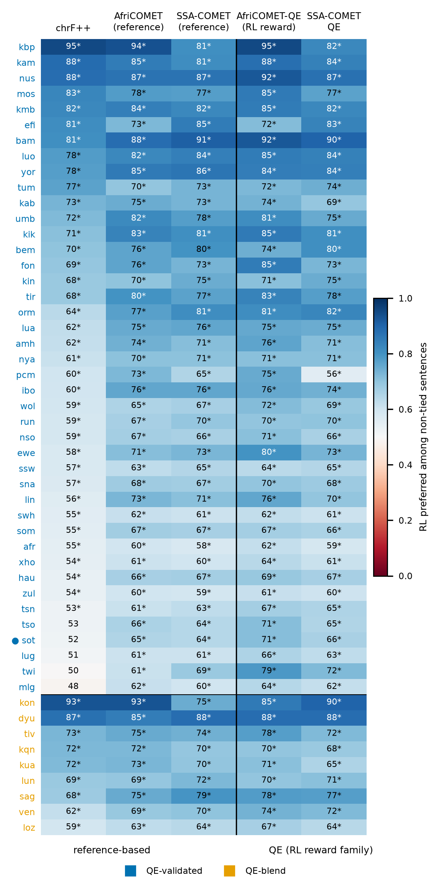
no_pair, all benchmarks pooled; asterisk: Benjamini-Hochberg adjusted sign test q < 0.05, which treats sentences as independent; the language-level intervals in the table below do not). Languages of the QE-validated group in blue, blend in orange; the two columns on the right are the reward family (AfriCOMET-QE, the reward model, and SSA-COMET without reference). The dot marks Southern Sotho, the one language without a significant chrF++ difference. Source: gemma_mt/scripts/pairwise_fig_langs.py.no_pair rows, all benchmarks pooled): macro chrF++ difference (RL minus SFT; asterisk: the 95% bootstrap interval is above zero), share of non-tied sentences in which RL is preferred, the same for the reference-based learned metrics (51 languages), and the finished rate of the two models. Source: reports/data/pairwise_benchmark_comparison/main/unit_stats.csv.| language | reward group | sentences | chrF++ delta | RL preferred % (chrF++) | AfriCOMET-ref: delta; preferred | SSA-COMET-ref: delta; preferred | finished %: SFT / RL |
|---|---|---|---|---|---|---|---|
| kbp | qe validated | 1012 | +11.72* | 96 | +0.186*; 94% | +0.071*; 81% | 35 / 100 |
| kon | blend | 863 | +9.72* | 93 | +0.112*; 93% | +0.060*; 75% | 39 / 100 |
| knc | sft only | 1012 | +8.42* | 97 | n/a | n/a | 37 / 100 |
| nus | qe validated | 1012 | +8.40* | 89 | +0.144*; 87% | +0.093*; 87% | 50 / 100 |
| kam | qe validated | 1012 | +7.90* | 88 | +0.106*; 85% | +0.121*; 81% | 70 / 100 |
| kea | consensus only | 1012 | +7.41* | 88 | n/a | n/a | 78 / 100 |
| efi | qe validated | 1875 | +7.40* | 82 | +0.066*; 73% | +0.153*; 85% | 89 / 100 |
| yor | qe validated | 4018 | +7.40* | 77 | +0.153*; 85% | +0.120*; 86% | 96 / 100 |
| luo | qe validated | 3271 | +6.39* | 79 | +0.097*; 82% | +0.139*; 84% | 91 / 100 |
| ibb | consensus only | 1012 | +6.06* | 88 | n/a | n/a | 84 / 100 |
| dag | consensus only | 135 | +5.29* | 78 | n/a | n/a | 90 / 100 |
| bam | qe validated | 1311 | +5.10* | 81 | +0.094*; 88% | +0.085*; 91% | 84 / 100 |
| kik | qe validated | 1875 | +4.79* | 70 | +0.103*; 83% | +0.105*; 81% | 85 / 100 |
| kin | qe validated | 4878 | +4.53* | 69 | +0.056*; 70% | +0.070*; 75% | 95 / 100 |
| kmb | qe validated | 1012 | +4.52* | 81 | +0.072*; 84% | +0.094*; 82% | 86 / 100 |
| vmw | consensus only | 1012 | +4.46* | 79 | n/a | n/a | 89 / 100 |
| tum | qe validated | 1875 | +4.40* | 74 | +0.062*; 70% | +0.076*; 73% | 95 / 100 |
| her | consensus only | 549 | +4.40* | 77 | n/a | n/a | 80 / 96 |
| tsc | consensus only | 101 | +4.37* | 72 | n/a | n/a | 78 / 91 |
| kqn | blend | 420 | +4.33* | 72 | +0.062*; 72% | +0.058*; 70% | 89 / 100 |
| dyu | blend | 1875 | +4.22* | 88 | +0.071*; 85% | +0.073*; 88% | 89 / 100 |
| kri | consensus only | 863 | +4.12* | 73 | n/a | n/a | 84 / 100 |
| mos | qe validated | 1875 | +4.04* | 84 | +0.062*; 78% | +0.063*; 77% | 94 / 100 |
| bem | qe validated | 3872 | +4.02* | 69 | +0.072*; 76% | +0.095*; 80% | 93 / 100 |
| umb | qe validated | 1012 | +3.96* | 72 | +0.068*; 82% | +0.089*; 78% | 91 / 100 |
| tiv | blend | 863 | +3.53* | 71 | +0.063*; 75% | +0.057*; 74% | 89 / 100 |
| orm | qe validated | 3790 | +3.47* | 62 | +0.099*; 77% | +0.085*; 81% | 87 / 100 |
| kua | blend | 520 | +2.98* | 71 | +0.043*; 73% | +0.040*; 70% | 93 / 98 |
| ven | blend | 2860 | +2.96* | 61 | +0.052*; 69% | +0.057*; 70% | 92 / 100 |
| ndc | consensus only | 863 | +2.94* | 72 | n/a | n/a | 89 / 100 |
| seh | consensus only | 1012 | +2.91* | 71 | n/a | n/a | 94 / 100 |
| ach | consensus only | 1363 | +2.89* | 66 | n/a | n/a | 94 / 100 |
| lun | blend | 420 | +2.75* | 68 | +0.036*; 69% | +0.050*; 72% | 95 / 100 |
| ibo | qe validated | 3927 | +2.74* | 59 | +0.050*; 76% | +0.060*; 76% | 98 / 100 |
| kab | qe validated | 1874 | +2.63* | 71 | +0.050*; 75% | +0.049*; 73% | 95 / 100 |
| lua | qe validated | 1012 | +2.53* | 62 | +0.056*; 75% | +0.073*; 76% | 94 / 100 |
| nyn | consensus only | 1363 | +2.45* | 68 | n/a | n/a | 96 / 100 |
| sag | blend | 1012 | +2.37* | 62 | +0.052*; 75% | +0.069*; 79% | 94 / 100 |
| loz | blend | 960 | +2.33* | 59 | +0.031*; 63% | +0.043*; 64% | 96 / 100 |
| nya | qe validated | 4876 | +2.09* | 61 | +0.039*; 70% | +0.041*; 71% | 98 / 100 |
| tir | qe validated | 3872 | +1.91* | 66 | +0.121*; 80% | +0.085*; 77% | 79 / 100 |
| fon | qe validated | 1874 | +1.87* | 69 | +0.044*; 76% | +0.065*; 73% | 98 / 100 |
| nbl | consensus only | 1184 | +1.86* | 60 | n/a | n/a | 98 / 100 |
| run | qe validated | 1875 | +1.86* | 59 | +0.044*; 67% | +0.052*; 70% | 96 / 100 |
| swh | qe validated | 6086 | +1.79* | 56 | +0.025*; 62% | +0.019*; 61% | 100 / 100 |
| amh | qe validated | 4756 | +1.57* | 61 | +0.078*; 74% | +0.055*; 71% | 89 / 100 |
| ssw | qe validated | 3871 | +1.47* | 57 | +0.037*; 63% | +0.038*; 65% | 97 / 100 |
| ewe | qe validated | 3348 | +1.42* | 56 | +0.042*; 71% | +0.047*; 73% | 97 / 100 |
| sna | qe validated | 4877 | +1.37* | 58 | +0.036*; 68% | +0.033*; 67% | 99 / 100 |
| wol | qe validated | 3242 | +1.36* | 59 | +0.031*; 65% | +0.039*; 67% | 97 / 100 |
| lin | qe validated | 1875 | +1.25* | 53 | +0.064*; 73% | +0.060*; 71% | 95 / 100 |
| tsn | qe validated | 5340 | +1.22* | 53 | +0.025*; 61% | +0.029*; 63% | 98 / 100 |
| nde | sft only | 1997 | +1.21* | 64 | n/a | n/a | 99 / 100 |
| som | qe validated | 3871 | +1.11* | 55 | +0.031*; 67% | +0.027*; 67% | 99 / 100 |
| nso | qe validated | 3872 | +1.02* | 56 | +0.039*; 67% | +0.039*; 66% | 98 / 100 |
| xho | qe validated | 4872 | +1.01* | 54 | +0.023*; 61% | +0.022*; 60% | 99 / 100 |
| hau | qe validated | 3806 | +0.96* | 54 | +0.031*; 66% | +0.036*; 67% | 99 / 100 |
| pcm | qe validated | 2237 | +0.86* | 59 | +0.017*; 73% | +0.007*; 65% | 100 / 100 |
| afr | qe validated | 3872 | +0.86* | 55 | +0.014*; 60% | +0.011*; 58% | 100 / 100 |
| tso | qe validated | 1875 | +0.83* | 51 | +0.035*; 66% | +0.029*; 64% | 98 / 100 |
| zul | qe validated | 4566 | +0.81* | 53 | +0.022*; 60% | +0.021*; 59% | 99 / 100 |
| shi | consensus only | 1997 | +0.76* | 97 | n/a | n/a | 24 / 98 |
| twi | qe validated | 3375 | +0.75* | 52 | +0.018*; 61% | +0.042*; 69% | 98 / 100 |
| lug | qe validated | 3454 | +0.41* | 51 | +0.021*; 61% | +0.023*; 61% | 98 / 100 |
| sot | qe validated | 1875 | +0.29 | 51 | +0.027*; 65% | +0.027*; 64% | 99 / 100 |
| mlg | qe validated | 3872 | +0.29* | 49 | +0.028*; 62% | +0.019*; 60% | 98 / 100 |
The final checkpoint against RL-final, per language. Table 94 gives the per-language difference in corpus chrF++ (final2, step 401, minus RL-final; no_pair rows) on the four benchmarks for which the final checkpoint was scored on the same sentences (Section 6.7). The pairwise comparison with the learned reference-based metrics was added afterwards for NTREX-128, MAFAND-MT and SmolSent pooled (Table 95; Section 6.7): the final checkpoint is clearly lower than RL-final in AfriCOMET with reference in 17 of 40 languages and clearly higher in one (Luganda), the largest falls being Amharic (-0.0154), Yoruba (-0.0099), Oromo (-0.0083), Igbo (-0.0068) and Northern Sotho (-0.0064), in each of which sentence chrF++ is flat or higher (Amharic +0.55, Yoruba +0.55, Oromo +0.23, Northern Sotho +0.14; Igbo -0.06 with an interval that includes zero).
no_pair rows; an asterisk marks a paired 95% bootstrap interval that excludes zero; "--": the language is not in the benchmark) and the FLORES+ values of both. Source: paper/data/final2_eval/per_language_bench.csv.| language | FLORES+ | NTREX-128 | MAFAND-MT | SmolSent | FLORES+ chrF++ RL-final / final2 |
|---|---|---|---|---|---|
| Afrikaans (afr) | +0.05 | +0.09 | -- | +0.08 | 63.6 / 63.6 |
| Amharic (amh) | +1.04* | +0.59* | +0.34* | +0.74* | 19.0 / 20.0 |
| Bambara (bam) | -0.16 | -- | -- | -0.40* | 24.9 / 24.7 |
| Bemba (bem) | +0.33* | +0.15 | -- | +0.30* | 34.0 / 34.3 |
| Chichewa (nya) | +0.09 | +0.18 | -0.16 | -0.05 | 43.4 / 43.4 |
| Dyula (dyu) | -0.22* | -- | -- | +0.01 | 18.3 / 18.1 |
| Ewe (ewe) | +0.39* | -0.09 | -- | -0.05 | 31.1 / 31.5 |
| Fon (fon) | -0.01 | -- | -- | -0.00 | 21.7 / 21.6 |
| Hausa (hau) | +0.59 | +0.75* | -0.06 | +0.42* | 45.2 / 45.7 |
| Igbo (ibo) | +0.13 | +0.09 | -0.65 | +0.55* | 38.4 / 38.5 |
| Kabiye (kbp) | +0.57* | -- | -- | -- | 21.7 / 22.2 |
| Kabuverdianu (kea) | -0.49* | -- | -- | -- | 26.8 / 26.3 |
| Kabyle (kab) | -0.10 | -- | -- | -0.03 | 26.8 / 26.7 |
| Kamba (kam) | +0.11 | -- | -- | -- | 24.9 / 25.0 |
| Kanuri (knc) | +0.40* | -- | -- | -- | 14.8 / 15.2 |
| Kikuyu (kik) | +0.16 | -- | -- | +0.61* | 31.9 / 32.1 |
| Kimbundu (kmb) | +0.20* | -- | -- | -- | 25.6 / 25.8 |
| Kinyarwanda (kin) | +0.18 | -0.18* | -0.03 | -0.48* | 42.0 / 42.1 |
| Kirundi (run) | +0.10 | -- | -- | +0.04 | 34.1 / 34.2 |
| Lingala (lin) | +0.52* | -- | -- | +0.88* | 42.0 / 42.6 |
| Luba-Kasai (lua) | +0.17 | -- | -- | -- | 33.3 / 33.4 |
| Luganda (lug) | +0.64* | -- | -0.24 | +0.40* | 35.2 / 35.8 |
| Luo (luo) | -0.40* | -- | +0.05 | -0.79* | 33.0 / 32.6 |
| Makhuwa (vmw) | +0.03 | -- | -- | -- | 26.9 / 26.9 |
| Malagasy (mlg) | +0.47* | +0.23* | -- | +0.73* | 43.0 / 43.5 |
| Mossi (mos) | +0.03 | -- | -- | -0.06 | 22.8 / 22.9 |
| Northern Sotho (nso) | +1.02* | -0.28* | -- | +1.26* | 48.9 / 49.9 |
| Nuer (nus) | +0.13 | -- | -- | -- | 20.8 / 20.9 |
| Oromo (orm) | +0.43* | +0.18* | -- | +0.56* | 31.3 / 31.7 |
| Sango (sag) | +0.20* | -- | -- | -- | 34.7 / 34.9 |
| Shona (sna) | +0.08 | +0.04 | +0.04 | -0.15 | 39.5 / 39.6 |
| Somali (som) | +0.06 | +0.17* | -- | +0.24 | 40.6 / 40.7 |
| Southern Sotho (sot) | +0.12 | -- | -- | +0.21 | 45.4 / 45.5 |
| Swahili (swh) | +0.25 | +0.28* | +0.30* | +0.12 | 58.4 / 58.6 |
| Swati (ssw) | +0.39* | +0.26* | -- | -0.12 | 37.6 / 38.0 |
| Tigrinya (tir) | +0.12 | +0.21* | -- | +0.39* | 13.8 / 13.9 |
| Tsonga (tso) | -0.03 | -- | -- | +0.46* | 46.0 / 46.0 |
| Tswana (tsn) | +0.26* | +0.12 | +0.71* | +0.39* | 45.9 / 46.1 |
| Tumbuka (tum) | -0.06 | -- | -- | +0.39* | 33.8 / 33.8 |
| Twi (twi) | +0.21 | -- | +0.25* | +0.33* | 37.2 / 37.4 |
| Umbundu (umb) | +0.08 | -- | -- | -- | 25.3 / 25.4 |
| Wolof (wol) | +0.33* | +0.02 | -- | +0.13 | 29.5 / 29.9 |
| Xhosa (xho) | +0.29* | +0.22* | +0.54* | +0.05 | 44.9 / 45.2 |
| Yoruba (yor) | +0.98* | +0.49* | +0.90* | +0.92* | 27.2 / 28.2 |
| Zulu (zul) | +0.64* | +0.55* | +0.60* | +0.61* | 48.7 / 49.3 |
| ach (ach) | -- | -- | -- | -0.15 | -- |
| efi (efi) | -- | -- | -- | -0.54* | -- |
| kon (kon) | -- | -- | -- | -0.02 | -- |
| kri (kri) | -- | -- | -- | +0.21 | -- |
| nbl (nbl) | -- | -- | -- | +0.12 | -- |
| ndc (ndc) | -- | -- | -- | -0.06 | -- |
| nde (nde) | -- | -0.18* | -- | -- | -- |
| nyn (nyn) | -- | -- | -- | +0.06 | -- |
| pcm (pcm) | -- | -- | -0.21* | +0.06 | -- |
| shi (shi) | -- | +0.09* | -- | -- | -- |
| tiv (tiv) | -- | -- | -- | +0.22 | -- |
| ven (ven) | -- | +0.08 | -- | +0.36* | -- |
no_pair rows): sentence-level mean difference of the final checkpoint (final2, step 401) minus RL-final in chrF++, AfriCOMET with reference and SSA-COMET with reference (an asterisk marks a paired 95% sentence-bootstrap interval that excludes zero; "--": no SSA-COMET with reference for that language, or fewer than 20 sentences) and the share of sentences in which final2 wins / loses under AfriCOMET with reference (ties: difference below 0.01). Source: paper/data/final2_eval/g1_pairwise_final2_per_language.csv.| language | sentences (chrF++) | $\Delta$ sentence chrF++ | $\Delta$ AfriCOMET-ref | $\Delta$ SSA-COMET-ref | AfriCOMET-ref: final2 wins / loses % |
|---|---|---|---|---|---|
| Afrikaans (afr) | 2,857 | -0.08 | -0.0008 | -0.0030* | 25 / 25 |
| Amharic (amh) | 3,744 | +0.55* | -0.0154* | -0.0085* | 38 / 51 |
| Bambara (bam) | 299 | -0.28 | -0.0051 | -- | 40 / 43 |
| Bemba (bem) | 2,860 | +0.22* | -0.0020 | -- | 40 / 41 |
| Chichewa (nya) | 3,864 | -0.06 | -0.0045* | -0.0047* | 30 / 37 |
| Dyula (dyu) | 863 | -0.00 | -0.0003 | -- | 43 / 42 |
| Ewe (ewe) | 2,336 | -0.08 | -0.0041* | -0.0047* | 38 / 41 |
| Fon (fon) | 862 | -0.02 | +0.0001 | -- | 36 / 39 |
| Hausa (hau) | 3,636 | +0.35* | -0.0026* | -0.0059* | 33 / 36 |
| Igbo (ibo) | 2,974 | -0.06 | -0.0068* | -0.0132* | 27 / 35 |
| Kabyle (kab) | 862 | -0.03 | -0.0001 | -- | 36 / 39 |
| Kikuyu (kik) | 863 | +0.56* | +0.0027 | -- | 40 / 38 |
| Kinyarwanda (kin) | 3,866 | -0.31* | -0.0038* | -0.0049* | 36 / 40 |
| Kirundi (run) | 863 | +0.00 | -0.0005 | -- | 39 / 43 |
| Lingala (lin) | 863 | +0.87* | -0.0022 | +0.0009 | 40 / 38 |
| Luganda (lug) | 2,363 | +0.10 | +0.0036* | +0.0064* | 41 / 39 |
| Luo (luo) | 2,259 | -0.41* | -0.0037* | -- | 37 / 43 |
| Malagasy (mlg) | 2,860 | +0.41* | -0.0008 | +0.0029 | 39 / 39 |
| Mossi (mos) | 863 | -0.10 | +0.0027 | -- | 41 / 36 |
| Northern Sotho (nso) | 2,860 | +0.14 | -0.0064* | -- | 34 / 43 |
| Oromo (orm) | 2,802 | +0.23* | -0.0083* | -0.0097* | 37 / 47 |
| Shona (sna) | 3,865 | -0.05 | -0.0053* | -0.0057* | 32 / 38 |
| Somali (som) | 2,859 | +0.08 | -0.0051* | -0.0045* | 33 / 39 |
| Southern Sotho (sot) | 863 | +0.16 | -0.0028 | -0.0039 | 30 / 32 |
| Swahili (swh) | 4,574 | +0.01 | -0.0021* | -0.0009 | 28 / 30 |
| Swati (ssw) | 2,859 | +0.11 | -0.0027 | -- | 38 / 41 |
| Tigrinya (tir) | 2,860 | +0.28* | -0.0030 | -0.0031 | 42 / 45 |
| Tsonga (tso) | 863 | +0.42* | -0.0034 | -- | 31 / 36 |
| Tswana (tsn) | 4,358 | +0.26* | -0.0019* | -0.0019 | 31 / 33 |
| Tumbuka (tum) | 863 | +0.43* | +0.0031 | -- | 44 / 37 |
| Twi (twi) | 2,363 | +0.25* | +0.0001 | -0.0011 | 32 / 33 |
| Wolof (wol) | 2,230 | -0.05 | -0.0023* | -0.0056* | 36 / 38 |
| Xhosa (xho) | 3,860 | +0.21* | -0.0019 | -0.0001 | 34 / 37 |
| Yoruba (yor) | 3,361 | +0.55* | -0.0099* | -0.0014 | 35 / 40 |
| Zulu (zul) | 3,590 | +0.51* | -0.0015 | +0.0010 | 36 / 38 |
| ach (ach) | 863 | -0.17 | -- | -- | -- |
| efi (efi) | 863 | -0.54* | -0.0028 | -- | 37 / 42 |
| kon (kon) | 863 | +0.00 | -0.0051* | -- | 38 / 44 |
| kri (kri) | 863 | +0.18 | -- | -- | -- |
| nbl (nbl) | 863 | +0.10 | -- | -- | -- |
| ndc (ndc) | 863 | -0.06 | -- | -- | -- |
| nde (nde) | 1,997 | -0.21* | -- | -- | -- |
| nyn (nyn) | 863 | +0.06 | -- | -- | -- |
| pcm (pcm) | 2,237 | -0.14 | -0.0055* | -- | 17 / 27 |
| shi (shi) | 1,997 | +0.04* | -- | -- | -- |
| tiv (tiv) | 863 | +0.13 | +0.0031 | -- | 41 / 36 |
| ven (ven) | 2,860 | +0.16* | -0.0015 | -- | 33 / 34 |
Table 96 lists the systems of Section 6.10 with their documented context limits and the languages each was run on; the per-language tables behind Table 42 are paper/tables/t_longctx_perlang_*.md, the paired wrapper-minus-whole differences t_longctx_sentence_minus_whole.md and all cells reports/data/longctx/cells.csv.
| model | params | documented max context | documented limits for documents | fits b512 / b1024 / b2048 / AfriScience | languages run |
|---|---|---|---|---|---|
| SabiYarn-270M SFT-final (step 27,638) / RL-final 2c (step 1,433) / A2W a0.7 / live run step 250 / final run final2 step 401 | 270M | 32,768 (Gemma-3-270M positions); trained on windows <= 2,048 tokens; tested here to 10,240 | whole-document generation is the advertised use up to 2,048 tokens; no end-of-text guarantee above ~512 tokens for SFT/RL (R6) | yes / yes / yes / yes / yes (prompt + output <= 10,240; b4096 outputs hit the 3.5x budget) | 12 human-reference languages + AfriScience 6 (all 77 supported) |
| NLLB-200-distilled-600M (CT2 fp16, beam 4) | 615M | max_position_embeddings 1,024 (HF config); model card: trained on inputs <= 512 tokens, 'not intended for document translation' | CTranslate2 truncates the input at 1,024 tokens; default max decoding length 256 (we allowed 1,024) | b512 yes (median 560 NLLB tokens) / b1024 no (90 % truncated) / b2048 no (100 %) / AfriScience dev 64 % fit, test 43 % fit | whole-document: hau yor swh amh zul ibo + the 6 AfriScience languages, no b4096; sentence-by-sentence: 12 core/human languages + 6 AfriScience languages |
| NLLB-200-3.3B (OpenNMT CT2 int8, beam 4) | 3.3B | same as above (1,024 positions; <= 512 trained) | same | same as NLLB-600M | whole-document: hau yor swh amh zul ibo + the 6 AfriScience languages, no b4096; sentence-by-sentence: 12 core/human languages + 6 AfriScience languages |
| TranslatePsy-AfriSLM-0.8B / 2B | 0.8B (1.1B incl. unused vision tower) / 2B (2.7B) | 262,144 (Qwen3.5 config) | model card: quality 'not guaranteed for ... very long documents'; paper evaluates sentence/short-text benchmarks; GGUF evaluations used a 2,048-token context | all bins fit by context | supports 19 African languages (amh hau ibo kin lug mlg som swh wol xho yor zul + afr lin nya orm sna sot tsn), NOT twi, nso. Run: 0.8B on hau yor swh amh zul ibo lug, all bins + b4096; 2B on hau yor swh amh zul, bins stitched ~1,024 / ~2,048, b2048 and AfriScience dev only |
| Qwen3.5-0.8B (zero-shot, chat template, no thinking); 2B NOT run | 0.8B / 2B | 262,144 | none documented for translation | all bins fit by context | sentence-by-sentence only (the whole-document job was stopped for time): hau yor swh amh zul; no African-language training claim |
| Gemma-3-1B-it (zero-shot) | 1B | 32,768 | none documented for translation | all bins fit by context | sentence-by-sentence only, hau yor swh amh zul, bins stitched ~1,024 / ~2,048 and AfriScience dev; no African-language training claim (gated model; 4B-it not run: 8.6 GB weights > cap) |
Gemini Batch API as a second pseudo-reference: plan only, nothing run. (The LLM-judge runs of Section 6.12 are a different use of the Gemini API, scoring existing outputs with a judge prompt; they do not produce a pseudo-reference and are not part of this plan, whose own cost estimates and absence of any call stand.) The NLLB-3.3B pseudo-reference of the core documents is biased towards NLLB-like systems and is not above our model in several languages (Section 6.10). LC1 therefore prepared, but did not run, a plan to translate the benchmark with the Gemini Batch API as an additional evaluation reference (reports/long_context_gemini_plan_2026-10-23.md, scripts paper/scripts/gemini_*.py with 11 passing tests; the API key would come from an environment variable; no key was available and no API call, paid or free, was made for this plan; the judge validation pilot of Section 7.1a later used the Gemini API, with a key from an environment variable, to score 300 segments of public human-annotated MT data; it translated nothing of this benchmark). The benchmark is small: 2,280 items (290 documents times languages), about 2.3-2.7 M English source tokens. With the prices that LC1 read from the provider's pricing page on 2026-10-23 (we did not verify them independently; Batch = 50% of the standard price; output prices include thinking tokens) and an assumed output of 2.75 times the English tokens (not measured; Amharic may exceed 3.5), whole-document requests with thinking switched off cost about 9.6 USD for the full set and 1.2 USD for a reduced set of 270 items with Gemini 2.5 Flash (Flash-Lite: 1.6 and 0.2 USD; Gemini 2.5 Pro with default thinking about 61 and 7.4 USD); sentence-by-sentence requests cost about 1% more with eight sentences per request and 16% more with one (three and eighteen times more with default thinking); a 50-sentence pilot over 14 languages costs about 0.06 USD (up to 1.2-7.3 USD for Pro with thinking). Money is not the constraint; quality is: Gemini's quality in low-resource African languages is uneven (the only evidence in the repository is 10 FLORES sentences per language for Gemini 2.5 Flash against 1,012 for NLLB-3.3B), and an earlier Gemini-generated Urhobo set was of doubtful quality. By that thin evidence Gemini is ahead of NLLB-3.3B in Hausa, Swahili, Igbo, Malagasy, Zulu, Xhosa, Kinyarwanda, Somali, Twi, Luganda and Northern Sotho, marginal in Yoruba and Wolof, and unmeasured in Amharic; it would add most where NLLB is not above our model (Luganda, Northern Sotho). The recommended order is the pilot against human references first, then the reduced set, then the full set only if the pilot passes. Gemini outputs would be used as evaluation references only (the provider's terms forbid using the service to develop competing models), never as training data. The cost tables are generated by paper/scripts/gemini_batch_cost.py into paper/tables/t_longctx_gemini_cost.md.
Judge model. The SSA-COMET paper (Li et al., 2025) judges with Gemini-2.5-Pro. For our API key that model returned "no longer available to new users" (Batch API and standard API), so we did not run it. We compared Gemini-3.1-Pro-preview (Google's named successor) with Gemini-3.8-Flash on the same 300 SSA-MTE and AfriMTE segments (reports/judge_pilot_2026-10-25.md, reports/data/judge_pilot_2026-10-25/): pooled Spearman with the human z-score 0.511 [0.41, 0.60] for Flash and 0.454 [0.35, 0.55] for 3.1 Pro, paired difference Pro minus Flash -0.057 [-0.09, -0.02], per-language intervals of the difference including zero except for Hausa and Somali, at about one fifth of the cost (USD 0.29 and 1.53 for the 300 segments). We therefore used Gemini-3.8-Flash; we do not claim that it is better than 2.5 Pro. All other settings are listed below.
The independent judge of Section 6.12 uses the two prompts of Li et al. (Li et al., 2025) without change: Figure 8 (reference-based) and Figure 9 (reference-free, "QE"), five-shot, score only. The text below is the exact request text built by gemma_mt/scripts/judge_j2_common.py (reports/data/judge_j2_2026-10-25/prompt_templates_and_examples.txt); it is verbatim from the publication except that "[67]Most" is written "[67] Most". Figure 9 is Figure 8 with the Reference: ... field removed from the five demonstrations and from the test line. Header (both prompts):
Assess the translation adequacy on a continuous scale [0 ~ 100] using the quality levels described below:
[0] Nonsense/No meaning preserved: Nearly all information is lost between the translation and source.
[34] Some meaning preserved: The translation preserves some of the meaning of the source but misses significant parts.
[67] Most meaning preserved: The translation retains most of the meaning of the source.
[100] Perfect meaning: The meaning of the translation is completely consistent with the source.
Instruction: Please assess the given machine translation based on the source sentence. Note that you should only output the final score
Given examples:
Demonstrations (five, numbered "Example 1:" to "Example 5:", one per adequacy interval; reference-free prompt, Swahili, example 1 of the Run 1 request):
Example 1:
Source: After the accident occurred, Gibson was transported to a hospital but died shortly afterwards. Translation: Baada ya ajali ilitokea, Gibson alichaguliwa hospitalini lakini alikufa baada ya muda mfupi. Score: 91
The reference-based prompt has the same demonstrations with the human reference inserted between the translation and the score (verbatim format, Hausa, example 3 of the Run 2 request; stored in prompt_example_run2_flores_hau_rl.txt): "Example 3: Source: source sentence Translation: system translation Reference: human reference Score: 60".
Closing line and test line (both prompts; the request ends with "Score: " and a trailing space, and the judge answers with a bare number):
Based on the examples given, generate the output in exactly the same format, give the score and do not give any commentary response.
Source: source sentence or aligned source block Translation: system output [Reference: human reference, reference-based prompt only] Score:
The demonstrations are those of the pilot (reports/data/judge_pilot_2026-10-25/demo_ids.json): the SSA-MTE train split for Amharic, Hausa, Kinyarwanda and Yoruba, other rows of the same pair of AfriMTE-WMT2024 (scores min-max scaled to 0-100) for Swahili, Igbo, Somali and Xhosa; the demonstrations of languages that were not validated were not used. One complete request per prompt type and language is stored in reports/data/judge_j2_2026-10-25/prompt_example_*.txt (Run 1: Yoruba and Swahili, QE; Run 2: Hausa, reference-based, RL-final output; Run 3: final checkpoint whole-document, final checkpoint wrapper and NLLB-200 3.3B, QE), and every request actually sent is in prompts_run{1,2,3}_*.jsonl.gz.
Settings and failures. gemini-3.8-flash as served on 2026-10-25; temperature 0; thinking at the model default; Batch API only; one request per segment or unit and one run; output cap 1,500 tokens (Run 1) and 1,000 tokens (Runs 2 and 3), thinking included. Of 6,190 responses none failed to parse and none ended for a reason other than STOP; the largest thinking budget was 912 tokens. Table 97 gives the requests and the cost of each batch job (input USD 0.375 and output, thinking included, USD 1.875 per million tokens at the Batch price on that date). Runs 2 and 3 were each split in two jobs by language so that the worst-case sum stayed below the budget cap of USD 8; the split does not change any request.
reports/data/judge_j2_2026-10-25/cost_summary.csv, reports/data/judge_pilot_2026-10-25/cost_and_failures.csv.| job | requests | max output tokens (thinking included) | input tokens | output tokens incl. thinking | worst case at submit (USD) | actual cost (USD) |
|---|---|---|---|---|---|---|
| Run 1: QE prompt on the 300 pilot segments | 300 | 1,500 | 212,154 | 85,944 | 0.97 | 0.241 |
| Run 2, part a (amh hau kin yor) | 1,540 | 1,000 | 1,576,869 | 532,404 | 3.65 | 1.590 |
| Run 2, part b (swh ibo som xho) | 1,600 | 1,000 | 1,736,036 | 502,862 | 3.83 | 1.594 |
| Run 3, part a (hau yor swh) | 1,427 | 1,000 | 975,346 | 359,475 | 3.19 | 1.040 |
| Run 3, part b (amh ibo kin) | 1,323 | 1,000 | 921,535 | 327,850 | 2.97 | 0.960 |
| total of Runs 1-3 | 6,190 | 5,421,940 | 1,808,535 | 5.424 | ||
| pilot of Section 7.1a (3.1 Pro and 3.8 Flash, 600 requests) | 600 | 614,728 | 296,563 | 1.821 |